NIST Special Publication · PDF 原文抽出
Guidelines on Securing Public Web Servers
公開Webサーバーのセキュリティ確保
NIST SP 800-44 Version 2（Guidelines on Securing Public Web Servers）の英文と日本語訳を段落ごとに並べた閲覧用ページです。公開Webサーバーのソフトウェア選定、OSとサーバーの堅牢化、ネットワーク保護、コンテンツ管理、認証・暗号化、監視、バックアップを含む構築・運用上の推奨事項を示します。 翻訳は有志による非公式のもので、NIST および米国商務省が作成・承認・推奨したものではありません。要件の確認にはNIST の正式版 PDFを参照してください。
PDF から抽出した原文は原本との照合待ちです。
PDF p.140: 二段組の可能性があるため読み順を原本と照合してください
PDF p.141: 二段組の可能性があるため読み順を原本と照合してください
本文の数式はLaTeXの構造からKaTeXで表示しています。
［NIST のロゴ。公的な標章のため、この非公式サイトには掲載していない。原本 PDF を参照。］
Special Publication 800-44 Version 2
特別刊行物800-44 第2版
未レビュー訳Guidelines on Securing Public Web Servers
公開Webサーバーのセキュリティ確保に関するガイドライン
Recommendations of the National Institute of Standards and Technology
米国国立標準技術研究所の推奨事項
Miles Tracy Wayne Jansen Karen Scarfone Theodore Winograd
Miles Tracy、Wayne Jansen、Karen Scarfone、Theodore Winograd
未レビュー訳原本PDFの抜粋画像
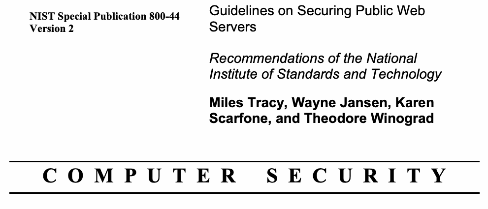
原本PDFの抜粋画像
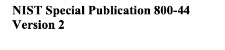
Computer Security Division Information Technology Laboratory National Institute of Standards and Technology Gaithersburg, MD 20899-8930
コンピューターセキュリティ部門、情報技術研究所、米国国立標準技術研究所、Gaithersburg, MD 20899-8930
未レビュー訳September 2007
2007年9月
未レビュー訳U.S. Department of Commerce
米国商務省
未レビュー訳Carlos M. Gutierrez, Secretary
長官 Carlos M. Gutierrez
未レビュー訳National Institute of Standards and Technology
米国国立標準技術研究所（NIST）
未レビュー訳James Turner, Acting Director
所長代行 James Turner
未レビュー訳Reports on Computer Systems Technology
コンピューターシステム技術に関する報告書
The Information Technology Laboratory (ITL) at the National Institute of Standards and Technology (NIST) promotes the U.S. economy and public welfare by providing technical leadership for the Nation’s measurement and standards infrastructure. ITL develops tests, test methods, reference data, proof of concept implementations, and technical analysis to advance the development and productive use of information technology. ITL’s responsibilities include the development of technical, physical, administrative, and management standards and guidelines for the cost-effective security and privacy of sensitive unclassified information in Federal computer systems. This Special Publication 800-series reports on ITL’s research, guidance, and outreach efforts in computer security, and its collaborative activities with industry, government, and academic organizations.
米国国立標準技術研究所（NIST）の情報技術研究所（ITL）は、米国の計測・標準基盤に技術的リーダーシップを提供し、米国経済と社会福祉の向上を促進している。ITLは、情報技術の発展と有効利用を推進するため、試験、試験方法、参照データ、概念実証実装、技術分析を開発する。ITLの責務には、連邦政府のコンピューターシステムにおける機微だが非機密の情報のセキュリティとプライバシーを費用対効果よく確保するための、技術、物理、運用、管理に関する標準およびガイドラインの策定が含まれる。特別刊行物800シリーズは、コンピューターセキュリティに関するITLの研究、指針、普及活動、および産業界、政府、学術機関との協働活動を報告するものである。
National Institute of Standards and Technology Special Publication 800-44 Version 2 Natl. Inst. Stand. Technol. Spec. Publ. 800-44 Ver. 2, 142 pages (Sep. 2007)
米国国立標準技術研究所 特別刊行物800-44 第2版、Natl. Inst. Stand. Technol. Spec. Publ. 800-44 Ver. 2、142ページ（2007年9月）
未レビュー訳原本PDFの抜粋画像
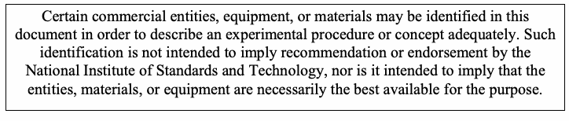
Acknowledgements, Version 2
第2版の謝辞
The authors, Wayne Jansen and Karen Scarfone of NIST, Miles Tracy of Federal Reserve Information Technology, and Theodore Winograd of Booz Allen Hamilton, wish to express their thanks to colleagues who reviewed drafts of this document. In particular, their appreciation goes to Tim Grance, Bill Burr, Patrick O’Reilly, Ray Perlner, and Murugiah Souppaya from NIST, and Jason Butterfield, Kwok Cheng, and Jonathan Holleran of Booz Allen Hamilton, for their research, technical support, and written contributions to this document. The authors also appreciate the efforts of those individuals, agencies, and other organizations that contributed input during the public comment period.
著者であるNISTのWayne JansenおよびKaren Scarfone、Federal Reserve Information TechnologyのMiles Tracy、Booz Allen HamiltonのTheodore Winogradは、本書の草案をレビューした同僚に感謝する。特に、調査、技術支援、文書への寄稿を行ったNISTのTim Grance、Bill Burr、Patrick O’Reilly、Ray Perlner、Murugiah Souppaya、ならびにBooz Allen HamiltonのJason Butterfield、Kwok Cheng、Jonathan Holleranに謝意を表する。また、パブリックコメント期間中に意見を寄せた個人、機関、その他の組織の尽力にも感謝する。
Acknowledgements, Original Version
初版の謝辞
The authors, Wayne Jansen from NIST and Miles Tracy and Mark McLarnon from Booz Allen Hamilton, wish to express their thanks to colleagues at both organizations who reviewed drafts of this document. In particular, their appreciation goes to John Wack, Murugiah Souppaya, and Tim Grance from NIST, and Steve Allison, Scott Bisker, Alexis Feringa, Kevin Kuhlkin, and Jonathan Holleran of Booz Allen Hamilton for their research, technical support, and written contributions to this document. The authors would also like to express their thanks to all those who contributed input during the public comment period and who assisted with our internal review process.
著者であるNISTのWayne Jansen、およびBooz Allen HamiltonのMiles TracyとMark McLarnonは、両組織で本書の草案をレビューした同僚に感謝する。特に、調査、技術支援、文書への寄稿を行ったNISTのJohn Wack、Murugiah Souppaya、Tim Grance、ならびにBooz Allen HamiltonのSteve Allison、Scott Bisker、Alexis Feringa、Kevin Kuhlkin、Jonathan Holleranに謝意を表する。また、パブリックコメント期間に意見を寄せた方々、および内部レビューに協力した方々にも感謝する。
Table of Contents
目次
Executive Summary..............................................................................................................ES-1
エグゼクティブサマリー..............................................................................................................ES-1
未レビュー訳1. Introduction ......................................................................................................................1-1
1. はじめに ......................................................................................................................1-1
未レビュー訳1.1 Authority...................................................................................................................1-1
1.1 権限...................................................................................................................1-1
未レビュー訳1.2 Purpose and Scope .................................................................................................1-1
1.2 目的および適用範囲 .................................................................................................1-1
未レビュー訳1.3 Audience and Assumptions .....................................................................................1-2
1.3 対象読者および前提 .....................................................................................1-2
未レビュー訳1.4 Document Structure.................................................................................................1-2
1.4 文書の構成.................................................................................................1-2
未レビュー訳2. Background ......................................................................................................................2-1
2. 背景 ......................................................................................................................2-1
3. Planning and Managing Web Servers ............................................................................3-1
3. Webサーバーの計画および管理 ............................................................................3-1
未レビュー訳3.1 Installation and Deployment Planning......................................................................3-1
3.1 インストールおよび導入の計画......................................................................3-1
未レビュー訳3.2 Security Management Staff......................................................................................3-3
3.2 セキュリティ管理担当者......................................................................................3-3
未レビュー訳3.2.1 Senior IT Management/Chief Information Officer .........................................3-4
3.2.1 上級IT管理者／最高情報責任者（CIO） .........................................3-4
未レビュー訳3.2.2 Information Systems Security Program Managers .......................................3-4
3.2.2 情報システムセキュリティプログラム管理者 .......................................3-4
未レビュー訳3.2.3 Information Systems Security Officers .........................................................3-4
3.2.3 情報システムセキュリティ責任者 .........................................................3-4
未レビュー訳3.2.4 Web Server and Network Administrators .....................................................3-5
3.2.4 Webサーバーおよびネットワーク管理者 .....................................................3-5
未レビュー訳3.2.5 Web Application Developers ........................................................................3-5
3.2.5 Webアプリケーション開発者 ........................................................................3-5
未レビュー訳3.3 Management Practices ............................................................................................3-6
3.3 管理実務 ............................................................................................3-6
未レビュー訳3.4 System Security Plan...............................................................................................3-7
3.4 システムセキュリティ計画...............................................................................................3-7
未レビュー訳3.5 Human Resources Requirements............................................................................3-8
3.5 人的資源に関する要件............................................................................3-8
未レビュー訳3.6 Alternative Web Server Platforms............................................................................3-9
3.6 代替Webサーバープラットフォーム............................................................................3-9
未レビュー訳3.6.1 Trusted Operating Systems..........................................................................3-9
3.6.1 信頼できるオペレーティングシステム..........................................................................3-9
未レビュー訳3.6.2 Web Server Appliances..............................................................................3-10
3.6.2 Webサーバーアプライアンス..............................................................................3-10
未レビュー訳3.6.3 Pre-Hardened Operating Systems and Web Servers.................................3-11
3.6.3 事前に堅牢化されたオペレーティングシステムとWebサーバー.................................3-11
未レビュー訳3.6.4 Virtualized Platforms...................................................................................3-12
3.6.4 仮想化プラットフォーム...................................................................................3-12
未レビュー訳3.7 Checklist for Planning and Managing Web Servers...............................................3-13
3.7 Webサーバーの計画および管理チェックリスト...............................................3-13
未レビュー訳4. Securing the Web Server Operating System.................................................................4-1
4. Webサーバーのオペレーティングシステムのセキュリティ確保.................................4-1
4.1 Installing and Configuring the Operating System.....................................................4-1
4.1 オペレーティングシステムのインストールと構成.............................................4-1
未レビュー訳4.1.1 Patch and Upgrade Operating System.........................................................4-1
4.1.1 オペレーティングシステムへのパッチ適用とアップグレード.................................4-1
未レビュー訳4.1.2 Remove or Disable Unnecessary Services and Applications.......................4-2
4.1.2 不要なサービスおよびアプリケーションの削除または無効化...............................4-2
未レビュー訳4.1.3 Configure Operating System User Authentication........................................4-4
4.1.3 オペレーティングシステムのユーザー認証の構成........................................4-4
未レビュー訳4.1.4 Configure Resource Controls Appropriately .................................................4-6
4.1.4 リソース制御の適切な構成 .................................................4-6
未レビュー訳4.1.5 Install and Configure Additional Security Controls .......................................4-6
4.1.5 追加のセキュリティ管理策のインストールと構成 .......................................4-6
未レビュー訳4.2 Security Testing the Operating System ...................................................................4-7
4.2 オペレーティングシステムのセキュリティ試験 ...................................4-7
未レビュー訳4.3 Checklist for Securing the Web Server Operating System ......................................4-7
4.3 Webサーバーのオペレーティングシステムを保護するためのチェックリスト ......4-7
未レビュー訳5. Securing the Web Server.................................................................................................5-1
5. Webサーバーのセキュリティ確保.................................................................................5-1
5.1 Securely Installing the Web Server..........................................................................5-1
5.1 Webサーバーの安全なインストール..........................................................................5-1
未レビュー訳5.2 Configuring Access Controls....................................................................................5-2
5.2 アクセス制御の構成....................................................................................5-2
未レビュー訳5.2.1 Configuring the Permissions of the Web Server Application ........................5-3
5.2.1 Webサーバーアプリケーションのアクセス許可の構成 ........................5-3
未レビュー訳5.2.2 Configuring Secure Web Content Directory .................................................5-4
5.2.2 Webコンテンツディレクトリの安全な構成 .................................................5-4
未レビュー訳5.2.3 Uniform Resource Identifiers and Cookies ...................................................5-5
5.2.3 統一資源識別子（URI）およびCookie ...................................................5-5
未レビュー訳5.2.4 Controlling Impact of Web “Bots” on Web Servers.......................................5-6
5.2.4 Web「ボット」がWebサーバーに及ぼす影響の制御.......................................5-6
未レビュー訳5.3 Checklist for Securing the Web Server ....................................................................5-9
5.3 Webサーバーのセキュリティ確保チェックリスト ....................................5-9
未レビュー訳6. Securing Web Content.....................................................................................................6-1
6. Webコンテンツのセキュリティ確保.....................................................................6-1
未レビュー訳6.1 Publishing Information on Public Web Sites ............................................................6-1 6.2 Observing Regulations about the Collection of Personal Information......................6-3 6.3 Mitigating Indirect Attacks on Content .....................................................................6-5 6.3.1 Phishing........................................................................................................6-5 6.3.2 Pharming ......................................................................................................6-7 6.4 Securing Active Content and Content Generation Technologies.............................6-8 6.4.1 Vulnerabilities with Client-Side Active Content Technologies ....................6-10 6.4.2 Vulnerabilities with Server-Side Content Generation Technologies ...........6-12 6.4.3 Server-Side Content Generator Security Considerations...........................6-15 6.4.4 Location of Server-Side Content Generators .............................................6-17 6.4.5 Cross-Site Scripting Vulnerabilities ............................................................6-17 6.5 Checklist for Securing Web Content ......................................................................6-18
6.1 公開Webサイトでの情報公開 ............................................................6-1 6.2 個人情報の収集に関する規制の遵守......................................................6-3 6.3 コンテンツへの間接攻撃の緩和.....................................................................6-5 6.3.1 フィッシング........................................................................................................6-5 6.3.2 ファーミング ......................................................................................................6-7 6.4 アクティブコンテンツおよびコンテンツ生成技術の保護.............................6-8 6.4.1 クライアント側アクティブコンテンツ技術の脆弱性 ....................6-10 6.4.2 サーバー側コンテンツ生成技術の脆弱性 ...........6-12 6.4.3 サーバー側コンテンツ生成機能のセキュリティ上の考慮事項...........................6-15 6.4.4 サーバー側コンテンツ生成機能の配置 .............................................6-17 6.4.5 クロスサイトスクリプティングの脆弱性 ............................................................6-17 6.5 Webコンテンツのセキュリティ確保チェックリスト ......................................6-18
未レビュー訳7. Using Authentication and Encryption Technologies....................................................7-1
7. 認証技術および暗号化技術の使用....................................................7-1
7.1 Determining Authentication and Encryption Requirements .....................................7-1 7.2 Address-Based Authentication.................................................................................7-1 7.3 Basic Authentication ................................................................................................7-2 7.4 Digest Authentication...............................................................................................7-2 7.5 SSL/TLS...................................................................................................................7-3 7.5.1 SSL/TLS Capabilities....................................................................................7-3 7.5.2 Weaknesses of SSL/TLS..............................................................................7-4 7.5.3 Example SSL/TLS Session ..........................................................................7-5 7.5.4 SSL/TLS Encryption Schemes .....................................................................7-6 7.5.5 Implementing SSL/TLS.................................................................................7-8 7.5.6 SSL/TLS Implementations..........................................................................7-12 7.6 Brute Force Attacks ...............................................................................................7-12 7.7 Checklist for Using Authentication and Encryption Technologies for Web Servers7-14
7.1 認証要件および暗号化要件の決定 .....................................7-1 7.2 アドレスベース認証.................................................................................7-1 7.3 基本認証 ................................................................................................7-2 7.4 ダイジェスト認証...............................................................................................7-2 7.5 SSL/TLS...................................................................................................................7-3 7.5.1 SSL/TLSの機能....................................................................................7-3 7.5.2 SSL/TLSの弱点..............................................................................7-4 7.5.3 SSL/TLSセッションの例 ..........................................................................7-5 7.5.4 SSL/TLS暗号化方式 .....................................................................7-6 7.5.5 SSL/TLSの実装.................................................................................7-8 7.5.6 SSL/TLSの実装製品..........................................................................7-12 7.6 総当たり攻撃 ...............................................................................................7-12 7.7 Webサーバーで認証技術および暗号化技術を使用する際のチェックリスト7-14
未レビュー訳8. Implementing a Secure Network Infrastructure ............................................................8-1
8. セキュアなネットワーク基盤の実装 ............................................................8-1
未レビュー訳8.1 Network Composition and Structure ........................................................................8-1 8.1.1 Inadvisable Network Layout .........................................................................8-1 8.1.2 Demilitarized Zone........................................................................................8-1 8.1.3 Outsourced Hosting......................................................................................8-4 8.1.4 Management Network ..................................................................................8-5 8.2 Network Element Configuration ...............................................................................8-5 8.2.1 Router/Firewall Configuration.......................................................................8-5 8.2.2 Intrusion Detection and Prevention Systems................................................8-9 8.2.3 Network Switches.......................................................................................8-11 8.2.4 Load Balancers...........................................................................................8-12 8.2.5 Reverse Proxies .........................................................................................8-12 8.3 Checklist for Implementing a Secure Network Infrastructure.................................8-13
8.1 ネットワークの構成と構造 ........................................................................8-1 8.1.1 推奨されないネットワーク構成 .........................................................................8-1 8.1.2 非武装地帯（DMZ）........................................................................................8-1 8.1.3 ホスティングの外部委託......................................................................................8-4 8.1.4 管理ネットワーク ..................................................................................8-5 8.2 ネットワーク機器の構成 ...............................................................................8-5 8.2.1 ルーター／ファイアウォールの構成.......................................................................8-5 8.2.2 侵入検知・防止システム................................................................................8-9 8.2.3 ネットワークスイッチ.......................................................................................8-11 8.2.4 ロードバランサー...........................................................................................8-12 8.2.5 リバースプロキシ .........................................................................................8-12 8.3 セキュアなネットワーク基盤を実装するためのチェックリスト.................................8-13
未レビュー訳9. Administering the Web Server........................................................................................9-1
9. Webサーバーの管理........................................................................................9-1
未レビュー訳9.1 Logging ....................................................................................................................9-1 9.1.1 Identifying the Logging Capabilities of a Web Server...................................9-1 9.1.2 Identifying Additional Logging Requirements ...............................................9-3 9.1.3 Recommended Generic Logging Configuration ...........................................9-3 9.1.4 Reviewing and Retaining Log Files ..............................................................9-3 9.1.5 Automated Log File Analysis Tools ..............................................................9-5
9.1 ログ記録 ....................................................................................................................9-1 9.1.1 Webサーバーのログ機能の確認...................................9-1 9.1.2 追加のログ要件の確認 ...............................................9-3 9.1.3 推奨される一般的なログ構成 ...........................................9-3 9.1.4 ログファイルのレビューと保持 ..............................................................9-3 9.1.5 自動ログファイル分析ツール ..............................................................9-5
未レビュー訳9.2 Web Server Backup Procedures..............................................................................9-5 9.2.1 Web Server Backup Policies and Strategies................................................9-5 9.2.2 Maintain a Test Web Server.........................................................................9-7 9.2.3 Maintain an Authoritative Copy of Organizational Web Content ..................9-8 9.3 Recovering From a Security Compromise ...............................................................9-9 9.4 Security Testing Web Servers ...............................................................................9-11 9.4.1 Vulnerability Scanning................................................................................9-11 9.4.2 Penetration Testing ....................................................................................9-12 9.5 Remotely Administering a Web Server ..................................................................9-13 9.6 Checklist for Administering the Web Server ..........................................................9-14
9.2 Webサーバーのバックアップ手順..............................................................................9-5 9.2.1 Webサーバーのバックアップ方針と戦略................................................9-5 9.2.2 テスト用Webサーバーの維持.........................................................................9-7 9.2.3 組織のWebコンテンツの正本の維持 ..................9-8 9.3 セキュリティ侵害からの復旧 ...............................................................9-9 9.4 Webサーバーのセキュリティ試験 ...............................................................................9-11 9.4.1 脆弱性スキャン................................................................................9-11 9.4.2 ペネトレーションテスト ....................................................................................9-12 9.5 Webサーバーのリモート管理 ..................................................................9-13 9.6 Webサーバー管理チェックリスト ..........................................................9-14
未レビュー訳Appendices
付録
Appendix A— Online Web Server Security Resources....................................................... A-1
付録A — Webサーバーセキュリティのオンラインリソース....................................................... A-1
未レビュー訳Appendix B— Glossary .......................................................................................................... B-1
付録B — 用語集 .......................................................................................................... B-1
未レビュー訳Appendix C— Web Security Tools and Applications .......................................................... C-1
付録C — Webセキュリティのツールおよびアプリケーション .......................................................... C-1
未レビュー訳Appendix D— References ...................................................................................................... D-1
付録D — 参考文献 ...................................................................................................... D-1
未レビュー訳Appendix E— Web Server Security Checklist...................................................................... E-1
付録E — Webサーバーセキュリティチェックリスト...................................................................... E-1
未レビュー訳Appendix F— Acronym List................................................................................................... F-1
付録F — 略語一覧................................................................................................... F-1
未レビュー訳Appendix G— Index................................................................................................................G-1
付録G — 索引................................................................................................................G-1
未レビュー訳List of Tables and Figures
表および図の一覧
Figure 7-1. SSL/TLS Location within the Internet Protocol Stack .............................................7-3 Table 7-1. SSL/TLS Cipher Suites............................................................................................7-7 Figure 7-2. Sample CSR...........................................................................................................7-9 Figure 7-3. Sample Encoded SSL/TLS Certificate..................................................................7-10 Figure 8-1. Simple Single-Firewall DMZ ...................................................................................8-2 Figure 8-2. Two-Firewall DMZ ..................................................................................................8-2 Figure 8-3. Service Leg DMZ....................................................................................................8-3 Figure 8-4. Outsourced Web Server Hosting............................................................................8-4
図7-1. インターネットプロトコルスタック内のSSL/TLSの位置 .............................................7-3 表7-1. SSL/TLS暗号スイート............................................................................................7-7 図7-2. CSRの例...........................................................................................................7-9 図7-3. エンコードされたSSL/TLS証明書の例..................................................................7-10 図8-1. 単一ファイアウォールの簡易DMZ ...................................................................................8-2 図8-2. 二重ファイアウォールのDMZ ..................................................................................................8-2 図8-3. サービスレッグ型DMZ....................................................................................................8-3 図8-4. Webサーバーホスティングの外部委託............................................................................8-4
未レビュー訳Executive Summary
エグゼクティブサマリー
未レビュー訳The World Wide Web (WWW) is a system for exchanging information over the Internet. At the most basic level, the Web can be divided into two principal components: Web servers, which are applications that make information available over the Internet (in essence, publish information), and Web browsers (clients), which are used to access and display the information stored on the Web servers. This document focuses on the security issues of Web servers.1
ワールドワイドウェブ（WWW）は、インターネット上で情報を交換するシステムである。最も基本的なレベルでは、Webは2つの主要な構成要素に分けられる。すなわち、インターネット上で情報を利用可能にする（本質的には情報を公開する）アプリケーションであるWebサーバーと、Webサーバーに保存された情報にアクセスし表示するためのWebブラウザー（クライアント）である。本書ではWebサーバーのセキュリティ上の問題に焦点を当てる。1
未レビュー訳Unfortunately, Web servers are often the most targeted and attacked hosts on organizations’ networks. As a result, it is essential to secure Web servers and the network infrastructure that supports them. The following are examples of specific security threats to Web servers:
残念ながら、Webサーバーは組織のネットワーク上で、標的にされ攻撃を受けることが特に多いホストである。そのため、Webサーバーと、それを支えるネットワーク基盤のセキュリティを確保することが不可欠である。Webサーバーに対する具体的なセキュリティ脅威の例を以下に示す。
(cid:31) Malicious entities may exploit software bugs in the Web server, underlying operating system, or active content to gain unauthorized access to the Web server. Examples of this unauthorized access include gaining access to files or folders that were not meant to be publicly accessible (e.g., directory traversal attacks) and being able to execute commands and/or install software on the Web server.
• 悪意のある主体が、Webサーバー、基盤となるオペレーティングシステム、またはアクティブコンテンツのソフトウェアバグを悪用して、Webサーバーへの不正アクセスを試みる場合がある。不正アクセスの例として、公開を意図していないファイルやフォルダーへのアクセス（例：ディレクトリトラバーサル攻撃）や、Webサーバー上でコマンドを実行したりソフトウェアをインストールしたりすることが挙げられる。
未レビュー訳(cid:31) Denial of service (DoS) attacks may be directed to the Web server or its supporting network infrastructure, denying or hindering valid users from making use of its services.
• Webサーバーまたはそれを支えるネットワーク基盤にサービス妨害（DoS）攻撃が仕掛けられ、正当なユーザーがサービスを利用できなくなったり、利用が妨げられたりする場合がある。
未レビュー訳(cid:31) Sensitive information on the Web server may be read or modified without authorization.
• Webサーバー上の機微な情報が、許可なく読み取られたり変更されたりする場合がある。
未レビュー訳(cid:31) Sensitive information on backend databases that are used to support interactive elements of a Web application may be compromised through command injection attacks (e.g., Structured Query Language [SQL] injection, Lightweight Directory Access Protocol (LDAP) injection, cross-site scripting [XSS]).
• Webアプリケーションの対話型機能を支えるバックエンドデータベース内の機微な情報が、コマンドインジェクション攻撃（例：構造化照会言語（SQL）インジェクション、軽量ディレクトリアクセスプロトコル（LDAP）インジェクション、クロスサイトスクリプティング（XSS））によって侵害される場合がある。
未レビュー訳(cid:31) Sensitive information transmitted unencrypted between the Web server and the browser may be intercepted.
• Webサーバーとブラウザーの間で暗号化されずに送信される機微な情報が傍受される場合がある。
未レビュー訳(cid:31) Information on the Web server may be changed for malicious purposes. Web site defacement is a commonly reported example of this threat.
• Webサーバー上の情報が悪意のある目的で改ざんされる場合がある。この脅威の例として、Webサイトの改ざんがよく報告されている。
未レビュー訳(cid:31) Malicious entities may gain unauthorized access to resources elsewhere in the organization’s network via a successful attack on the Web server.
• Webサーバーへの攻撃が成功すると、悪意のある主体が組織内ネットワークの別のリソースへ不正アクセスする場合がある。
未レビュー訳(cid:31) Malicious entities may attack external entities after compromising a Web server host. These attacks can be launched directly (e.g., from the compromised host against an external server) or indirectly (e.g., placing malicious content on the compromised Web server that attempts to exploit vulnerabilities in the Web browsers of users visiting the site).
• Webサーバーのホストを侵害した悪意のある主体が、外部の対象に攻撃を仕掛ける場合がある。攻撃は直接的に（例：侵害したホストから外部サーバーを攻撃する）、または間接的に（例：侵害したWebサーバーに悪意のあるコンテンツを設置し、サイトを訪れたユーザーのWebブラウザーの脆弱性を悪用する）実行される。
未レビュー訳(cid:31) The server may be used as a distribution point for attack tools, pornography, or illegally copied software.
• サーバーが、攻撃ツール、ポルノグラフィ、または違法に複製されたソフトウェアの配布拠点として利用される場合がある。
未レビュー訳Web servers may also face indirect attacks to gain information from their users. In these attacks, the user is persuaded or automatically directed to visit a malicious Web site that appears to be legitimate. The identifying information that is harvested may be used to access the Web site itself or form the basis for identity theft. Successful attacks can compromise confidential Web site resources or harm an organization’s image. These indirect attacks occur in two forms:
Webサーバーに対しては、ユーザーから情報を得るための間接攻撃も行われる。こうした攻撃では、正規のものに見える悪意のあるWebサイトへユーザーを誘導するか、自動的にアクセスさせる。収集された個人識別情報は、当該Webサイトへのアクセスに利用されたり、個人情報窃取の基盤にされたりすることがある。攻撃が成功すると、機密性の高いWebサイトのリソースが侵害されたり、組織の評判が損なわれたりする。間接攻撃には次の2種類がある。
未レビュー訳(cid:31) Phishing, where attackers use social engineering to trick users into logging into a fake site
• フィッシング：攻撃者がソーシャルエンジニアリングを用い、偽サイトにログインするようユーザーをだます。
未レビュー訳(cid:31) Pharming, where Domain Name System (DNS) servers or users’ host files are compromised to redirect users to a malicious site in place of the legitimate site.
• ファーミング：ドメインネームシステム（DNS）サーバーまたはユーザーのホストファイルを侵害し、正規サイトの代わりに悪意のあるサイトへユーザーを転送する。
未レビュー訳This document is intended to assist organizations in installing, configuring, and maintaining secure public Web servers. More specifically, this document describes, in detail, the following practices to apply:
本書は、組織が公開Webサーバーを安全にインストール、構成、維持することを支援する。具体的には、適用すべき次の実務を詳しく説明する。
(cid:31) Securing, installing, and configuring the underlying operating system
• 基盤となるオペレーティングシステムのセキュリティ確保、インストール、構成
未レビュー訳(cid:31) Securing, installing, and configuring Web server software
• Webサーバーソフトウェアのセキュリティ確保、インストール、構成
未レビュー訳(cid:31) Deploying appropriate network protection mechanisms, such as firewalls, routers, switches, and intrusion detection and intrusion prevention systems
• ファイアウォール、ルーター、スイッチ、侵入検知システム、侵入防止システムなど、適切なネットワーク保護機構の導入
未レビュー訳(cid:31) Maintaining the secure configuration through application of appropriate patches and upgrades, security testing, monitoring of logs, and backups of data and operating system files
• 適切なパッチとアップグレードの適用、セキュリティ試験、ログの監視、データおよびオペレーティングシステムファイルのバックアップを通じた、安全な構成の維持
未レビュー訳(cid:31) Using, publicizing, and protecting information and data in a careful and systematic manner.
• 情報およびデータを慎重かつ体系的に利用し、公開し、保護すること
未レビュー訳The following key guidelines are recommended to Federal departments and agencies for maintaining a secure Web presence.
安全なWebプレゼンスを維持するため、連邦政府の各省庁および機関には、次の主要ガイドラインを推奨する。
Organizations should carefully plan and address the security aspects of the deployment of a public Web server.
組織は、公開Webサーバーの導入におけるセキュリティ面を慎重に計画し、対処することが望ましい。
Because it is much more difficult to address security once deployment and implementation have occurred, security should be considered from the initial planning stage. Organizations are more likely to make decisions about configuring computers appropriately and consistently when they develop and use a detailed, well-designed deployment plan. Developing such a plan will support Web server administrators in making the inevitable tradeoff decisions between usability, performance, and risk.
導入や実装が完了した後にセキュリティ上の問題へ対処することははるかに困難であるため、初期の計画段階からセキュリティを考慮することが望ましい。詳細で適切に設計された導入計画を作成し、それに従うことで、コンピューターを適切かつ一貫して構成するための判断がしやすくなる。このような計画は、Webサーバー管理者が使いやすさ、性能、リスクの間で避けられないトレードオフを判断する際にも役立つ。
Organizations often fail to consider the human resource requirements for both deployment and operational phases of the Web server and supporting infrastructure. Organizations should address the following points in a deployment plan:
組織は、Webサーバーおよびそれを支える基盤の導入段階と運用段階の双方について、必要な人員を検討しないことが多い。組織は導入計画で次の点に対処することが望ましい。
(cid:31) Types of personnel required (e.g., system and Web server administrators, Webmasters, network administrators, information systems security officers [ISSO])
• 必要な人員の種類（例：システム管理者、Webサーバー管理者、Webマスター、ネットワーク管理者、情報システムセキュリティ責任者（ISSO））
未レビュー訳(cid:31) Skills and training required by assigned personnel
• 担当者に必要なスキルと訓練
未レビュー訳(cid:31) Individual (i.e., level of effort required of specific personnel types) and collective staffing (i.e., overall level of effort) requirements.
• 個人ごと（すなわち、特定の職種に必要な作業量）および組織全体（すなわち、全体として必要な作業量）の人員要件
未レビュー訳Organizations should implement appropriate security management practices and controls when maintaining and operating a secure Web server.
組織は、安全なWebサーバーの維持および運用において、適切なセキュリティ管理の実務と管理策を実施することが望ましい。
Appropriate management practices are essential to operating and maintaining a secure Web server. Security practices entail the identification of an organization’s information system assets and the development, documentation, and implementation of policies, standards, procedures, and guidelines that help to ensure the confidentiality, integrity, and availability of information system resources. To ensure the security of a Web server and the supporting network infrastructure, the following practices should be implemented:
安全なWebサーバーの運用と維持には、適切な管理実務が不可欠である。セキュリティ実務には、組織の情報システム資産の特定、および情報システム資源の機密性、完全性、可用性を確保するための方針、標準、手順、ガイドラインの策定、文書化、実施が含まれる。Webサーバーとそれを支えるネットワーク基盤のセキュリティを確保するため、次の実務を実施することが望ましい。
未レビュー訳(cid:31) Organization-wide information system security policy
• 組織全体を対象とする情報システムセキュリティ方針
未レビュー訳(cid:31) Configuration/change control and management
• 構成および変更の管理と統制
未レビュー訳(cid:31) Risk assessment and management
• リスク評価およびリスク管理
未レビュー訳(cid:31) Standardized software configurations that satisfy the information system security policy
• 情報システムセキュリティ方針を満たすソフトウェア構成の標準化
未レビュー訳(cid:31) Security awareness and training
• セキュリティ意識向上および訓練
未レビュー訳(cid:31) Contingency planning, continuity of operations, and disaster recovery planning
• コンティンジェンシー計画、業務継続、災害復旧の計画
未レビュー訳(cid:31) Certification and accreditation.
• セキュリティ認証および認定
未レビュー訳Organizations should ensure that Web server operating systems are deployed, configured, and managed to meet the security requirements of the organization.
組織は、Webサーバーのオペレーティングシステムを、組織のセキュリティ要件を満たすように導入、構成、管理することが望ましい。
The first step in securing a Web server is securing the underlying operating system. Most commonly available Web servers operate on a general-purpose operating system. Many security issues can be avoided if the operating systems underlying Web servers are configured appropriately. Default hardware and software configurations are typically set by manufacturers to emphasize features, functions, and ease of use, at the expense of security. Because manufacturers are not aware of each organization’s security needs, each Web server administrator must configure new servers to reflect their organization’s security requirements and reconfigure them as those requirements change. Using security configuration guides or checklists can assist administrators in securing systems consistently and efficiently. Securing an operating system initially would generally include the following steps:
Webサーバーのセキュリティを確保する最初の手順は、その基盤となるオペレーティングシステムを保護することである。一般に入手できるWebサーバーの大半は汎用オペレーティングシステム上で動作する。Webサーバーの基盤となるオペレーティングシステムを適切に構成すれば、多くのセキュリティ問題を回避できる。ハードウェアおよびソフトウェアの既定構成は、通常、セキュリティよりも機能や使いやすさを重視してメーカーが設定している。メーカーは各組織のセキュリティ要件を把握していないため、Webサーバー管理者は、新しいサーバーを組織の要件に合わせて構成し、要件が変わるたびに再構成する必要がある。セキュリティ構成ガイドまたはチェックリストを使うと、管理者は一貫性を保ちながら効率よくシステムを保護できる。オペレーティングシステムを初期設定時に保護する際には、一般に次の手順を含める。
(cid:31) Patch and upgrade the operating system
• オペレーティングシステムにパッチを適用し、アップグレードする。
未レビュー訳(cid:31) Remove or disable unnecessary services and applications
• 不要なサービスおよびアプリケーションを削除するか、無効にする。
未レビュー訳(cid:31) Configure operating system user authentication
• オペレーティングシステムのユーザー認証を構成する。
未レビュー訳(cid:31) Configure resource controls
• リソース制御を構成する。
未レビュー訳(cid:31) Install and configure additional security controls
• 追加のセキュリティ管理策をインストールし、構成する。
未レビュー訳(cid:31) Perform security testing of the operating system.
• オペレーティングシステムのセキュリティ試験を実施する。
未レビュー訳Organizations should ensure that the Web server application is deployed, configured, and managed to meet the security requirements of the organization.
組織は、Webサーバーアプリケーションを組織のセキュリティ要件を満たすように導入、構成、管理することが望ましい。
In many respects, the secure installation and configuration of the Web server application will mirror the operating system process discussed above. The overarching principle is to install the minimal amount of Web server services required and eliminate any known vulnerabilities through patches or upgrades. If the installation program installs any unnecessary applications, services, or scripts, they should be removed immediately after the installation process concludes. Securing the Web server application would generally include the following steps:
多くの点で、Webサーバーアプリケーションの安全なインストールおよび構成は、前述のオペレーティングシステムの手順と同様である。基本原則は、必要最小限のWebサーバーサービスだけをインストールし、既知の脆弱性をパッチまたはアップグレードで解消することである。インストールプログラムによって不要なアプリケーション、サービス、スクリプトがインストールされた場合は、インストール完了後ただちに削除することが望ましい。Webサーバーアプリケーションの保護には、一般に次の手順を含める。
未レビュー訳(cid:31) Patch and upgrade the Web server application
• Webサーバーアプリケーションにパッチを適用し、アップグレードする。
未レビュー訳(cid:31) Remove or disable unnecessary services, applications, and sample content
• 不要なサービス、アプリケーション、サンプルコンテンツを削除するか、無効にする。
未レビュー訳(cid:31) Configure Web server user authentication and access controls
• Webサーバーのユーザー認証およびアクセス制御を構成する。
未レビュー訳(cid:31) Configure Web server resource controls
• Webサーバーのリソース制御を構成する。
未レビュー訳(cid:31) Test the security of the Web server application and Web content.
• WebサーバーアプリケーションおよびWebコンテンツのセキュリティを試験する。
未レビュー訳Organizations should take steps to ensure that only appropriate content is published on a Web site.
組織は、適切なコンテンツだけをWebサイトで公開するための措置を講じることが望ましい。
Many agencies lack a Web publishing process or policy that determines what type of information to publish openly, what information to publish with restricted access, and what information should not be published to any publicly accessible repository. This is unfortunate because Web sites are often one of the first places that malicious entities search for valuable information. Some generally accepted examples of what should not be published or at least should be carefully examined and reviewed before publication on a public Web site include—
多くの機関では、どの種類の情報を一般公開し、どれをアクセス制限付きで公開し、どの情報を一般公開リポジトリに一切掲載しないかを定めるWeb公開プロセスや方針が欠けている。これは問題である。Webサイトは、悪意のある主体が価値ある情報を探す際に最初に調べる場所となることが多いためである。公開Webサイトに掲載しないか、少なくとも掲載前に慎重な確認とレビューを要する情報の一般的な例を以下に示す。
未レビュー訳(cid:31) Classified or proprietary information
• 機密情報または専有情報
未レビュー訳(cid:31) Information on the composition or preparation of hazardous materials or toxins2
• 有害物質または毒物の組成や調製に関する情報2
未レビュー訳(cid:31) Sensitive information relating to homeland security
• 国土安全保障に関連する機微な情報
未レビュー訳(cid:31) Medical records
• 医療記録
未レビュー訳(cid:31) An organization’s detailed physical and information security safeguards
• 組織の物理的セキュリティ対策および情報セキュリティ対策の詳細
未レビュー訳(cid:31) Details about an organization’s network and information system infrastructure (e.g., address ranges, naming conventions, access numbers)
• 組織のネットワークおよび情報システム基盤の詳細（例：アドレス範囲、命名規則、アクセス番号）
未レビュー訳(cid:31) Information that specifies or implies physical security vulnerabilities
• 物理的セキュリティ上の脆弱性を特定または示唆する情報
未レビュー訳(cid:31) Detailed plans, maps, diagrams, aerial photographs, and architectural drawings of organizational buildings, properties, or installations
• 組織の建物、敷地、施設に関する詳細な計画、地図、図表、航空写真、建築図面
未レビュー訳(cid:31) Any sensitive information about individuals, such as personally identifiable information (PII), that might be subject to either Federal, state or, in some instances, international privacy laws.3
• 個人識別情報（PII）など、連邦、州、場合によっては国際的なプライバシー法の対象となり得る個人に関する機微な情報3
未レビュー訳Organizations should ensure appropriate steps are taken to protect Web content from unauthorized access or modification.
組織は、Webコンテンツへの不正アクセスや改ざんを防ぐため、適切な措置を講じることが望ましい。
Although information on public Web sites is content that is intended to be public, assuming a credible review process and policy is in place, it is still important to ensure that information cannot be modified without authorization. Users of this information rely upon the integrity of such information even if the information is not confidential. Because of the public accessibility, content on publicly accessible Web servers is inherently more vulnerable than information that is inaccessible from the Internet. This vulnerability means that organizations need to protect public Web content through the appropriate configuration of Web server resource controls. Examples of resource control practices include—
信頼できるレビューの手順および方針が整っていることを前提に、公開Webサイト上の情報は公開を意図したものである。それでも、許可なく変更できないようにすることが重要である。その情報が機密でなくても、利用者は情報の完全性を信頼している。インターネットからアクセス可能であるため、公開Webサーバー上のコンテンツは、インターネットからアクセスできない情報よりも本質的に脆弱である。そのため組織は、Webサーバーのリソース制御を適切に構成し、公開Webコンテンツを保護する必要がある。リソース制御の実務例を以下に示す。
未レビュー訳(cid:31) Install or enable only necessary services.
• 必要なサービスだけをインストールまたは有効化する。
未レビュー訳(cid:31) Install Web content on a dedicated hard drive or logical partition.
• Webコンテンツを専用ハードドライブまたは論理パーティションに配置する。
未レビュー訳(cid:31) Limit uploads to directories that are not readable by the Web server.
• Webサーバーが読み取れないディレクトリにアップロード先を限定する。
未レビュー訳(cid:31) Define a single directory for all external scripts or programs executed as part of Web content.
• Webコンテンツの一部として実行するすべての外部スクリプトまたはプログラムを格納するディレクトリを1つに定める。
未レビュー訳(cid:31) Disable the use of hard or symbolic links.
• ハードリンクまたはシンボリックリンクを無効にする。
未レビュー訳(cid:31) Define a complete Web content access matrix that identifies which folders and files within the Web server document directory are restricted and which are accessible (and by whom).
• Webサーバーのドキュメントディレクトリ内にあるどのフォルダーおよびファイルがアクセス制限対象で、どれがアクセス可能か（また誰がアクセスできるか）を示す、完全なWebコンテンツアクセスマトリクスを定義する。
未レビュー訳(cid:31) Disable directory listings.
• ディレクトリ一覧表示を無効にする。
未レビュー訳(cid:31) Use user authentication, digital signatures, and other cryptographic mechanisms as appropriate.
• 必要に応じて、ユーザー認証、デジタル署名、その他の暗号メカニズムを使用する。
未レビュー訳(cid:31) Use host-based intrusion detection systems (IDS), intrusion prevention systems (IPS), and/or file integrity checkers to detect intrusions and verify Web content.
• ホストベースの侵入検知システム（IDS）、侵入防止システム（IPS）、および／またはファイル完全性チェッカーを使用して侵入を検知し、Webコンテンツを検証する。
未レビュー訳(cid:31) Protect each backend server (e.g., database server, directory server) from command injection attacks at both the Web server and the backend server.
• バックエンドサーバー（例：データベースサーバー、ディレクトリサーバー）を、Webサーバー側とバックエンドサーバー側の双方でコマンドインジェクション攻撃から保護する。
未レビュー訳Organizations should use active content judiciously after balancing the benefits gained against the associated risks.
組織は、得られる利点とそれに伴うリスクを比較検討したうえで、アクティブコンテンツを慎重に利用すべきである。
Most early Web sites presented static information residing on the server, typically in the form of text-based documents. Soon thereafter, interactive elements were introduced to offer users new ways to interact with a Web site. Unfortunately, these same interactive elements introduced new Web-related vulnerabilities because they involve dynamically executing code on either the Web server or client using a large number of inputs, from Universal Resource Locator (URL) parameters to Hypertext Transfer Protocol (HTTP) POST content and, more recently, Extensible Markup Language (XML) content in the form of Web service messages. Different active content technologies have different associated vulnerabilities, and their risks should be weighed against their benefits. Although most Web sites use some form of active content generators, many also deliver some or all of their content in a non-active form.
初期のWebサイトの多くは、通常はテキスト文書の形でサーバー上に置かれた静的情報を提示していた。その後まもなく、利用者がWebサイトと新たな方法でやり取りできるよう、対話型の要素が導入された。しかし、これらの要素は、URLパラメーターからHTTP POSTの内容、さらに近年ではWebサービスメッセージとしてのXMLコンテンツに至る多数の入力を用い、Webサーバーまたはクライアント上でコードを動的に実行するため、Web関連の新たな脆弱性も生み出した。アクティブコンテンツ技術ごとに関連する脆弱性は異なるため、そのリスクと利点を比較検討すべきである。ほとんどのWebサイトは何らかのアクティブコンテンツ生成機能を使っているが、コンテンツの一部または全部を非アクティブな形式で提供するサイトも多い。
未レビュー訳Organizations must use authentication and cryptographic technologies as appropriate to protect certain types of sensitive data.
組織は、特定の種類の機微なデータを保護するため、必要に応じて認証技術および暗号技術を使用しなければならない。
Public Web servers often support a range of technologies for identifying and authenticating users with differing privileges for accessing information. Some of these technologies are based on cryptographic functions that can provide an encrypted channel between a Web browser client and a Web server that supports encryption. Web servers may be configured to use different cryptographic algorithms, providing varying levels of security and performance.
公開Webサーバーでは、アクセス権限の異なる利用者を識別・認証するために、さまざまな技術が使われることが多い。これらの技術の一部は暗号機能に基づいており、暗号化に対応したWebサーバーとWebブラウザーのクライアントとの間に、暗号化された通信路を提供できる。Webサーバーは異なる暗号アルゴリズムを使用するよう設定でき、アルゴリズムによってセキュリティと性能の水準は異なる。
未レビュー訳Without proper user authentication in place, organizations cannot selectively restrict access to specific information. All information that resides on a public Web server is then accessible by anyone with access to the server. In addition, without some process to authenticate the server, users of the public Web server will not be able to determine whether the server is the “authentic” Web server or a counterfeit version operated by a malicious entity.
適切な利用者認証がなければ、組織は特定の情報へのアクセスを選択的に制限できない。その場合、公開Webサーバーにあるすべての情報に、サーバーへアクセスできる者なら誰でもアクセスできる。また、サーバーを認証する仕組みがなければ、公開Webサーバーの利用者は、そのサーバーが本物なのか、悪意ある者が運営する偽のサーバーなのかを判断できない。
Even with an encrypted channel and an authentication mechanism, it is possible that attackers may attempt to access the site via a brute force attack. Improper authentication techniques can allow attackers to gather valid usernames or potentially gain access to the Web site. Strong authentication mechanisms can also protect against phishing and pharming attacks. Therefore, an appropriate level of authentication should be implemented based on the sensitivity of the Web server’s users and content.
暗号化された通信路と認証機構を備えていても、攻撃者が総当たり攻撃でサイトへのアクセスを試みる可能性がある。不適切な認証方式は、有効なユーザー名を攻撃者に収集されたり、Webサイトへのアクセスを許したりするおそれがある。強固な認証機構は、フィッシング攻撃やファーミング攻撃への対策にもなる。したがって、Webサーバーの利用者とコンテンツの機微度に応じた適切な水準の認証を実装すべきである。
Organizations should employ their network infrastructure to help protect their public Web servers.
組織は、公開Webサーバーの保護にネットワーク基盤を活用すべきである。
The network infrastructure (e.g., firewalls, routers, IDSs) that supports the Web server plays a critical role in the security of the Web server. In most configurations, the network infrastructure will be the first line of defense between a public Web server and the Internet. Network design alone, however, cannot protect a Web server. The frequency, sophistication, and variety of Web server attacks perpetrated today support the idea that Web server security must be implemented through layered and diverse protection mechanisms (i.e., defense-in-depth).
Webサーバーを支えるネットワーク基盤（ファイアウォール、ルーター、IDSなど）は、Webサーバーのセキュリティに重要な役割を果たす。多くの構成では、ネットワーク基盤が公開Webサーバーとインターネットの間にある最初の防御線となる。ただし、ネットワーク設計だけでWebサーバーを保護することはできない。現在のWebサーバー攻撃の頻度、高度さ、多様さを踏まえると、多層かつ多様な保護機構、すなわち多層防御によってWebサーバーのセキュリティを実装する必要がある。
Organizations should commit to the ongoing process of maintaining the security of public Web servers to ensure continued security.
組織は、セキュリティを継続的に確保するため、公開Webサーバーのセキュリティを維持する継続的なプロセスに取り組むべきである。
Maintaining a secure Web server requires constant effort, resources, and vigilance from an organization. Securely administering a Web server on a daily basis is an essential aspect of Web server security. Maintaining the security of a Web server will usually involve the following steps:
Webサーバーの安全性を保つには、組織による継続的な努力、資源の投入、警戒が必要である。日々の安全な管理運用は、Webサーバーのセキュリティに欠かせない。通常、Webサーバーのセキュリティ維持には、次の作業が含まれる。
(cid:31) Configuring, protecting, and analyzing log files
▪ ログファイルを設定、保護し、分析する
未レビュー訳(cid:31) Backing up critical information frequently
▪ 重要な情報を頻繁にバックアップする
未レビュー訳(cid:31) Maintaining a protected authoritative copy of the organization’s Web content
▪ 組織のWebコンテンツの保護された正本を維持する
未レビュー訳(cid:31) Establishing and following procedures for recovering from compromise
▪ 侵害から復旧するための手順を定め、実行する
未レビュー訳(cid:31) Testing and applying patches in a timely manner
▪ パッチを適時にテストして適用する
未レビュー訳(cid:31) Testing security periodically.
▪ セキュリティを定期的にテストする。
未レビュー訳1. Introduction
1. はじめに
未レビュー訳1.1 Authority
1.1 権限
The National Institute of Standards and Technology (NIST) developed this document in furtherance of its statutory responsibilities under the Federal Information Security Management Act (FISMA) of 2002, Public Law 107-347.
米国国立標準技術研究所（NIST）は、2002年連邦情報セキュリティマネジメント法（FISMA）、公法107-347に基づく法定責務を遂行するため、本書を作成した。
NIST is responsible for developing standards and guidelines, including minimum requirements, for providing adequate information security for all agency operations and assets; but such standards and guidelines shall not apply to national security systems. This guideline is consistent with the requirements of the Office of Management and Budget (OMB) Circular A-130, Section 8b(3), “Securing Agency Information Systems,” as analyzed in A-130, Appendix IV: Analysis of Key Sections. Supplemental information is provided in A-130, Appendix III.
NISTは、各機関のすべての業務および資産に十分な情報セキュリティを提供するため、最低要件を含む標準およびガイドラインを策定する責任を負う。ただし、これらの標準およびガイドラインは国家安全保障システムには適用されない。本ガイドラインは、OMB通達A-130第8b(3)節「各機関の情報システムのセキュリティ確保」およびA-130付録IV「主要節の分析」に示された要件に沿っている。補足情報はA-130付録IIIに示されている。
This guideline has been prepared for use by Federal agencies. It may be used by nongovernmental organizations on a voluntary basis and is not subject to copyright, although attribution is desired.
本ガイドラインは連邦機関向けに作成された。非政府組織も任意に利用でき、著作権の対象ではないが、出典を明記することが望ましい。
Nothing in this document should be taken to contradict standards and guidelines made mandatory and binding on Federal agencies by the Secretary of Commerce under statutory authority, nor should these guidelines be interpreted as altering or superseding the existing authorities of the Secretary of Commerce, the Director of the OMB, or any other Federal official.
本書のいかなる記述も、法的権限に基づいて商務長官が連邦機関に義務付けた拘束力のある標準およびガイドラインに反するものと解釈してはならない。また、本ガイドラインを、商務長官、行政管理予算局（OMB）局長、その他の連邦政府職員の既存の権限を変更または無効にするものと解釈してはならない。
1.2 Purpose and Scope
1.2 目的と適用範囲
The purpose of the Guidelines on Securing Public Web Servers is to recommend security practices for designing, implementing, and operating publicly accessible Web servers, including related network infrastructure issues. Some Federal organizations might need to go beyond these recommendations or adapt them in other ways to meet their unique requirements. While intended as recommendations for Federal departments and agencies, it may be used in the private sector on a voluntary basis.
「公開Webサーバーのセキュリティ確保に関するガイドライン」の目的は、関連するネットワーク基盤の問題も含め、一般にアクセス可能なWebサーバーの設計、実装、運用におけるセキュリティ対策を推奨することである。連邦機関によっては、固有の要件を満たすため、これらの推奨事項を超える対策や、別の形への適応が必要になる場合がある。本書は連邦省庁および機関向けの推奨事項を意図しているが、民間部門も任意に利用できる。
This document may be used by organizations interested in enhancing security on existing and future Web server systems to reduce the number and frequency of Web-related security incidents. This document presents generic principles that apply to all systems.
本書は、既存および将来のWebサーバーシステムのセキュリティを強化し、Web関連のセキュリティインシデントの件数と発生頻度を減らそうとする組織が利用できる。本書では、すべてのシステムに適用される一般原則を示す。
This guideline does not cover the following aspects relating to securing a Web server:
本ガイドラインは、Webサーバーのセキュリティ確保に関する次の事項を扱わない。
(cid:31) Securing other types of network servers
▪ 他の種類のネットワークサーバーのセキュリティ確保
未レビュー訳(cid:31) Firewalls and routers used to protect Web servers beyond a basic discussion in Section 8
▪ 第8節で基本的な説明を行う範囲を超える、Webサーバーを保護するためのファイアウォールおよびルーター
未レビュー訳(cid:31) Security considerations related to Web client (browser) software4
▪ Webクライアント（ブラウザー）ソフトウェアに関するセキュリティ上の考慮事項⁴
未レビュー訳(cid:31) Special considerations for high-traffic Web sites with multiple hosts5
▪ 複数のホストを持つ高トラフィックWebサイトに関する特別な考慮事項⁵
未レビュー訳(cid:31) Securing back-end servers that may support the Web server (e.g., database servers, file servers)
▪ Webサーバーを支えるバックエンドサーバー（データベースサーバー、ファイルサーバーなど）のセキュリティ確保
未レビュー訳(cid:31) Services other than Hypertext Transfer Protocol (HTTP) and Hypertext Transfer Protocol Secure (HTTPS)
▪ ハイパーテキスト転送プロトコル（HTTP）およびHTTPセキュア（HTTPS）以外のサービス
未レビュー訳(cid:31) SOAP-style Web Services6
▪ SOAP形式のWebサービス⁶
未レビュー訳(cid:31) Protection of intellectual property.
▪ 知的財産の保護。
未レビュー訳1.3 Audience and Assumptions
1.3 対象読者と前提
This document, while technical in nature, provides the background information to help readers understand the topics that are discussed. The intended audience for this document includes the following:
本書は技術的な内容を扱う一方、説明するトピックを読者が理解できるよう背景情報も提供する。想定読者は次のとおりである。
(cid:31) System engineers and architects, when designing and implementing Web servers
▪ Webサーバーを設計・実装するシステムエンジニアおよびアーキテクト
未レビュー訳(cid:31) Web and system administrators, when administering, patching, securing, or upgrading Web servers
▪ Webサーバーを管理、パッチ適用、保護、またはアップグレードするWeb管理者およびシステム管理者
未レビュー訳(cid:31) Webmasters, when creating and managing Web content
▪ Webコンテンツを作成・管理するWeb管理者
未レビュー訳(cid:31) Security consultants, when performing security audits to determine information system (IS) security postures
▪ 情報システム（IS）のセキュリティ態勢を判断するためにセキュリティ監査を実施するセキュリティコンサルタント
未レビュー訳(cid:31) Program managers and information technology (IT) security officers, to ensure that adequate security measures have been considered for all phases of the system’s life cycle.
▪ システムのライフサイクルの全段階で十分なセキュリティ対策が検討されるようにするプログラムマネージャーおよび情報技術（IT）セキュリティ担当者。
未レビュー訳This document assumes that readers have some minimal operating system, networking, and Web server expertise. Because of the constantly changing nature of Web server threats and vulnerabilities, readers are expected to take advantage of other resources (including those listed in this document) for more current and detailed information.
本書は、読者がオペレーティングシステム、ネットワーク、Webサーバーについて最低限の専門知識を有することを前提とする。Webサーバーの脅威と脆弱性は絶えず変化するため、読者は、より新しく詳細な情報を得るために、他の資料（本書に掲載した資料を含む）も活用することが望ましい。
The practices recommended in this document are designed to help mitigate the risks associated with Web servers. They build on and assume the implementation of practices described in other NIST guidelines listed in Appendix E.
本書で推奨する実践策は、Webサーバーに伴うリスクの軽減を支援するよう設計されている。これらの実践策は、付録Eに挙げる他のNISTガイドラインに記載された実践策を基礎とし、それらが実施されていることを前提とする。
1.4 Document Structure
1.4 本書の構成
The remainder of this document is organized into the following eight major sections:
本書の残りは、次の8つの主要な節で構成される。
(cid:31) Section 2 discusses Web server security problems and presents an overview.
▪ 第2節では、Webサーバーのセキュリティ上の問題を説明し、概要を示す。
未レビュー訳(cid:31) Section 3 discusses the planning and management of Web servers.
▪ 第3節では、Webサーバーの計画および管理について説明する。
未レビュー訳(cid:31) Section 4 presents an overview of securing the underlying operating system for a Web server.
▪ 第4節では、Webサーバーの基盤となるオペレーティングシステムのセキュリティ確保について概要を示す。
未レビュー訳(cid:31) Section 5 discusses securely installing and configuring a Web server.
▪ 第5節では、Webサーバーを安全にインストールし、設定する方法を説明する。
未レビュー訳(cid:31) Section 6 examines the security of Web content.
▪ 第6節では、Webコンテンツのセキュリティを検討する。
未レビュー訳(cid:31) Section 7 examines popular Web authentication and encryption technologies.
▪ 第7節では、広く使われているWeb認証技術および暗号化技術を検討する。
未レビュー訳(cid:31) Section 8 discusses protecting a Web server through the supporting network infrastructure.
▪ 第8節では、Webサーバーを支えるネットワーク基盤を通じてサーバーを保護する方法を説明する。
未レビュー訳(cid:31) Section 9 discusses the basics of securely administering a Web server on a daily basis.
▪ 第9節では、Webサーバーを日常的に安全に管理するための基本事項を説明する。
未レビュー訳The document also contains several appendices with supporting material.
本書には、補足資料を含む複数の付録もある。
(cid:31) Appendix A provides a variety of online Web security resources.
▪ 付録Aでは、Webセキュリティに関するさまざまなオンライン資料を紹介する。
未レビュー訳(cid:31) Appendix B defines terms used in this document.
▪ 付録Bでは、本書で使う用語を定義する。
未レビュー訳(cid:31) Appendix C provides a list of commonly used Web server security tools and applications.
▪ 付録Cでは、よく使われるWebサーバーセキュリティツールおよびアプリケーションを列挙する。
未レビュー訳(cid:31) Appendix D lists references used in this document.
▪ 付録Dでは、本書で参照した資料を列挙する。
未レビュー訳(cid:31) Appendix E provides a Web server security checklist.
▪ 付録Eでは、Webサーバーセキュリティのチェックリストを示す。
未レビュー訳(cid:31) Appendix F contains an acronym list.
▪ 付録Fでは、略語一覧を示す。
未レビュー訳(cid:31) Appendix G contains an index for the publication.
▪ 付録Gでは、本書の索引を掲載する。
未レビュー訳2. Background
2. 背景
未レビュー訳The World Wide Web is one of the most important ways for an organization to publish information, interact with Internet users, and establish an e-commerce/e-government presence. However, if an organization is not rigorous in configuring and operating its public Web site, it may be vulnerable to a variety of security threats. Although the threats in cyberspace remain largely the same as in the physical world (e.g., fraud, theft, vandalism, and terrorism), they are far more dangerous as a result of three important developments: increased efficiency, action at a distance, and rapid technique propagation [Schn00].
World Wide Webは、組織が情報を公開し、インターネット利用者とやり取りし、電子商取引や電子政府の拠点を確立するための最も重要な手段の一つである。しかし、組織が公開Webサイトを厳密に設定・運用しなければ、さまざまなセキュリティ脅威にさらされる可能性がある。サイバー空間の脅威は、詐欺、窃盗、破壊行為、テロリズムなど、現実世界の脅威とおおむね同じだが、重要な三つの進展、すなわち効率の向上、遠隔地からの行為、手法の急速な拡散によって、はるかに危険になっている［Schn00］。
(cid:31) Increased Efficiency—Automation makes attacks, even those with minimal opportunity for success, efficient and extremely profitable. For example, in the physical world, an attack that would succeed once in 10,000 attempts would be ineffectual because of the time and effort required, on average, for a single success. The time invested in achieving a single success would be outweighed by the time invested in the 9,999 failures. On the Internet, automation enables the same attack to be a stunning success. Computing power and bandwidth are becoming less expensive daily, while the number of hosts that can be targeted is growing rapidly. This synergy means that almost any attack, no matter how low its success rate, will likely find many systems to exploit.
▪ 効率の向上 — 自動化によって、成功の見込みがわずかな攻撃であっても、効率的で非常に利益の大きいものになる。例えば現実世界では、1万回に1回しか成功しない攻撃は、平均して1回成功させるのに必要な時間と労力を考えれば、実効性がない。1回成功するまでに費やす時間は、9,999回の失敗に費やす時間を上回る。しかしインターネットでは、自動化によって同じ攻撃が驚くほどの成功を収める。計算能力と帯域幅の費用は日々低下し、標的にできるホスト数は急速に増えている。この相乗効果により、成功率がどれほど低い攻撃でも、多数のシステムに対して悪用に成功する可能性が高い。
未レビュー訳(cid:31) Action at a Distance—The Internet allows action at a distance. The Internet has no borders, and every point on the Internet is potentially reachable from every other point. This means that an attacker in one country can target a remote Web site in another country as easily as one close to home.
▪ 遠隔地からの行為 — インターネットでは、遠隔地から行為を実行できる。インターネットに国境はなく、ある地点から他のあらゆる地点へ到達できる可能性がある。そのため、ある国の攻撃者が、近隣のWebサイトと同じように、別の国にある遠隔のWebサイトを標的にできる。
未レビュー訳(cid:31) Rapid Technique Propagation—The Internet allows for easier and more rapid technique propagation. Before the Internet, techniques for attack were developed that would take years, if ever, to propagate, allowing time to develop effective countermeasures. Today, a new technique can be propagated within hours or days. It is now more difficult to develop effective countermeasures in a timely manner.
▪ 手法の急速な拡散 — インターネットにより、攻撃手法は以前より容易かつ迅速に拡散する。インターネットが登場する前は、攻撃手法が開発されても、広まるまで何年もかかるか、あるいは広まらないこともあり、その間に有効な対抗策を開発できた。現在では、新たな手法が数時間から数日で拡散することがある。有効な対抗策を適時に開発することは、以前より難しくなっている。
未レビュー訳Compromised Web sites have served as an entry point for intrusions into many organizations’ internal networks. Organizations can face monetary losses, damage to reputation, or legal action if an intruder successfully violates the confidentiality of their data. Denial of service (DoS) attacks can make it difficult, if not impossible, for users to access an organization’s Web site.7 These attacks may cost the organization significant time and money. DoS attacks are easy for attackers to attempt because of the number of possible attack vectors, the variety of automated tools available, and the low skill level needed to use the tools. DoS attacks, as well as threats of initiating DoS attacks, are also increasingly being used to blackmail organizations. In addition, an organization can find itself in an embarrassing situation resulting from malicious intruders changing the content of the organization’s Web pages.
侵害されたWebサイトは、多くの組織で内部ネットワークへの侵入経路として使われてきた。侵入者がデータの機密性を侵害すると、組織は金銭的損失、評判の毀損、法的措置に直面する可能性がある。サービス拒否（DoS）攻撃によって、利用者が組織のWebサイトにアクセスすることが困難、あるいは不可能になる場合がある。⁷ こうした攻撃は、組織に多大な時間と費用の損失をもたらすことがある。攻撃ベクトルの多さ、利用できる自動化ツールの多様さ、ツールの使用に必要な技能水準の低さから、攻撃者はDoS攻撃を容易に試みられる。DoS攻撃やその実行をほのめかす脅迫は、組織を恐喝する目的でもますます使われている。また、悪意のある侵入者によって組織のWebページの内容が改ざんされ、組織が不名誉な状況に陥ることもある。
未レビュー訳Kossakowski and Allen identified three main security issues related to the operation of a publicly accessible Web site [Koss00]:
KossakowskiとAllenは、一般にアクセス可能なWebサイトの運用に関連する主要なセキュリティ問題を3つ挙げている［Koss00］。
(cid:31) Misconfiguration or other improper operation of the Web server, which may result, for example, in the disclosure or alteration of proprietary or sensitive information. This information can include items such as the following:
▪ Webサーバーの設定ミスやその他の不適切な運用。これにより、例えば、専有情報や機微な情報が漏えい・改ざんされる可能性がある。こうした情報には、次のものが含まれる。
未レビュー訳(cid:131) Assets of the organization
◦ 組織の資産
未レビュー訳(cid:131) Configuration of the server or network that could be exploited for subsequent attacks
◦ 後続の攻撃に悪用される可能性がある、サーバーまたはネットワークの構成
未レビュー訳(cid:131) Information regarding the users or administrator(s) of the Web server, including their passwords.
◦ パスワードを含む、Webサーバーの利用者または管理者に関する情報。
未レビュー訳(cid:31) Vulnerabilities within the Web server that might allow, for example, attackers to compromise the security of the server and other hosts on the organization’s network by taking actions such as the following:
▪ Webサーバー内の脆弱性。例えば、攻撃者がサーバーや組織ネットワーク内の他のホストのセキュリティを侵害し、次のような行為を行える可能性がある。
未レビュー訳(cid:131) Defacing the Web site or otherwise affect information integrity
◦ Webサイトを改ざんする、またはその他の方法で情報の完全性に影響を与える
未レビュー訳(cid:131) Executing unauthorized commands or programs on the host operating system, including ones that the intruder has installed
◦ 侵入者がインストールしたものを含め、ホストのオペレーティングシステム上で不正なコマンドやプログラムを実行する
未レビュー訳(cid:131) Gaining unauthorized access to resources elsewhere in the organization’s computer network
◦ 組織のコンピューターネットワーク内の別の場所にあるリソースへ不正にアクセスする
未レビュー訳(cid:131) Launching attacks on external sites from the Web server, thus concealing the intruders’ identities, and perhaps making the organization liable for damages
◦ Webサーバーから外部サイトへの攻撃を実行し、侵入者の身元を隠すこと。その結果、組織が損害賠償責任を負う可能性がある。
未レビュー訳(cid:131) Using the server as a distribution point for illegally copied software, attack tools, or pornography, perhaps making the organization liable for damages
◦ 違法に複製されたソフトウェア、攻撃ツール、またはポルノを配布する拠点としてサーバーを使うこと。その結果、組織が損害賠償責任を負う可能性がある。
未レビュー訳(cid:131) Using the server to deliver attacks against vulnerable Web clients to compromise them.
◦ 脆弱なWebクライアントに攻撃を仕掛けて侵害するため、サーバーを利用すること。
未レビュー訳(cid:31) Inadequate or unavailable defense mechanisms for the Web server to prevent certain classes of attacks, such as DoS attacks, which disrupt the availability of the Web server and prevent authorized users from accessing the Web site when required.
▪ DoS攻撃など、Webサーバーの可用性を損ない、必要なときに認可済み利用者がWebサイトへアクセスできないようにする特定の種類の攻撃を防ぐ、防御機構が不十分または利用できないこと。
未レビュー訳In recent years, as the security of networks and server installations have improved, poorly written software applications and scripts that allow attackers to compromise the security of the Web server or collect data from backend databases have become the targets of attacks. Many dynamic Web applications do not perform sufficient validation of user input, allowing attackers to submit commands that are run on the server. Common examples of this form of attack are structured query language (SQL) injection, where an attacker submits input that will be passed to a database and processed, and cross-site scripting, where an attacker manipulates the application to store scripting language commands that are activated when another user accesses the Web page.
近年、ネットワークやサーバーの設置環境のセキュリティが向上するにつれ、攻撃者がWebサーバーのセキュリティを侵害したり、バックエンドデータベースからデータを収集したりできる、質の低いソフトウェアアプリケーションやスクリプトが攻撃対象となっている。動的Webアプリケーションの多くは、利用者入力を十分に検証しないため、攻撃者がサーバー上で実行されるコマンドを送信できる。代表的な攻撃には、攻撃者がデータベースへ渡され処理される入力を送信する構造化照会言語（SQL）インジェクションや、別の利用者がWebページにアクセスした際に実行されるスクリプト言語コマンドをアプリケーションに保存させるクロスサイトスクリプティングがある。
A number of steps are required to ensure the security of any public Web server. As a prerequisite for taking any step, however, it is essential that the organization have a security policy in place. Taking the following steps within the context of the organization’s security policy should prove effective:
公開Webサーバーのセキュリティを確保するには、いくつもの手順が必要である。ただし、どの手順を実施する場合も、その前提として組織にセキュリティポリシーが存在することが不可欠である。組織のセキュリティポリシーに沿って次の手順を実施すれば、効果が期待できる。
(cid:31) Step 1: Installing, configuring, and securing the underlying operating system (OS)
▪ 手順1：基盤となるオペレーティングシステム（OS）をインストール、設定し、セキュリティを確保する
未レビュー訳(cid:31) Step 2: Installing, configuring, and securing Web server software
▪ 手順2：Webサーバーソフトウェアをインストール、設定し、セキュリティを確保する
未レビュー訳(cid:31) Step 3: Employing appropriate network protection mechanisms (e.g., firewall, packet filtering router, and proxy)
▪ 手順3：適切なネットワーク保護機構（ファイアウォール、パケットフィルタリングルーター、プロキシなど）を導入する
未レビュー訳(cid:31) Step 4: Ensuring that any applications developed specifically for the Web server are coded following secure programming practices
▪ 手順4：Webサーバー専用に開発するアプリケーションは、安全なプログラミング手法に従ってコーディングする
未レビュー訳(cid:31) Step 5: Maintaining the secure configuration through application of appropriate patches and upgrades, security testing, monitoring of logs, and backups of data and OS
▪ 手順5：適切なパッチおよびアップグレードの適用、セキュリティテスト、ログ監視、データとOSのバックアップにより、安全な構成を維持する
未レビュー訳(cid:31) Step 6: Using, publicizing, and protecting information and data in a careful and systemic manner
▪ 手順6：情報とデータを慎重かつ体系的に使用、公開、保護する
未レビュー訳(cid:31) Step 7: Employing secure administration and maintenance processes (including server/application updating and log reviews)
▪ 手順7：サーバーやアプリケーションの更新、ログのレビューを含む、安全な管理運用および保守のプロセスを採用する
未レビュー訳(cid:31) Step 8: Conducting initial and periodic vulnerability scans of each public Web server and supporting network infrastructure (e.g., firewalls, routers).
▪ 手順8：各公開Webサーバーと、それを支えるネットワーク基盤（ファイアウォール、ルーターなど）の脆弱性スキャンを初回および定期的に実施する。
未レビュー訳The practices recommended in this document are designed to help mitigate the risks associated with public Web servers. They build on and assume the implementation of practices described in the NIST publications on system and network security listed in Appendix A.
本書で推奨する実践策は、公開Webサーバーに伴うリスクの軽減を支援するよう設計されている。これらの実践策は、付録Aに列挙したシステムおよびネットワークセキュリティに関するNIST刊行物の実践策を基礎とし、それらが実施されていることを前提とする。
When addressing Web server security issues, it is an excellent idea to keep in mind the following general information security principles [Curt01 and Salt75]:
Webサーバーのセキュリティ問題に対処する際は、次の一般的な情報セキュリティ原則を念頭に置くとよい［Curt01、Salt75］。
(cid:31) Simplicity—Security mechanisms (and information systems in general) should be as simple as possible. Complexity is at the root of many security issues.
▪ 単純性 — セキュリティ機構（および情報システム全般）は、できる限り単純であるべきである。複雑さは多くのセキュリティ問題の根本原因である。
未レビュー訳(cid:31) Fail-Safe—If a failure occurs, the system should fail in a secure manner, i.e., security controls and settings remain in effect and are enforced. It is usually better to lose functionality rather than security.
▪ フェイルセーフ — 障害が発生した場合、システムは安全な状態に移行すべきである。つまり、セキュリティ管理策と設定が有効なまま維持され、強制される。通常、セキュリティを失うより機能を失う方が望ましい。
未レビュー訳(cid:31) Complete Mediation—Rather than providing direct access to information, mediators that enforce access policy should be employed. Common examples of mediators include file system permissions, proxies, firewalls, and mail gateways.
▪ 完全仲介 — 情報への直接アクセスを許すのではなく、アクセス方針を強制する仲介機構を用いるべきである。仲介機構の一般例として、ファイルシステムのアクセス許可、プロキシ、ファイアウォール、メールゲートウェイがある。
未レビュー訳(cid:31) Open Design—System security should not depend on the secrecy of the implementation or its components. “Security through obscurity” is not reliable.
▪ オープン設計 — システムのセキュリティは、実装や構成要素を秘密にすることに依存すべきではない。「隠すことによるセキュリティ」は信頼できない。
未レビュー訳(cid:31) Separation of Privilege—Functions, to the degree possible, should be separate and provide as much granularity as possible. The concept can apply to both systems and operators and users. In the case of systems, functions such as read, edit, write, and execute should be separate. In the case of system operators and users, roles should be as separate as possible. For example, if resources allow, the role of system administrator should be separate from that of the security administrator.
▪ 特権の分離 — 可能な限り機能を分離し、きめ細かく制御できるようにすべきである。この考え方は、システムにも、運用担当者や利用者にも適用できる。システムでは、読み取り、編集、書き込み、実行などの機能を分離すべきである。運用担当者や利用者の役割も、できるだけ分けるべきである。例えば、資源が許せば、システム管理者の役割をセキュリティ管理者の役割から分離する。
未レビュー訳(cid:31) Least Privilege—This principle dictates that each task, process, or user is granted the minimum rights required to perform its job. By applying this principle consistently, if a task, process, or user is compromised, the scope of damage is constrained to the limited resources available to the compromised entity.
▪ 最小特権 — 各タスク、プロセス、利用者には、その役割を果たすのに必要な最小限の権限だけを付与する。この原則を一貫して適用すれば、タスク、プロセス、利用者が侵害されても、被害の範囲は侵害された対象が利用できる限られた資源に抑えられる。
未レビュー訳(cid:31) Psychological Acceptability—Users should understand the necessity of security. This can be provided through training and education. In addition, the security mechanisms in place should present users with sensible options that give them the usability they require on a daily basis. If users find the security mechanisms too cumbersome, they may devise ways to work around or compromise them. The objective is not to weaken security so it is understandable and acceptable, but to train and educate users and to design security mechanisms and policies that are usable and effective.
▪ 心理的受容性 — 利用者がセキュリティの必要性を理解できるようにすべきである。そのために、訓練や教育を行う。また、導入済みのセキュリティ機構は、利用者が日常的に必要とする使いやすさを確保し、妥当な選択肢を提示すべきである。セキュリティ機構が煩雑すぎると、利用者が回避したり、機構を損なったりする方法を考え出すおそれがある。目的は、理解しやすく受け入れやすくするためにセキュリティを弱めることではない。利用者を訓練・教育し、使いやすく効果的なセキュリティ機構とポリシーを設計することである。
未レビュー訳(cid:31) Least Common Mechanism—When providing a feature for the system, it is best to have a single process or service gain some function without granting that same function to other parts of the system. The ability for the Web server process to access a back-end database, for instance, should not also enable other applications on the system to access the back-end database.
▪ 最小共通機構 — システムに機能を提供する場合、ある機能を単一のプロセスまたはサービスだけに与え、システム内の他の部分には同じ機能を付与しないのが望ましい。例えば、Webサーバープロセスにバックエンドデータベースへのアクセスを許可しても、システム上の他のアプリケーションが同じデータベースへアクセスできるようにすべきではない。
未レビュー訳(cid:31) Defense-in-Depth—Organizations should understand that a single security mechanism is generally insufficient. Security mechanisms (defenses) need to be layered so that compromise of a single security mechanism is insufficient to compromise a host or network. No “silver bullet” exists for information system security.
▪ 多層防御 — 単一のセキュリティ機構だけでは通常不十分であることを、組織は理解すべきである。一つの機構が侵害されてもホストやネットワーク全体の侵害には至らないよう、防御機構を重ねる必要がある。情報システムのセキュリティに万能の解決策はない。
未レビュー訳(cid:31) Work Factor—Organizations should understand what it would take to break the system or network’s security features. The amount of work necessary for an attacker to break the system or network should exceed the value that the attacker would gain from a successful compromise.
▪ 攻撃コスト — システムまたはネットワークのセキュリティ機能を破るために必要となる労力を、組織は理解すべきである。攻撃者がシステムやネットワークを破るために必要な労力は、侵害に成功した場合に攻撃者が得る価値を上回るべきである。
未レビュー訳(cid:31) Compromise Recording—Records and logs should be maintained so that if a compromise does occur, evidence of the attack is available to the organization. This information can assist in securing the network and host after the compromise and aid in identifying the methods and exploits used by the attacker. This information can be used to better secure the host or network in the future. In addition, these records and logs can assist organizations in identifying and prosecuting attackers.
▪ 侵害記録 — 侵害が発生した場合に攻撃の証拠を組織が利用できるよう、記録とログを維持すべきである。これらの情報は、侵害後のネットワークやホストの安全確保に役立つほか、攻撃者が用いた手法やエクスプロイトの特定にも役立つ。将来、ホストやネットワークをより安全にするためにも利用できる。さらに、組織が攻撃者を特定し、訴追する際にも記録とログが役立つ。
未レビュー訳3. Planning and Managing Web Servers
3. Webサーバーの計画と管理
未レビュー訳The most critical aspect of deploying a secure Web server is careful planning prior to installation, configuration, and deployment. Careful planning will ensure that the Web server is as secure as possible and in compliance with all relevant organizational policies. Many Web server security and performance problems can be traced to a lack of planning or management controls. The importance of management controls cannot be overstated. In many organizations, the IT support structure is highly fragmented. This fragmentation leads to inconsistencies, and these inconsistencies can lead to security vulnerabilities and other issues.
安全なWebサーバーを導入するうえで最も重要なのは、インストール、設定、配備に先立って慎重に計画することである。綿密な計画により、Webサーバーのセキュリティを可能な限り高め、関連するすべての組織ポリシーに準拠させることができる。Webサーバーのセキュリティや性能に関する多くの問題は、計画または管理統制の不足に起因する。管理統制の重要性は、いくら強調してもしすぎることはない。多くの組織ではIT支援体制が細分化されており、その分断が不整合を生み、セキュリティ脆弱性などの問題につながる。
3.1 Installation and Deployment Planning
3.1 インストールおよび配備の計画
Security should be considered from the initial planning stage at the beginning of the systems development life cycle to maximize security and minimize costs. It is much more difficult and expensive to address security after deployment and implementation. Organizations are more likely to make decisions about configuring hosts appropriately and consistently if they begin by developing and using a detailed, well-designed deployment plan. Developing such a plan enables organizations to make informed tradeoff decisions between usability and performance, and risk. A deployment plan allows organizations to maintain secure configurations and aids in identifying security vulnerabilities, which often manifest themselves as deviations from the plan.
セキュリティを最大化し、費用を最小化するには、システム開発ライフサイクルの初期、すなわち計画の開始時点からセキュリティを考慮すべきである。配備・実装後にセキュリティへ対処するのは、はるかに困難で費用もかかる。詳細で適切に設計された配備計画を作成し、それに従うことで、ホストを適切かつ一貫して設定する判断を下しやすくなる。このような計画があれば、使いやすさ、性能、リスクの間で情報に基づいたトレードオフを判断できる。配備計画は、安全な構成の維持にも役立ち、計画からの逸脱として現れることが多いセキュリティ脆弱性の特定にも役立つ。
未レビュー訳In the planning stages of a Web server, the following items should be considered [Alle00]:
Webサーバーを計画する段階では、次の項目を検討すべきである［Alle00］。
(cid:31) Identify the purpose(s) of the Web server.
▪ Webサーバーの目的を特定する。
未レビュー訳(cid:131) What information categories will be stored on the Web server?
◦ Webサーバーにどの情報分類を保存するか。
未レビュー訳(cid:131) What information categories will be processed on or transmitted through the Web server?
◦ Webサーバー上で処理する情報、またはWebサーバーを経由して送信する情報はどの分類か。
未レビュー訳(cid:131) What are the security requirements for this information?
◦ これらの情報に求められるセキュリティ要件は何か。
未レビュー訳(cid:131) Will any information be retrieved from or stored on another host (e.g., back-end database, mail server)?
◦ 別のホスト（バックエンドデータベース、メールサーバーなど）から情報を取得するか、そこへ情報を保存するか。
未レビュー訳(cid:131) What are the security requirements for any other hosts involved (e.g., back-end database, directory server, mail server, proxy server)?
◦ 関連する他のホスト（バックエンドデータベース、ディレクトリサーバー、メールサーバー、プロキシサーバーなど）に求められるセキュリティ要件は何か。
未レビュー訳(cid:131) What other service(s) will be provided by the Web server (in general, dedicating the host to being only a Web server is the most secure option)?
◦ Webサーバーは他にどのサービスを提供するか（一般に、ホストをWebサーバー専用にするのが最も安全である）。
未レビュー訳(cid:131) What are the security requirements for these additional services?
◦ これらの追加サービスに求められるセキュリティ要件は何か。
未レビュー訳(cid:131) What are the requirements for continuity of services provided by Web servers, such as those specified in continuity of operations plans and disaster recovery plans?
◦ 事業継続計画や災害復旧計画などに定められた、Webサーバーが提供するサービスの継続要件は何か。
未レビュー訳(cid:131) Where on the network will the Web server be located (see Section 8)?
◦ ネットワーク上のどこにWebサーバーを配置するか（第8節を参照）。
未レビュー訳(cid:31) Identify the network services that will be provided on the Web server, such as those supplied through the following protocols:
▪ Webサーバーで提供するネットワークサービスを、例えば次のプロトコルに基づいて特定する。
未レビュー訳(cid:131) HTTP
◦ HTTP
未レビュー訳(cid:131) HTTPS8
◦ HTTPS⁸
未レビュー訳(cid:131) Internet Caching Protocol (ICP)
◦ インターネットキャッシングプロトコル（ICP）
未レビュー訳(cid:131) Hyper Text Caching Protocol (HTCP)
◦ ハイパーテキストキャッシングプロトコル（HTCP）
未レビュー訳(cid:131) Web Cache Coordination Protocol (WCCP)
◦ Webキャッシュ連携プロトコル（WCCP）
未レビュー訳(cid:131) SOCKS9
◦ SOCKS⁹
未レビュー訳(cid:131) Database services (e.g., Open Database Connectivity [ODBC]).
◦ データベースサービス（オープンデータベース接続［ODBC］など）。
未レビュー訳(cid:31) Identify any network service software, both client and server, to be installed on the Web server and any other support servers.
▪ Webサーバーおよびその他のサポートサーバーにインストールするネットワークサービスソフトウェアを、クライアント用とサーバー用の両方について特定する。
未レビュー訳(cid:31) Identify the users or categories of users of the Web server and any support hosts.
▪ Webサーバーとサポートホストを利用する利用者、または利用者の分類を特定する。
未レビュー訳(cid:31) Determine the privileges that each category of user will have on the Web server and support hosts.
▪ Webサーバーとサポートホスト上で、利用者の各分類が持つ権限を定める。
未レビュー訳(cid:31) Determine how the Web server will be managed (e.g., locally, remotely from the internal network, remotely from external networks).
▪ Webサーバーをどのように管理するか（ローカルで、内部ネットワークからリモートで、外部ネットワークからリモートで、など）を定める。
未レビュー訳(cid:31) Decide if and how users will be authenticated and how authentication data will be protected.
▪ 利用者を認証するか、認証する場合はどのように行うか、また認証データをどう保護するかを決める。
未レビュー訳(cid:31) Determine how appropriate access to information resources will be enforced.
▪ 情報資源への適切なアクセスをどのように強制するかを定める。
未レビュー訳(cid:31) Determine which Web server applications meet the organization’s requirements. Consider servers that may offer greater security, albeit with less functionality in some instances. Some issues to consider include—
▪ 組織の要件を満たすWebサーバーアプリケーションを選定する。場合によっては機能が少なくても、より安全なサーバーを検討する。検討項目には次のものがある。
未レビュー訳(cid:131) Cost
◦ 費用
未レビュー訳(cid:131) Compatibility with existing infrastructure
◦ 既存の基盤との互換性
未レビュー訳(cid:131) Knowledge of existing employees
◦ 既存従業員の知識
未レビュー訳(cid:131) Existing manufacturer relationship
◦ 既存のメーカーとの関係
未レビュー訳(cid:131) Past vulnerability history
◦ 過去の脆弱性の実績
未レビュー訳(cid:131) Functionality.
◦ 機能。
未レビュー訳(cid:31) Work closely with manufacturer(s) in the planning stage.
▪ 計画段階でメーカーと緊密に連携する。
未レビュー訳The choice of Web server application may determine the choice of OS. However, to the degree possible, Web server administrators should choose an OS that provides the following [Alle00]:
Webサーバーアプリケーションの選択によって、OSの選択が決まる場合がある。ただし、可能な限り、Webサーバー管理者は次の機能を備えたOSを選択すべきである［Alle00］。
(cid:31) Ability to restrict administrative or root level activities to authorized users only
▪ 管理者権限またはroot権限での操作を、認可された利用者だけに制限できること
未レビュー訳(cid:31) Ability to control access to data on the server
▪ サーバー上のデータへのアクセスを制御できること
未レビュー訳(cid:31) Ability to disable unnecessary network services that may be built into the OS or server software
▪ OSまたはサーバーソフトウェアに組み込まれている不要なネットワークサービスを無効にできること
未レビュー訳(cid:31) Ability to control access to various forms of executable programs, such as Common Gateway Interface (CGI) scripts and server plug-ins in the case of Web servers
▪ Webサーバーの場合は、共通ゲートウェイインタフェース（CGI）スクリプトやサーバープラグインなど、各種実行可能プログラムへのアクセスを制御できること
未レビュー訳(cid:31) Ability to log appropriate server activities to detect intrusions and attempted intrusions
▪ 侵入や侵入の試みを検知するため、適切なサーバー活動をログに記録できること
未レビュー訳(cid:31) Provision of a host-based firewall capability.
▪ ホストベースのファイアウォール機能を提供すること。
未レビュー訳In addition, organizations should consider the availability of trained, experienced staff to administer the server and server products. Many organizations have learned the difficult lesson that a capable and experienced administrator for one type of operating environment is not automatically as effective for another. Although many Web servers do not host sensitive information, most Web servers should be considered sensitive because of the damage to the organization’s reputation that could occur if the servers’ integrity is compromised. In such cases, it is critical that the Web servers are located in areas that provide secure physical environments. When planning the location of a Web server, the following issues should be considered:
さらに、サーバーやサーバー製品を管理する、訓練を受けた経験豊富なスタッフを確保できるか検討すべきである。ある運用環境で有能かつ経験豊富な管理者が、別の環境でも同じように能力を発揮できるとは限らない。このことを、多くの組織が苦い経験から学んでいる。機微な情報をホストしていないWebサーバーであっても、その完全性が損なわれた場合に組織の評判へ生じる被害を考え、多くのWebサーバーは機微なシステムとして扱うべきである。その場合、Webサーバーを物理的に安全な場所に置くことが極めて重要である。Webサーバーの配置を計画する際、次の点を検討すべきである。
未レビュー訳(cid:31) Are the appropriate physical security protection mechanisms in place? Examples include—
▪ 適切な物理的セキュリティ対策が設けられているか。例えば、次のものがある。
未レビュー訳(cid:131) Locks
◦ 鍵
未レビュー訳(cid:131) Card reader access
◦ カードリーダーによる入室管理
未レビュー訳(cid:131) Security guards
◦ 警備員
未レビュー訳(cid:131) Physical IDSs (e.g., motion sensors, cameras).
◦ 物理的な侵入検知システム（IDS）（動体センサー、カメラなど）。
未レビュー訳(cid:31) Are there appropriate environmental controls so that the necessary humidity and temperature are maintained?
▪ 必要な湿度と温度を維持するための適切な環境制御があるか。
未レビュー訳(cid:31) Is there a backup power source? For how long will it provide power?
▪ 非常用電源があるか。どのくらいの時間、電力を供給できるか。
未レビュー訳(cid:31) If high availability is required, are there redundant Internet connections from at least two different Internet service providers (ISP)?
▪ 高可用性が必要な場合、少なくとも2つの異なるインターネットサービスプロバイダー（ISP）から、冗長化されたインターネット接続を確保しているか。
未レビュー訳(cid:31) If the location is subject to known natural disasters, is it hardened against those disasters and/or is there a contingency site outside the potential disaster area?
▪ 既知の自然災害が起きやすい場所の場合、災害に耐えられるよう施設を強化しているか、または想定災害地域外に代替拠点を設けているか。
未レビュー訳3.2 Security Management Staff
3.2 セキュリティ管理要員
Because Web server security is tightly intertwined with the organization’s general information system security posture, a number of IT and system security staff may be interested in Web server planning, implementation, and administration. This section provides a list of generic roles and identifies their responsibilities as they relate to Web server security. These roles are for the purpose of discussion and may vary by organization.
Webサーバーのセキュリティは組織全体の情報システムのセキュリティ態勢と密接に関係するため、IT担当者やシステムセキュリティ担当者の多くが、Webサーバーの計画、実装、管理運用に関心を持つ場合がある。本節では、一般的な役割とWebサーバーセキュリティに関する責任を示す。これらの役割は説明のためのものであり、組織によって異なる場合がある。
3.2.1 Senior IT Management/Chief Information Officer
3.2.1 上級IT管理者／最高情報責任者
The Senior IT Management/Chief Information Officer (CIO) ensures that the organization’s security posture is adequate. The Senior IT Management provides direction and advisory services for the protection of information systems for the entire organization. The Senior IT Management/CIO is responsible for the following activities associated with Web servers:
上級IT管理者／最高情報責任者（CIO）は、組織のセキュリティ態勢が適切であることを確保する。上級IT管理者は、組織全体の情報システムを保護するための指示や助言を提供する。上級IT管理者／CIOは、Webサーバーに関連する次の活動を担う。
(cid:31) Coordinating the development and maintenance of the organization’s information security policies, standards, and procedures
▪ 組織の情報セキュリティポリシー、標準、手順の策定および維持を調整する
未レビュー訳(cid:31) Coordinating the development and maintenance of the organization’s change control and management procedures
▪ 組織の変更管理手順の策定および維持を調整する
未レビュー訳(cid:31) Ensuring the establishment of, and compliance with, consistent IT security policies for departments throughout the organization
▪ 組織内の各部門で、一貫したITセキュリティポリシーが策定され、遵守されるようにする
未レビュー訳(cid:31) Coordinating with upper management, public affairs, and other relevant personnel to produce a formal policy and process for publishing information to Web sites and ensuring this policy is enforced.
▪ 上級管理者、広報担当者、その他の関係者と連携して、Webサイトに情報を掲載するための正式なポリシーとプロセスを策定し、そのポリシーが確実に実施されるようにする。
未レビュー訳3.2.2 Information Systems Security Program Managers
3.2.2 情報システムセキュリティプログラムマネージャー
The Information Systems Security Program Managers (ISSPM) oversee the implementation of and compliance with the standards, rules, and regulations specified in the organization’s security policy. The ISSPMs are responsible for the following activities associated with Web servers:
情報システムセキュリティプログラムマネージャー（ISSPM）は、組織のセキュリティポリシーに規定された標準、規則、規制の実施および遵守を監督する。ISSPMは、Webサーバーに関連する次の活動を担う。
(cid:31) Ensuring that security procedures are developed and implemented
▪ セキュリティ手順を策定し、実施する
未レビュー訳(cid:31) Ensuring that security policies, standards, and requirements are followed
▪ セキュリティポリシー、標準、要件が遵守されるようにする
未レビュー訳(cid:31) Ensuring that all critical systems are identified and that contingency planning, disaster recovery plans, and continuity of operations plans exist for these critical systems
▪ すべての重要システムを特定し、それらについて緊急時対応計画、災害復旧計画、業務継続計画を策定する
未レビュー訳(cid:31) Ensuring that critical systems are identified and scheduled for periodic security testing according to the security policy requirements of each respective system.
▪ 重要システムを特定し、それぞれのシステムに適用されるセキュリティポリシー要件に従って、定期的なセキュリティテストを予定する。
未レビュー訳3.2.3 Information Systems Security Officers
3.2.3 情報システムセキュリティ担当官
Information Systems Security Officers (ISSO) are responsible for overseeing all aspects of information security within a specific organizational entity. They ensure that the organization’s information security practices comply with organizational and departmental policies, standards, and procedures. ISSOs are responsible for the following activities associated with Web servers:
情報システムセキュリティ担当官（ISSO）は、特定の組織単位における情報セキュリティのすべての側面を監督する責任を負う。組織の情報セキュリティ実践が、組織および部門のポリシー、標準、手順に準拠するようにする。ISSOは、Webサーバーに関連する次の活動を担う。
(cid:31) Developing internal security standards and procedures for the Web server(s) and supporting network infrastructure
▪ Webサーバーおよびそれを支えるネットワーク基盤について、内部セキュリティ標準と手順を策定する
未レビュー訳(cid:31) Cooperating in the development and implementation of security tools, mechanisms, and mitigation techniques
▪ セキュリティツール、機構、リスク軽減手法の開発と実装に協力する
未レビュー訳(cid:31) Maintaining standard configuration profiles of the Web servers and supporting network infrastructure controlled by the organization, including, but not limited to, OSs, firewalls, routers, and Web server applications
▪ 組織が管理するWebサーバーとネットワーク基盤の標準構成プロファイルを維持する。対象にはOS、ファイアウォール、ルーター、Webサーバーアプリケーションなどが含まれるが、これらに限らない。
未レビュー訳(cid:31) Maintaining operational integrity of systems by conducting security tests and ensuring that designated IT professionals are conducting scheduled testing on critical systems.
▪ セキュリティテストを実施し、指定されたIT専門家が重要システムの定期テストを行っていることを確かめ、システムの運用上の完全性を維持する。
未レビュー訳3.2.4 Web Server and Network Administrators
3.2.4 Webサーバー管理者およびネットワーク管理者
Web server administrators are system architects responsible for the overall design, implementation, and maintenance of a Web server. Network administrators are responsible for the overall design, implementation, and maintenance of a network. On a daily basis, Web server and network administrators contend with the security requirements of the specific system(s) for which they are responsible. Security issues and solutions can originate from either outside (e.g., security patches and fixes from the manufacturer or computer security incident response teams) or within the organization (e.g., the security office). The administrators are responsible for the following activities associated with Web servers:
Webサーバー管理者は、Webサーバー全体の設計、実装、保守を担うシステムアーキテクトである。ネットワーク管理者は、ネットワーク全体の設計、実装、保守を担う。Webサーバー管理者とネットワーク管理者は日々、担当する個々のシステムのセキュリティ要件に対応する。セキュリティ上の問題と解決策は、外部（メーカーやコンピューターセキュリティインシデント対応チームによるセキュリティパッチや修正など）からも、組織内部（セキュリティ部門など）からも生じる可能性がある。管理者は、Webサーバーに関連する次の活動を担う。
(cid:31) Installing and configuring systems in compliance with the organizational security policies and standard system and network configurations
▪ 組織のセキュリティポリシーならびに標準的なシステム・ネットワーク構成に準拠して、システムをインストールおよび設定する
未レビュー訳(cid:31) Maintaining systems in a secure manner, including frequent backups and timely application of patches
▪ 頻繁なバックアップや適時のパッチ適用を含め、システムを安全に維持する
未レビュー訳(cid:31) Monitoring system integrity, protection levels, and security-related events
▪ システムの完全性、保護水準、セキュリティ関連イベントを監視する
未レビュー訳(cid:31) Following up on detected security anomalies associated with their information system resources
▪ 情報システム資源に関するセキュリティ異常を検知した場合、必要な対応を行う
未レビュー訳(cid:31) Conducting security tests as required.
▪ 必要に応じてセキュリティテストを実施する。
未レビュー訳3.2.5 Web Application Developers
3.2.5 Webアプリケーション開発者
Web application developers are responsible for the look, functionality, performance, and security of the Web content and Web-based applications they create. As mentioned in Section 2, threats are increasingly directed at applications instead of the underlying Web server software and OSs. Unless Web application developers ensure that their code takes security into consideration, the Web server’s security will be weak no matter how well the server itself and the supporting infrastructure are secured. Web application developers should ensure the applications they implement have the following characteristics:
Webアプリケーション開発者は、自ら作成するWebコンテンツおよびWebベースのアプリケーションの外観、機能、性能、セキュリティに責任を負う。第2節で述べたように、脅威は基盤となるWebサーバーソフトウェアやOSよりも、アプリケーションを標的とする傾向が強まっている。Webアプリケーション開発者がコードにセキュリティを考慮しなければ、サーバー自体やそれを支える基盤をどれほど適切に保護しても、Webサーバーのセキュリティは弱いままである。開発者は、実装するアプリケーションが次の特性を備えるようにすべきである。
(cid:31) Supports a secure authentication, authorization, and access control mechanism as required.
▪ 必要に応じて、安全な認証、認可、アクセス制御の機構を備える。
未レビュー訳(cid:31) Performs input validation so that the application’s security mechanisms cannot be bypassed when a malicious user tampers with data he or she sends to the application, including HTTP requests, headers, query strings, cookies, form fields, and hidden fields.
▪ 悪意ある利用者がHTTP要求、ヘッダー、クエリー文字列、Cookie、フォーム項目、隠し項目など、アプリケーションに送信するデータを改ざんしても、アプリケーションのセキュリティ機構を回避できないように入力を検証する。
未レビュー訳(cid:31) Processes errors in a secure manner so as not to lead to exposure of sensitive implementation information.
▪ 実装に関する機微な情報が漏えいしないよう、安全にエラーを処理する。
未レビュー訳(cid:31) Protects sensitive information processed and/or stored by the application. Inadequate protection can allow data tampering and access to confidential information such as usernames, passwords, and credit card numbers.
▪ アプリケーションが処理または保存する機微な情報を保護する。保護が不十分だと、データの改ざんや、ユーザー名、パスワード、クレジットカード番号などの機密情報へのアクセスを許すおそれがある。
未レビュー訳(cid:31) Maintains its own application-specific logs. In many instances, Web server logging is not sufficient to track what a user does at the application level, requiring the application to maintain its own logs. Insufficient logging details can lead to a lack of knowledge about possible intrusions and an inability to verify a user’s actions (both legitimate and malicious).
▪ アプリケーション固有のログを維持する。Webサーバーのログだけでは、アプリケーションレベルで利用者が行った操作を追跡できない場合が多く、その場合はアプリケーション独自のログが必要になる。ログの詳細が不足すると、侵入の可能性を把握できず、利用者の操作（正当なものと悪意あるものの両方）を検証できないおそれがある。
未レビュー訳(cid:31) Is “hardened” against application-level DoS attacks. Although DoS attacks are most frequently targeted at the network and transport layers, the application itself can be a target. If a malicious user can monopolize a required application or system resource, legitimate users can be prevented from using the system.
▪ アプリケーション層のDoS攻撃に耐えられるよう、アプリケーションを「堅牢化」する。DoS攻撃はネットワーク層やトランスポート層を標的とすることが最も多いが、アプリケーション自体が標的になることもある。悪意ある利用者が必要なアプリケーション資源やシステム資源を独占できると、正当な利用者がシステムを使えなくなる。
未レビュー訳3.3 Management Practices
3.3 管理実践
Appropriate management practices are critical to operating and maintaining a secure Web server. Security practices entail the identification of an organization’s information system assets and the development, documentation, and implementation of policies, standards, procedures, and guidelines that ensure confidentiality, integrity, and availability of information system resources.
安全なWebサーバーの運用と保守には、適切な管理実践が不可欠である。セキュリティ実践には、組織の情報システム資産を特定し、情報システム資源の機密性、完全性、可用性を確保するポリシー、標準、手順、ガイドラインを策定、文書化、実施することが含まれる。
To ensure the security of a Web server and the supporting network infrastructure, organizations should implement the following practices:
Webサーバーおよびそれを支えるネットワークインフラストラクチャーのセキュリティを確保するため、組織は次の慣行を実施すべきである:
(cid:31) Organizational Information System Security Policy—A security policy should specify the basic information system security tenets and rules, and their intended internal purpose. The policy should also outline who in the organization is responsible for particular areas of information security (e.g., implementation, enforcement, audit, review). The policy must be enforced consistently throughout the organization to be effective. Generally, the CIO and senior management are responsible for drafting the organization’s security policy.
(cid:31) 組織の情報システムセキュリティポリシー—セキュリティポリシーでは、情報システムセキュリティの基本原則と規則、およびそれらが組織内で果たす目的を定めるべきである。また、情報セキュリティの各領域（例：実装、適用、監査、レビュー）について、組織内で誰が責任を負うかを明示すべきである。セキュリティポリシーが有効となるには、組織全体で一貫して適用されなければならない。一般に、CIOと上級管理職が組織のセキュリティポリシーの起草に責任を負う。
未レビュー訳(cid:31) Configuration/Change Control and Management—The process of controlling modification to a system’s design, hardware, firmware, and software provides sufficient assurance that the system is protected against the introduction of an improper modification before, during, and after system implementation. Configuration control leads to consistency with the organization’s information system security policy. Configuration control is traditionally overseen by a configuration control board that is the final authority on all proposed changes to an information system. If resources allow, consider the use of development, quality assurance, and/or test environments so that changes can be vetted and tested before deployment in production.
(cid:31) 構成／変更の管理と統制—システムの設計、ハードウェア、ファームウェア、およびソフトウェアへの変更を統制するプロセスにより、システムの実装前、実装中、および実装後に不適切な変更が導入されないようシステムを保護するための十分な保証が得られる。構成管理によって、組織の情報システムセキュリティポリシーとの一貫性が保たれる。従来、構成管理は構成管理委員会が監督し、同委員会が情報システムに対するすべての変更提案について最終決定権を持つ。リソースが許す場合は、開発、品質保証、および／またはテスト環境を利用し、本番環境への導入前に変更を審査・テストすることを検討する。
未レビュー訳(cid:31) Risk Assessment and Management—Risk assessment is the process of analyzing and interpreting risk. It involves determining an assessment’s scope and methodology, collecting and analyzing risk-related data, and interpreting the risk analysis results. Collecting and analyzing risk data requires identifying assets, threats, vulnerabilities, safeguards, consequences, and the probability of a successful attack. Risk management is the process of selecting and implementing controls to reduce risk to a level acceptable to the organization.
(cid:31) リスク評価と管理—リスク評価とは、リスクを分析し解釈するプロセスである。これには、評価の範囲と方法を定め、リスク関連データを収集・分析し、リスク分析の結果を解釈することが含まれる。リスクデータを収集・分析するには、資産、脅威、脆弱性、保護策、影響、および攻撃が成功する確率を特定する必要がある。リスク管理とは、組織が受容できる水準までリスクを低減するために管理策を選択し、実施するプロセスである。
未レビュー訳(cid:31) Standardized Configurations—Organizations should develop standardized secure configurations for widely used OSs and applications. This will provide recommendations to Web server and network administrators on how to configure their systems securely and ensure consistency and compliance with the organizational security policy. Because it only takes one insecurely configured host to compromise a network, organizations with a significant number of hosts are especially encouraged to apply this recommendation.
(cid:31) 標準化された構成—組織は、広く使用されるOSおよびアプリケーションについて、セキュアな標準構成を策定すべきである。これにより、Webサーバーおよびネットワークの管理者にシステムを安全に構成する方法を推奨し、組織のセキュリティポリシーとの一貫性および準拠を確保できる。構成が安全でないホストが一台あるだけでネットワークが侵害される可能性があるため、ホスト数が多い組織には、この推奨事項を適用することが特に勧められる。
未レビュー訳(cid:31) Secure Programming Practices—Organizations should adopt secure application development guidelines to ensure that they develop their Web applications in a sufficiently secure manner.
(cid:31) セキュアなプログラミング慣行—組織は、Webアプリケーションを十分に安全な方法で開発できるよう、セキュアなアプリケーション開発ガイドラインを採用すべきである。
未レビュー訳(cid:31) Security Awareness and Training—A security training program is critical to the overall security posture of an organization. Making users and administrators aware of their security responsibilities and teaching the correct practices helps them change their behavior to conform to security best practices. Training also supports individual accountability, which is an important method for improving information system security. If the user community includes members of the general public, providing security awareness specifically targeting them might also be appropriate.
(cid:31) セキュリティ意識向上とトレーニング—セキュリティトレーニングプログラムは、組織全体のセキュリティ態勢にとって不可欠である。利用者と管理者にセキュリティ上の責任を認識させ、適切な慣行を教えることで、セキュリティのベストプラクティスに従うよう行動を変える助けとなる。トレーニングは、情報システムセキュリティを改善する重要な方法である個人の説明責任も支援する。利用者コミュニティに一般市民が含まれる場合は、一般市民を対象としたセキュリティ意識向上の取り組みも適切な場合がある。
未レビュー訳(cid:31) Contingency, Continuity of Operations, and Disaster Recovery Planning—Contingency plans, continuity of operations plans, and disaster recovery plans are established in advance to allow an organization or facility to maintain operations in the event of a disruption.10
(cid:31) 緊急時対応、業務継続、および災害復旧の計画—中断が発生した場合にも組織または施設が業務を維持できるよう、緊急時対応計画、業務継続計画、および災害復旧計画はあらかじめ策定される。10
未レビュー訳(cid:31) Certification and Accreditation—Certification in the context of information systems security means that a system has been analyzed to determine how well it meets all of the security requirements of the organization. Accreditation occurs when the organization’s management accepts that the system meets the organization’s security requirements. 11
(cid:31) 認証および認定—情報システムセキュリティにおける認証とは、システムが組織のすべてのセキュリティ要件をどの程度満たしているかを判断するために分析されたことを意味する。組織の管理者がシステムは組織のセキュリティ要件を満たすと受け入れたとき、認定が行われる。11
未レビュー訳3.4 System Security Plan
3.4 システムセキュリティ計画
The objective of system security planning is to improve protection of information system resources.12 Plans that adequately protect information assets require managers and information owners—directly affected by and interested in the information and/or processing capabilities—to be convinced that their information assets are adequately protected from loss, misuse, unauthorized access or modification, unavailability, and undetected activities.
システムセキュリティ計画の目的は、情報システム資源の保護を向上させることである。情報資産を適切に保護する計画を成立させるには、情報資産またはその処理能力によって直接影響を受け、またはそれらに関心を持つ管理者および情報所有者が、情報資産が喪失、誤用、不正アクセスもしくは改変、利用不能、および検知されない活動から適切に保護されていると確信する必要がある。12
未レビュー訳The purpose of the system security plan is to provide an overview of the security and privacy requirements of the system and describe the controls in place or planned for meeting those requirements. The system security plan also delineates responsibilities and expected behavior of all individuals who access the system. The system security plan should be viewed as documentation of the structured process of planning adequate, cost-effective security protection for a system. It should reflect input from various managers with responsibilities concerning the system, including information owners, the system owner, and the ISSPM.
システムセキュリティ計画の目的は、システムのセキュリティおよびプライバシー要件の概要を示し、それらの要件を満たすために導入済みまたは計画中の管理策を記述することである。また、システムセキュリティ計画は、システムにアクセスするすべての個人の責任と期待される行動を明確にする。システムセキュリティ計画は、システムに対する適切で費用対効果の高いセキュリティ保護を計画する構造化されたプロセスの文書と見なすべきである。情報所有者、システム所有者、ISSPMなど、システムに関する責任を持つさまざまな管理者からの意見を反映すべきである。
For Federal agencies, all information systems must be covered by a system security plan. Other organizations should strongly consider the completion of a system security plan for each of their systems as well. The information system owner13 is generally the party responsible for ensuring that the security plan is developed and maintained and that the system is deployed and operated according to the agreed-upon security requirements.
連邦機関では、すべての情報システムをシステムセキュリティ計画の対象としなければならない。他の組織も、それぞれのシステムについてシステムセキュリティ計画を作成することを強く検討すべきである。情報システム所有者13は通常、セキュリティ計画が策定・維持され、合意されたセキュリティ要件に従ってシステムが導入・運用されるようにする責任を負う。
未レビュー訳In general, an effective system security plan should include the following:
一般に、効果的なシステムセキュリティ計画には、次の事項を含めるべきである:
(cid:31) System Identification—The first sections of the system security plan provide basic identifying information about the system. They contain general information such as the key points of contact for the system, the purpose of the system, the sensitivity level of the system, and the environment in which the system is deployed.
(cid:31) システムの識別—システムセキュリティ計画の最初のセクションでは、システムを識別する基本情報を示す。システムの主要な連絡先、システムの目的、システムの機密性レベル、およびシステムが導入される環境などの一般情報が含まれる。
未レビュー訳(cid:31) Controls—This section of the plan describes the control measures (in place or planned) that are intended to meet the protection requirements of the information system. Controls fall into three general categories:
(cid:31) 管理策—この計画のセクションでは、情報システムの保護要件を満たすために導入済みまたは計画中の管理手段を記述する。管理策は、次の三つの一般的なカテゴリに分類される:
未レビュー訳(cid:131) Management controls, which focus on the management of the computer security system and the management of risk for a system.
(cid:131) 管理的管理策は、コンピューターセキュリティシステムの管理と、システムのリスク管理に重点を置く。
未レビュー訳(cid:131) Operational controls, which are primary implemented and executed by people (rather than systems). They often require technical or specialized expertise, and often rely upon management activities as well as technical controls.
(cid:131) 運用的管理策は、主としてシステムではなく人によって実施・遂行される。多くの場合、技術的または専門的な知識を必要とし、管理活動に加えて技術的管理策にも依存する。
未レビュー訳(cid:131) Technical controls, which are security mechanisms that the computer system employs. The controls can provide automated protection from unauthorized access or misuse, facilitate detection of security violations, and support security requirements for applications and data. The implementation of technical controls, however, always requires significant operational considerations and should be consistent with the management of security within the organization [NIST06a].14
(cid:131) 技術的管理策は、コンピューターシステムが使用するセキュリティメカニズムである。これらの管理策は、不正アクセスや誤用からの自動的な保護を提供し、セキュリティ違反の検知を容易にし、アプリケーションおよびデータのセキュリティ要件を支援できる。ただし、技術的管理策の実装には常に重要な運用上の検討事項が伴い、組織内のセキュリティ管理と整合させるべきである [NIST06a].14
未レビュー訳3.5 Human Resources Requirements
3.5 人的資源の要件
The greatest challenge and expense in developing and securely maintaining a public Web server is providing the necessary human resources to adequately perform the required functions. Many organizations fail to fully recognize the amount of expense and skills required to field a secure public Web server. This failure often results in overworked employees and insecure systems. From the initial planning stages, organizations need to determine the necessary human resource requirements. Appropriate and sufficient human resources are the single most important aspect of effective Web server security. Organizations should also consider the fact that, in general, technical solutions are not a substitute for skilled and experienced personnel.
インターネット公開Webサーバーを開発し、安全に維持するうえで最大の課題および費用は、必要な機能を適切に遂行するための人的資源を確保することである。多くの組織は、安全な公開Webサーバーを運用するために必要な費用とスキルの量を十分に認識できていない。この認識不足により、従業員の過重労働やシステムのセキュリティ不足がしばしば生じる。組織は初期の計画段階から、必要な人的資源の要件を判断する必要がある。適切かつ十分な人的資源は、効果的なWebサーバーセキュリティにとって最も重要な要素である。組織は一般に、技術的解決策が熟練し経験を積んだ人員の代替にはならないことも考慮すべきである。
When considering the human resource implications of developing and deploying a Web server, organizations should consider the following:
Webサーバーの開発・導入が人的資源に及ぼす影響を検討する際、組織は次の点を考慮すべきである:
(cid:31) Required Personnel—What types of personnel are required? This would include such positions as system and Web server administrators, Webmasters, network administrators, and ISSOs.
(cid:31) 必要な人員—どのような種類の人員が必要か。これには、システム管理者およびWebサーバー管理者、Webマスター、ネットワーク管理者、ならびにISSOsなどの職務が含まれる。
未レビュー訳(cid:31) Required Skills—What are the required skills to adequately plan, develop, and maintain the Web server in a secure manner? Examples include OS administration, network administration, active content expertise, and programming.
(cid:31) 必要なスキル—Webサーバーを安全な方法で適切に計画、開発、維持するために必要なスキルは何か。例として、OS管理、ネットワーク管理、アクティブコンテンツに関する専門知識、およびプログラミングが挙げられる。
未レビュー訳(cid:31) Available Personnel—What are the available human resources within the organization? In addition, what are their current skill sets and are they sufficient for supporting the Web server? Often, an organization discovers that its existing human resources are not sufficient and needs to consider the following options:
(cid:31) 利用可能な人員—組織内で利用できる人的資源はどの程度か。また、現在のスキルセットはどのようなもので、Webサーバーを支えるのに十分か。既存の人的資源では不十分だと組織が気づき、次の選択肢を検討する必要が生じることはよくある:
未レビュー訳(cid:131) Train Current Staff—If there are personnel available but they do not have the requisite skills, the organization may choose to train the existing staff in the skills required. Although this is an excellent option, the organization should ensure that employees meet all prerequisites for training.
(cid:131) 現在の職員を訓練する—人員はいるが必要なスキルを備えていない場合、組織は既存の職員に必要なスキルを習得させることを選択してもよい。これは優れた選択肢だが、組織は従業員が訓練の前提条件をすべて満たしていることを確認すべきである。
未レビュー訳(cid:131) Acquire Additional Staff—If there are not enough staff members available or they do not have the requisite skills, it may be necessary to hire additional personnel or use external resources.
(cid:131) 追加の職員を採用する—利用できる職員が十分でない場合、または必要なスキルを備えていない場合は、追加の人員を雇用するか、外部リソースを利用する必要が生じることがある。
未レビュー訳Once the organization has staffed the project and the Web server is active, it will be necessary to ensure the number and skills of the personnel are still adequate. The threat and vulnerability levels of IT systems, including Web servers, are constantly changing, as is the technology. This means that what is adequate today may not be tomorrow.
組織がプロジェクトに必要な人員を配置しWebサーバーが稼働した後も、人員の数とスキルが引き続き十分であることを確認する必要がある。Webサーバーを含むITシステムの脅威と脆弱性の水準は、技術と同様に絶えず変化している。そのため、今日十分なものが明日も十分とは限らない。
3.6 Alternative Web Server Platforms
3.6 代替Webサーバープラットフォーム
Although many organizations manage Web servers that operate over general-purpose OSs, there are instances in which an organization may wish to use one of the alternatives discussed below. Although these technologies are relatively new to the area of Web servers, they are based on sound technologies and have started to see broader use in the Web server environment.
多くの組織は汎用OS上で動作するWebサーバーを管理しているが、以下で説明する代替手段のいずれかを使用したい場合もある。これらの技術はWebサーバー分野では比較的新しいものの、確立された技術を基盤としており、Webサーバー環境でより広く利用され始めている。
3.6.1 Trusted Operating Systems
3.6.1 信頼できるオペレーティングシステム
Trusted operating systems (TOS) are security-modified or -enhanced OSs that include additional security mechanisms not found in most general-purpose OSs. They were originally created to meet the need of the Federal government for high security mandatory access control (MAC) systems. TOSs provide a very secure system-wide control policy, a finely defined set of access privileges, and extensive logging and auditing capabilities. Many TOSs are independently verified to ensure that they meet the requirements set forth in their design documentation.
信頼できるオペレーティングシステム (TOS) は、セキュリティ向けに変更または強化されたOSであり、多くの汎用OSにはない追加のセキュリティ機構を備える。もともとは、連邦政府が求める、高いセキュリティを備えた強制アクセス制御 (MAC) システムの必要性に応えるために作られた。TOSは、システム全体に適用される非常に安全な制御ポリシー、きめ細かく定義された一連のアクセス権限、ならびに広範なログ記録および監査機能を提供する。多くのTOSは、設計文書に定められた要件を満たしていることを確認するため、独立した検証を受けている。
TOSs are generally used in applications for which security is paramount. TOSs can securely control all aspects of a computing environment, including networking resources, users, processes, and memory. Specifically, TOSs can limit access to system resources in a manner that is not likely to be interfered with or compromised.
TOSは一般に、セキュリティが最優先されるアプリケーションで使用される。TOSは、ネットワークリソース、ユーザー、プロセス、メモリなど、コンピューティング環境のすべての側面を安全に制御できる。TOSは具体的には、妨害や侵害を受けにくい方法でシステムリソースへのアクセスを制限できる。
Using a TOS will generally produce a very secure Web server; however, some difficulties exist in using TOSs. A major drawback is that configuring and administering a TOS requires knowledge of each protected subsystem and its access needs. It may also require significant planning and administrative overhead to design and support a complex Web site on a TOS. However, even with these limitations, organizations that have very high security requirements should consider using a TOS on their Web servers.
TOSを使用すると一般に非常に安全なWebサーバーが実現するが、TOSの使用にはいくつかの難点がある。大きな欠点は、TOSの構成と管理に、保護対象の各サブシステムおよびそのアクセス要件に関する知識が必要なことである。また、TOS上で複雑なWebサイトを設計・サポートするには、かなりの計画と管理上の負担が必要になる場合もある。ただし、こうした制約があっても、非常に高いセキュリティ要件を持つ組織は、WebサーバーでTOSを使用することを検討すべきである。
Some manufacturers have begun bundling their OS offerings with most or all of the functionality of traditional TOSs for use in server or workstation environments. Organizations may benefit from such systems because much of the overhead in designing and configuring the Web server to run in a TOS environment has been performed by the manufacturer. Web servers benefit from the TOS’ MAC in that the system can explicitly deny the Web server process access to sensitive portions of the system even if an attacker has managed to take control of the process.
一部の製造業者は、サーバーまたはワークステーション環境で使用するため、従来のTOSの機能の大半またはすべてを自社のOS製品にバンドルし始めている。TOS環境でWebサーバーを動作させるための設計・構成に伴う負担の多くを製造業者が担っているため、組織はこのようなシステムの利点を得られる場合がある。TOSのMACにより、攻撃者がWebサーバープロセスの制御を奪った場合であっても、システム内の機密領域への同プロセスのアクセスを明示的に拒否できるという利点がWebサーバーにもたらされる。
The following are some issues to keep in mind when considering a Web platform:
Webプラットフォームを検討する際に留意すべき点を以下に示す:
(cid:31) What is the underlying OS and how has it fared in security testing?
(cid:31) 基盤となるOSは何か。また、セキュリティテストではどのような結果を示しているか。
未レビュー訳(cid:31) Does the organization have the necessary expertise in administering a TOS?
(cid:31) 組織にはTOSを管理するために必要な専門知識があるか。
未レビュー訳(cid:31) Are the additional costs of purchasing and supporting a TOS outweighed by the benefits?
(cid:31) TOSの購入およびサポートにかかる追加費用は、その利点によって補われるか。
未レビュー訳(cid:31) Is the TOS compatible with the organization’s existing Web applications and scripts?
(cid:31) TOSは組織の既存のWebアプリケーションおよびスクリプトと互換性があるか。
未レビュー訳(cid:31) Is the TOS compatible with the organization’s other applications and servers with which it will be interoperating?
(cid:31) TOSは、相互運用する組織内の他のアプリケーションおよびサーバーと互換性があるか。
未レビュー訳3.6.2 Web Server Appliances
3.6.2 Webサーバーアプライアンス
A Web server appliance is a software/hardware combination that is designed to be a “plug-and-play” Web server. These appliances employ the use of a simplified OS that is optimized to support a Web server. The simplified OS improves security by minimizing unnecessary features, services, and options. The Web server application on these systems is often pre-hardened and pre-configured for security.
Webサーバーアプライアンスは、プラグアンドプレイで使えるよう設計されたソフトウェアとハードウェアの組み合わせである。これらのアプライアンスは、Webサーバーを支援するために最適化された簡素なOSを使用する。簡素なOSは、不要な機能、サービス、およびオプションを最小限にすることでセキュリティを向上させる。これらのシステム上のWebサーバーアプリケーションは、多くの場合、あらかじめ堅牢化され、セキュリティ用に事前構成されている。
These systems offer other benefits in addition to security. Performance is often enhanced because the system (i.e., OS, Web server application, and hardware) is designed and built specifically to operate as a Web server. Cost is often reduced because hardware and software not specifically required by a Web server are not included. These systems can be an excellent option for small- to medium-size organizations that cannot afford a full-time Web administrator.
これらのシステムには、セキュリティ以外にも利点がある。システム（すなわち、OS、Webサーバーアプリケーション、およびハードウェア）がWebサーバーとして動作することに特化して設計・構築されているため、性能が向上することが多い。Webサーバーに特に必要でないハードウェアやソフトウェアが含まれないため、費用が抑えられることも多い。フルタイムのWeb管理者を雇用できない小規模から中規模の組織にとって、これらのシステムは優れた選択肢となり得る。
The greatest weakness in these systems is that they may not be suitable for large, complex, and multi-layered Web sites. They may be limited in what types of active content they support (e.g., J2EE, .NET, PHP Hypertext Preprocessor [PHP]), potentially reducing the options available to an organization. An appliance may host the back-end database as well as the front-end Web interface, potentially preventing organizations from having separate servers for each. Finally, it may be difficult to configure appliances from different manufacturers to work together. Nevertheless, because they offer a secure environment and an easy-to-configure interface, small- to medium-size organizations may find appliances an attractive option requiring less administrative effort. Web server appliances are available from most major hardware manufacturers and from various specialized manufacturers that concentrate solely on Web server appliances.
これらのシステムの最大の弱点は、大規模で複雑な多層構造のWebサイトには適さない場合があることである。サポートするアクティブコンテンツの種類（例：J2EE、.NET、PHP Hypertext Preprocessor [PHP]）が限られる場合があり、組織が選べる選択肢を減らす可能性がある。アプライアンスがバックエンドデータベースとフロントエンドWebインターフェースの両方をホストする場合があり、その結果、組織がそれぞれに別個のサーバーを用意できなくなる可能性がある。さらに、異なる製造業者のアプライアンスを連携させる設定が難しい場合もある。それでも、安全な環境と設定しやすいインターフェースを提供するため、小規模から中規模の組織にとって、管理作業が少なくて済む魅力的な選択肢となる可能性がある。Webサーバーアプライアンスは、主要なハードウェア製造業者の大半に加え、Webサーバーアプライアンスだけを専門に扱うさまざまな製造業者から提供されている。
未レビュー訳In addition to Web server appliances, there are also a growing number of security appliances available for Web servers. These systems augment the security mechanisms on the Web server itself. In some cases, these systems can prevent attacks from reaching a Web server, which is especially helpful if the server has known vulnerabilities (e.g., new patches have not yet been applied). The most common types of security appliances are—
Webサーバーアプライアンスに加え、Webサーバー向けのセキュリティアプライアンスも増えている。これらのシステムは、Webサーバー自体のセキュリティ機構を補強する。場合によっては、攻撃がWebサーバーに到達するのを防止できる。これは、サーバーに既知の脆弱性がある場合（例：新しいパッチがまだ適用されていない場合）に特に役立つ。最も一般的なセキュリティアプライアンスの種類は次のとおりである—
未レビュー訳(cid:31) Secure Sockets Layer (SSL) accelerators, which off-load the computationally expensive processing required for initiating SSL/Transport Layer Security (TLS) connections
(cid:31) Secure Sockets Layer (SSL) アクセラレーター—SSL/Transport Layer Security (TLS) 接続の開始に必要な、計算負荷の高い処理をオフロードする
未レビュー訳(cid:31) Security gateways, which monitor HTTP traffic to and from the Web server for potential attacks and take action as necessary
(cid:31) セキュリティゲートウェイ—Webサーバーとの間で送受信されるHTTPトラフィックを監視して攻撃の可能性を検出し、必要に応じて措置を講じる
未レビュー訳(cid:31) Content filters, which can monitor traffic to and from the Web server for potentially sensitive or inappropriate data and take action as necessary
(cid:31) コンテンツフィルター—Webサーバーとの間で送受信されるトラフィックを監視して機密性のある、または不適切な可能性のあるデータを検出し、必要に応じて措置を講じる
未レビュー訳(cid:31) Authentication gateways, which authenticate users via a variety of authentication mechanisms and control access to Universal Resource Locators (URL) hosted on the Web server itself.
(cid:31) 認証ゲートウェイ—さまざまな認証メカニズムを用いてユーザーを認証し、Webサーバー自体がホストするUniversal Resource Locators (URL)へのアクセスを制御する。
未レビュー訳In many instances, most or all of the above-mentioned functionality is combined in a single device, which is frequently referred to as a reverse proxy.15
多くの場合、上記の機能の大半またはすべてが単一の装置に統合されており、これは一般にリバースプロキシと呼ばれる。15
未レビュー訳In organizations requiring complicated dynamic Web sites, the security appliance configuration may be complex, which could cause configuration errors that reduce the effectiveness of the appliance. It is important to practice defense-in-depth to ensure that any vulnerabilities present in the security appliance or its configuration do not adversely affect the organization as a whole.
複雑で動的なWebサイトを必要とする組織では、セキュリティアプライアンスの構成が複雑になり、構成エラーによってアプライアンスの有効性が低下する可能性がある。セキュリティアプライアンスまたはその構成に脆弱性があっても組織全体に悪影響を及ぼさないよう、多層防御を実践することが重要である。
An additional challenge presented by appliance devices is that they often employ commonly used open-source software. This is normally not a problem, but it can become one when a vulnerability is found in the underlying software because it is frequently not possible to use the patch released by the open-source software group. Common reasons for this inability to use the patch include possible violations of the licensing or support agreements with the appliance manufacturer, and technical problems in applying updates to the appliance (e.g., administrators often do not have OS-level access to appliances). Therefore, appliances can be open to attack for a longer period of time than non-appliance systems because of the additional delay involved in appliance manufacturers developing, testing, and releasing patches. Another possible problem with appliances is that they usually do not allow the installation of additional software for administration or for security, such as antivirus software or host-based intrusion detection agents.
アプライアンス機器がもたらすもう一つの課題は、一般に広く使われているオープンソースソフトウェアを採用することが多い点である。通常は問題にならないが、基盤ソフトウェアに脆弱性が見つかった場合、オープンソースソフトウェアグループが公開したパッチを適用できないことが多いため、問題となり得る。パッチを適用できない一般的な理由として、アプライアンス製造業者とのライセンス契約またはサポート契約に違反する可能性や、アプライアンスへの更新適用に技術的な問題があること（例：管理者がアプライアンスのOSレベルのアクセス権を持たないことが多い）が挙げられる。そのため、アプライアンス製造業者がパッチを開発、テスト、公開するまでの追加の遅延により、アプライアンス以外のシステムより長期間にわたって攻撃にさらされる可能性がある。アプライアンスに関するもう一つの問題として、ウイルス対策ソフトウェアやホストベースの侵入検知エージェントなど、管理またはセキュリティのための追加ソフトウェアをインストールできないことが多い。
未レビュー訳The following are some issues to consider when contemplating the purchase of a Web appliance:
Webアプライアンスの購入を検討する際に考慮すべき点を以下に示す:
(cid:31) What is the underlying OS and how has it fared in security testing?
(cid:31) 基盤となるOSは何か。また、セキュリティテストではどのような結果を示しているか。
未レビュー訳(cid:31) How has the appliance itself fared in security testing? (Note that the configuration options of Web appliances are necessarily limited, so a Web appliance will generally only be as secure as its default installation configuration.)
(cid:31) アプライアンス自体はセキュリティテストでどのような結果を示しているか。（Webアプライアンスの構成オプションは必然的に限られているため、一般に、その安全性はデフォルトのインストール構成と同程度である点に注意する。）
未レビュー訳(cid:31) How heterogeneous is the organization’s Web server infrastructure? (Different brands of appliances may not work well together.)
(cid:31) 組織のWebサーバーインフラストラクチャーはどの程度異種混在しているか。（異なるブランドのアプライアンスは、うまく連携しない場合がある。）
未レビュー訳(cid:31) Are the expansion options inherent in the appliance acceptable to the organization? (Organizations that are anticipating or experiencing rapid growth in Web traffic may not want to limit themselves to a single appliance or appliance vendor.)
(cid:31) アプライアンスに備わる拡張オプションは組織にとって許容できるか。（Webトラフィックの急増を予測または経験している組織は、単一のアプライアンスまたはアプライアンス製造業者に選択肢を限定したくない場合がある。）
未レビュー訳(cid:31) How difficult is it to configure the appliance? Is the appliance flexible enough to meet the organization’s needs?
(cid:31) アプライアンスの構成はどの程度難しいか。アプライアンスは組織のニーズを満たすだけの柔軟性があるか。
未レビュー訳(cid:31) How quickly does the manufacturer respond to and provide patches for potential vulnerabilities?
(cid:31) 製造業者は、潜在的な脆弱性に対応し、それらに対するパッチをどの程度迅速に提供するか。
未レビュー訳(cid:31) Is the underlying software used on the appliance proprietary, open source, or a combination of both?
(cid:31) アプライアンスで使用される基盤ソフトウェアは、プロプライエタリ、オープンソース、またはその両方の組み合わせのどれか。
未レビュー訳(cid:31) How long will the manufacturer support the appliance and what is the manufacturer’s history of support for legacy appliances?
(cid:31) 製造業者はアプライアンスをどれほど長くサポートするか。また、レガシーアプライアンスのサポート実績はどうか。
未レビュー訳3.6.3 Pre-Hardened Operating Systems and Web Servers
3.6.3 あらかじめ堅牢化されたオペレーティングシステムおよびWebサーバー
A growing number of pre-hardened OS and Web server packages are being distributed today. These packages include an OS and Web server application that are modified and pre-configured to provide high security. Some of these packages include the hardware platform, while others are software distributions that include only the OS and Web server application. These distributions are generally based on hardened and/or modified general-purpose OSs (e.g., Linux, Unix, Windows) that are specifically designed to support a secure Web server. The Web server application is also often based on a hardened and/or modified generally available Web server application (e.g., Apache, Internet Information Service [IIS]). These packages often include a greater number of security options and are designed to be easier to configure through the use of precompiled scripts and graphical user interfaces (GUI). Although each of these packages is different, they usually rely on one or more of the following to provide a higher level of protection and security:
現在、あらかじめ堅牢化されたOSおよびWebサーバーパッケージが増えている。これらのパッケージには、高いセキュリティを提供するよう変更・事前構成されたOSとWebサーバーアプリケーションが含まれる。ハードウェアプラットフォームを含むものもあれば、OSとWebサーバーアプリケーションのみを含むソフトウェアディストリビューションもある。これらのディストリビューションは一般に、安全なWebサーバーを支援するよう特別に設計された、堅牢化および／または変更済みの汎用OS（例：Linux、Unix、Windows）を基盤とする。Webサーバーアプリケーションも、堅牢化および／または変更された一般提供のWebサーバーアプリケーション（例：Apache、Internet Information Service [IIS]）を基盤とすることが多い。これらのパッケージには、より多くのセキュリティオプションが含まれることが多く、事前コンパイル済みスクリプトやグラフィカルユーザーインターフェース (GUI) を使って構成しやすいよう設計されている。各パッケージの内容は異なるが、一般に、より高い保護とセキュリティを提供するため、次のうち一つ以上に依存している:
未レビュー訳(cid:31) Secure initial default configuration
(cid:31) セキュアな初期デフォルト構成
未レビュー訳(cid:31) Hardened OS or TOS
(cid:31) 堅牢化済みOSまたはTOS
未レビュー訳(cid:31) Hardened Web server software
(cid:31) 堅牢化済みWebサーバーソフトウェア
未レビュー訳(cid:31) Extensive auditing capabilities
(cid:31) 広範な監査機能
未レビュー訳(cid:31) Application wrappers
(cid:31) アプリケーションラッパー
未レビュー訳(cid:31) Network wrappers and/or host-based firewall capabilities
(cid:31) ネットワークラッパーおよび／またはホストベースのファイアウォール機能
未レビュー訳(cid:31) Host-based IDSs
(cid:31) ホストベースの侵入検知システム (IDSs)
未レビュー訳(cid:31) Simplified security administration (e.g., menus, GUIs).
(cid:31) 簡素化されたセキュリティ管理（例：メニュー、グラフィカルユーザーインターフェース (GUIs)）。
未レビュー訳These types of systems should be considered by organizations that face a significant threat level and/or have high-value Web sites (e.g., major Federal government organizations, banks, health insurance companies). These packages are available from some major hardware and software manufacturers in addition to various specialized manufacturers.
これらの種類のシステムは、重大な脅威に直面している組織、および／または価値の高いWebサイト（例：連邦政府の主要機関、銀行、医療保険会社）を運営する組織が検討すべきである。これらのパッケージは、さまざまな専門製造業者に加え、主要なハードウェアおよびソフトウェア製造業者の一部から入手できる。
Some issues to consider when contemplating the purchase of a hardened Web appliance:
堅牢化済みWebアプライアンスの購入を検討する際に考慮すべき点を以下に示す:
(cid:31) What is the underlying OS and how has it fared in security testing?
(cid:31) 基盤となるOSは何か。また、セキュリティテストではどのような結果を示しているか。
未レビュー訳(cid:31) How has the Web server application itself fared in security testing?
(cid:31) Webサーバーアプリケーション自体は、セキュリティテストでどのような結果を示しているか。
未レビュー訳(cid:31) How difficult is it to administer?
(cid:31) 管理はどの程度難しいか。
未レビュー訳(cid:31) Are the hardened Web server application and OS compatible with the organization’s existing Web applications and scripts?
(cid:31) 堅牢化済みのWebサーバーアプリケーションおよびOSは、組織の既存のWebアプリケーションやスクリプトと互換性があるか。
未レビュー訳(cid:31) How quickly does the manufacturer respond to and provide patches for potential vulnerabilities?
(cid:31) 製造業者は、潜在的な脆弱性に対応し、それらに対するパッチをどの程度迅速に提供するか。
未レビュー訳3.6.4 Virtualized Platforms
3.6.4 仮想化プラットフォーム
Virtual machine technology is being used more and more frequently for Web servers. Through virtualization, a single physical host computer can run multiple virtual machines, each with a distinct guest OS and associated applications. A guest OS need not be aware of other OSs—even that of the supporting host—running on the same physical platform. Virtual machine technology is improving constantly. New versions of mainstream OSs are being designed with virtualization in mind and new x86 64-bit processors provide hardware-level support for virtualization.
Webサーバーに仮想マシン技術がますます頻繁に使われている。仮想化により、一台の物理ホストコンピューター上で複数の仮想マシンを実行でき、それぞれが個別のゲストOSと関連アプリケーションを備える。同一の物理プラットフォーム上で動作する他のOS（支援側ホストも含む）を、ゲストOSが認識する必要はない。仮想マシン技術は絶えず進歩している。主要なOSの新バージョンは仮想化を念頭に設計されており、新しいx86 64-bitプロセッサーは仮想化をハードウェアレベルで支援する。
Virtualization allows organizations to reduce costs by running multiple Web servers on a single host computer and by providing a mechanism for quickly responding to attacks against a Web server. The list below defines the three main types of virtual machine technology. Note that some virtualization software may be a hybrid implementation, depending on the hardware and guest OSs.
仮想化により、組織は一台のホストコンピューター上で複数のWebサーバーを稼働させてコストを削減できるほか、Webサーバーへの攻撃に迅速に対応する仕組みを得られる。以下に、仮想マシン技術の主な三つの種類を定義する。ハードウェアおよびゲストOSによっては、一部の仮想化ソフトウェアがハイブリッド実装の場合もある点に注意する。
(cid:31) Full virtualization, which simulates all of the hardware required by the guest OS. Full virtualization is useful in situations where the guest OS runs on a different machine architecture than the host. Full virtualization results in a significant performance hit because all commands must be emulated by software.
(cid:31) 完全仮想化—ゲストOSが必要とするすべてのハードウェアをシミュレートする。完全仮想化は、ゲストOSがホストとは異なるマシンアーキテクチャー上で動作する状況で有用である。すべてのコマンドをソフトウェアでエミュレートしなければならないため、完全仮想化では性能が大幅に低下する。
未レビュー訳(cid:31) Native virtualization, which simulates only the hardware necessary to run an unmodified guest OS. In native virtualization, most commands can be passed unmodified to the host computer processing unit (CPU), which reduces the performance hit.
(cid:31) ネイティブ仮想化—変更されていないゲストOSを実行するために必要なハードウェアのみをシミュレートする。ネイティブ仮想化では、大半のコマンドを変更せずにホストコンピューターの中央処理装置 (CPU) に渡すことができ、性能低下を抑えられる。
未レビュー訳(cid:31) Paravirtualization, which does not simulate hardware. Instead, it offers an application programming interface (API) that can be used by a modified guest OS, or it takes advantage of virtualization capabilities supported by the processor.
(cid:31) 準仮想化—ハードウェアをシミュレートしない。その代わりに、変更されたゲストOSが使用できるアプリケーションプログラミングインターフェース (API) を提供するか、プロセッサーが備える仮想化機能を活用する。
未レビュー訳Virtualization adds another layer of complexity to the Web server setup. Both the host OS and guest OS need to be secured. If the virtualization technology supports it, a copy of each guest OS and installed Web server application should be backed up to allow restoration if an attack or other disruption occurs. The Web server and its guest OS, the host OS, and the virtualization software should all be patched in a timely manner. It is important to note that if the guest OS or applications become compromised, the guest virtual machine can infect other hosts on the network as if it were a standalone physical host. Each guest OS and associated Web server software should be configured and maintained following the recommendations in this publication.
仮想化を導入すると、Webサーバーの構成に複雑さが一段加わる。ホストOSとゲストOSの両方を保護する必要がある。仮想化技術が対応している場合、攻撃またはその他の中断が発生した際に復旧できるよう、各ゲストOSとインストール済みWebサーバーアプリケーションのコピーをバックアップすべきである。WebサーバーとそのゲストOS、ホストOS、および仮想化ソフトウェアには、すべて適時にパッチを適用すべきである。ゲストOSまたはアプリケーションが侵害されると、そのゲスト仮想マシンは、独立した物理ホストであるかのようにネットワーク上の他のホストへ感染を広げる可能性がある点に注意することが重要である。この文書の推奨事項に従って、各ゲストOSおよび関連するWebサーバーソフトウェアを構成し、維持すべきである。
3.7 Checklist for Planning and Managing Web Servers
3.7 Webサーバーの計画および管理に関するチェックリスト
| Completed | Action |
| Plan the configuration and deployment of the Web server | |
| Identify functions of the Web server | |
| Identify categories of information that will be stored, processed, and | |
| transmitted through the Web server | |
| Identify security requirements of information | |
| Identify how information is published to the Web server | |
| Identify the security requirements of other hosts involved (e.g., backend | |
| database or Web service) | |
| Identify a dedicated host to run the Web server | |
| Identify network services that will be provided or supported by the Web | |
| server | |
| Identify the security requirements of any additional services provided or | |
| supported by the Web server | |
| Identify how the Web server will be managed | |
| Identify users and categories of users of the Web server and determine | |
| privilege for each category of user | |
| Identify user authentication methods for the Web server and how | |
| authentication data will be protected | |
| Identify how access to information resources will be enforced |
原本PDFの抜粋画像
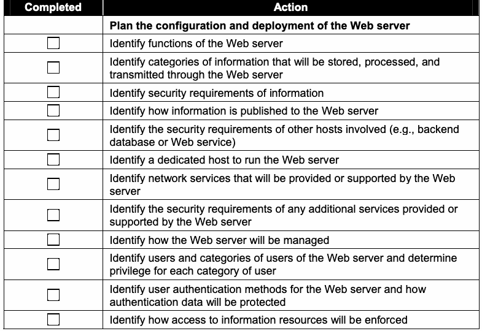
| 完了 | 対応項目 |
| Webサーバーの構成と導入を計画する | |
| Webサーバーの機能を特定する | |
| Webサーバーに保存、処理、および | |
| Webサーバーを介して伝送される情報のカテゴリを特定する | |
| 情報のセキュリティ要件を特定する | |
| 情報をWebサーバーに公開する方法を特定する | |
| 関係する他のホスト（例：バックエンド | |
| データベースまたはWebサービス）のセキュリティ要件を特定する | |
| Webサーバーを実行する専用ホストを特定する | |
| Webサーバーが提供またはサポートするネットワークサービスを | |
| 特定する | |
| Webサーバーが提供またはサポートする追加サービスのセキュリティ要件を | |
| 特定する | |
| Webサーバーの管理方法を特定する | |
| Webサーバーのユーザーとユーザーのカテゴリを特定し、各カテゴリの | |
| ユーザーに与える権限を決定する | |
| Webサーバーのユーザー認証方法と、認証データを | |
| 保護する方法を特定する | |
| 情報資源へのアクセスをどのように強制するかを特定する |
| Completed | Action |
| Identify appropriate physical security mechanisms | |
| Identify appropriate availability mechanisms | |
| Choose appropriate OS for Web server | |
| Minimal exposure to vulnerabilities | |
| Ability to restrict administrative or root level activities to authorized users | |
| only | |
| Ability to control access to data on the server | |
| Ability to disable unnecessary network services that may be built into the | |
| OS or server software | |
| Ability to control access to various forms of executable programs, such as | |
| CGI scripts and server plug-ins | |
| Ability to log appropriate server activities to detect intrusions and | |
| attempted intrusions | |
| Provision of a host-based firewall capability | |
| Availability of experienced staff to install, configure, secure, and maintain | |
| OS | |
| Choose appropriate platform for Web server | |
| General purpose OS | |
| Trusted OS | |
| Web server appliance | |
| Pre-hardened OS and Web server | |
| Virtualized platform |
原本PDFの抜粋画像
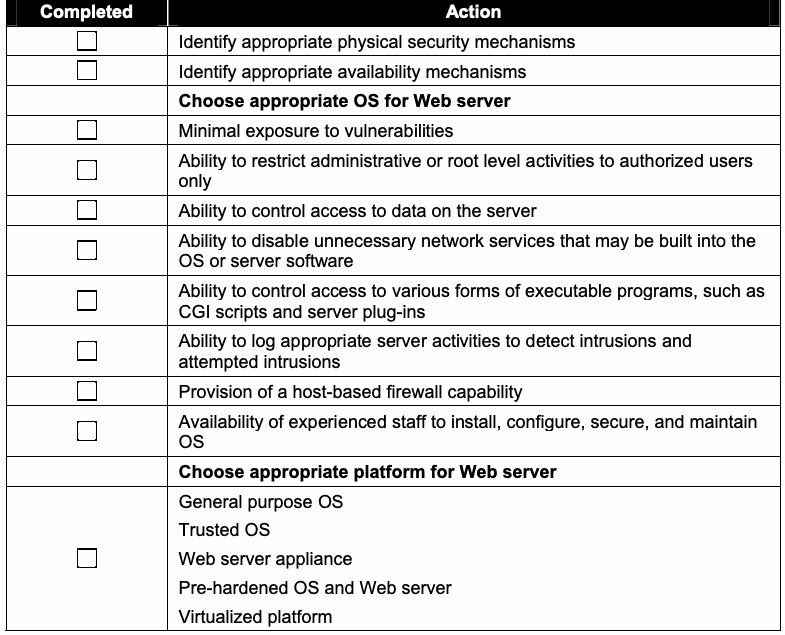
| 完了 | 対応項目 |
| 適切な物理的セキュリティ機構を特定する | |
| 適切な可用性機構を特定する | |
| Webサーバーに適切なOSを選択する | |
| 脆弱性への曝露を最小限にする | |
| 管理者権限またはrootレベルの操作を認可されたユーザー | |
| のみに制限する能力 | |
| サーバー上のデータへのアクセスを制御する能力 | |
| OSまたはサーバーソフトウェアに組み込まれている場合がある不要なネットワークサービスを無効にする | |
| 能力 | |
| CGIスクリプトやサーバープラグインなど、実行可能プログラムへのアクセスを制御する | |
| 能力 | |
| 侵入および侵入の試みを検知するため、適切なサーバー活動を記録する | |
| 能力 | |
| ホストベースのファイアウォール機能を備える | |
| OSをインストール、構成、保護、維持する経験豊富な職員の | |
| 確保 | |
| Webサーバーに適切なプラットフォームを選択する | |
| 汎用OS | |
| 信頼できるOS | |
| Webサーバーアプライアンス | |
| 堅牢化済みOSおよびWebサーバー | |
| 仮想化プラットフォーム |
4. Securing the Web Server Operating System
4. Webサーバーのオペレーティングシステムのセキュリティ保護
未レビュー訳Protecting a Web server from compromise involves hardening the underlying OS, the Web server application, and the network to prevent malicious entities from directly attacking the Web server. The first step in securing a Web server, hardening the underlying OS, is discussed at length in this section. (Securing the Web server application and the network are addressed in Sections 5 and 8, respectively.)
Webサーバーを侵害から保護するには、悪意のある主体がWebサーバーを直接攻撃できないよう、基盤となるOS、Webサーバーアプリケーション、およびネットワークを堅牢化する必要がある。Webサーバーを保護する最初の手順である基盤OSの堅牢化について、このセクションで詳しく説明する。（Webサーバーアプリケーションおよびネットワークのセキュリティ保護については、それぞれセクション5および8で扱う。）
All commonly available Web servers operate on a general-purpose OS. Many security issues can be avoided if the OSs underlying the Web servers are configured appropriately. Default hardware and software configurations are typically set by manufacturers to emphasize features, functions, and ease of use, at the expense of security. Because manufacturers are unaware of each organization’s security needs, each Web server administrator must configure new servers to reflect their organization’s security requirements and reconfigure them as those requirements change. The practices recommended here are designed to help Web server administrators configure and deploy Web servers that satisfy their organizations’ security requirements. Web server administrators managing existing Web servers should confirm that their systems address the issues discussed.
一般に入手可能なすべてのWebサーバーは汎用OS上で動作する。Webサーバーの基盤となるOSを適切に構成すれば、多くのセキュリティ上の問題を回避できる。ハードウェアおよびソフトウェアのデフォルト構成は、通常、セキュリティよりも機能、特長、使いやすさを重視するよう製造業者が設定している。製造業者は各組織のセキュリティニーズを把握していないため、各Webサーバー管理者は、新しいサーバーを組織のセキュリティ要件に合わせて必ず構成し、それらの要件が変化したときは再構成しなければならない。ここで推奨する慣行は、Webサーバー管理者が組織のセキュリティ要件を満たすWebサーバーを構成・導入できるよう支援することを目的としている。既存のWebサーバーを管理する担当者は、自分たちのシステムがここで説明する問題に対処していることを確認すべきである。
The techniques for hardening different OSs vary greatly; therefore, this section includes the generic procedures common in securing most OSs. Security configuration guides and checklists for many OSs are publicly available; these documents typically contain recommendations for settings that improve the default level of security, and they may also contain step-by-step instructions for securing systems.16 In addition, many organizations maintain their own guidelines specific to their requirements. Some automated tools also exist for hardening OSs, and their use is strongly recommended (see Appendix D).
OSごとに堅牢化の手法は大きく異なるため、このセクションでは、ほとんどのOSを保護する際に共通する一般的な手順を説明する。多くのOSについて、セキュリティ構成ガイドやチェックリストが公開されている。これらの文書には通常、デフォルトのセキュリティレベルを向上させる設定の推奨事項が含まれ、システムを保護するための段階的な手順が記載されている場合もある。16 また、多くの組織は自らの要件に固有のガイドラインを維持している。OSの堅牢化を支援する自動化ツールも存在し、その使用が強く推奨される（Appendix Dを参照）。
未レビュー訳Five basic steps are necessary to maintain basic OS security:
基本的なOSセキュリティを維持するには、次の五つの基本的な手順が必要である:
(cid:31) Planning the installation and deployment of the host OS and other components for the Web server
(cid:31) ホストOSおよびWebサーバーのその他の構成要素のインストールと導入を計画する
未レビュー訳(cid:31) Patching and updating the host OS as required
(cid:31) 必要に応じてホストOSにパッチを適用し、更新する
未レビュー訳(cid:31) Hardening and configuring the host OS to address security adequately
(cid:31) セキュリティを適切に確保するため、ホストOSを堅牢化し構成する
未レビュー訳(cid:31) Installing and configuring additional security controls, if needed
(cid:31) 必要に応じて追加のセキュリティ管理策をインストールし、構成する
未レビュー訳(cid:31) Testing the host OS to ensure that the previous four steps adequately addressed all security issues.
(cid:31) 先行する四つの手順でセキュリティ上のすべての問題に適切に対処できたことを確認するため、ホストOSをテストする。
未レビュー訳The first step is discussed in Section 3. The other steps are covered in Sections 4.1 and 4.2.
最初の手順についてはセクション3で説明する。その他の手順については、セクション4.1および4.2で扱う。
4.1 Installing and Configuring the Operating System
4.1 オペレーティングシステムのインストールと構成
This section provides an overview of the second, third, and fourth steps in the list above. The combined result of these steps should be a reasonable level of protection for the Web server’s OS.
このセクションでは、上記の一覧にある二番目、三番目、および四番目の手順の概要を示す。これらの手順を組み合わせた結果として、WebサーバーのOSに対する合理的な水準の保護が得られるはずである。
4.1.1 Patch and Upgrade Operating System
4.1.1 オペレーティングシステムへのパッチ適用とアップグレード
Once an OS is installed, applying needed patches or upgrades to correct for known vulnerabilities is essential. Any known vulnerabilities an OS has should be corrected before using it to host a Web server or otherwise exposing it to untrusted users. To adequately detect and correct these vulnerabilities, Web server administrators should do the following:
OSをインストールした後、既知の脆弱性を修正するために必要なパッチまたはアップグレードを適用することが不可欠である。OSに既知の脆弱性がある場合、Webサーバーのホストとして使用する前、または信頼されていないユーザーに公開する前に、是正すべきである。これらの脆弱性を適切に検出し、是正するため、Webサーバー管理者は次のことを行うべきである:
未レビュー訳(cid:31) Create, document, and implement a patching process.17
(cid:31) パッチ適用プロセスを作成し、文書化して、実施する。17
未レビュー訳(cid:31) Identify vulnerabilities and applicable patches.18
(cid:31) 脆弱性と該当するパッチを特定する。18
未レビュー訳(cid:31) Mitigate vulnerabilities temporarily if needed and if feasible (until patches are available, tested, and installed).
(cid:31) 必要であり、かつ実行可能な場合は、パッチが入手可能になり、テストされ、インストールされるまで、脆弱性を一時的に緩和する。
未レビュー訳(cid:31) Install permanent fixes (commonly called patches, hotfixes, service packs, or updates).
(cid:31) 恒久的な修正（一般にパッチ、ホットフィックス、サービスパック、または更新と呼ばれる）をインストールする。
未レビュー訳Administrators should ensure that Web servers, particularly new ones, are adequately protected during the patching process. For example, a Web server that is not fully patched or not configured securely could be compromised by threats if it is publicly accessible while it is being patched. When preparing new Web servers for deployment, administrators should do either of the following:
管理者は、パッチ適用の過程でWebサーバー、特に新しいWebサーバーが十分に保護されていることを確認すべきである。例えば、パッチが完全に適用されていない、または安全に構成されていないWebサーバーが、パッチ適用中に一般公開されていれば、脅威によって侵害される可能性がある。新しいWebサーバーを導入に向けて準備する際、管理者は次のいずれかを行うべきである:
(cid:31) Keep the servers disconnected from networks or connect them only to an isolated “build” network until all patches have been transferred to the servers through out-of-band means (e.g., CDs) and installed, and the other configuration steps listed in Section 4.1 have been performed.
(cid:31) すべてのパッチをアウトオブバンド方式（例：CD）でサーバーに転送してインストールし、セクション4.1に記載されたその他の構成手順を実施するまで、サーバーをネットワークから切断しておくか、隔離された「ビルド」ネットワークにのみ接続する。
未レビュー訳(cid:31) Place the servers on a virtual local area network (VLAN)19 or other network segment that severely restricts what actions the hosts on it can perform and what communications can reach the hosts—only allowing those events that are necessary for patching and configuring the hosts. Do not transfer the hosts to regular network segments until all the configuration steps listed in Section 4.1 have been performed.
(cid:31) サーバーを仮想ローカルエリアネットワーク (VLAN)19、またはホストが実行できる操作とホストに到達できる通信を厳しく制限する他のネットワークセグメントに配置する。ホストのパッチ適用と構成に必要な事象のみを許可する。セクション4.1に記載されたすべての構成手順が完了するまで、ホストを通常のネットワークセグメントに移してはならない。
未レビュー訳Administrators should generally not apply patches to Web servers without first testing them on another identically configured system because patches can inadvertently cause unexpected problems with proper system operation. Although administrators can configure Web servers to download patches automatically, the servers should not be configured to install them automatically so that they can first be tested.
管理者は一般に、別の同一構成のシステムで事前にテストせずにWebサーバーへパッチを適用すべきではない。パッチによってシステムの正常な動作に予期しない問題が誤って生じる可能性があるためである。管理者はWebサーバーがパッチを自動ダウンロードするよう構成できるが、先にテストできるよう、パッチを自動インストールする構成にすべきではない。
4.1.2 Remove or Disable Unnecessary Services and Applications
4.1.2 不要なサービスおよびアプリケーションの削除または無効化
Ideally, a Web server should be on a dedicated, single-purpose host. When configuring the OS, disable everything except that which is expressly permitted—that is, disable all services and applications, re-enable only those required by the Web server, and then remove the unneeded services and applications. If possible, install the minimal OS configuration and then add or remove services and applications as needed. Choose the “minimal installation” option, if available, to minimize the effort required in removing unnecessary services. Furthermore, many uninstall scripts or programs are far from perfect in completely removing all components of a service; therefore, it is always better not to install unnecessary services. Some common types of services and applications that should usually be disabled if not required include the following:
理想的には、Webサーバーは専用の単一目的ホスト上に置くべきである。OSを構成する際は、明示的に許可されたもの以外をすべて無効にする。つまり、すべてのサービスとアプリケーションを無効にし、Webサーバーに必要なものだけを再び有効にしてから、不要なサービスとアプリケーションを削除する。可能であれば、最小限のOS構成をインストールし、必要に応じてサービスとアプリケーションを追加または削除する。不要なサービスを削除する労力を最小限にするため、利用可能な場合は「最小インストール」オプションを選ぶ。さらに、多くのアンインストールスクリプトやプログラムはサービスのすべての構成要素を完全に削除するには不十分である。そのため、不要なサービスは最初からインストールしない方が常に望ましい。必要でない場合に通常無効化すべきサービスおよびアプリケーションの一般的な種類を以下に示す:
未レビュー訳(cid:31) File and printer sharing services (e.g., Windows Network Basic Input/Output System [NetBIOS] file and printer sharing, Network File System [NFS], File Transfer Protocol [FTP])
(cid:31) ファイルおよびプリンター共有サービス（例：Windows Network Basic Input/Output System [NetBIOS]のファイルおよびプリンター共有、Network File System [NFS]、File Transfer Protocol [FTP]）
未レビュー訳(cid:31) Wireless networking services
(cid:31) 無線ネットワークサービス
未レビュー訳(cid:31) Remote control and remote access programs, particularly those that do not strongly encrypt their communications (e.g., Telnet)20
(cid:31) リモート制御およびリモートアクセスプログラム、特に通信を強力に暗号化しないもの（例：Telnet）20
未レビュー訳(cid:31) Directory services (e.g., Lightweight Directory Access Protocol [LDAP], Kerberos, Network Information System [NIS])
(cid:31) ディレクトリサービス（例：Lightweight Directory Access Protocol [LDAP]、Kerberos、Network Information System [NIS]）
未レビュー訳(cid:31) Email services (e.g., Simple Mail Transfer Protocol [SMTP])
(cid:31) 電子メールサービス（例：Simple Mail Transfer Protocol [SMTP]）
未レビュー訳(cid:31) Language compilers and libraries
(cid:31) 言語コンパイラーおよびライブラリー
未レビュー訳(cid:31) System development tools
(cid:31) システム開発ツール
未レビュー訳(cid:31) System and network management tools and utilities, including Simple Network Management Protocol (SNMP).
(cid:31) Simple Network Management Protocol (SNMP)など、システムおよびネットワークの管理ツールとユーティリティ
未レビュー訳Removing unnecessary services and applications is preferable to simply disabling them through configuration settings because attacks that attempt to alter settings and activate a disabled service cannot succeed when the functional components are completely removed. Disabled services could also be enabled inadvertently through human error.
設定でサービスを無効にするだけでなく、不要なサービスやアプリケーションを削除する方が望ましい。機能構成要素が完全に削除されていれば、設定を変更して無効化されたサービスを有効にしようとする攻撃は成功しないからである。また、人為的な誤りによって無効化されたサービスが誤って有効化される可能性もある。
Eliminating or disabling unnecessary services enhances the security of a Web server in several ways [Alle00]:
不要なサービスを排除または無効化すると、次のような方法でWebサーバーのセキュリティが向上する [Alle00]:
(cid:31) Other services cannot be compromised and used to attack the host or impair the services of the Web server. Each service added to a host increases the risk of compromise for that host because each service is another possible avenue of access for an attacker. Less is more secure in this case.
(cid:31) 他のサービスが侵害されてホストへの攻撃に利用されたり、Webサーバーのサービスを妨害したりすることがなくなる。ホストにサービスを追加するたび、そのサービスが攻撃者のアクセス経路となり得るため、ホストが侵害されるリスクが高まる。この場合は、少ないほど安全である。
未レビュー訳(cid:31) Other services may have defects or may be incompatible with the Web server itself. By disabling or removing them, they should not affect the Web server and should potentially improve its availability.
(cid:31) 他のサービスに欠陥があったり、Webサーバー自体と互換性がなかったりする可能性がある。それらを無効化または削除すれば、Webサーバーに影響しなくなるはずであり、可用性も向上する可能性がある。
未レビュー訳(cid:31) The host can be configured to better suit the requirements of the particular service. Different services might require different hardware and software configurations, which could lead to unnecessary vulnerabilities or negatively affect performance.
(cid:31) ホストを特定のサービスの要件により適合するよう構成できる。サービスごとに異なるハードウェアやソフトウェアの構成が必要となる場合があり、それによって不要な脆弱性が生じたり、性能に悪影響が及んだりする可能性がある。
未レビュー訳(cid:31) By reducing services, the number of logs and log entries is reduced; therefore, detecting unexpected behavior becomes easier (see Section 9).
(cid:31) サービスを減らすとログおよびログエントリーの数も減るため、予期しない動作を検出しやすくなる（セクション9を参照）。
未レビュー訳Organizations should determine the services to be enabled on a Web server. Services in addition to the Web server service that might be installed include database access protocols, file transfer protocols, and remote administration services. These services may be required in certain instances, but they may increase the risks to the server. Whether the risks outweigh the benefits is a decision for each organization to make.
組織は、Webサーバー上で有効にするサービスを決定すべきである。Webサーバーサービス以外にインストールされる可能性があるサービスには、データベースアクセスプロトコル、ファイル転送プロトコル、およびリモート管理サービスが含まれる。これらのサービスが必要となる場合もあるが、サーバーへのリスクを高める可能性がある。リスクが利点を上回るかどうかは、各組織が判断する。
未レビュー訳4.1.3 Configure Operating System User Authentication
4.1.3 オペレーティングシステムのユーザー認証を構成する
For Web servers, the authorized users who can configure the OS are limited to a small number of designated Web server administrators and Webmasters. The users who can access the public Web server, however, may range from unrestricted to restricted subsets of the Internet community. To enforce policy restrictions, if required, the Web server administrator should configure the OS to authenticate a prospective user by requiring proof that the user is authorized for such access. Even though a Web server may allow unauthenticated access to most of its services, administrative and other types of specialized access should be limited to specific individuals and groups.
WebサーバーのOSを構成できる認可ユーザーは、指定された少数のWebサーバー管理者およびWebマスターに限られる。一方、公開Webサーバーにアクセスできるユーザーは、インターネットコミュニティ全体に開放されている場合から、その一部に制限されている場合までさまざまである。ポリシー上の制限を適用する必要がある場合、Webサーバー管理者は、アクセス権があることの証明を求めて利用希望者を認証するようOSを構成すべきである。Webサーバーが大半のサービスへの未認証アクセスを許可している場合であっても、管理アクセスやその他の特別なアクセスは、特定の個人およびグループに制限すべきである。
Enabling authentication by the host computer involves configuring parts of the OS, firmware, and applications on the server, such as the software that implements a network service. Although not normally the case for public Web servers, in special situations, such as high-value/high-risk sites, organizations may also use authentication hardware, such as tokens or one-time password devices. Use of authentication mechanisms where authentication information is reusable (e.g., passwords) and transmitted in the clear over a network is strongly discouraged because the information can be intercepted and used by an attacker to masquerade as an authorized user.
ホストコンピューターによる認証を有効にするには、ネットワークサービスを実装するソフトウェアなど、サーバー上のOS、ファームウェア、およびアプリケーションの一部を構成する必要がある。公開Webサーバーでは通常該当しないが、高価値・高リスクのサイトなど特別な状況では、組織がトークンやワンタイムパスワード装置などの認証用ハードウェアを使用する場合もある。再利用可能な認証情報（例：パスワード）を使用し、それをネットワーク上で平文のまま送信する認証メカニズムは、その情報が傍受され、攻撃者が認可ユーザーになりすますために使われる可能性があるため、使用を強く推奨しない。
To ensure the appropriate user authentication is in place, take the following steps [Alle00]:
適切なユーザー認証を確実に導入するため、次の手順を実施する [Alle00]:
(cid:31) Remove or Disable Unneeded Default Accounts and Groups—The default configuration of the OS often includes guest accounts (with and without passwords), administrator or root level accounts, and accounts associated with local and network services. The names and passwords for those accounts are well known. Remove or disable unnecessary accounts to eliminate their use by attackers, including guest accounts on computers containing sensitive information. If there is no requirement to retain a guest account or group, severely restrict access to it and change the password in accordance with the organizational password policy.
(cid:31) 不要なデフォルトアカウントおよびグループを削除または無効化する—OSのデフォルト構成には、ゲストアカウント（パスワードあり・なしの両方）、管理者またはrootレベルのアカウント、ローカルサービスおよびネットワークサービスに関連付けられたアカウントが含まれることが多い。これらのアカウント名とパスワードは広く知られている。機密情報を含むコンピューターのゲストアカウントを含め、攻撃者に利用されないよう不要なアカウントを削除または無効化する。ゲストアカウントまたはグループを保持する必要がない場合は、そのアクセスを厳しく制限し、組織のパスワードポリシーに従ってパスワードを変更する。
未レビュー訳For default accounts that need to be retained, change the names (where possible and particularly for administrator or root level accounts) and passwords to be consistent with the organizational password policy. Default account names and passwords are commonly known in the attacker community.
保持する必要があるデフォルトアカウントについては、名前（可能な場合、特に管理者またはrootレベルのアカウント）とパスワードを変更し、組織のパスワードポリシーに適合させる。デフォルトアカウントの名前とパスワードは、攻撃者の間で広く知られている。
(cid:31) Disable Non-Interactive Accounts—Disable accounts (and the associated passwords) that need to exist but do not require an interactive login. For Unix systems, disable the login shell or provide a login shell with NULL functionality (e.g., /bin/false).
(cid:31) 非対話型アカウントを無効化する—存在する必要はあるが対話型ログインを必要としないアカウント（および関連するパスワード）を無効化する。Unixシステムでは、ログインシェルを無効にするか、機能がNULLのログインシェルを指定する（例：/bin/false）。
未レビュー訳(cid:31) Create the User Groups—Assign users to the appropriate groups. Then assign rights to the groups, as documented in the deployment plan. This approach is preferable to assigning rights to individual users, which becomes unwieldy with large numbers of users.
(cid:31) ユーザーグループを作成する—ユーザーを適切なグループに割り当てる。次に、導入計画に記載されたとおりに、グループに権限を割り当てる。この方法は、ユーザー数が多いと煩雑になる個々のユーザーへの権限割り当てより望ましい。
未レビュー訳(cid:31) Create the User Accounts—The deployment plan identifies who will be authorized to use each computer and its services. Create only the necessary accounts. Permit the use of shared accounts only when no viable alternatives exist.
(cid:31) ユーザーアカウントを作成する—導入計画では、各コンピューターとそのサービスの使用を誰に認可するかを特定する。必要なアカウントのみを作成する。実用的な代替手段がない場合に限り、共有アカウントの使用を許可する。
未レビュー訳(cid:31) Check the Organization’s Password Policy—Set account passwords appropriately. This policy should address the following:
(cid:31) 組織のパスワードポリシーを確認する—アカウントのパスワードを適切に設定する。このポリシーでは、次の事項を扱うべきである:
未レビュー訳(cid:131) Length—a minimum length for passwords. Specify a minimum length of at least eight characters.
(cid:131) 長さ—パスワードに必要な最小の長さ。少なくとも八文字の最小長を指定する。
未レビュー訳(cid:131) Complexity—the mix of characters required. Require passwords to contain both uppercase and lowercase letters and at least one nonalphabetic character, and to not be a “dictionary” word.
(cid:131) 複雑さ—必要な文字の組み合わせ。パスワードには大文字と小文字の両方、および少なくとも一つの英字以外の文字を含め、「辞書に載っている」単語にしないよう要求する。
未レビュー訳(cid:131) Aging—how long a password may remain unchanged. Require users to change their passwords periodically. Administrator or root level passwords should be changed every 30 to 120 days. The period for user-level passwords should be determined by the enforced length and complexity of the password combined with the sensitivity of the information protected. When considering the appropriate aging duration, the exposure level of user passwords should also be taken into account. Consideration should also be given to enforcing a minimum aging duration to prevent users from rapidly cycling through password changes to clear out their password history and bypass reuse restrictions.
(cid:131) 有効期間—パスワードを変更せずに使用できる期間。ユーザーに定期的なパスワード変更を要求する。管理者またはrootレベルのパスワードは30日から120日ごとに変更すべきである。ユーザーレベルのパスワードの期間は、適用されるパスワードの長さと複雑さ、および保護対象情報の機密性を組み合わせて判断すべきである。適切な有効期間を検討する際は、ユーザーパスワードの漏えいリスクも考慮すべきである。また、ユーザーがパスワード変更を急速に繰り返して履歴を消し、再利用制限を回避することを防ぐため、最小有効期間を適用することも検討すべきである。
未レビュー訳(cid:131) Reuse—whether a password may be reused. Some users try to defeat a password aging requirement by changing the password to one they have used previously. If possible, ensure that users cannot change their passwords by merely appending characters to the beginning or end of their original passwords (e.g., original password was “mysecret” and is changed to “1mysecret” or “mysecret1”).
(cid:131) 再利用—パスワードの再利用を許可するかどうか。一部のユーザーは、以前に使ったパスワードに変更することで、パスワード有効期間の要件を回避しようとする。可能であれば、元のパスワードの先頭または末尾に文字を追加するだけでパスワードを変更できないようにする（例：元のパスワードが「mysecret」で、それを「1mysecret」または「mysecret1」に変更する）。
未レビュー訳(cid:131) Authority—who is allowed to change or reset passwords and what sort of proof is required before initiating any changes.
(cid:131) 権限—誰がパスワードを変更またはリセットできるか、また、変更を開始する前にどのような証明が必要か。
未レビュー訳(cid:131) Password Security—how passwords should be secured, such as not storing passwords unencrypted on the mail server, and requiring administrators to use different passwords for their email administration accounts than their other administration accounts.
(cid:131) パスワードのセキュリティ—パスワードの保護方法。例えば、メールサーバーに暗号化されていないパスワードを保存しないことや、管理者に、メール管理用アカウントと他の管理用アカウントで異なるパスワードを使用させること。
未レビュー訳(cid:31) Configure Computers to Prevent Password Guessing—It is relatively easy for an unauthorized user to try to gain access to a computer by using automated software tools that attempt all passwords. If the OS provides the capability, configure it to increase the period between login attempts with each unsuccessful attempt. If that is not possible, the alternative is to deny login after a limited number of failed attempts (e.g., three). Typically, the account is “locked out” for a period of time (such as 30 minutes) or until a user with appropriate authority reactivates it.
(cid:31) パスワード推測を防ぐようコンピューターを構成する—自動化ツールであらゆるパスワードを試すことにより、認可されていないユーザーがコンピューターへのアクセスを試みるのは比較的容易である。OSがその機能を提供する場合は、ログインに失敗するたびに、次のログイン試行までの時間が長くなるよう構成する。それができない場合は、失敗回数を制限した後（例：三回）にログインを拒否する。通常、アカウントは一定時間（例えば30分間）、または適切な権限を持つユーザーが再有効化するまでロックされる。
未レビュー訳The choice to deny login is another situation that requires the Web server administrator to make a decision that balances security and convenience. Implementing this recommendation can help prevent some kinds of attacks, but it can also allow an attacker to use failed login attempts to prevent user access, resulting in a DoS condition. The risk of DoS from account lockout is much greater if an attacker knows or can surmise a pattern to your naming convention that allows them to guess account names.
ログインを拒否するかどうかの選択も、Webサーバー管理者がセキュリティと利便性のバランスを判断しなければならない状況の一つである。この推奨事項を実施すると、一部の攻撃を防止できる一方、攻撃者がログイン失敗を利用してユーザーのアクセスを妨げ、DoS状態を引き起こす可能性もある。アカウントロックアウトによるDoSのリスクは、攻撃者が、アカウント名を推測できる命名規則のパターンを知っている、または推測できる場合、はるかに大きくなる。
Failed network login attempts should not prevent an authorized user or administrator from logging in at the console. Note that all failed login attempts, whether via the network or console, should be logged. If remote administration is not to be implemented (see Section 9.5), disable the ability for the administrator or root level accounts to log in from the network.
ネットワーク経由のログイン失敗によって、認可されたユーザーまたは管理者がコンソールからログインできなくなるべきではない。ネットワーク経由かコンソール経由かを問わず、すべてのログイン失敗を記録すべきである。リモート管理を実施しない場合（セクション9.5を参照）、管理者またはrootレベルのアカウントがネットワークからログインできる機能を無効にする。
(cid:31) Install and Configure Other Security Mechanisms to Strengthen Authentication—If the information on the Web server requires it, consider using other authentication mechanisms such as biometrics, smart cards, client/server certificates, or one-time password systems. They can be more expensive and difficult to implement, but they may be justified in some circumstances. When such authentication mechanisms and devices are used, the organization’s policy should be changed accordingly, if necessary. Some organizational policies may already require the use of strong authentication mechanisms.
(cid:31) 認証を強化する他のセキュリティメカニズムをインストールし構成する—Webサーバー上の情報の要件に応じて、生体認証、スマートカード、クライアント／サーバー証明書、またはワンタイムパスワードシステムなど、他の認証メカニズムの使用を検討する。実装に費用と手間がかかる場合もあるが、状況によっては正当化できる。こうした認証メカニズムおよび装置を使用する場合、必要に応じて組織のポリシーを変更すべきである。組織のポリシーによっては、強力な認証メカニズムの使用がすでに求められている場合もある。
未レビュー訳As mentioned earlier, attackers using network sniffers can easily capture passwords passed across a network in clear text. However, passwords are economical and appropriate if properly protected while in transit. Organizations should implement authentication and encryption technologies, such as Secure Sockets Layer (SSL)/Transport Layer Security (TLS), Secure Shell (SSH), or virtual private networking (VPN), to protect passwords during transmission. Requiring user-friendly server authentication to be used with encryption technologies reduces the likelihood of successful man-in-the-middle and spoofing attacks.
前述のとおり、ネットワークスニファーを使用する攻撃者は、ネットワーク上を平文で送信されるパスワードを容易に取得できる。しかし、適切に保護されているのであれば、パスワードは費用対効果に優れた適切な認証手段である。組織は、送信中のパスワードを保護するため、Secure Sockets Layer (SSL)/Transport Layer Security (TLS)、Secure Shell (SSH)、または仮想プライベートネットワーク (VPN)などの認証・暗号化技術を実装すべきである。暗号化技術と併せてユーザーフレンドリーなサーバー認証を必須にすることで、中間者攻撃およびなりすまし攻撃が成功する可能性を低減できる。
4.1.4 Configure Resource Controls Appropriately
4.1.4 リソース制御を適切に構成する
All commonly used modern server OSs provide the capability to specify access privileges individually for files, directories, devices, and other computational resources. By carefully setting access controls and denying personnel unauthorized access, the Web server administrator can reduce intentional and unintentional security breaches. For example, denying read access to files and directories helps to protect confidentiality of information, and denying unnecessary write (modify) access can help maintain the integrity of information. Limiting the execution privilege of most system-related tools to authorized system administrators can prevent users from making configuration changes that could reduce security. It also can restrict the attacker’s ability to use those tools to attack the system or other systems on the network.
一般的に使用される最新のサーバーOSは、ファイル、ディレクトリ、デバイス、およびその他の計算資源ごとにアクセス権限を指定する機能を備えている。アクセス制御を慎重に設定し、職員による認可されていないアクセスを拒否することで、Webサーバー管理者は意図的および非意図的なセキュリティ侵害を減らせる。例えば、ファイルおよびディレクトリへの読み取りアクセスを拒否すると情報の機密性を保護でき、不要な書き込み（変更）アクセスを拒否すると情報の完全性を維持できる。システム関連ツールの大半について、その実行権限を認可されたシステム管理者に限定すれば、セキュリティを低下させる可能性のある構成変更をユーザーが行うのを防止できる。また、攻撃者がそれらのツールを用いて当該システムまたはネットワーク上の他のシステムを攻撃する能力も制限できる。
4.1.5 Install and Configure Additional Security Controls
4.1.5 追加のセキュリティ管理策をインストールし構成する
OSs often do not include all of the security controls necessary to secure the OS, services, and applications adequately. In such cases, administrators need to select, install, and configure additional software to provide the missing controls. Commonly needed controls include the following:
OSには、OS、サービス、およびアプリケーションを適切に保護するために必要なセキュリティ管理策がすべて含まれているとは限らない。そのような場合、管理者は不足している管理策を提供する追加ソフトウェアを選択、インストール、および構成する必要がある。一般に必要となる管理策には、次のものが含まれる:
(cid:31) Anti-malware software, such as antivirus software, anti-spyware software, and rootkit detectors, to protect the local OS from malware and to detect and eradicate any infections that occur.21 Examples of when anti-malware software would be helpful include a Web administrator bringing infected media to the Web server and a network service worm contacting the server and infecting it.
(cid:31) ウイルス対策ソフトウェア、スパイウェア対策ソフトウェア、およびルートキット検出ツールなどのマルウェア対策ソフトウェア—ローカルOSをマルウェアから保護し、発生した感染を検出・駆除する。21 マルウェア対策ソフトウェアが役立つ例として、Web管理者が感染したメディアをWebサーバーに持ち込む場合や、ネットワークサービスのワームがサーバーに接続して感染させる場合がある。
未レビュー訳(cid:31) Host-based intrusion detection and prevention software, to detect attacks performed against the Web server, including DoS attacks. Section 7.2.2 contains additional information on host-based intrusion detection and prevention software.
(cid:31) ホストベースの侵入検知・防止ソフトウェア—DoS攻撃を含め、Webサーバーに対する攻撃を検出する。ホストベースの侵入検知・防止ソフトウェアの詳細は、セクション7.2.2に記載されている。
未レビュー訳(cid:31) Host-based firewalls, to protect the server from unauthorized access.22
(cid:31) ホストベースのファイアウォール—認可されていないアクセスからサーバーを保護する。22
未レビュー訳(cid:31) Patch management software to ensure that vulnerabilities are addressed promptly. Patch management software can be used only to apply patches or also to identify new vulnerabilities in the Web server’s OSs, services, and applications.
(cid:31) パッチ管理ソフトウェア—脆弱性に速やかに対処するために使用する。パッチ管理ソフトウェアは、パッチの適用だけに使用することも、WebサーバーのOS、サービス、およびアプリケーションにおける新たな脆弱性の特定にも使用することもできる。
未レビュー訳Some Web server administrators also install one or more forms of host-based intrusion detection or intrusion prevention software on their servers. For example, file integrity checking software can identify changes to critical system files.
Webサーバー管理者の中には、ホストベースの侵入検知または侵入防止ソフトウェアを一つ以上サーバーにインストールする者もいる。例えば、ファイル完全性確認ソフトウェアは、重要なシステムファイルへの変更を特定できる。
When planning security controls, Web server administrators should consider the resources that the security controls will consume. A server’s performance could degrade if it does not have enough memory and processing capacity for the controls.
セキュリティ管理策を計画する際、Webサーバー管理者は、管理策が消費するリソースを考慮すべきである。管理策を動かすためのメモリおよび処理能力が不足すると、サーバーの性能が低下する可能性がある。
4.2 Security Testing the Operating System
4.2 オペレーティングシステムのセキュリティテスト
Periodic security testing of the OS is a vital way to identify vulnerabilities and to ensure that the existing security precautions are effective. Common methods for testing OSs include vulnerability scanning and penetration testing. Vulnerability scanning usually entails using an automated vulnerability scanner to scan a host or group of hosts on a network for application, network, and OS vulnerabilities. Penetration testing is a testing process designed to compromise a network using the tools and methodologies of an attacker. It involves iteratively identifying and exploiting the weakest areas of the network to gain access to the remainder of the network, eventually compromising the overall security of the network. Vulnerability scanning should be conducted periodically, at least weekly to monthly, and penetration testing should be conducted at least annually. Because both of these testing techniques are also applicable to testing the Web server application, they are discussed in detail in Section 9.4.23
OSの定期的なセキュリティテストは、脆弱性を特定し、既存のセキュリティ対策が有効であることを確認する重要な方法である。OSのテストには、脆弱性スキャンおよび侵入テストが一般に用いられる。脆弱性スキャンでは通常、自動脆弱性スキャナーを使用して、ネットワーク上のホストまたはホスト群をスキャンし、アプリケーション、ネットワーク、およびOSの脆弱性を調べる。侵入テストは、攻撃者のツールと手法を用いてネットワークへの侵入を試みるテストプロセスである。ネットワークの最も弱い箇所を反復的に特定・悪用してネットワークの他の部分へのアクセスを獲得し、最終的にはネットワーク全体のセキュリティを侵害する。脆弱性スキャンは定期的に、週次から月次の頻度で実施すべきであり、侵入テストは少なくとも年次で実施すべきである。これらのテスト技法はWebサーバーアプリケーションのテストにも適用できるため、セクション9.4で詳しく説明する。23
未レビュー訳Testing generally should not be performed on the production Web server itself. As mentioned in Section 4.1.1, testing for patches and changes to the system should be performed on a separate system; this same testing environment should be used to perform security testing of the Web server.
一般に、本番Webサーバー自体でテストを実施すべきではない。セクション4.1.1で述べたとおり、パッチおよびシステム変更のテストは別のシステムで実施すべきである。この同じテスト環境を、Webサーバーのセキュリティテストにも使用すべきである。
4.3 Checklist for Securing the Web Server Operating System
4.3 Webサーバーのオペレーティングシステムを保護するためのチェックリスト
| Completed | Action |
| Patch and upgrade OS | |
| Create, document, and implement a patching process | |
| Keep the servers disconnected from networks or on an isolated network that | |
| severely restricts communications until all patches have been installed | |
| Identify and install all necessary patches and upgrades to the OS | |
| Identify and install all necessary patches and upgrades to applications and | |
| services included with the OS | |
| Identify and mitigate any unpatched vulnerabilities | |
| Remove or disable unnecessary services and applications | |
| Disable or remove unnecessary services and applications | |
| Configure OS user authentication | |
| Remove or disable unneeded default accounts and groups | |
| Disable non-interactive accounts | |
| Create the user groups for the particular computer | |
| Create the user accounts for the particular computer | |
| Check the organization’s password policy and set account passwords | |
| appropriately (e.g., length, complexity) |
原本PDFの抜粋画像
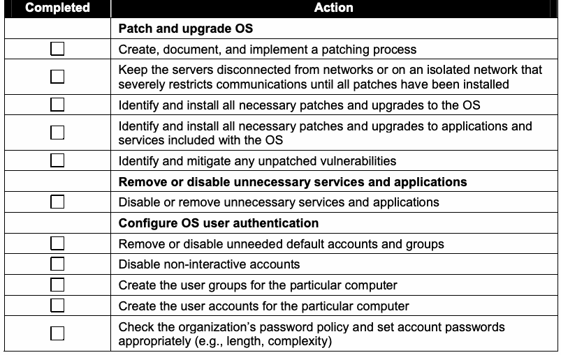
| 完了 | 対応項目 |
| OSにパッチを適用し、アップグレードする | |
| パッチ適用プロセスを作成し、文書化して、実施する | |
| すべてのパッチがインストールされるまで、サーバーをネットワークから切断するか、通信を | |
| 厳しく制限する隔離ネットワークに置く | |
| OSに必要なすべてのパッチおよびアップグレードを特定し、インストールする | |
| OSに含まれるアプリケーションおよび | |
| サービスに必要なすべてのパッチおよびアップグレードを特定し、インストールする | |
| パッチ未適用の脆弱性を特定し、緩和する | |
| 不要なサービスおよびアプリケーションを削除または無効化する | |
| 不要なサービスおよびアプリケーションを無効化または削除する | |
| OSのユーザー認証を構成する | |
| 不要なデフォルトアカウントおよびグループを削除または無効化する | |
| 非対話型アカウントを無効化する | |
| 対象コンピューター用のユーザーグループを作成する | |
| 対象コンピューター用のユーザーアカウントを作成する | |
| 組織のパスワードポリシーを確認し、アカウントのパスワードを | |
| 適切に設定する（例：長さ、複雑さ） |
| Completed | Action |
| Prevent password guessing (e.g., increase the period between attempts, | |
| deny login after a defined number of failed attempts) | |
| Install and configure other security mechanisms to strengthen authentication | |
| Configure resource controls appropriately | |
| Deny read access to unnecessary files and directories | |
| Deny write access to unnecessary files and directories | |
| Limit the execution privilege of system tools to system administrators | |
| Install and configure additional security controls | |
| Select, install, and configure additional software to provide needed controls | |
| not included in the OS, such as antivirus software, antispyware software, | |
| rootkit detectors, host-based intrusion detection and prevention software, | |
| host-based firewalls, and patch management software | |
| Test the security of the OS | |
| Identify a separate identical system | |
| Test OS after initial install to determine vulnerabilities | |
| Test OS periodically (e.g., quarterly) to determine new vulnerabilities |
原本PDFの抜粋画像
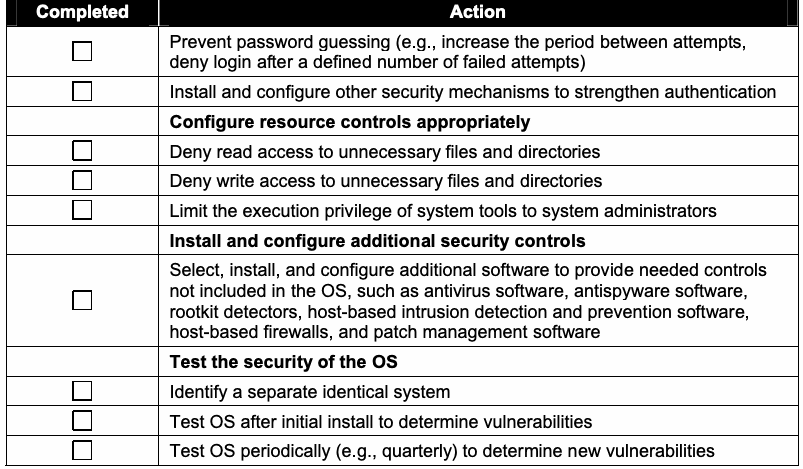
| 完了 | 対応項目 |
| パスワード推測を防ぐ（例：試行間隔を延ばす、 | |
| 定められた回数のログイン失敗後にログインを拒否する） | |
| 認証を強化する他のセキュリティメカニズムをインストールし、構成する | |
| リソース制御を適切に構成する | |
| 不要なファイルおよびディレクトリへの読み取りアクセスを拒否する | |
| 不要なファイルおよびディレクトリへの書き込みアクセスを拒否する | |
| システムツールの実行権限をシステム管理者に限定する | |
| 追加のセキュリティ管理策をインストールし、構成する | |
| 不足している管理策を提供するため、追加ソフトウェアを選択、インストール、および構成する | |
| OSに含まれないものとして、ウイルス対策ソフトウェア、スパイウェア対策ソフトウェア、 | |
| ルートキット検出ツール、ホストベースの侵入検知・防止ソフトウェア、 | |
| ホストベースのファイアウォール、およびパッチ管理ソフトウェアなどがある | |
| OSのセキュリティをテストする | |
| 同一構成の別システムを特定する | |
| 初回インストール後にOSをテストし、脆弱性を特定する | |
| OSを定期的にテストし（例：四半期ごと）、新たな脆弱性を特定する |
5. Securing the Web Server
5. Webサーバーのセキュリティ保護
未レビュー訳Once the OS has been installed and secured, installing the chosen Web server software can begin. Before starting this process, read the Web server manufacturer’s documentation carefully and understand the various options available during the installation process. Also, be sure to visit the manufacturer’s Web site or a vulnerability database Web site, such as the National Vulnerability Database (NVD),24 to determine whether there are known vulnerabilities and related patches available that should be installed or configured as part of the setup process. Only after these preliminary steps are accomplished should the installation be started. Note that this section discusses only generic installation and configuration procedures; specific directions for particular Web servers are available from Web server manufacturers and from security checklist repositories.25
OSをインストールして保護した後、選定したWebサーバーソフトウェアのインストールを開始できる。この作業を始める前に、Webサーバー製造業者の文書を注意深く読み、インストール時に利用できるさまざまなオプションを理解する。また、製造業者のWebサイト、またはNational Vulnerability Database (NVD)24などの脆弱性データベースのWebサイトを確認し、既知の脆弱性と、セットアップ時にインストールまたは構成すべき関連パッチがあるかを調べる。これらの事前手順を完了してから、インストールを開始すべきである。このセクションでは一般的なインストールおよび構成手順のみを扱う点に注意する。特定のWebサーバー向けの具体的な手順は、Webサーバー製造業者およびセキュリティチェックリストのリポジトリから入手できる。25
未レビュー訳A partially configured and/or patched server should not be exposed to external networks (e.g., the Internet) or external users. In addition, internal network access should be as limited as possible until all software is installed, patched, and configured securely. Insecure Web servers can be compromised in a matter of minutes after being placed on the Internet. While it is ideal to fully harden the platform before placing it on the network, it is not always feasible. For example, some application development tool combinations cannot be installed, configured, and tested on top of a pre-hardened OS and Web server configuration. In such situations, stepwise or incremental hardening is a viable option to consider, with full validation of complete hardening occurring at production deployment.
一部のみ構成またはパッチ適用されたサーバーを、外部ネットワーク（例：インターネット）または外部ユーザーに公開すべきではない。また、すべてのソフトウェアがインストールされ、パッチが適用され、安全に構成されるまで、内部ネットワークからのアクセスも可能な限り制限すべきである。安全でないWebサーバーは、インターネットに接続されてから数分で侵害される可能性がある。ネットワークに接続する前にプラットフォームを完全に堅牢化するのが理想だが、常に実行可能とは限らない。例えば、一部のアプリケーション開発ツールの組み合わせは、堅牢化済みOSおよびWebサーバー構成の上にインストール、構成、テストできない。そのような場合は、段階的な堅牢化が検討可能な選択肢となり、本番環境への導入時に堅牢化全体を完全に検証する。
5.1 Securely Installing the Web Server
5.1 Webサーバーを安全にインストールする
In many respects, the secure installation and configuration of the Web server application mirrors the OS process discussed in Section 4. The overarching principle, as before, is to install only the services required for the Web server and to eliminate any known vulnerabilities through patches or upgrades. Any unnecessary applications, services, or scripts that are installed should be removed immediately once the installation process is complete. During the installation of the Web server, the following steps should be performed:
多くの点で、Webサーバーアプリケーションの安全なインストールおよび構成は、セクション4で説明したOSの手順と同様である。基本原則も同じく、Webサーバーに必要なサービスのみをインストールし、パッチまたはアップグレードによって既知の脆弱性を排除することである。インストールされた不要なアプリケーション、サービス、またはスクリプトは、インストール完了後すぐに削除すべきである。Webサーバーのインストール中には、次の手順を実施すべきである:
(cid:31) Install the Web server software either on a dedicated host or on a dedicated guest OS if virtualization is being employed.
(cid:31) 仮想化を使用する場合は、専用ホストまたは専用ゲストOS上にWebサーバーソフトウェアをインストールする。
未レビュー訳(cid:31) Apply any patches or upgrades to correct for known vulnerabilities.
(cid:31) 既知の脆弱性を修正するため、必要なパッチまたはアップグレードを適用する。
未レビュー訳(cid:31) Create a dedicated physical disk or logical partition (separate from OS and Web server application) for Web content.
(cid:31) Webコンテンツ用に、OSおよびWebサーバーアプリケーションとは別の専用物理ディスクまたは論理パーティションを作成する。
未レビュー訳(cid:31) Remove or disable all services installed by the Web server application but not required (e.g., gopher, FTP, remote administration).
(cid:31) Webサーバーアプリケーションによってインストールされたサービスのうち、不要なもの（例：gopher、FTP、リモート管理）をすべて削除または無効化する。
未レビュー訳(cid:31) Remove or disable all unneeded default login accounts created by the Web server installation.
(cid:31) Webサーバーのインストール時に作成された、不要なデフォルトログインアカウントをすべて削除または無効化する。
未レビュー訳(cid:31) Remove all manufacturers’ documentation from the server.
(cid:31) 製造業者の文書をすべてサーバーから削除する。
未レビュー訳(cid:31) Remove all example or test files from the server, including scripts and executable code.
(cid:31) スクリプトや実行可能コードを含め、サンプルファイルまたはテストファイルをすべてサーバーから削除する。
未レビュー訳(cid:31) Apply appropriate security template or hardening script to server.
(cid:31) 適切なセキュリティテンプレートまたは堅牢化スクリプトをサーバーに適用する。
未レビュー訳(cid:31) Reconfigure HTTP service banner (and others as required) not to report Web server and OS type and version (this may not be possible with all Web servers).
(cid:31) WebサーバーおよびOSの種類とバージョンを報告しないよう、HTTPサービスのバナー（必要に応じて他のバナーも）を再構成する（すべてのWebサーバーで可能とは限らない）。
未レビュー訳Organizations should consider installing the Web server with non-standard directory names, directory locations, and filenames. Many Web server attack tools and worms targeting Web servers only look for files and directories in their default locations. While this will not stop determined attackers, it will force them to work harder to compromise the server, and it also increases the likelihood of attack detection because of the failed attempts to access the default filenames and directories and the additional time needed to perform an attack.
組織は、標準以外のディレクトリ名、ディレクトリ配置、およびファイル名でWebサーバーをインストールすることを検討すべきである。Webサーバーを標的とする多くの攻撃ツールやワームは、デフォルトの場所にあるファイルとディレクトリだけを探す。これは執拗な攻撃者を阻止するものではないが、サーバー侵害をより困難にし、デフォルトのファイル名やディレクトリへのアクセス失敗、および攻撃に必要な時間の増加によって、攻撃を検知できる可能性も高める。
5.2 Configuring Access Controls
5.2 アクセス制御の設定
Most Web server host OSs provide the capability to specify access privileges individually for files, devices, and other computational resources on that host. Any information that the Web server can access using these controls can potentially be distributed to all users accessing the public Web site. The Web server software is likely to include mechanisms to provide additional file, device, and resource access controls specific to its operation. It is important to set identical permissions for both the OS and Web server application; otherwise, too much or too little access may be granted to users. Web server administrators should consider how best to configure access controls to protect information stored on public Web servers from two perspectives:
ほとんどのWebサーバーホストOSでは、そのホスト上のファイル、デバイス、およびその他の計算資源ごとにアクセス権限を指定できる。Webサーバーがこれらの制御を使用してアクセスできる情報は、公開Webサイトにアクセスするすべてのユーザーに配布される可能性がある。Webサーバーソフトウェアには、その動作に固有のファイル、デバイス、および資源の追加アクセス制御機構が含まれている可能性が高い。OSとWebサーバーアプリケーションの両方に同一の権限を設定することが重要である。そうしなければ、ユーザーに過剰または過少なアクセスが許可される可能性がある。Webサーバー管理者は、公開Webサーバーに保存された情報を保護するため、次の2つの観点からアクセス制御をどのように設定するのが最適かを検討すべきである。
(cid:31) Limit the access of the Web server application to a subset of computational resources.
(cid:31) Webサーバーアプリケーションがアクセスできる計算資源を一部に制限する。
未レビュー訳(cid:31) Limit the access of users through additional access controls enforced by the Web server, where more detailed levels of access control are required.
(cid:31) より詳細なレベルのアクセス制御が必要な場合、Webサーバーが適用する追加のアクセス制御を通じてユーザーのアクセスを制限する。
未レビュー訳The proper setting of access controls can help prevent the disclosure of sensitive or restricted information that is not intended for public dissemination. In addition, access controls can be used to limit resource use in the event of a DoS attack against the Web server. Similarly, access controls can enforce separation of duty by ensuring Web server logs cannot be modified by Web server administrators and potentially ensure that the Web server process is only allowed to append to the log files.
適切にアクセス制御を設定すれば、一般公開を意図していない機密情報または制限対象情報の開示を防止できる。また、Webサーバーに対するDoS攻撃が発生した場合に、アクセス制御を使用して資源の使用を制限できる。同様に、アクセス制御によって、WebサーバーのログをWebサーバー管理者が変更できないようにし、職務分離を実施できる。また、Webサーバープロセスにログファイルへの追記のみを許可することも可能である。
Typical files to which access should be controlled are as follows:
一般に、アクセスを制御すべきファイルは次のとおりである。
(cid:31) Application software and configuration files
(cid:31) アプリケーションソフトウェアおよび構成ファイル
未レビュー訳(cid:31) Files related directly to security mechanisms:
(cid:31) セキュリティ機構に直接関連するファイル:
未レビュー訳(cid:131) Password hash files and other files used in authentication
(cid:131) パスワードハッシュファイルおよび認証に使用されるその他のファイル
未レビュー訳(cid:131) Files containing authorization information used in controlling access
(cid:131) アクセス制御に使用される認可情報を含むファイル
未レビュー訳(cid:131) Cryptographic key material used in confidentiality, integrity, and non-repudiation services
(cid:131) 機密性、完全性、および否認防止サービスに使用される暗号鍵素材
未レビュー訳(cid:31) Server log and system audit files
(cid:31) サーバーログおよびシステム監査ファイル
未レビュー訳(cid:31) System software and configuration files
(cid:31) システムソフトウェアおよび構成ファイル
未レビュー訳(cid:31) Web content files.
(cid:31) Webコンテンツファイル。
未レビュー訳5.2.1 Configuring the Permissions of the Web Server Application
5.2.1 Webサーバーアプリケーションの権限の設定
It is vital that the Web server application executes only under a unique individual user and group identity with very restrictive access controls.26 New user and group identities should be established for exclusive use by the Web server software. The new user and new group should be independent from all other users and groups and unique. This is a prerequisite for implementing the access controls described in the following steps. During initialization, the server may have to run with root (Unix) or administrator/system (Windows) privileges to bind to Transmission Control Protocol (TCP) ports numbered below 1024 (80 and 443 are the default ports for HTTP and HTTPS). Ensure that the Web server is configured to reduce its privileges to those of the Web server user after performing its initialization functions.
Webサーバーアプリケーションは、非常に制限的なアクセス制御を備えた、一意の個人ユーザーおよびグループの識別情報の下でのみ実行されることが極めて重要である。26 Webサーバーソフトウェア専用の新しいユーザーおよびグループの識別情報を設定すべきである。新しいユーザーと新しいグループは、他のすべてのユーザーおよびグループから独立し、それぞれ一意でなければならない。これは、以下の手順で説明するアクセス制御を実施するための前提条件である。初期化中、Transmission Control Protocol（TCP）の1024未満の番号のポート（HTTPおよびHTTPSのデフォルトポートは80および443）にバインドするため、サーバーをroot（Unix）またはadministrator/system（Windows）の権限で実行しなければならない場合がある。初期化機能の実行後、Webサーバーがその権限をWebサーバーユーザーの権限まで引き下げるように設定されていることを確認する。
未レビュー訳In addition, use the Web server OS to limit which files can be accessed by the Web server’s service processes. These processes should have read-only access to those files necessary to perform the service and should have no access to other files, such as server log files. Use Web server host OS access controls to enforce the following [Koss00]:
さらに、Webサーバーのサービスプロセスがアクセスできるファイルを制限するため、WebサーバーのOSを使用する。これらのプロセスには、サービスの実行に必要なファイルへの読み取り専用アクセスを与え、サーバーログファイルなど他のファイルへのアクセスは与えるべきではない。WebサーバーホストOSのアクセス制御を使用して、次の事項を実施する[Koss00]:
(cid:31) Service processes are configured to run as a user with a strictly limited set of privileges (i.e., not running as root, administrator, or equivalent).
(cid:31) サービスプロセスは、権限を厳格に制限したユーザーとして実行されるよう設定する（すなわち、root、administrator、またはそれに相当する権限で実行しない）。
未レビュー訳(cid:31) Web content files can be read but not written by service processes.
(cid:31) サービスプロセスはWebコンテンツファイルを読み取れるが、書き込めない。
未レビュー訳(cid:31) Service processes cannot write to the directories where public Web content is stored.
(cid:31) サービスプロセスは、公開Webコンテンツが保存されているディレクトリに書き込めない。
未レビュー訳(cid:31) Only processes authorized for Web server administration can write Web content files.
(cid:31) Webサーバー管理を許可されたプロセスのみがWebコンテンツファイルに書き込める。
未レビュー訳(cid:31) The Web server application can write Web server log files, but log files cannot be read by the Web server application. Only root/system/administrative level processes can read Web server log files.
(cid:31) WebサーバーアプリケーションはWebサーバーログファイルに書き込めるが、ログファイルを読み取ることはできない。root/system/管理者レベルのプロセスのみがWebサーバーログファイルを読み取れる。
未レビュー訳(cid:31) Temporary files created by the Web server application, such as those that might be generated in the creation of dynamic Web pages or by users uploading content, are restricted to a specified and appropriately protected subdirectory (if possible).
(cid:31) Webサーバーアプリケーションが作成する一時ファイル（動的Webページの作成時やユーザーによるコンテンツのアップロード時に生成される可能性のあるファイルなど）は、指定された適切に保護されたサブディレクトリに制限する（可能な場合）。
未レビュー訳(cid:31) Access to any temporary files created by the Web server application is limited to the Web server processes that created the files (if possible).
(cid:31) Webサーバーアプリケーションが作成する一時ファイルへのアクセスは、可能であれば、そのファイルを作成したWebサーバープロセスに限定する。
未レビュー訳It is also necessary to ensure that the Web server application cannot save (or, in some cases, read) files outside the specified file structure dedicated to public Web content. This may be a configuration choice in the server software, or it may be a choice in how the server process is controlled by the OS. Ensure that such directories and files (outside the specified directory tree) cannot be accessed, even if users perform direct browsing by accessing the URLs of those files or through directory traversal attacks against the Web server process.
Webサーバーアプリケーションが、公開Webコンテンツ専用に指定されたファイル構造の外部にファイルを保存（場合によっては読み取り）できないようにすることも必要である。これはサーバーソフトウェアの構成設定で実現する場合も、OSによるサーバープロセスの制御方法で実現する場合もある。ユーザーが該当ファイルのURLに直接アクセスしたり、Webサーバープロセスに対するディレクトリトラバーサル攻撃を行ったりしても、指定されたディレクトリツリー外のディレクトリやファイルにアクセスできないようにする。
To mitigate the effects of certain types of DoS attacks, configure the Web server to limit the amount of OS resources it can consume. Some examples include—
特定の種類のDoS攻撃の影響を軽減するため、Webサーバーが消費できるOS資源の量を制限するように構成する。例として、次のものがある—
未レビュー訳(cid:31) Installing Web content on a different hard drive or logical partition than the OS and Web server application.
(cid:31) Webコンテンツを、OSおよびWebサーバーアプリケーションとは異なるハードドライブまたは論理パーティションにインストールする。
未レビュー訳(cid:31) Placing a limit on the amount of hard drive space that is dedicated for uploads, if uploads to the Web server are allowed. Ideally, uploads should be placed on a separate partition to provide stronger assurance that the hard drive limit cannot be exceeded.
(cid:31) Webサーバーへのアップロードを許可する場合は、アップロード用に割り当てるハードドライブ容量に上限を設ける。理想的には、ハードドライブ容量の上限を超えられないことをより確実にするため、アップロード領域を別のパーティションに置くべきである。
未レビュー訳(cid:31) If uploads are allowed to the Web server, ensuring that these files are not readable by the Web server until after some automated or manual review process is used to screen them. This measure prevents the Web server from being used to propagate malware or traffic pirated software, attack tools, pornography, etc. It is also possible to limit the size of each uploaded file, which could limit the potential effects of a DoS attack involving uploading many large files.
(cid:31) Webサーバーへのアップロードを許可する場合、何らかの自動または手動の審査プロセスで検査するまでは、Webサーバーがこれらのファイルを読み取れないようにする。この対策により、Webサーバーがマルウェア、海賊版ソフトウェアの配布トラフィック、攻撃ツール、ポルノなどを拡散するために利用されるのを防ぐ。アップロードされる各ファイルのサイズを制限することも可能であり、多数の大容量ファイルのアップロードを伴うDoS攻撃の潜在的な影響を抑えられる。
未レビュー訳(cid:31) Ensuring that log files are stored in a location that is sized appropriately. Ideally, log files should be stored on a separate partition. If an attack causes the size of the log files to increase beyond acceptable limits, a physical partition helps ensure the Web server has enough resources to handle the situation appropriately.
(cid:31) ログファイルを、容量が適切な場所に保存する。理想的には、ログファイルを別のパーティションに保存すべきである。攻撃によってログファイルのサイズが許容限度を超えて増加した場合、物理パーティションを分けておけば、Webサーバーが状況に適切に対処するための十分な資源を確保できる。
未レビュー訳(cid:31) Configuring the maximum number of Web server processes and/or network connections that the Web server should allow.
(cid:31) Webサーバーが許容するWebサーバープロセス数および／またはネットワーク接続数の最大値を設定する。
未レビュー訳To some degree, these actions protect against attacks that attempt to fill the file system on the Web server host OS with extraneous and incorrect information that may cause the system to crash. Logging information generated by the Web server host OS may help in recognizing such attacks. As discussed in Section 9.1, administrators should store Web server logs on centralized logging servers whenever possible and also store logs locally if feasible. If an attack causes the Web server to be compromised, the attacker could modify or erase locally stored logs to conceal information on the attack. Maintaining a copy of the logs on a centralized logging server gives administrators more information to use when investigating such a compromise.
これらの対策は、ある程度、WebサーバーホストOSのファイルシステムを余分な不正情報で埋め尽くし、システムをクラッシュさせようとする攻撃への防御となる。WebサーバーホストOSが生成するログ情報は、このような攻撃の認識に役立つことがある。セクション9.1で説明するとおり、管理者は可能な限りWebサーバーログを集中ログサーバーに保存し、実行可能であればローカルにも保存すべきである。攻撃によってWebサーバーが侵害された場合、攻撃者は攻撃に関する情報を隠すため、ローカルに保存されたログを変更または消去できる可能性がある。ログのコピーを集中ログサーバーに保持しておけば、管理者はそのような侵害の調査に使用できる情報をより多く得られる。
In addition to the controls mentioned above, it is often necessary to configure timeouts and other controls to further reduce the impact of certain DoS attacks. One type of DoS attack takes advantage of the practical limits on simultaneous network connections by quickly establishing connections up to the maximum permitted, such that no new legitimate users can gain access. By setting network connection timeouts (the time after which an inactive connection is dropped) to a minimum acceptable time limit, established connections will time out as quickly as possible, opening up new connections to legitimate users. This measure only mitigates the effects; it does not defeat the attack.
上述の制御に加え、特定のDoS攻撃の影響をさらに軽減するため、タイムアウトなどの制御を設定することがしばしば必要である。ある種のDoS攻撃は、同時ネットワーク接続数の実用上の上限を悪用し、許可される最大数まで急速に接続を確立することで、新たな正規ユーザーがアクセスできないようにする。ネットワーク接続のタイムアウト（非アクティブな接続が切断されるまでの時間）を許容できる最小時間に設定すると、確立済み接続はできるだけ早くタイムアウトし、正規ユーザー向けの新たな接続枠が空く。この対策は影響を軽減するだけであり、攻撃を阻止するものではない。
If the maximum number of open connections (or connections that are half-open—that is, the first part of the TCP handshake was successful) is set to a low number, an attacker can easily consume the available connections with illegitimate requests (often called a SYN flood). Setting the maximum to a much higher number may mitigate the effect of such an attack, but at the expense of consuming additional resources. Note that this is only an issue for Web servers that are not protected by a firewall that stops SYN flood attacks. Most enterprise-level firewalls protect Web servers from SYN floods by intercepting them before they reach the Web servers.
オープン接続数（またはハーフオープン接続数、すなわちTCPハンドシェイクの最初の部分が成功した接続数）の最大値が小さく設定されていると、攻撃者は不正な要求（しばしばSYNフラッドと呼ばれる）で利用可能な接続を容易に使い切ることができる。最大値を大幅に大きく設定すれば攻撃の影響を軽減できる場合があるが、その分、追加の資源を消費する。これは、SYNフラッド攻撃を遮断するファイアウォールで保護されていないWebサーバーに限った問題である点に注意する。大半のエンタープライズレベルのファイアウォールは、Webサーバーに到達する前にSYNフラッドを遮断して、Webサーバーを保護する。
5.2.2 Configuring Secure Web Content Directory
5.2.2 安全なWebコンテンツディレクトリの構成
Do not use links, aliases, or shortcuts in the public Web content file directory tree that point to directories or files elsewhere on the server host or the network file system. If possible, disable the ability of the Web server software to follow links and aliases. As stated earlier, Web server log files and configuration files should reside outside the specified file directory tree for public Web content.
公開Webコンテンツのファイルディレクトリツリー内で、サーバーホスト上の別の場所またはネットワークファイルシステム上のディレクトリやファイルを指すリンク、エイリアス、ショートカットを使用しない。可能であれば、リンクやエイリアスをたどるWebサーバーソフトウェアの機能を無効にする。前述のとおり、Webサーバーのログファイルと構成ファイルは、公開Webコンテンツ用に指定されたファイルディレクトリツリーの外部に置くべきである。
未レビュー訳The following steps are required to restrict access to a specific Web content file directory tree:
特定のWebコンテンツファイルディレクトリツリーへのアクセスを制限するには、次の手順が必要である:
(cid:31) Dedicate a single hard drive or logical partition for Web content and establish related subdirectories exclusively for Web server content files, including graphics but excluding scripts and other programs.
(cid:31) Webコンテンツ専用の単一のハードドライブまたは論理パーティションを用意し、画像を含むがスクリプトやその他のプログラムを除く、Webサーバーのコンテンツファイル専用の関連サブディレクトリを作成する。
未レビュー訳(cid:31) Define a single directory tree exclusively for all external scripts or programs executed as part of Web content (e.g., CGI, Active Server Page [ASP], PHP).
(cid:31) Webコンテンツの一部として実行されるすべての外部スクリプトまたはプログラム（例: CGI、Active Server Page [ASP]、PHP）専用の単一ディレクトリツリーを定義する。
未レビュー訳(cid:31) Disable the execution of scripts that are not exclusively under the control of administrative accounts. This action is accomplished by creating and controlling access to a separate directory intended to contain authorized scripts.
(cid:31) 管理者アカウントだけの管理下にないスクリプトの実行を無効にする。これは、許可されたスクリプトを格納するための別ディレクトリを作成し、そのディレクトリへのアクセスを制御することで実現する。
未レビュー訳(cid:31) Disable the use of hard or symbolic links.
(cid:31) ハードリンクまたはシンボリックリンクの使用を無効にする。
未レビュー訳(cid:31) Define a complete Web content access matrix. Identify which folders and files within the Web server document should be restricted and which should be accessible (and by whom).
(cid:31) 完全なWebコンテンツアクセスマトリクスを定義する。Webサーバーのドキュメント内のどのフォルダーおよびファイルへのアクセスを制限し、どれをアクセス可能にするか（また、誰がアクセスできるか）を特定する。
未レビュー訳Most Web server software vendors provide directives or commands that allow the Web administrator to restrict user access to public Web server content files. For example, the Apache Web server software provides a <Limit> directive, which allows the Web administrator to restrict which optional access features (such as New, Delete, Connect, Head, and Get) are associated with each Web content file; any HTTP method omitted from the <Limit> directive will be allowed. Within the <Limit> directive, administrators can specify the requirements that must be met for the Limited action to be allowed. The Apache Require directive allows the Web administrator to restrict available content to authenticated users or groups.
ほとんどのWebサーバーソフトウェアベンダーは、Web管理者が公開Webサーバーのコンテンツファイルへのユーザーアクセスを制限できるディレクティブまたはコマンドを提供している。たとえば、Apache Webサーバーソフトウェアには、各Webコンテンツファイルに関連付ける任意のアクセス機能（New、Delete、Connect、Head、Getなど）をWeb管理者が制限できる<Limit>ディレクティブがある。<Limit>ディレクティブに記載されていないHTTPメソッドは、いずれも許可される。管理者は<Limit>ディレクティブ内で、その制限対象の操作を許可するために満たす必要がある要件を指定できる。ApacheのRequireディレクティブを使用すると、Web管理者は認証済みのユーザーまたはグループにコンテンツの利用を制限できる。
Many directives or commands can be overridden on a per-directory basis. The convenience of being able to make local exceptions to global policy is offset by the threat of a security hole being introduced in a distant subdirectory, which could be controlled by a hostile user. The Web administrator should disable a subdirectory’s ability to override top-level security directives unless that override is absolutely necessary.
多くのディレクティブまたはコマンドは、ディレクトリごとに上書きできる。グローバルポリシーに対してローカルな例外を設けられる利便性は、敵対的なユーザーが制御できる離れたサブディレクトリにセキュリティホールが生じる脅威によって相殺される。Web管理者は、上書きが絶対に必要な場合を除き、サブディレクトリが最上位レベルのセキュリティディレクティブを上書きできないようにすべきである。
In most cases, Web server file directory listings should be disabled. The HTTP specifies that a URL ending in a slash character be treated as a request for a listing of the files in the directory with that name. Web servers should be prohibited from responding to such requests with a file listing, even if the public can read all of the directory files. Such requests often indicate an attempt to locate information by means other than those intended by the Web administrator or Webmaster. Users may attempt this if they are having difficulty navigating through the site or if a link appears to be broken. Intruders may attempt this to locate information hidden by the Web site’s interface. Web administrators should investigate requests of this type found in the Web server log files (see Section 9).
ほとんどの場合、Webサーバーのファイルディレクトリ一覧表示は無効にすべきである。HTTPでは、スラッシュ文字で終わるURLは、その名前のディレクトリ内のファイル一覧を要求するものとして扱われる。公開ユーザーがそのディレクトリ内のすべてのファイルを読み取れる場合であっても、Webサーバーがそのような要求にファイル一覧で応答することを禁止すべきである。この種の要求は、Web管理者またはWebmasterが意図した方法以外で情報を探そうとしていることを示す場合が多い。ユーザーは、サイト内の移動に苦労している場合やリンクが壊れているように見える場合に、この要求を試みることがある。侵入者は、Webサイトのインターフェースによって隠された情報を探すために試みることがある。Web管理者は、Webサーバーログファイルで見つかったこの種の要求を調査すべきである（セクション9を参照）。
5.2.3 Uniform Resource Identifiers and Cookies
5.2.3 Uniform Resource IdentifierとCookie
Uniform Resource Identifiers (URI) are the address technology from which URLs are created. Technically URLs (e.g., http://www.mywww.gov) are a subset of URIs. There are a number of security issues that arise from URIs. Because URIs are sent in the clear, any data stored within them can be easily compromised. For example, URIs are recorded in numerous locations, including Web browser logs (i.e., browser history), proxy server logs, and third-party HTTP referrer logs. Thus, hiding sensitive data such as usernames and passwords or hidden server resources in URIs is not recommended. Security through obscurity is not secure.
Uniform Resource Identifier（URI）は、URLが作成される基礎となるアドレス技術である。厳密には、URL（例: http://www.mywww.gov）はURIのサブセットである。URIに起因するセキュリティ上の問題はいくつかある。URIは平文で送信されるため、その中に保存されたデータは容易に侵害される。たとえば、URIはWebブラウザーのログ（閲覧履歴）、プロキシサーバーのログ、第三者のHTTPリファラーログなど、さまざまな場所に記録される。したがって、ユーザー名やパスワードなどの機密データ、または隠されたサーバー資源をURIに含めることは推奨されない。隠すことによるセキュリティは安全ではない。
未レビュー訳URIs are often included with public Web content. Although these URIs may not display as Web content in a user’s Web browser, they can be easily discovered in the source code. Therefore, no publicly served Web content should include sensitive URIs hidden in the source code. Many attackers and malicious bots (see Section 5.2.4) search the source code for sensitive URI information, including—
URIは公開Webコンテンツに含まれることが多い。URIはユーザーのWebブラウザー上でWebコンテンツとして表示されない場合でも、ソースコードから容易に見つけられる。そのため、公開配信されるWebコンテンツには、ソースコード内に隠された機密URIを含めるべきではない。多くの攻撃者や悪意あるボットは（セクション5.2.4を参照）、次のような機密URI情報をソースコード内から検索する。
未レビュー訳(cid:31) E-mail addresses
(cid:31) 電子メールアドレス
未レビュー訳(cid:31) Images on other servers
(cid:31) 他のサーバー上の画像
未レビュー訳(cid:31) Links to other servers
(cid:31) 他のサーバーへのリンク
未レビュー訳(cid:31) Particular text expressions (e.g., userid, password, root, administrator)
(cid:31) 特定のテキスト表現（例: userid、password、root、administrator）
未レビュー訳(cid:31) Hidden form values
(cid:31) 非表示のフォーム値
未レビュー訳(cid:31) Hyperlinks.
(cid:31) ハイパーリンク。
未レビュー訳A cookie is a small piece of information that may be written to the user’s hard drive when the user visits a Web site. The intent of cookies is to allow servers to recognize a specific browser (user). In essence, they add state to the stateless HTTP protocol. Because cookies are usually sent in the clear and stored in the clear on the user’s host, they are vulnerable to compromise. There are known vulnerabilities in certain versions of Internet Explorer, for example, that allow a malicious Web site to remotely collect all of a visitor’s cookies without the visitor’s knowledge. Therefore, cookies should never contain data that can be used directly by an attacker (e.g., username, password). OMB M-00-1327 explicitly states that Federal Web sites should not use cookies unless there is a compelling need to gather the data on the site, and only with the appropriate approvals, notifications, and safeguards in place. For Web sites that need to maintain session information, the session identifier can be passed as part of the URL to the Web site rather than stored as a cookie. Regardless of whether cookies are being used or not, SSL/TLS should be used to prevent attackers from retrieving information from the HTTP messages sent over the network and using it to hijack a user’s session.
Cookieは、ユーザーがWebサイトを訪問したときに、そのユーザーのハードドライブに書き込まれることがある小さな情報片である。Cookieの目的は、サーバーが特定のブラウザー（ユーザー）を認識できるようにすることである。実質的に、CookieはステートレスなHTTPプロトコルに状態を付加する。Cookieは通常、平文で送信され、ユーザーのホスト上にも平文で保存されるため、侵害されるおそれがある。たとえば、Internet Explorerの特定のバージョンには既知の脆弱性があり、訪問者に知られることなく、悪意あるWebサイトが訪問者のすべてのCookieをリモートから収集できる。したがって、Cookieに攻撃者が直接利用できるデータ（例: ユーザー名、パスワード）を含めるべきではない。OMB M-00-1327は、連邦政府のWebサイトでは、サイト上でデータを収集する説得力のある必要性がない限りCookieを使用すべきでなく、使用する場合も適切な承認、通知、および保護措置が整っている場合に限ると明記している。セッション情報を維持する必要があるWebサイトでは、セッション識別子をCookieとして保存する代わりに、WebサイトへのURLの一部として渡すことができる。Cookieを使用するかどうかにかかわらず、ネットワーク上で送信されるHTTPメッセージから攻撃者が情報を取得してユーザーのセッションを乗っ取るのを防ぐため、SSL/TLSを使用すべきである。
未レビュー訳5.2.4 Controlling Impact of Web “Bots” on Web Servers
5.2.4 Webサーバーに対するWeb「ボット」の影響の制御
Web bots (also known as crawlers or spiders) are software applications used to collect, analyze, and index Web content. Web bots are used by numerous organizations for many purposes. Some examples include—
Webボット（クローラーまたはスパイダーとも呼ばれる）は、Webコンテンツを収集、分析、および索引付けするために使用されるソフトウェアアプリケーションである。Webボットは、多くの目的でさまざまな組織に使用されている。例を次に示す。
未レビュー訳(cid:31) MSNBot, Slurp, and Googlebot slowly and carefully analyze, index, and record Web sites for Web search engines such as Windows Live Search, Yahoo! and Google.
(cid:31) MSNBot、Slurp、およびGooglebotは、Windows Live Search、Yahoo!、GoogleなどのWeb検索エンジン向けに、Webサイトをゆっくり慎重に分析、索引付け、および記録する。
未レビュー訳(cid:31) Mediabot is used by Google to analyze content served by an AdSense page so that contextually relevant ads will be supplied.
(cid:31) MediabotはGoogleが使用し、AdSenseページから配信されるコンテンツを分析して、内容に関連する広告を提供する。
未レビュー訳(cid:31) Hyperlink “validators” are used by Webmasters to automatically validate the hyperlinks on their Web site.
(cid:31) ハイパーリンク「バリデーター」は、Webmasterが自分のWebサイト上のハイパーリンクを自動的に検証するために使用する。
未レビュー訳(cid:31) EmailSiphon and Cherry Picker are bots specifically designed to crawl Web sites for electronic mail (e-mail) addresses to add to spam mailing lists. These are common examples of bots that may have a negative impact on a Web site or its users.
(cid:31) EmailSiphonおよびCherry Pickerは、スパムのメーリングリストに追加する電子メール（e-mail）アドレスを求めてWebサイトを巡回するよう特別に設計されたボットである。これらは、Webサイトまたはそのユーザーに悪影響を及ぼす可能性があるボットの一般的な例である。
未レビュー訳(cid:31) Many spambots crawl Web sites for login forms to create free e-mail addresses from which to send spam or to spam blogs, guestbooks, wikis, and forums to boost the search engine rankings of a particular Web site.
(cid:31) 多くのスパムボットは、ログインフォームを求めてWebサイトを巡回し、スパム送信に使う無料の電子メールアドレスを作成したり、ブログ、ゲストブック、Wiki、フォーラムにスパムを投稿したりして、特定のWebサイトの検索エンジンランキングを押し上げる。
未レビュー訳(cid:31) Screen scrapers retrieve content from Web sites to put up a copy on another server. These copies can be used for phishing or for attempting to generate ad revenue by having users visit the copy.
(cid:31) スクリーンスクレーパーはWebサイトからコンテンツを取得し、別のサーバーにコピーを掲載する。これらのコピーは、フィッシングや、ユーザーにコピーを訪問させて広告収入を得ようとする目的に利用されることがある。
未レビュー訳(cid:31) Some malicious bots crawl Web sites looking for vulnerable applications containing sensitive data (e.g., Social Security Numbers [SSN], credit card data).
(cid:31) 悪意あるボットの中には、社会保障番号（Social Security Numbers [SSN]）やクレジットカードデータなどの機密データを含む脆弱なアプリケーションを探してWebサイトを巡回するものがある。
未レビュー訳Bots can present a challenge to Webmasters’ administration of their servers because—
ボットは、次の理由から、Webmasterによるサーバー管理を困難にすることがある—
未レビュー訳(cid:31) Web servers often contain directories that do not need to be indexed.
(cid:31) Webサーバーには、索引付けする必要のないディレクトリが含まれていることが多い。
未レビュー訳(cid:31) Organizations might not want part of their site appearing in search engines.
(cid:31) 組織は、自サイトの一部が検索エンジンに表示されることを望まない場合がある。
未レビュー訳(cid:31) Web servers often contain temporary pages that should not be indexed.
(cid:31) Webサーバーには、索引付けすべきではない一時ページが含まれていることが多い。
未レビュー訳(cid:31) Organizations operating the Web server are paying for bandwidth and want to exclude robots and spiders that do not benefit their goals.
(cid:31) Webサーバーを運用する組織は帯域幅の費用を負担しており、目標達成に役立たないロボットやスパイダーを排除したいと考えている。
未レビュー訳(cid:31) Bots are not always well written or well intentioned and can hit a Web site with extremely rapid requests, causing a reduction in responsiveness or outright DoS for legitimate users.
(cid:31) ボットは、常に適切に作成されているわけでも、善意で動作するわけでもない。極めて頻繁な要求をWebサイトに送信し、正規ユーザーの応答性を低下させたり、完全なDoS状態を引き起こしたりすることがある。
未レビュー訳(cid:31) Bots may uncover information that the Webmaster would prefer remained secret or at least unadvertised (e.g., e-mail addresses).
(cid:31) ボットは、Webmasterが秘密のまま、または少なくとも公表しないでおきたい情報（例: 電子メールアドレス）を発見することがある。
未レビュー訳Fortunately, Web administrators or the Webmaster can influence the behavior of most bots on their Web site. A series of agreements called the Robots Exclusion Protocol (REP) has been created. Although REP is not an official Internet standard, it is supported by most well-written and well-intentioned bots, including those used by most major search engines.
幸い、Web管理者またはWebmasterは、自分のWebサイト上で大半のボットの動作に影響を与えることができる。Robots Exclusion Protocol（REP）と呼ばれる一連の取り決めが作成されている。REPは公式なインターネット標準ではないが、主要な検索エンジンが使用するものを含め、適切に作成され善意で動作する大半のボットがこれをサポートしている。
Web administrators who wish to limit bots’ actions on their Web server need to create a plain text file named “robots.txt.” The file must always have this name, and it must reside in the Web server’s root document directory. In addition, only one file is allowed per Web site. Note that the robots.txt file is a standard that is voluntarily supported by bot programmers, so malicious bots (such as EmailSiphon and Cherry Picker) often ignore this file.28
Webサーバー上でボットの動作を制限したいWeb管理者は、「robots.txt」という名前のプレーンテキストファイルを作成する必要がある。このファイルは必ずこの名前でなければならず、Webサーバーのルートドキュメントディレクトリに置かなければならない。また、Webサイトごとに許可されるファイルは一つだけである。robots.txtファイルはボットのプログラマーが任意にサポートする標準であるため、EmailSiphonやCherry Pickerなどの悪意あるボットは、このファイルを無視することが多い。28
未レビュー訳The robots.txt file is a simple text file that contains some keywords and file specifications. Each line of the file is either blank or consists of a single keyword and its related information. The keywords are used to tell robots which portions of a Web site are excluded.
robots.txtファイルは、いくつかのキーワードとファイル指定を含む単純なテキストファイルである。各行は空白であるか、単一のキーワードとそれに関連する情報で構成される。キーワードは、Webサイトのどの部分をロボットの対象外にするかを伝えるために使用される。
The following keywords are allowed:
次のキーワードを使用できる。
(cid:31) User-agent is the name of the robot or spider. A Web administrator may also include more than one agent name if the same exclusion is to apply to each specified bot. The entry is not case-sensitive (in other words, “googlebot” is the same as “GOOGLEBOT” and “GoogleBot”).
(cid:31) User-agentは、ロボットまたはスパイダーの名前である。Web管理者は、指定した各ボットに同じ除外を適用する場合、複数のエージェント名を含めることもできる。このエントリでは大文字と小文字は区別されない（つまり、「googlebot」、「GOOGLEBOT」、「GoogleBot」は同じである）。
未レビュー訳An asterisk (“*”) indicates a “default” record, which applies if no other match is found. For example, if you specify “GoogleBot” only, then the “*” would apply to any other robot.
アスタリスク（「*」）は「デフォルト」レコードを示し、他に一致するものがない場合に適用される。たとえば、「GoogleBot」だけを指定すると、「*」は他のすべてのロボットに適用される。
(cid:31) Disallow tells the bot(s) specified in the user-agent field which sections of the Web site are excluded. For example, /images informs the bot not to open or index any files in the images directory or any subdirectories. Thus, the directory “/images/special/” would not be indexed by the excluded bot(s).
(cid:31) Disallowは、user-agentフィールドで指定されたボットに対し、Webサイトのどのセクションを除外するかを伝える。たとえば、/imagesを指定すると、ボットはimagesディレクトリおよびそのすべてのサブディレクトリ内のファイルを開いたり索引付けしたりしない。したがって、ディレクトリ「/images/special/」は除外されたボットによって索引付けされない。
未レビュー訳Note that “/do” matches any directory beginning with “/do” (e.g. /do, /document, /docs, etc.), whereas “/do/” matches only the directory named “/do/”. A Web administrator can also specify individual files for exclusion. For example, the Web administrator could specify “/mydata/help.html” to prevent only that one file from being accessed by the bots. A value of just “/” indicates that nothing on the Web site is allowed to be accessed by the specified bot(s).
「/do」は「/do」で始まるすべてのディレクトリ（例: /do、/document、/docsなど）に一致する一方、「/do/」は「/do/」という名前のディレクトリだけに一致する点に注意する。Web管理者は、除外する個別ファイルを指定することもできる。たとえば、Web管理者は「/mydata/help.html」を指定して、そのファイルだけにボットがアクセスできないようにできる。「/」だけを指定した値は、指定したボットがWebサイト上の何にもアクセスできないことを示す。
At least one disallow per user-agent record must exist.
各user-agentレコードには、少なくとも一つのDisallowが存在しなければならない。
There are many ways to use the robots.txt file. Some simple examples are as follows:
robots.txtファイルの使用方法は多数ある。簡単な例を次に示す。
(cid:31) To disallow all (compliant) bots from specific directories:
(cid:31) （規則に準拠する）すべてのボットに特定のディレクトリを除外させる場合:
未レビュー訳User-agent: * Disallow: /images/ Disallow: /banners/ Disallow: /Forms/ Disallow: /Dictionary/ Disallow: /_borders/ Disallow: /_fpclass/ Disallow: /_overlay/ Disallow: /_private/ Disallow: /_themes/
User-agent: * Disallow: /images/ Disallow: /banners/ Disallow: /Forms/ Disallow: /Dictionary/ Disallow: /_borders/ Disallow: /_fpclass/ Disallow: /_overlay/ Disallow: /_private/ Disallow: /_themes/
未レビュー訳(cid:31) To disallow all (compliant) bots from the entire Web site:
(cid:31) （規則に準拠する）すべてのボットにWebサイト全体を除外させる場合:
未レビュー訳User-agent: * Disallow: /
User-agent: * Disallow: /
未レビュー訳(cid:31) To disallow a specific bot (in this case the Googlebot) from examining a specific Web page:
(cid:31) 特定のボット（この場合はGooglebot）に特定のWebページを調べさせない場合:
未レビュー訳User-agent: GoogleBot Disallow: tempindex.htm
User-agent: GoogleBot Disallow: tempindex.htm
Note that the robots.txt file is available to everyone and does not provide access control mechanisms to the disallowed files. Thus, a Web administrator should not specify the names of sensitive files or folders because attackers often analyze robots.txt files to guide their initial investigations of Web sites. If files or directories must be excluded, it is better to use password-protected pages that cannot be accessed by bots.
robots.txtファイルは誰でも利用でき、除外対象ファイルへのアクセス制御機構を提供するものではない点に注意する。そのため、攻撃者はWebサイトの初期調査の手掛かりとしてrobots.txtファイルを分析することが多いので、Web管理者は機密ファイルやフォルダーの名前を指定すべきではない。ファイルまたはディレクトリを除外する必要がある場合は、ボットがアクセスできないパスワード保護ページを使用する方がよい。
Password protection is the only reliable way to exclude noncompliant bots or curious users. See Section 7 for more information on Web-based authentication methods.
パスワード保護は、規則に準拠しないボットや好奇心を持つユーザーを確実に排除する唯一の方法である。Webベースの認証方式については、セクション7を参照。
Often, spambots ignore robots.txt and search for email addresses on the Web site and/or forms to which they can submit spam-related content. Spambots that merely scan the Web site typically do not affect its availability. Nevertheless, it may be beneficial to prevent them from harvesting e-mail addresses by performing address munging [Unsp06]—displaying e-mail addresses in an alternative human-readable format, such as listing name@mywww.gov as <name at mywww dot gov>. Unfortunately, these techniques do not stop all spambots. The best defense against address harvesting is not to display e-mail addresses.
スパムボットはしばしばrobots.txtを無視し、Webサイト上の電子メールアドレスおよび／またはスパム関連コンテンツを送信できるフォームを探す。Webサイトを単に走査するだけのスパムボットは、通常、その可用性に影響を与えない。それでも、アドレスの難読化[Unsp06]を行って、電子メールアドレスを人が読める別の形式で表示することにより、アドレス収集を防ぐのが有益な場合がある。たとえば、name@mywww.govを<name at mywww dot gov>のように記載する。残念ながら、これらの手法ですべてのスパムボットを阻止できるわけではない。アドレス収集に対する最善の防御策は、電子メールアドレスを表示しないことである。
Spambots searching for Web forms to submit spam-related content are a direct threat to the Web site. They can affect the organization’s image if visitors view the submitted content as an endorsement. They may also affect the Web site’s availability by making it difficult for users to find necessary content. There are several techniques available to reduce the amount of spam submissions, including—
スパム関連コンテンツを送信するWebフォームを探すスパムボットは、Webサイトに対する直接的な脅威である。訪問者が送信されたコンテンツを推奨とみなす場合、組織のイメージに影響を及ぼすことがある。また、ユーザーが必要なコンテンツを見つけにくくすることで、Webサイトの可用性にも影響を及ぼす可能性がある。スパム投稿の量を減らすために、次のような複数の手法を利用できる。
未レビュー訳(cid:31) Blocking form submissions that use spam-related keywords
(cid:31) スパム関連キーワードを使用するフォーム送信をブロックする
未レビュー訳(cid:31) Using the rel=“nofollow” keyword in all submitted links, which will cause search engines to omit the links in their page-ranking algorithms, directly affecting the goals of a spambot [Google05]
(cid:31) 送信されたすべてのリンクにrel=“nofollow”キーワードを使用する。これにより検索エンジンはページランキングのアルゴリズムからそのリンクを除外し、スパムボットの目的に直接影響する[Google05]
未レビュー訳(cid:31) Requiring submitters to solve a Completely Automated Public Turing Test to Tell Computers and Humans Apart (CAPTCHA) prior to being allowed to submit content.
(cid:31) コンテンツの送信を許可する前に、送信者にCompletely Automated Public Turing Test to Tell Computers and Humans Apart（CAPTCHA）を解かせる。
未レビュー訳These techniques all have benefits and drawbacks associated with them. For example, some CAPTCHA techniques, which can be implemented as an obscured word in an image, do not comply with American Disability Association (ADA) or Section 508 accessibility guidelines. Information about ongoing research on detecting spambots can be found through the Adversarial Information Retrieval on the Web (AIRWeb) workshops.29
これらの手法にはそれぞれ利点と欠点がある。たとえば、画像内の判読しにくい単語として実装されるCAPTCHAの手法の中には、American Disability Association（ADA）またはSection 508のアクセシビリティガイドラインに準拠しないものがある。スパムボット検出に関する継続中の研究については、Adversarial Information Retrieval on the Web（AIRWeb）ワークショップで情報を得られる。29
未レビュー訳5.3 Checklist for Securing the Web Server
5.3 Webサーバーを保護するためのチェックリスト
| Completed | Action |
| Securely install the Web server | |
| Install the Web server software on a dedicated host or a dedicated virtualized guest OS | |
| Apply any patches or upgrades to correct for known vulnerabilities | |
| Create a dedicated physical disk or logical partition (separate from OS and Web server | |
| application) for Web content | |
| Remove or disable all services installed by the Web server application but not required | |
| (e.g., gopher, FTP, remote administration) | |
| Remove or disable all unneeded default login accounts created by the Web server | |
| installation | |
| Remove all manufacturer documentation from server | |
| Remove any example or test files from server, including scripts and executable code | |
| Apply appropriate security template or hardening script to the server |
原本PDFの抜粋画像
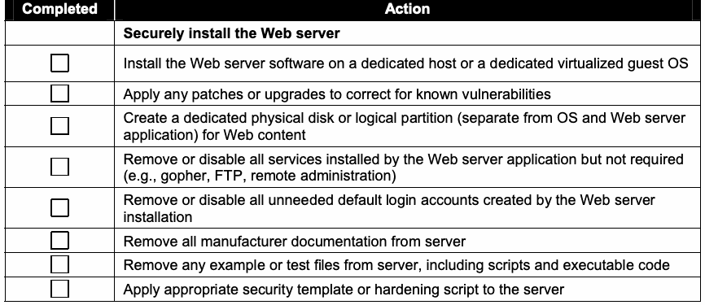
| 完了 | アクション |
| Webサーバーを安全にインストールする | |
| Webサーバーソフトウェアを専用ホストまたは専用の仮想化ゲストOSにインストールする | |
| 既知の脆弱性を修正するパッチまたはアップグレードを適用する | |
| OSおよびWebサーバーアプリケーション | |
| とは別の専用物理ディスクまたは論理パーティションをWebコンテンツ用に作成する | |
| Webサーバーアプリケーションがインストールしたサービスのうち、不要なものをすべて削除または無効にする | |
| （例: gopher、FTP、リモート管理） | |
| 不要なデフォルトログインアカウントをすべて削除または無効にする | |
| （Webサーバーのインストール時に作成されたアカウント） | |
| すべての製造元ドキュメントをサーバーから削除する | |
| スクリプトおよび実行可能コードを含め、すべてのサンプルファイルまたはテストファイルをサーバーから削除する | |
| 適切なセキュリティテンプレートまたはハードニングスクリプトをサーバーに適用する |
| Completed | Action |
| Reconfigure HTTP service banner (and others as required) NOT to report Web server | |
| and OS type and version | |
| Configure OS and Web server access controls | |
| Configure the Web server process to run as a user with a strictly limited set of privileges | |
| Configure the Web server so that Web content files can be read but not written by | |
| service processes | |
| Configure the Web server so that service processes cannot write to the directories | |
| where public Web content is stored | |
| Configure the Web server so that only processes authorized for Web server | |
| administration can write Web content files | |
| Configure the host OS so that the Web server can write log files but not read them | |
| Configure the host OS so that temporary files created by the Web server application are | |
| restricted to a specified and appropriately protected subdirectory | |
| Configure the host OS so that access to any temporary files created by the Web server | |
| application is limited to the service processes that created the files | |
| Install Web content on a different hard drive or logical partition than the OS and Web | |
| server application | |
| If uploads are allowed to the Web server, configure it so that a limit is placed on the | |
| amount of hard drive space that is dedicated for this purpose; uploads should be placed | |
| on a separate partition | |
| Ensure that log files are stored in a location that is sized appropriately; log files should | |
| be placed on a separate partition | |
| Configure the maximum number of Web server processes and/or network connections | |
| that the Web server should allow | |
| Ensure that any virtualized guest OSs follow this checklist | |
| Ensure users and administrators are able to change passwords | |
| Disable users after a specified period of inactivity | |
| Ensure each user and administrator has a unique ID | |
| Configure a secure Web content directory | |
| Dedicate a single hard drive or logical partition for Web content and establish related | |
| subdirectories exclusively for Web server content files, including graphics but excluding | |
| scripts and other programs | |
| Define a single directory exclusively for all external scripts or programs executed as | |
| part of Web server content (e.g., CGI, ASP) | |
| Disable the execution of scripts that are not exclusively under the control of | |
| administrative accounts. This action is accomplished by creating and controlling | |
| access to a separate directory intended to contain authorized scripts | |
| Disable the use of hard or symbolic links (e.g., shortcuts for Windows) | |
| Define a complete Web content access matrix. Identify which folders and files within | |
| the Web server document should be restricted and which should be accessible (and by | |
| whom) | |
| Check the organization’s password policy and set account passwords appropriately | |
| (e.g., length, complexity) | |
| Use the robots.txt file, if appropriate | |
| Configure anti-spambot protection, if appropriate (e.g., CAPTCHAs, nofollow, or | |
| keyword filtering) |
原本PDFの抜粋画像
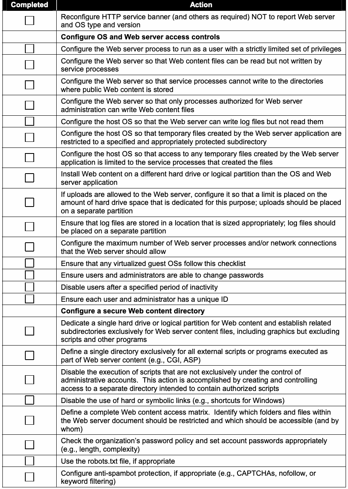
| 完了 | アクション |
| HTTPサービスのバナー（および必要な他のバナー）を再構成し、Webサーバー | |
| およびOSの種類とバージョンを報告しないようにする | |
| OSおよびWebサーバーのアクセス制御を構成する | |
| Webサーバープロセスを、権限を厳格に制限したユーザーとして実行するよう構成する | |
| Webサーバーを構成し、Webコンテンツファイルを | |
| サービスプロセスが読み取り可能で、書き込みできないようにする | |
| Webサーバーを構成し、サービスプロセスがディレクトリに書き込めないようにする | |
| 公開Webコンテンツが保存されている | |
| Webサーバーを構成し、Webサーバー管理の許可を受けたプロセスだけが | |
| Webコンテンツファイルに書き込めるようにする | |
| ホストOSを構成し、Webサーバーはログファイルに書き込めるが、読み取れないようにする | |
| ホストOSを構成し、Webサーバーアプリケーションが作成する一時ファイルを | |
| 指定された適切に保護されたサブディレクトリに制限する | |
| ホストOSを構成し、Webサーバーアプリケーションが作成する一時ファイルへのアクセスを | |
| そのファイルを作成したサービスプロセスに限定する | |
| WebコンテンツをOSおよびWeb | |
| サーバーアプリケーションとは別のハードドライブまたは論理パーティションにインストールする | |
| Webサーバーへのアップロードを許可する場合は、Webサーバーを構成して | |
| この目的に割り当てるハードドライブ容量に上限を設ける。アップロードは | |
| 別のパーティションに置くべきである | |
| ログファイルを容量が適切な場所に保存し、ログファイルは | |
| 別のパーティションに置くべきである | |
| Webサーバーが許容すべきWebサーバープロセス数および／またはネットワーク接続数の最大値を | |
| 構成する | |
| 仮想化されたゲストOSもこのチェックリストに従うことを確認する | |
| ユーザーおよび管理者がパスワードを変更できることを確認する | |
| 指定された期間にわたり非アクティブなユーザーを無効にする | |
| 各ユーザーおよび管理者に一意のIDがあることを確認する | |
| 安全なWebコンテンツディレクトリを構成する | |
| Webコンテンツ専用の単一のハードドライブまたは論理パーティションを用意し、関連する | |
| Webサーバーコンテンツファイル専用のサブディレクトリを作成する。これには画像を含めるが、スクリプトおよび | |
| その他のプログラムは含めない | |
| Webサーバーコンテンツの一部として実行されるすべての外部スクリプトまたはプログラム専用の単一ディレクトリを定義する（例: | |
| CGI、ASP） | |
| 管理者アカウントだけの管理下にないスクリプトの実行を無効にする。これは、 | |
| 許可されたスクリプトを格納する別ディレクトリを作成し、その | |
| ディレクトリへのアクセスを制御することで実現する | |
| ハードリンクまたはシンボリックリンク（例: Windowsのショートカット）の使用を無効にする | |
| 完全なWebコンテンツアクセスマトリクスを定義する。Webサーバーのドキュメント内で、どのフォルダーおよびファイルを | |
| 制限し、どれをアクセス可能にするか（また、誰がアクセス可能か） | |
| を特定する | |
| 組織のパスワードポリシーを確認し、アカウントのパスワードを適切に設定する | |
| （例: 長さ、複雑さ） | |
| 必要に応じてrobots.txtファイルを使用する | |
| 必要に応じてスパムボット対策（例: CAPTCHA、nofollow、または | |
| キーワードフィルタリング）を構成する |
6. Securing Web Content
6. Webコンテンツの保護
未レビュー訳The two main components of Web security are the security of the underlying server application and OS, and the security of the actual content. Of these, the security of the content is often overlooked. Maintaining effective content security itself has two components. The more obvious is not placing any proprietary, classified, or other sensitive information on a publicly accessible Web server, unless other steps have been taken to protect the information via user authentication and encryption (see Section 7). The less obvious component of content security is avoiding compromises caused by the way particular types of content are processed on a server. As organizations have gotten better at protecting and hardening their network perimeters, OSs, and Web servers, attackers have increasingly turned to exploiting vulnerabilities in Web applications and the way information is processed on Web servers. These application layer attacks exploit the interactive elements of Web sites.
Webセキュリティの主な構成要素は、基盤となるサーバーアプリケーションとOSのセキュリティ、および実際のコンテンツのセキュリティの二つである。このうち、コンテンツのセキュリティは見落とされることが多い。効果的なコンテンツセキュリティの維持にも二つの要素がある。より明白な要素は、ユーザー認証と暗号化によって情報を保護する他の措置が講じられていない限り、専有情報、機密指定情報、またはその他の機密情報を一般公開されているWebサーバーに置かないことである（セクション7を参照）。コンテンツセキュリティのもう一つの、より見落とされやすい要素は、特定の種類のコンテンツがサーバー上で処理される方法に起因する侵害を避けることである。組織がネットワーク境界、OS、およびWebサーバーの保護と堅牢化を進めるにつれ、攻撃者はWebアプリケーションの脆弱性やWebサーバー上で情報が処理される方法を悪用するようになっている。これらのアプリケーション層攻撃は、Webサイトの対話型要素を悪用する。
6.1 Publishing Information on Public Web Sites
6.1 公開Webサイトでの情報公開
Too often, little thought is given to the security implications of the content placed on the Web site. Many organizations do not have a Web publishing process or policy that determines what type of information to publish openly, what information to publish with restricted access, and what information should be omitted from any publicly accessible repository. This is troublesome because Web sites are often one of the first places that malicious entities search for valuable information. For example, attackers often read the contents of a target organization’s Web site to gather intelligence before any attacks [Scam01]. Also, attackers can take advantage of content available on a Web site to craft a social engineering attack or to use individuals’ identifying information in identity theft [FTC06].
Webサイトに掲載するコンテンツのセキュリティ上の影響は、あまり考慮されないことが多い。多くの組織には、どの種類の情報を一般公開し、どの情報をアクセス制限付きで公開し、どの情報を一般公開リポジトリに一切含めないかを決める、Web公開プロセスやポリシーがない。Webサイトは、悪意ある主体が価値ある情報を探す最初の場所の一つであることが多いため、これは問題である。たとえば、攻撃者は攻撃に先立って情報を収集するため、標的組織のWebサイトの内容を読むことが多い[Scam01]。また、攻撃者はWebサイト上で入手できるコンテンツを利用してソーシャルエンジニアリング攻撃を仕掛けたり、個人識別情報を個人情報窃盗に利用したりできる[FTC06]。
Absent compelling reasons, a public Web site should not contain the following information:
説得力のある理由がない限り、公開Webサイトには次の情報を含めるべきではない。
(cid:31) Classified records
(cid:31) 機密指定記録
未レビュー訳(cid:31) Internal personnel rules and procedures
(cid:31) 内部の人事規則および手順
未レビュー訳(cid:31) Sensitive or proprietary information
(cid:31) 機密情報または専有情報
未レビュー訳(cid:31) Personal information about an organization’s personnel or users30
(cid:31) 組織の職員またはユーザーに関する個人情報30
未レビュー訳(cid:131) Home addresses and telephone numbers
(cid:131) 自宅住所および電話番号
未レビュー訳(cid:131) Uniquely identifying information, particularly SSNs
(cid:131) 一意に個人を特定できる情報、特にSSN
未レビュー訳(cid:131) Detailed biographical material (that could be employed for social engineering)
(cid:131) 詳細な経歴情報（ソーシャルエンジニアリングに利用される可能性がある）
未レビュー訳(cid:131) Staff family members
(cid:131) 職員の家族
未レビュー訳(cid:31) Telephone numbers, e-mail addresses,31 or general listings of staff unless necessary to fulfill organizational requirements
(cid:31) 組織の要件を満たすために必要な場合を除き、電話番号、電子メールアドレス31、または職員の一般名簿
未レビュー訳(cid:31) Schedules of organizational principals or their exact location (whether on or off the premises)
(cid:31) 組織の幹部の予定または正確な所在（構内か構外かを問わない）
未レビュー訳(cid:31) Information on the composition or preparation of hazardous materials or toxins32
(cid:31) 危険物質または毒素の組成もしくは調製に関する情報32
未レビュー訳(cid:31) Sensitive information relating to homeland security
(cid:31) 国土安全保障に関する機密情報
未レビュー訳(cid:31) Investigative records
(cid:31) 調査記録
未レビュー訳(cid:31) Financial records (beyond those already publicly available)
(cid:31) 財務記録（すでに公開されているものを除く）
未レビュー訳(cid:31) Medical records
(cid:31) 医療記録
未レビュー訳(cid:31) The organization’s physical and information security procedures
(cid:31) 組織の物理的セキュリティおよび情報セキュリティの手順
未レビュー訳(cid:31) Information about organization’s network and information system infrastructure (e.g., address ranges, naming conventions, access numbers)
(cid:31) 組織のネットワークおよび情報システムのインフラストラクチャに関する情報（例: アドレス範囲、命名規則、アクセス番号）
未レビュー訳(cid:31) Information that specifies or implies physical security vulnerabilities
(cid:31) 物理的セキュリティ上の脆弱性を明示または示唆する情報
未レビュー訳(cid:31) Plans, maps, diagrams, aerial photographs, and architectural plans of organizational building, properties, or installations
(cid:31) 組織の建物、敷地、または施設の計画、地図、図表、航空写真、および建築計画
未レビュー訳(cid:31) Information on disaster recovery or continuity of operations plans except as absolutely required
(cid:31) 絶対に必要な場合を除き、災害復旧計画または業務継続計画に関する情報
未レビュー訳(cid:31) Details on emergency response procedures, evacuation routes, or organizational personnel responsible for these issues
(cid:31) 緊急対応手順、避難経路、またはこれらの問題を担当する組織職員の詳細
未レビュー訳(cid:31) Copyrighted material without the written permission of the owner
(cid:31) 所有者の書面による許可を得ていない著作権保護対象の資料
未レビュー訳(cid:31) Privacy or security policies that indicate the types of security measures in place to the degree that they may be useful to an attacker.
(cid:31) 攻撃者にとって有用となり得る程度に、導入されているセキュリティ対策の種類を示すプライバシーポリシーまたはセキュリティポリシー。
未レビュー訳Organizations should not use public Web servers to host sensitive information intended to be accessed only by internal users. The compromise of a public Web server often leads to the compromise of such data.
組織は、内部ユーザーだけがアクセスすることを意図した機密情報を、公開Webサーバー上でホストすべきではない。公開Webサーバーの侵害は、そのようなデータの侵害につながることが多い。
To ensure a consistent approach, an organization should create a formal policy and process for determining and approving the information to be published on a Web server. In many organizations, this is the responsibility of the CIO and/or public affairs officer. Such a process should include the following steps:
一貫した対応を確保するため、組織はWebサーバーで公開する情報を決定し承認するための正式なポリシーとプロセスを策定すべきである。多くの組織では、これはCIOおよび／または広報担当者の責任である。そのようなプロセスには、次の手順を含めるべきである。
(cid:31) Identify information that should be published on the Web
(cid:31) Webで公開すべき情報を特定する
未レビュー訳(cid:31) Identify the target audience (Why publish if no audience exists?)
(cid:31) 対象読者を特定する（読者がいないのに、なぜ公開するのか?）
未レビュー訳(cid:31) Identify possible negative ramifications of publishing the information
(cid:31) 情報を公開することによる悪影響の可能性を特定する
未レビュー訳email addresses are much more likely to receive spam. Two, personally identifying email addresses can provide useful information to an attacker (e.g., possible usernames, information for social engineering attempts).
電子メールアドレスはスパムを受信する可能性がはるかに高い。第二に、個人を特定できる電子メールアドレスは攻撃者に有用な情報を与えることがある（例: ユーザー名の候補、ソーシャルエンジニアリングの試みに利用する情報）。
未レビュー訳(cid:31) Identify who should be responsible for creating, publishing, and maintaining this particular information
(cid:31) この特定情報の作成、公開、および維持に誰が責任を負うべきかを特定する
未レビュー訳(cid:31) Create or format information for Web publishing
(cid:31) Web公開用に情報を作成または書式設定する
未レビュー訳(cid:31) Review the information for sensitivity and distribution/release controls (including the sensitivity of the information in aggregate)
(cid:31) 機密性および配布／公開に関する制御について情報をレビューする（情報を集約した場合の機密性を含む）
未レビュー訳(cid:31) Determine the appropriate access and security controls
(cid:31) 適切なアクセス制御およびセキュリティ制御を決定する
未レビュー訳(cid:31) Publish information
(cid:31) 情報を公開する
未レビュー訳(cid:31) Verify published information
(cid:31) 公開した情報を検証する
未レビュー訳(cid:31) Periodically review published information to confirm continued compliance with organizational guidelines.
(cid:31) 組織のガイドラインへの準拠が継続していることを確認するため、公開した情報を定期的にレビューする。
未レビュー訳Any policy or process for determining and approving the information to be published on a Web server can benefit from the use of automated tools. Tools can scan incoming content for keywords, formatting, or metadata, and flag it for review, easing the burden of those required to verify content. Similarly, an internal automated system that allows users to post potential material to an internal Web site and notifies approving personnel (possibly via e-mail) of the posting allows material to be reviewed and posted to the public Web site more quickly through a repeatable process. Using an automated system also aids accountability because logs track who submitted the document and who approved it.
Webサーバーで公開する情報を決定し承認するためのポリシーまたはプロセスには、自動化ツールを利用すると役立つ。ツールは、受信したコンテンツのキーワード、書式、またはメタデータをスキャンし、レビュー対象としてフラグを付けることで、コンテンツの検証担当者の負担を軽減できる。同様に、ユーザーが公開候補の資料を内部Webサイトに投稿でき、承認担当者に（電子メールなどで）投稿を通知する内部自動システムを利用すれば、再現可能なプロセスを通じて資料をより迅速にレビューし、公開Webサイトに掲載できる。自動システムを利用すると、誰が文書を提出し、誰が承認したかをログで追跡できるため、説明責任の確保にも役立つ。
An often-overlooked area of Web content is the information sometimes hidden within the source code of a Web page. This information can be viewed from any Web browser using the “view source code” menu option. The source code can, for example, contain points of contact and reveal portions of the directory structure of the Web server. Organizations often do not pay attention to the contents of the source code on their Web sites, even though this code may contain sensitive information. Attackers scour not only the obvious content of the Web site but also details within the source code. Thus, Web administrators or Webmasters should periodically review code on their public Web server.
Webコンテンツの中で見落とされがちな領域の一つが、Webページのソースコード内に隠されている場合がある情報である。この情報は、どのWebブラウザーからでも「view source code」メニューオプションを使って閲覧できる。たとえば、ソースコードには連絡先が含まれたり、Webサーバーのディレクトリ構造の一部が明らかになったりすることがある。組織は、ソースコードに機密情報が含まれている可能性があるにもかかわらず、自サイトのソースコードの内容に注意を払わないことが多い。攻撃者はWebサイトの明白なコンテンツだけでなく、ソースコード内の詳細もくまなく調べる。そのため、Web管理者またはWebmasterは、公開Webサーバー上のコードを定期的にレビューすべきである。
6.2 Observing Regulations about the Collection of Personal Information
6.2 個人情報の収集に関する規制の遵守
Federal and state laws and regulations apply to the collection of user information on publicly accessible government Web sites. In addition, many government agencies have privacy guidelines that address the type of information that could be collected about users. Governmental organizations with Web sites should be aware of the appropriate and applicable laws, regulations, and agency guidelines. Private organizations may wish to use these guidelines and examples of sound security practices but should consult appropriate legal counsel and their privacy officials for the applicable legal and policy implications. However, Federal laws, regulations, and applicable agency guidelines do apply to commercial organizations that operate Web sites on behalf of Federal agencies. Organizations should be aware of changes to legal, regulatory, and contractual requirements and seek advice from knowledgeable legal and policy experts.
一般公開されている政府Webサイトでのユーザー情報の収集には、連邦法および州法ならびに規制が適用される。さらに、多くの政府機関には、ユーザーについて収集できる情報の種類を定めるプライバシーガイドラインがある。Webサイトを運営する政府機関は、該当する適切な法律、規制、および機関のガイドラインを把握しておくべきである。民間組織は、これらのガイドラインや適切なセキュリティ慣行の例を利用してもよいが、適用される法的およびポリシー上の影響について、適切な法律顧問やプライバシー担当者に相談すべきである。ただし、連邦機関に代わってWebサイトを運営する商業組織にも、連邦法、規制、および適用される機関ガイドラインが適用される。組織は、法律、規制、および契約上の要件の変更を把握し、法律およびポリシーに詳しい専門家に助言を求めるべきである。
Federal agencies that collect PII must do so in accordance with Federal law and the Constitution. The Privacy Act, for example, requires agencies to minimize the information collected to that which is relevant and necessary to the business purpose,33 and, in many cases, to collect information, to the greatest extent practicable, directly from the subject individual.34 In addition, accepted practices (many of which are reflected in laws applicable to both private and public institutions) are to provide subject individuals:
連邦機関がPIIを収集する場合、連邦法および合衆国憲法に従って収集しなければならない。たとえば、Privacy Actは、収集する情報を業務目的に関連し必要なものに限定することを機関に求めており33、多くの場合、実行可能な最大限の範囲で本人から直接情報を収集することも求めている34。さらに、民間と公的機関の双方に適用される法律に多くが反映されている一般的に認められた慣行では、本人に次の事項を提供する。
未レビュー訳(cid:31) Notice that information about them is being collected, including descriptions of what data is being collected, with whom it is being shared, and what is being done with that data
(cid:31) 本人に関する情報を収集していることの通知。収集するデータの説明、そのデータの共有先、およびそのデータの利用方法を含む。
未レビュー訳(cid:31) Opportunities to opt out of data collection unless the data collection is mandatory under law, necessary to the performance of a contract with the subject individual, or if the individual has freely offered his/her PII
(cid:31) データ収集が法律上義務付けられている場合、本人との契約の履行に必要な場合、または本人が自らのPIIを自発的に提供した場合を除き、データ収集を拒否する機会
未レビュー訳(cid:31) Opportunities to access and review the records kept about themselves, and to request corrections or additions, especially if that information may be used to make a determination about the individuals’ rights, opportunities, or benefits.
(cid:31) 本人に関して保管されている記録にアクセスして確認し、訂正または追加を求める機会。特に、その情報が本人の権利、機会、または給付に関する判断に使用される可能性がある場合。
未レビュー訳The following are examples of personal information:
個人情報の例を次に示す。
(cid:31) Name
(cid:31) 氏名
未レビュー訳(cid:31) E-mail address
(cid:31) 電子メールアドレス
未レビュー訳(cid:31) Mailing address
(cid:31) 郵送先住所
未レビュー訳(cid:31) Telephone number
(cid:31) 電話番号
未レビュー訳(cid:31) SSN
(cid:31) SSN
未レビュー訳(cid:31) Financial information.
(cid:31) 財務情報。
未レビュー訳Federal agencies and many state agencies are also restricted in their ability to use Web browser cookies [OMB00a, OMB00b, OMB00c, and MASS99]. A cookie is a small piece of information that may be written to a user’s hard drive when a Web site is visited. There are two principal types of cookies:
連邦機関および多くの州機関は、WebブラウザーのCookieを使用する能力も制限されている[OMB00a, OMB00b, OMB00c, and MASS99]。Cookieは、Webサイトを訪問した際にユーザーのハードドライブに書き込まれることがある小さな情報片である。Cookieには主に二種類ある。
(cid:31) Persistent cookies cause the most concern. These cookies can be used to track activities of users over time and across different Web sites. The most common use of persistent cookies is to retain and correlate information about users between sessions. Federal agencies and many state agencies are generally prohibited from using persistent cookies on publicly accessible Web sites.
(cid:31) 永続Cookieが最も懸念される。これらのCookieは、時間の経過に伴うユーザーの活動や、異なるWebサイトをまたいだ活動を追跡するために使用できる。永続Cookieの最も一般的な用途は、セッション間でユーザーに関する情報を保持し、関連付けることである。連邦機関および多くの州機関は、一般公開Webサイトで永続Cookieを使用することを通常は禁止されている。
未レビュー訳(cid:31) Session cookies are valid for a single session (visit) to a Web site. These cookies expire at the end of the session or within a limited time frame. Because these cookies cannot be used to track personal information, they are generally not subject to the prohibition that applies to persistent cookies. However, their use must be clearly stated and defined in the Web site’s privacy statement.
(cid:31) セッションCookieは、Webサイトへの一回のセッション（訪問）に限り有効である。これらのCookieは、セッションの終了時または限られた期間の経過後に失効する。個人情報の追跡に使用できないため、一般に、永続Cookieに適用される禁止の対象ではない。ただし、その使用についてはWebサイトのプライバシーステートメントに明確に記載し、定義しなければならない。
未レビュー訳6.3 Mitigating Indirect Attacks on Content
6.3 コンテンツに対する間接攻撃の軽減
Indirect content attacks are not direct attacks on a Web server or its contents; they involve roundabout means to gain information from users who normally visit the Web site maintained on the Web server. The common theme of these attacks is to coerce users into visiting a malicious Web site set up by the attacker and divulging personal information in the belief that the site they visited is the legitimate Web site. While customers of electronic commerce and financial institutions are often targeted, such attacks are not limited to those Web sites. Besides acquiring personal information related to the targeted Web site, attacks may also be directed against the user’s computer from the malicious Web site visited. The types of indirect attacks described in this section are phishing and pharming.
間接的なコンテンツ攻撃は、Webサーバーまたはそのコンテンツに対する直接攻撃ではない。Webサーバーで維持されているWebサイトを通常訪問するユーザーから情報を得るため、回りくどい手段を使う。これらの攻撃に共通するのは、ユーザーをそそのかして攻撃者が用意した悪意あるWebサイトにアクセスさせ、訪問先を正規のWebサイトだと信じ込ませて個人情報を漏えいさせる点である。電子商取引や金融機関の顧客が標的になることは多いが、こうした攻撃はそれらのWebサイトに限られない。標的Webサイトに関連する個人情報を取得するだけでなく、訪問した悪意あるWebサイトからユーザーのコンピューターを攻撃することもある。このセクションで説明する間接攻撃の種類は、フィッシングとファーミングである。
6.3.1 Phishing
6.3.1 フィッシング
Phishing attackers use social engineering techniques to trick users into accessing a fake Web site and divulging personal information. In some phishing attacks, attackers send a legitimate-looking e-mail asking users to update their information on the company’s Web site, but the URLs in the e-mail actually point to a false Web site.35 Other phishing attacks may be more advanced and take advantage of vulnerabilities in the legitimate Web site’s application.36
フィッシング攻撃者は、ソーシャルエンジニアリングの手法を使ってユーザーをだまし、偽のWebサイトにアクセスさせて個人情報を漏えいさせる。フィッシング攻撃の中には、正規のものに見える電子メールを送信し、会社のWebサイトで情報を更新するようユーザーに求めるものがあるが、実際には電子メール内のURLは偽のWebサイトを指している。35 その他のフィッシング攻撃はさらに高度で、正規のWebサイトのアプリケーションの脆弱性を悪用する場合がある。36
未レビュー訳Although phishing cannot be prevented entirely through technical means employed on a Web server, many techniques can reduce the likelihood that a Web site’s users will be lured into a phishing attack37 [Ollm04]:
Webサーバーで用いる技術的手段だけでフィッシングを完全に防止することはできないが、Webサイトのユーザーがフィッシング攻撃に誘い込まれる可能性を下げる手法は多数ある37 [Ollm04]:
未レビュー訳(cid:31) Ensuring customer awareness of the dangers of phishing attacks and how to avoid them. The Federal Trade Commission (FTC) has posted a consumer alert outlining steps that users should take [FTC06a]:
(cid:31) フィッシング攻撃の危険性とその回避方法について、顧客に注意を促す。Federal Trade Commission（FTC）は、ユーザーが取るべき手順をまとめた消費者向け警告を掲載している[FTC06a]:
未レビュー訳(cid:131) Do not reply to email messages or popup ads asking for personal or financial information.
(cid:131) 個人情報または財務情報を求める電子メールやポップアップ広告に返信しない。
未レビュー訳(cid:131) Do not trust telephone numbers in e-mails or popup ads. Voice over Internet Protocol technology can be used to register a telephone with any area code.
(cid:131) 電子メールやポップアップ広告に記載された電話番号を信用しない。Voice over Internet Protocol（VoIP）技術を使うと、任意の市外局番で電話番号を登録できる。
未レビュー訳(cid:131) Use antivirus, anti-spyware, and firewall software. These can detect malware on a user’s machine that is participating in a phishing attack.
(cid:131) ウイルス対策、スパイウェア対策、およびファイアウォールのソフトウェアを使用する。これらは、フィッシング攻撃に加担しているユーザーのマシン上のマルウェアを検出できる。
未レビュー訳(cid:131) Do not email personal or financial information.
(cid:131) 個人情報または財務情報を電子メールで送信しない。
未レビュー訳(cid:131) Review credit card and bank account statements regularly.
(cid:131) クレジットカードおよび銀行口座の明細を定期的に確認する。
未レビュー訳(cid:131) Be cautious about accessing untrusted Web sites because some Web browser vulnerabilities can be exploited simply by visiting such sites. Users should also be cautious about opening any attachment or downloading any file from untrusted emails or Web sites.
(cid:131) 信頼できないWebサイトへのアクセスには注意する。そのようなサイトを訪問するだけで悪用されるWebブラウザーの脆弱性があるためである。ユーザーは、信頼できない電子メールやWebサイトから添付ファイルを開いたり、ファイルをダウンロードしたりする場合も注意すべきである。
未レビュー訳(cid:131) Forward phishing-related emails to spam@uce.gov and to the organization that is impersonated in the email.
(cid:131) フィッシング関連の電子メールをspam@uce.govおよび電子メール内でなりすまされている組織に転送する。
未レビュー訳(cid:131) Request a copy of your credit report yearly from each of the three credit reporting agencies: Equifax, TransUnion, and Experian. If an identity thief opens accounts in your name, they will likely show up on your credit report.38
(cid:131) 三つの信用情報機関（Equifax、TransUnion、Experian）それぞれから、年に一度、自分の信用報告書の写しを請求する。個人情報窃盗犯が本人名義で口座を開設した場合、その情報は信用報告書に記載される可能性が高い。38
未レビュー訳(cid:31) Validating official communication by personalizing emails and providing unique identifying information that only the organization and user should know. However, confidential information should not be disclosed.
(cid:31) 電子メールを個別化し、組織とユーザーだけが知っているはずの一意な識別情報を提示して、公式な連絡であることを検証する。ただし、機密情報を開示すべきではない。
未レビュー訳(cid:31) Using digital signatures on e-mail. However, digital signatures may not be validated automatically by the user’s email application.
(cid:31) 電子メールにデジタル署名を使用する。ただし、ユーザーの電子メールアプリケーションがデジタル署名を自動的に検証しない場合がある。
未レビュー訳(cid:31) Performing content validation within the Web application. Vulnerabilities in the organization’s Web applications may be used in a phishing attack.
(cid:31) Webアプリケーション内でコンテンツ検証を実行する。組織のWebアプリケーションの脆弱性がフィッシング攻撃に利用される可能性がある。
未レビュー訳(cid:31) Personalizing Web content, which can aid users in identifying a fraudulent Web site.
(cid:31) Webコンテンツを個別化する。これにより、ユーザーは偽のWebサイトを識別しやすくなる。
未レビュー訳(cid:31) Using token-based or mutual authentication at the Web site to prevent phishers from reusing previous authentication information to impersonate the user.
(cid:31) Webサイトでトークンベース認証または相互認証を使用し、フィッシング攻撃者が以前の認証情報を再利用してユーザーになりすますのを防ぐ。
未レビュー訳Most Web browsers provide some level of phishing protection. All Web browsers inform users when they visit a secured site via a padlock or some other GUI mechanism, and they also inform users if the Domain Name System (DNS) address visited does not match that of the Public Key Infrastructure (PKI) certificate. However, phishing sites often use DNS addresses that are similar to those of the original sites and that have a valid PKI certificate, making them harder to detect. In such cases, a Web browser would notify the user of the danger only if the site was a known phishing site. Browsers may either download a phishing blacklist from the browser manufacturer’s Web site periodically or check all Web requests against an anti-phishing database. Organizations should use Web browser-provided anti-phishing features where applicable. In addition, a number of vendors offer more advanced anti-phishing solutions and services [APWG07]:
ほとんどのWebブラウザーは、ある程度のフィッシング対策機能を備えている。すべてのWebブラウザーは、南京錠などのGUI機構を使って、セキュリティ保護されたサイトにアクセスしたことをユーザーに知らせる。また、アクセス先のDomain Name System（DNS）アドレスがPublic Key Infrastructure（PKI）証明書のアドレスと一致しない場合も通知する。ただし、フィッシングサイトは元のサイトとよく似たDNSアドレスや有効なPKI証明書を使うことが多く、検出が難しくなっている。このような場合、サイトが既知のフィッシングサイトであるときに限り、Webブラウザーはユーザーに危険を通知する。ブラウザーは、ブラウザーメーカーのWebサイトからフィッシングのブラックリストを定期的にダウンロードするか、すべてのWeb要求をフィッシング対策データベースと照合する場合がある。組織は、適用可能な場合、Webブラウザーが提供するフィッシング対策機能を使用すべきである。さらに、複数のベンダーがより高度なフィッシング対策ソリューションおよびサービスを提供している[APWG07]:
(cid:31) Cousin Domain Monitoring and Prevention—Vendors (primarily domain name registrars) monitor and in some instances prevent the creation of domain names similar to those of organizations that may be subject to phishing attacks.
(cid:31) Cousin Domain Monitoring and Prevention（類似ドメインの監視と防止）—ベンダー（主にドメイン名登録事業者）は、フィッシング攻撃の標的となる可能性がある組織のドメイン名に類似するドメイン名を監視し、場合によってはその作成を防止する。
未レビュー訳(cid:31) Attack Detection and Analysis—Vendors monitor e-mail and Web communication to discover ongoing phishing campaigns so that organizations can take appropriate responses.
(cid:31) Attack Detection and Analysis（攻撃の検出と分析）—ベンダーは、電子メールおよびWeb通信を監視して進行中のフィッシングキャンペーンを発見し、組織が適切に対応できるようにする。
未レビュー訳(cid:31) Takedown—Vendors aid in limiting access to the phishing Web site.
(cid:31) Takedown（停止措置）—ベンダーは、フィッシングWebサイトへのアクセスを制限する支援を行う。
未レビュー訳(cid:31) Fraud Analysis—Vendors monitor access to the organization’s Web site for potential fraud attempts (such as phishers attempting to use captured credentials) or monitor the Web for fraudulent use of an organization’s identity.
(cid:31) 不正行為の分析—ベンダーは、詐欺の可能性のある試み（フィッシング攻撃者が取得した認証情報を使おうとする場合など）について組織のWebサイトへのアクセスを監視するか、組織のIDを不正利用する行為がないかWebを監視する。
未レビュー訳(cid:31) Forensic Services—After discovery of a successful phishing attack, vendors aid in addressing issues that arise as a result of the attack.
(cid:31) フォレンジックサービス—フィッシング攻撃の成功が発見された後、ベンダーは攻撃の結果生じた問題への対処を支援する。
未レビュー訳(cid:31) Consumer Toolbars—Vendors provide browser plug-ins that can provide or augment phishing detection available in users’ browsers.
(cid:31) 消費者向けツールバー—ベンダーは、ユーザーのブラウザーで利用できるフィッシング検出機能を提供または強化するブラウザープラグインを提供する。
未レビュー訳(cid:31) E-mail Authentication—Vendors provide secure e-mail solutions allowing users to discern whether or not an e-mail is from the organization itself or is a potential phishing attack.
(cid:31) 電子メール認証—ベンダーは、電子メールが組織自身から送信されたものか、フィッシング攻撃の可能性があるかをユーザーが見分けられる、安全な電子メールソリューションを提供する。
未レビュー訳(cid:31) E-mail Filtering—Vendors provide solutions to prevent an organization’s internal users from receiving phishing e-mails.
(cid:31) 電子メールフィルタリング—ベンダーは、組織の内部ユーザーがフィッシングメールを受信しないようにするソリューションを提供する。
未レビュー訳(cid:31) Web Filtering—Vendors monitor an organization’s outbound Web requests and prevent users from accessing known or suspected phishing Web sites.
(cid:31) Webフィルタリング—ベンダーは、組織から外部へのWeb要求を監視し、既知または疑わしいフィッシングWebサイトへのユーザーのアクセスを防ぐ。
未レビュー訳(cid:31) Authentication—Vendors provide strong authentication solutions that are less susceptible to phishing attacks.
(cid:31) 認証—ベンダーは、フィッシング攻撃の影響を受けにくい強力な認証ソリューションを提供する。
未レビュー訳(cid:31) Law Enforcement Enablement—Vendors assist organizations in contacting law enforcement officials to aid in shutting down and prosecuting phishing attacks.
(cid:31) 法執行機関との連携支援—ベンダーは、フィッシング攻撃の停止および訴追を支援するため、組織が法執行機関の職員に連絡するのを支援する。
未レビュー訳When contemplating anti-phishing measures, it is important to consider the type of information being hosted on the Web site. Web sites with little or no sensitive information may not need to implement more advanced or costly anti-phishing measures. Web sites storing PII should strongly consider implementing more robust anti-phishing measures.
フィッシング対策を検討する際には、Webサイトでホストしている情報の種類を考慮することが重要である。機密情報をほとんど、またはまったく含まないWebサイトでは、より高度または高額なフィッシング対策を実施する必要がない場合がある。PIIを保存するWebサイトでは、より堅牢なフィッシング対策の実施を強く検討すべきである。
6.3.2 Pharming
6.3.2 ファーミング
Pharming attackers use technical means, instead of social engineering, to redirect users into accessing a fake Web site masquerading as a legitimate one and divulging personal information. Pharming is normally accomplished either by exploiting vulnerabilities in DNS software, which is used to resolve human-readable Internet domain names into IP addresses, or by altering the host files maintained on a client computer for locally resolving Internet domain names. In either case, the affected system incorrectly resolves legitimate names to the malicious Web site address. Various techniques can help reduce the likelihood that a Web site’s users become involved in a pharming attack [Ollm05]:
ファーミング攻撃者は、ソーシャルエンジニアリングではなく技術的手段を使い、ユーザーを正規サイトに見せかけた偽のWebサイトへ誘導して個人情報を漏えいさせる。ファーミングは通常、人間に読みやすいインターネットドメイン名をIPアドレスに解決するためのDNSソフトウェアの脆弱性を悪用するか、クライアントコンピューター上でインターネットドメイン名をローカルに解決するために維持されているホストファイルを変更することで実行される。どちらの場合も、影響を受けたシステムは正規の名前を悪意あるWebサイトのアドレスに誤って解決する。Webサイトのユーザーがファーミング攻撃に巻き込まれる可能性を低減するには、次のような手法がある[Ollm05]:
(cid:31) Using the Current Versions of DNS Software with the Latest Security Patches Applied—A compromised DNS server will allow attackers to direct users to a malicious server while maintaining a legitimate DNS name.
(cid:31) 最新のセキュリティパッチを適用した現行バージョンのDNSソフトウェアを使用する—侵害されたDNSサーバーを使うと、攻撃者は正規のDNS名を維持したまま、ユーザーを悪意あるサーバーに誘導できる。
未レビュー訳(cid:31) Installing Server-Side DNS Protection Mechanisms Against Pharming—There are tools available to mitigate threats to DNS software, such as the DNS Security Extensions; these are discussed in NIST SP 800-81, Secure Domain Name System (DNS) Deployment Guide.39
(cid:31) ファーミングに対するサーバー側DNS保護機構を導入する—DNS Security Extensionsなど、DNSソフトウェアへの脅威を軽減するツールがある。これらについてはNIST SP 800-81, Secure Domain Name System (DNS) Deployment Guideで説明されている。39
未レビュー訳(cid:31) Monitoring Organizational Domains and the Registration of Similar Domains—Pharming attacks may take advantage of users who misspell the organization’s domain name when accessing the site.
(cid:31) 組織のドメインと類似ドメインの登録を監視する—ユーザーがWebサイトにアクセスする際に組織のドメイン名を誤入力することを、ファーミング攻撃者が利用する場合がある。
未レビュー訳(cid:31) Simplifying the Structure and Number of Organizational Domain Names—If an organization has a complicated naming structure for its servers, it becomes increasingly difficult for users to discern whether they are on an illegitimate site. For example, many organizations will have users login at one
(cid:31) 組織のドメイン名の構成と数を簡素化する—組織のサーバーの命名構造が複雑であるほど、ユーザーが不正サイトにいるかどうかを見分けるのは難しくなる。たとえば、多くの組織では、ユーザーは一つの
未レビュー訳URL, such as https://www.organization.org/, but then redirect them to another URL, such as https://www.secure-organization.org/. A user redirected to https://www.secured-organization.org/ may not notice the attack.
URL（例: https://www.organization.org/）でログインした後、別のURL（例: https://www.secure-organization.org/）にリダイレクトされる。しかし、https://www.secured-organization.org/ にリダイレクトされたユーザーは、攻撃に気付かない場合がある。
未レビュー訳(cid:31) Using Secure Connections (i.e., HTTPS) for Logins, which Allows Users to Verify that the Server Certificates are Valid and Associated with a Legitimate Web Site—Modern browsers will notify a user if the DNS name does not match the one provided by the certificate, but some pharming sites could have a legitimate certificate.40
(cid:31) ログインにセキュア接続（すなわちHTTPS）を使用し、サーバー証明書が有効で正規のWebサイトに関連付けられていることをユーザーが確認できるようにする—最新のブラウザーは、DNS名が証明書に記載された名前と一致しない場合にユーザーに通知するが、一部のファーミングサイトは正規の証明書を持つことがある。40
未レビュー訳(cid:31) Ensuring User Awareness of the Dangers of Pharming Attacks and How to Avoid Them— Pharming is a recent phenomenon; many users may not know to watch for pharming attacks.
(cid:31) ファーミング攻撃の危険性とその回避方法についてユーザーに注意を促す—ファーミングは比較的新しい現象であり、多くのユーザーはファーミング攻撃に注意すべきことを知らない場合がある。
未レビュー訳(cid:31) Verifying Third-Party Host Resolution—A number of vendors provide third-party Web browser plug-ins41 that support matching the Internet Protocol (IP) address of a Web site against a previously verified “good” IP address, providing users with a warning if the Web site is suspicious.
(cid:31) サードパーティーによるホスト名解決を検証する—複数のベンダーが、Webサイトのインターネットプロトコル（IP）アドレスを以前に検証済みの「正しい」IPアドレスと照合し、Webサイトが疑わしい場合にユーザーへ警告するブラウザープラグインを提供している。41
未レビュー訳(cid:31) Using Pre-Shared Secrets—Pre-shared secrets can be used to prevent pharming attacks. A common implementation of pre-shared secrets is to have authorized users set up certain questions and answers that only they should know. In addition, the Web site provides each user with a specific image and/phrase that only it and the user knows. Subsequently, when a user logs in to the Web site, the user is asked one of the secret questions. If the user answers correctly, he or she is presented with the secret image/phrase and only then asked for a password. Since a pharming site would not know those pre-shared secrets and be able to respond accordingly, it should be recognizable as a malicious site. The main disadvantage of using pre-shared secrets is that user acceptance may be low because of the work involved to set up the secrets and log into a site. Moreover, some users might not recognize the missing data and use the pharming site anyway.
(cid:31) 事前共有秘密を使用する—事前共有秘密はファーミング攻撃の防止に使用できる。一般的な実装方法は、認証されたユーザーに、自分だけが知っているはずの質問と回答を設定させることである。また、Webサイトは各ユーザーに固有の画像および／フレーズを提示し、Webサイトとユーザーだけがそれを知っているようにする。その後、ユーザーがWebサイトにログインすると、秘密の質問の一つを尋ねられる。ユーザーが正しく回答すると、秘密の画像またはフレーズが提示され、その後に初めてパスワードを求められる。ファーミングサイトはその事前共有秘密を知らず、適切に応答できないため、悪意あるサイトだと識別できるはずである。事前共有秘密を使用する主な欠点は、秘密を設定してサイトにログインするための手間から、ユーザーの受容度が低くなる可能性があることである。さらに、データが表示されないことに気付かず、そのままファーミングサイトを使用するユーザーもいるかもしれない。
未レビュー訳Many of the techniques used to prevent phishing attacks—particularly in commercial offerings—are relevant to preventing pharming attacks. As with anti-phishing solutions, when contemplating anti-pharming measures, it is important to consider the type of information being hosted on the Web site. Web sites with little or no sensitive information may not need to implement more advanced or costly anti-pharming measures. Web sites storing PII should strongly consider implementing more robust anti-pharming measures. Requiring strong authentication can greatly reduce the risk of successful phishing and pharming attacks.
フィッシング攻撃の防止に用いられる手法の多く、特に商用製品で提供される手法は、ファーミング攻撃の防止にも有効である。フィッシング対策の場合と同様に、ファーミング対策を検討する際には、Webサイトでホストしている情報の種類を考慮することが重要である。機密情報をほとんど、またはまったく含まないWebサイトでは、より高度または高額なファーミング対策を実施する必要がない場合がある。PIIを保存するWebサイトでは、より堅牢なファーミング対策の実施を強く検討すべきである。強力な認証を必須にすることで、フィッシング攻撃およびファーミング攻撃が成功するリスクを大幅に低減できる。
未レビュー訳6.4 Securing Active Content and Content Generation Technologies
6.4 Active Contentおよびコンテンツ生成技術の保護
In the early days of the Web, most sites presented textual, static HyperText Markup Language (HTML) pages. No interactivity occurred between the user and Web site beyond the user clicking on hyperlinks. Soon thereafter, various types of interactive elements were introduced that offered users new ways to interact more dynamically with Web sites. Unfortunately, these interactive elements introduced many Web-related vulnerabilities that remain a concern today.42
Webの初期には、ほとんどのサイトはテキスト中心の静的なHyperText Markup Language（HTML）ページを表示していた。ユーザーがハイパーリンクをクリックする以外に、ユーザーとWebサイトとの間に対話性はなかった。その後まもなく、ユーザーがWebサイトとより動的にやり取りするための新しい方法を提供する、さまざまな種類の対話型要素が導入された。残念ながら、これらの対話型要素によってWeb関連の脆弱性が数多く生じ、現在も懸念事項となっている。42
未レビュー訳Active content refers to interactive program elements downloaded to the client (i.e., a Web browser) and processed there instead of the server. A variety of active content technologies exists; some of the more popular examples are ActiveX, Java, VBScript, JavaScript, and Asynchronous JavaScript and XML (AJAX). The use of active content often requires users to reduce the security settings on their Web browsers for processing to occur. If not implemented correctly, active content can present a serious threat to the end user. For example, active content can take actions independently without the knowledge or expressed consent of the user. While active content poses risk to the client, it can also pose risk to the Web server. The reason is that information processed on the client is under the control of the user, who can potentially manipulate the results by reverse engineering and tampering with the active content. For example, form validation processing done with active content elements on the client side can be changed to return out-of-range options or other unexpected results to the server. Therefore, the results of processing done on the client by elements of active content should not be trusted by the server; instead, the results should be verified by the server. Organizations considering the deployment of client-side active content should carefully consider the risks to both their users and their Web servers.
Active Contentとは、サーバーではなくクライアント（すなわちWebブラウザー）にダウンロードされ、そこで処理される対話型プログラム要素を指す。Active Content技術にはさまざまな種類があり、広く使われている例として、ActiveX、Java、VBScript、JavaScript、Asynchronous JavaScript and XML（AJAX）がある。Active Contentを処理するには、多くの場合、ユーザーがWebブラウザーのセキュリティ設定を下げる必要がある。正しく実装されていない場合、Active Contentはエンドユーザーに深刻な脅威をもたらす可能性がある。たとえば、Active Contentはユーザーの認識や明示的な同意なしに独立して動作することがある。Active Contentはクライアントにリスクをもたらすだけでなく、Webサーバーにもリスクをもたらし得る。クライアント上で処理される情報はユーザーの制御下にあり、ユーザーはリバースエンジニアリングやActive Contentの改変によって処理結果を操作できる可能性があるためである。たとえば、クライアント側のActive Content要素を使って実行するフォーム検証処理を変更し、範囲外の選択肢やその他の予期しない結果をサーバーに返すことができる。したがって、クライアント上のActive Content要素が行った処理の結果をサーバーは信頼すべきではなく、代わりにサーバーがその結果を検証すべきである。クライアント側Active Contentの導入を検討する組織は、ユーザーとWebサーバーの双方に対するリスクを慎重に検討すべきである。
未レビュー訳Content generators are programs on a Web server that dynamically generate HTML pages for users; these pages may be generated using information retrieved from a backend server, such as a database or directory, or possibly user-supplied input. Some of the earliest content generators were CGI scripts executed by the Web server when a specific URL was requested. In contrast, some modern content generators are an integral component of the servers on which they run, such as Java Enterprise Edition (Java EE) application servers. Because content generators are implemented on the server, they can open the Web server itself to threats. The danger with content generators occurs when they blindly accept input from users and apply it to actions taken on the Web server. If the content generator has not been implemented correctly to restrict input, an attacker can enter certain types of information that may negatively affect the Web server or compromise its security. For example, one common attack against content generators is Structured Query Language (SQL) injection. In this type of attack, a malicious entity sends specially crafted input to the content generator. The input includes a specific SQL command string that, when submitted unfiltered to a SQL database server, potentially returns to the attacker any or all of the information stored in the database. SQL injections and other attacks are used to execute commands or gain unauthorized access to the Web server or a backend database server.
コンテンツ生成プログラムは、ユーザー向けのHTMLページを動的に生成するWebサーバー上のプログラムである。これらのページは、データベースやディレクトリなどのバックエンドサーバーから取得した情報、またはユーザーが入力した情報を使って生成される場合がある。初期のコンテンツ生成プログラムには、特定のURLが要求されたときにWebサーバーが実行するCGIスクリプトがあった。一方、最近のコンテンツ生成プログラムには、Java Enterprise Edition（Java EE）アプリケーションサーバーなど、実行先サーバーの不可欠な構成要素となっているものもある。コンテンツ生成プログラムはサーバー上で実装されるため、Webサーバー自体を脅威にさらす可能性がある。コンテンツ生成プログラムの危険性は、ユーザー入力を無条件に受け入れ、それをWebサーバー上で実行する処理に適用する場合に生じる。入力を制限するよう正しく実装されていない場合、攻撃者はWebサーバーに悪影響を及ぼしたり、そのセキュリティを侵害したりする可能性がある情報を入力できる。たとえば、コンテンツ生成プログラムに対する一般的な攻撃の一つに、Structured Query Language（SQL）インジェクションがある。この攻撃では、悪意ある主体が細工した入力をコンテンツ生成プログラムに送信する。その入力には特定のSQLコマンド文字列が含まれており、SQLデータベースサーバーにフィルタリングされずに渡されると、データベースに保存されている情報の一部または全部が攻撃者に返される可能性がある。SQLインジェクションなどの攻撃は、コマンドを実行したり、Webサーバーまたはバックエンドデータベースサーバーへの不正アクセスを得たりするために使われる。
All Web sites that implement active content and content generators should perform additional steps to protect the active content from compromise. These steps, which are discussed in the following sections, may not apply to all installations; therefore, they should be used as guidance in conjunction with appropriate manufacturer’s documentation.
Active Contentおよびコンテンツ生成プログラムを実装するすべてのWebサイトは、Active Contentを侵害から保護するための追加措置を講じるべきである。以下のセクションで説明するこれらの措置は、すべてのインストール環境に当てはまるとは限らない。そのため、適切な製造元の文書と併用する指針として使用すべきである。
Special caution is also required for downloading preprogrammed scripts or executables from the Internet. Many Web administrators and Webmasters are tempted to save time by downloading freely available code from the Internet. Although this is obviously convenient, it is not risk-free. There are many examples of malicious code being distributed this way. In general, no third-party scripts should be installed on a Web server unless they are first subjected to a thorough code review by a trusted expert. Security code reviews should also be considered for content on Web servers that are critical to the organization or are highly threatened.
インターネットから事前作成済みスクリプトまたは実行可能ファイルをダウンロードする場合にも、特別な注意が必要である。多くのWeb管理者やWebmasterは、インターネットから無料で入手できるコードをダウンロードして時間を節約しようとする。これは明らかに便利だが、リスクがないわけではない。この方法で悪意あるコードが配布された例は数多くある。一般に、信頼できる専門家による徹底的なコードレビューを最初に受けない限り、サードパーティーのスクリプトをWebサーバーにインストールすべきではない。組織にとって重要、または脅威にさらされる可能性が高いWebサーバー上のコンテンツについても、セキュリティコードレビューを検討すべきである。
6.4.1 Vulnerabilities with Client-Side Active Content Technologies
6.4.1 クライアント側Active Content技術の脆弱性
Each active content technology has its own strengths and weaknesses; none is perfectly secure. Some of the more popular active content technologies and their associated risks are discussed below. New technologies are emerging all the time and older technologies are continually enhanced. Any Web administrator or Webmaster who is considering deploying a Web site with features that require active content technology on the client side should carefully weigh the risks and benefits of the technology before implementation. The relative risk of active content technologies changes over time, complicating this task. Nevertheless, common risks to the Web server prevail with all active content technologies. Because these technologies involve placing application code on the client, an attacker may attempt to reverse engineer the code to gain an understanding of how it functions with an organization’s Web site and exploit that relationship. For example, relying only on input validation checks performed at the client by the active content and not validating the input again at the Web server would allow an attacker to use an HTTP proxy tool or editor to modify the active content elements and bypass any or all checks performed.
Active Content技術にはそれぞれ長所と短所があり、完全に安全なものはない。広く使われているActive Content技術とそれに伴うリスクの一部を以下で説明する。新しい技術は常に登場し、古い技術も継続的に強化されている。クライアント側Active Content技術を必要とする機能を備えたWebサイトの導入を検討しているWeb管理者またはWebmasterは、実装前にその技術のリスクと利点を慎重に比較検討すべきである。Active Content技術の相対的なリスクは時間とともに変化するため、この作業は複雑になる。それでも、すべてのActive Content技術に共通するWebサーバーへのリスクが存在する。これらの技術ではクライアントにアプリケーションコードを配置するため、攻撃者はコードをリバースエンジニアリングし、組織のWebサイトとの連携方法を把握して、その関係を悪用しようとする可能性がある。たとえば、Active Contentがクライアント上で実行する入力検証チェックだけに依存し、Webサーバーで入力を再検証しなければ、攻撃者はHTTPプロキシツールまたはエディターを使ってActive Content要素を変更し、実行されるチェックの一部または全部を回避できる。
Java is a full-featured, object-oriented programming language compiled into platform-independent byte code executed by an interpreter called the Java Virtual Machine (JVM). The resulting byte code can be executed where compiled or transferred to another Java-enabled platform (e.g., conveyed via an HTML Web page as an applet). Java is useful for adding functionality to Web sites. Many services offered by various popular Web sites require the user to have a Java-enabled browser. When the Web browser sees references to Java code, the browser loads the code and processes it using the built-in JVM or a user-installed one.
Javaは、プラットフォームに依存しないバイトコードにコンパイルされ、Java Virtual Machine（JVM）と呼ばれるインタープリターで実行される、機能豊富なオブジェクト指向プログラミング言語である。生成されたバイトコードは、コンパイルされた環境で実行することも、Java対応プラットフォームに転送することもできる（例: HTML Webページを介したアプレットとしての配布）。JavaはWebサイトに機能を追加するのに役立つ。人気のあるさまざまなWebサイトが提供するサービスを利用するには、ユーザーのブラウザーがJavaに対応している必要がある。WebブラウザーがJavaコードへの参照を検出すると、そのコードを読み込み、組み込みまたはユーザーがインストールしたJVMを使って処理する。
未レビュー訳The Java programming language and runtime environment enforce security primarily through strong type safety, by which a program can perform certain operations only on certain kinds of objects. Java follows a so-called sandbox security model, used to isolate memory and method access and to maintain mutually exclusive execution domains. Java code, such as a Web applet, is confined to a “sandbox,” which is designed to prevent it from performing unauthorized operations, such as inspecting or changing files on a client file system and using network connections to circumvent file protections or users’ expectations of privacy. Java byte code downloaded to the client can be decompiled into a more readable form by the user, making it susceptible to reverse engineering and possible modification, which poses a threat to the Web server.
Javaプログラミング言語および実行環境は、主に強い型安全性によってセキュリティを適用する。これにより、プログラムは特定の種類のオブジェクトに対してのみ特定の操作を実行できる。Javaは、メモリーおよびメソッドへのアクセスを分離し、相互に排他的な実行領域を維持するために使われる、いわゆるサンドボックスセキュリティモデルに従う。WebアプレットなどのJavaコードは「サンドボックス」に閉じ込められ、クライアントのファイルシステムの検査や変更、ファイル保護やユーザーのプライバシー期待を回避するネットワーク接続の使用など、不正な操作を防ぐよう設計されている。クライアントにダウンロードされたJavaバイトコードはユーザーがより読みやすい形式に逆コンパイルできるため、リバースエンジニアリングや改変の可能性があり、Webサーバーへの脅威となる。
Hostile applets can also pose security threats to the client, even while executing within the sandbox. A hostile applet can consume or exploit system resources inappropriately, or can cause a user to perform an undesired or unwanted action. Examples of hostile applet exploits include DoS, mail forging, invasion of privacy (e.g., exporting of identity, e-mail address, and platform information), and installing backdoors to the system. Because the Java security model is rather complex, it can be difficult for a user to understand and manage. This situation can increase risk. Moreover, many implementation bugs have also been found, enabling security mechanisms to be bypassed [NIST01].
悪意あるアプレットは、サンドボックス内で実行されていても、クライアントにセキュリティ上の脅威をもたらすことがある。悪意あるアプレットは、システム資源を不適切に消費または悪用したり、ユーザーに望ましくない操作を行わせたりする可能性がある。悪意あるアプレットによる攻撃の例には、DoS、メールの偽造、プライバシー侵害（例: 身元、電子メールアドレス、プラットフォーム情報の外部送信）、およびシステムへのバックドアのインストールがある。Javaのセキュリティモデルはかなり複雑であるため、ユーザーが理解し管理するのは難しい場合があり、リスクを高める可能性がある。実装上のバグも多数発見されており、セキュリティ機構の回避を可能にしている[NIST01]。
JavaScript is a general purpose, cross-platform scripting language, whose code can be embedded within standard Web pages to create interactive documents. The name JavaScript is a misnomer because the language has little relationship to Java technology and was developed independently from it. Within the context of the Web browser, JavaScript is extremely powerful, allowing prepared scripts to perform essentially the same actions as those a user could take. Within that context, JavaScript lacks methods for directly accessing a client file system or for directly opening connections to computers other than the host that provided the content source. The browser also normally confines a script’s execution to the page from which it was downloaded [NIST01].
JavaScriptは汎用のクロスプラットフォームスクリプト言語であり、そのコードを標準的なWebページに埋め込んで対話型文書を作成できる。JavaScriptという名称は誤称である。この言語はJava技術との関係がほとんどなく、Javaとは独立して開発された。Webブラウザー内ではJavaScriptは非常に強力であり、用意されたスクリプトは基本的にユーザーが実行できるのと同じ操作を実行できる。この環境では、JavaScriptにはクライアントのファイルシステムへ直接アクセスする方法や、コンテンツの配信元ホスト以外のコンピューターへ直接接続する方法はない。通常、ブラウザーはスクリプトの実行を、そのスクリプトがダウンロードされたページ内に制限する[NIST01]。
In theory, confining a scripting language to the boundaries of a Web browser should provide a relatively secure environment. In practice, this has not been the case. Many attacks against browsers stem from the use of a scripting language in combination with exploitation of a security vulnerability. The sources of most problems have been twofold: the prevalence of implementation flaws in the execution environment and the close binding of the browser to other functionality, such as an e-mail client. Past exploits include sending a user’s URL history list to a remote site and using the mail address of the user to forge e-mails [NIST01]. Client-side JavaScript can also be read and analyzed by an attacker to identify possible vulnerabilities in the Web server.
理論上、スクリプト言語の動作をWebブラウザーの境界内に制限すれば、比較的安全な環境が得られるはずである。実際にはそうなっていない。ブラウザーに対する多くの攻撃は、スクリプト言語をセキュリティ脆弱性の悪用と組み合わせることで生じる。大半の問題の原因は二つある。実行環境の実装上の欠陥が広く存在すること、およびブラウザーが電子メールクライアントなどの他の機能と密接に結び付いていることである。過去の攻撃には、ユーザーのURL履歴一覧をリモートサイトに送信することや、ユーザーのメールアドレスを使って電子メールを偽造することが含まれる[NIST01]。クライアント側JavaScriptも攻撃者に読み取られ分析され、Webサーバーの脆弱性を特定するために利用されることがある。
Adobe Flash is a browser plug-in for major Web browsers that provides support for improved animation and interactivity. Although plug-ins such as Flash allow browsers to support new types of content, they are not active content in and of themselves, but simply an active-content-enabling technology. The Flash plug-in allows browsers to support vector and raster graphics, streaming audio and video, and ActionScript, a programming language similar to JavaScript used to control Flash animations. Several versions of Flash contain security flaws that allow remote code execution, requiring users to apply patches to the plug-in.
Adobe Flashは、アニメーションと対話性の向上を支援する、主要なWebブラウザー向けのブラウザープラグインである。Flashなどのプラグインはブラウザーで新しい種類のコンテンツを扱えるようにするが、それ自体がActive Contentなのではなく、Active Contentを可能にする技術である。Flashプラグインにより、ブラウザーはベクターおよびラスター画像、ストリーミング音声および動画、ならびにFlashアニメーションを制御するJavaScriptに似たプログラミング言語ActionScriptを扱える。Flashの複数のバージョンにはリモートコード実行を可能にするセキュリティ上の欠陥があり、ユーザーはプラグインにパッチを適用する必要がある。
Adobe Shockwave is a browser plug-in similar to Adobe Flash but more robust. Shockwave provides a faster rendering engine and supports hardware-accelerated three-dimensional graphics, layered graphics, and network protocols. While Flash is widely used for Web animations and movies, Shockwave is commonly used for games. As with Flash, several versions of Shockwave contain security flaws that allow remote code execution, requiring users to apply patches to the plug-in.
Adobe ShockwaveはAdobe Flashに似た、より高機能なブラウザープラグインである。Shockwaveは、より高速なレンダリングエンジンを提供し、ハードウェアアクセラレーションによる3次元グラフィックス、レイヤーグラフィックス、およびネットワークプロトコルをサポートする。FlashはWebアニメーションや動画に広く使用される一方、Shockwaveは一般にゲームに使用される。Flashと同様に、Shockwaveの複数のバージョンにはリモートコード実行を可能にするセキュリティ上の欠陥があり、ユーザーはプラグインにパッチを適用する必要がある。
AJAX is a collection of technologies that allows Web developers to improve the response times between Web pages. JavaScript code communicates with the Web server and dynamically modifies the contents of the Web browser’s page without relying on the Web server to send a response with the XML markup for the entire page. Instead, only the required portion of the affected XML data is transmitted. AJAX allows Web content to behave more like traditional applications, while potentially reducing the load on the Web server. However, a number of security concerns exist with AJAX:
AJAXは、Webページ間の応答時間を改善するWeb開発技術の集合である。JavaScriptコードがWebサーバーと通信し、ページ全体のXMLマークアップを含む応答をWebサーバーに送信させることなく、Webブラウザーのページ内容を動的に変更する。その代わり、影響を受けるXMLデータのうち必要な部分だけが送信される。AJAXによりWebコンテンツは従来のアプリケーションに近い動作ができる一方、Webサーバーの負荷を軽減できる可能性がある。ただし、AJAXには複数のセキュリティ上の懸念がある。
(cid:31) AJAX creates a larger attack surface than traditional Web applications by increasing the number of points where a client interacts with the application.
(cid:31) AJAXは、クライアントがアプリケーションと対話する箇所を増やすことで、従来のWebアプリケーションより攻撃対象領域を広げる。
未レビュー訳(cid:31) AJAX may reveal details of internal functions within the Web application.
(cid:31) AJAXは、Webアプリケーション内部の機能に関する詳細を明らかにする可能性がある。
未レビュー訳(cid:31) Some AJAX endpoints may not require authentication and instead rely on the current state of the application [SPID06].
(cid:31) 一部のAJAXエンドポイントは認証を必要とせず、代わりにアプリケーションの現在の状態に依存する場合がある[SPID06]。
未レビュー訳Visual Basic Script (VBScript) is a programming language developed by Microsoft for creating scripts that can be embedded in Web pages for viewing with the Internet Explorer browser. However, other browsers do not necessarily support VBScript. Like JavaScript, VBScript is an interpreted language that can process client-side scripts. VBScript, which is a subset of the Microsoft Visual Basic programming language, works with Microsoft ActiveX controls. The language is similar to JavaScript and poses similar risks.
Visual Basic Script（VBScript）は、Microsoftが開発したプログラミング言語であり、Internet Explorerブラウザーで閲覧するWebページに埋め込むスクリプトを作成するために使われる。ただし、他のブラウザーがVBScriptをサポートするとは限らない。JavaScriptと同様に、VBScriptはクライアント側スクリプトを処理できるインタープリター型言語である。Microsoft Visual Basicプログラミング言語のサブセットであるVBScriptは、Microsoft ActiveXコントロールと連携する。この言語はJavaScriptに似ており、同様のリスクをもたらす。
ActiveX is a set of technologies from Microsoft that provide tools for linking desktop applications to the Web. ActiveX controls are reusable component program objects that can be attached to e-mail or downloaded from a Web site. ActiveX controls also come preinstalled on Windows platforms. Web pages invoke ActiveX controls using a scripting language or with an HTML OBJECT tag. ActiveX controls are compiled program objects, making them difficult to read and reverse engineer.
ActiveXは、デスクトップアプリケーションをWebに接続するツールを提供するMicrosoftの技術群である。ActiveXコントロールは再利用可能なコンポーネントプログラムオブジェクトであり、電子メールに添付したり、Webサイトからダウンロードしたりできる。ActiveXコントロールはWindowsプラットフォームにあらかじめインストールされている場合もある。Webページはスクリプト言語またはHTML OBJECTタグを使ってActiveXコントロールを呼び出す。ActiveXコントロールはコンパイル済みのプログラムオブジェクトであるため、読み取りやリバースエンジニアリングが難しい。
Unlike the Java sandbox model, which restricts the permissions of applets to a set of safe actions, ActiveX places no restrictions on what a control can do. Instead, ActiveX controls are digitally signed by their authors under a technology scheme called Authenticode. The digital signatures are verified using identity certificates issued by a trusted certificate authority to an ActiveX software publisher, who must pledge that no harmful code will be knowingly distributed under this scheme. The Authenticode process ensures that ActiveX controls cannot be distributed anonymously and that tampering with the controls can be detected. This certification process, however, does not ensure that a control will be well behaved [NIST01]. Vulnerabilities in key ActiveX controls have been reported, including components installed by popular applications such as Microsoft Office.
アプレットの権限を安全な操作の集合に制限するJavaサンドボックスモデルとは異なり、ActiveXはコントロールの動作に何の制限も設けない。その代わり、ActiveXコントロールはAuthenticodeと呼ばれる技術方式に基づき、作成者によってデジタル署名される。デジタル署名は、信頼された認証局がActiveXソフトウェア発行者に発行したID証明書を使用して検証される。この方式では、有害なコードを故意に配布しないことを発行者が誓約しなければならない。Authenticodeプロセスにより、ActiveXコントロールが匿名で配布されないこと、およびコントロールの改ざんを検出できることが保証される。ただし、この認証プロセスはコントロールの動作が適切であることを保証しない[NIST01]。Microsoft Officeなどの一般的なアプリケーションがインストールするコンポーネントを含め、主要なActiveXコントロールの脆弱性が報告されている。
6.4.2 Vulnerabilities with Server-Side Content Generation Technologies
6.4.2 サーバー側コンテンツ生成技術の脆弱性
Unlike the above technologies, CGI, ASP .NET, Java EE, and other similar server interfaces fall on the server side (Web) of the client-server model. Common uses of server-side execution include [Ziri02]—
前述の技術とは異なり、CGI、ASP.NET、Java EE、その他の類似するサーバーインターフェースは、クライアントサーバーモデルのサーバー側（Web側）に位置する。サーバー側で実行する一般的な用途には、次のものがある[Ziri02]—
未レビュー訳(cid:31) Database access
(cid:31) データベースアクセス
未レビュー訳(cid:31) E-commerce/e-government applications
(cid:31) 電子商取引／電子政府アプリケーション
未レビュー訳(cid:31) Chat rooms
(cid:31) チャットルーム
未レビュー訳(cid:31) Threaded discussion groups.
(cid:31) スレッド形式のディスカッショングループ。
未レビュー訳The server-side applications can be written in many programming languages to run on a Web server. If scripts and components are not prepared carefully, however, attackers can find and exercise flaws in the code to penetrate the Web server or backend components such as a database server. Therefore, scripts must be written with security in mind; for example, they should not run arbitrary commands on a system or launch insecure programs. An attacker can find flaws through trial and error and does not necessarily need the source code for the script to uncover vulnerabilities [NIST01].
サーバー側アプリケーションは、Webサーバー上で動作するよう多くのプログラミング言語で作成できる。しかし、スクリプトやコンポーネントの準備が不十分だと、攻撃者はコードの欠陥を見つけて悪用し、Webサーバーやデータベースサーバーなどのバックエンドコンポーネントに侵入する可能性がある。したがって、スクリプトはセキュリティを考慮して作成しなければならない。たとえば、システム上で任意のコマンドを実行したり、安全でないプログラムを起動したりすべきではない。攻撃者は試行錯誤によって欠陥を見つけることができ、脆弱性を発見するためにスクリプトのソースコードを必ずしも必要としない[NIST01]。
Server-side content generators can create the following security vulnerabilities at the server:
サーバー側コンテンツ生成プログラムは、サーバーに次のセキュリティ脆弱性を生じさせることがある。
(cid:31) They may intentionally or unintentionally leak information about the Web server application and host OS that can aid an attacker, for example, by allowing access to information outside the areas designated for Web use.
(cid:31) WebサーバーアプリケーションおよびホストOSに関する情報を、意図的または意図せず漏えいさせ、攻撃者を助けることがある。たとえば、Web利用向けに指定された領域外の情報へのアクセスを許す場合がある。
未レビュー訳(cid:31) When processing user-provided input, such as the contents of a form, URL parameters, or a search query, they may be vulnerable to attacks whereby the user tricks the application into executing arbitrary commands supplied in the input stream (e.g., cross-site scripting or SQL injection).
(cid:31) フォームの内容、URLパラメーター、検索クエリーなど、ユーザーが提供した入力を処理する際、ユーザーが入力ストリームに含めた任意のコマンドをアプリケーションに実行させる攻撃に対して脆弱となることがある（例: クロスサイトスクリプティング、SQLインジェクション）。
未レビュー訳(cid:31) They may allow attackers to deface or modify site content.
(cid:31) 攻撃者がサイトのコンテンツを改ざんまたは変更できるようにすることがある。
未レビュー訳Ideally, server-side applications should constrain users to a small set of well-defined functionality and validate the size and values of input parameters so that an attacker cannot overrun memory boundaries or piggyback arbitrary commands for execution. Applications should be run only with minimal privileges (i.e., non-administrator) to avoid compromising the entire Web site. However, potential security holes can be exploited, even when applications run with low privilege settings, so this option should only be used as a last resort. For example, a subverted script could have enough privileges to mail out the system password file, examine the network information maps, or launch a login to a high numbered port.
理想的には、サーバー側アプリケーションはユーザーが利用できる機能を明確に定義された少数のものに制限し、入力パラメーターのサイズと値を検証して、攻撃者がメモリー境界を超過したり、任意のコマンドを紛れ込ませて実行したりできないようにすべきである。Webサイト全体の侵害を避けるため、アプリケーションは最小限の権限（すなわち非管理者権限）だけで実行すべきである。ただし、アプリケーションを低い権限で実行していても潜在的なセキュリティホールが悪用される可能性があるため、この選択肢は最終手段としてのみ用いるべきである。たとえば、侵害されたスクリプトは、システムのパスワードファイルをメール送信したり、ネットワーク情報マップを調べたり、番号の大きいポートへのログインを開始したりするのに十分な権限を持つ可能性がある。
The areas of vulnerability mentioned potentially affect all Web servers. Although these vulnerabilities have frequently occurred with CGI applications, other related interfaces and techniques for developing server applications have not been immune. CGI, being an early and well-supported standard, has simply gained more attention over the years, and the same areas of vulnerability exist when applying similar Web development technologies.
ここで挙げた脆弱性領域は、潜在的にすべてのWebサーバーに影響する。これらの脆弱性はCGIアプリケーションで頻繁に発生してきたが、関連する他のインターフェースやサーバーアプリケーション開発技術も影響を免れてはいない。CGIは初期から存在し、広くサポートされた標準であるため、単に長年にわたって注目を集めてきたにすぎない。同様のWeb開発技術を使用する場合にも、同じ領域に脆弱性が存在する。
CGI scripts were the initial mechanism used to make Web sites interact with databases and other applications. However, as the Web evolved, server-side processing methods have been developed that are more efficient and easier to program; for example, Microsoft provides ASP.NET for its IIS servers, Sun/Netscape supports Java servlets, and the freeware PHP is supported by most major Web platforms, including Apache and IIS [NIST01]. Some important points to consider when contemplating the deployment of CGI [Ziri02]:
CGIスクリプトは、Webサイトをデータベースやその他のアプリケーションと連携させるための初期の仕組みであった。しかしWebの発展に伴い、より効率的でプログラミングしやすいサーバー側処理方式が開発された。たとえば、MicrosoftはIISサーバー向けにASP.NETを提供し、Sun/NetscapeはJavaサーブレットをサポートし、フリーウェアのPHPはApacheやIISを含む大半の主要Webプラットフォームでサポートされている[NIST01]。CGIの導入を検討する際に考慮すべき重要な点を次に示す[Ziri02]:
(cid:31) The host file system (see Section 4.1) provides security for CGI.
(cid:31) ホストのファイルシステムがCGIを保護する（セクション4.1を参照）。
未レビュー訳(cid:31) Most servers allow per-directory CGI restrictions.
(cid:31) 大半のサーバーでは、ディレクトリ単位でCGIの制限を設定できる。
未レビュー訳(cid:31) CGI itself provides little security enforcement.
(cid:31) CGI自体が提供するセキュリティ強制機能はほとんどない。
未レビュー訳(cid:31) Perl facilitates secure programming that most other languages (e.g., C, C++, sh) do not.
(cid:31) Perlは、C、C++、shなど、他の大半の言語にはない安全なプログラミングを容易にする。
未レビュー訳(cid:31) CGI wrappers available from third parties offer additional protection for CGI.
(cid:31) サードパーティーが提供するCGIラッパーは、CGIに追加の保護を提供する。
未レビュー訳Server Side Includes (SSI) is a limited server-side scripting language supported by most Web servers. SSI provides a set of dynamic features, including the current time or the last modification date of the HTML file, as an alternative to using a CGI program to perform the function. When the browser requests a document with a special file type, such as “.shtml”, it triggers the server to treat the document as a template, reading and parsing the entire document before sending the results back to the client (Web browser). SSI commands are embedded within HTML comments (e.g., <!--#include file=“standard.html” -->). As the server reads the template file, it searches for HTML comments containing embedded SSI commands. When it finds one, the server replaces that part of the original HTML text with the output of the command. For example, the SSI command given above (i.e., #include file) replaces the entire SSI comment with the contents of another HTML file. This allows the display of a corporate logo or other static information prepared in another file to occur in a uniform way across all corporate Web pages. A subset of the directives available allows the server to execute arbitrary system commands and CGI scripts, which may produce unwanted side effects [NIST01]. Some important points to consider when contemplating the deployment of SSIs:
Server Side Includes（SSI）は、大半のWebサーバーがサポートする、機能を限定したサーバー側スクリプト言語である。SSIは、CGIプログラムを使わずに機能を実現する方法として、現在時刻やHTMLファイルの最終更新日などの動的機能を提供する。ブラウザーが「.shtml」など特別なファイル形式の文書を要求すると、サーバーはその文書をテンプレートとして扱うよう促され、結果をクライアント（Webブラウザー）に返す前に文書全体を読み込んで解析する。SSIコマンドはHTMLコメント内に埋め込まれる（例: <!--#include file=“standard.html” -->）。サーバーはテンプレートファイルを読み込む際、埋め込みSSIコマンドを含むHTMLコメントを検索する。該当するものを見つけると、元のHTMLテキストのその部分をコマンドの出力に置き換える。たとえば、上記のSSIコマンド（すなわち、#include file）は、SSIコメント全体を別のHTMLファイルの内容に置き換える。これにより、別ファイルに用意した企業ロゴなどの静的情報を、すべての企業Webページで統一した形式で表示できる。一部のディレクティブを使うと、任意のシステムコマンドやCGIスクリプトを実行できるため、望ましくない副作用が生じることがある[NIST01]。SSIの導入を検討する際に考慮すべき重要な点を次に示す。
未レビュー訳(cid:31) The security of SSIs is extremely weak if the exec command is enabled on the Web server.
(cid:31) Webサーバーでexecコマンドを有効にしている場合、SSIのセキュリティは極めて弱い。
未レビュー訳(cid:31) The impact of SSIs can hurt the performance of heavily loaded Web servers.
(cid:31) 負荷の高いWebサーバーでは、SSIの影響によって性能が損なわれることがある。
未レビュー訳(cid:31) The security of SSIs relies heavily on the host OS and Web server application for security.
(cid:31) SSIのセキュリティは、保護の多くをホストOSおよびWebサーバーアプリケーションに依存している。
未レビュー訳Microsoft ASP.NET is a server-side scripting technology from Microsoft that can be used to create dynamic and interactive Web applications. An ASP page contains server-side scripts that run when a browser requests an “.asp” resource from the Web server. The Web server processes the requested page and executes any script commands encountered before sending a generated HTML page to the user’s browser. Both C# and VBScript are natively supported as ASP.NET scripting languages, but other languages can be accommodated, if an ASP.NET-compliant interpreter for the language is installed. For example, ASP.NET engines are available for the Perl, REXX, and Python languages from various sources. The following are some important points to consider when contemplating the deployment of ASP.NET [Ziri02]:
Microsoft ASP.NETは、動的で対話型のWebアプリケーションを作成するために使用できる、Microsoftのサーバー側スクリプト技術である。ASPページにはサーバー側スクリプトが含まれ、ブラウザーがWebサーバーに「.asp」リソースを要求したときに実行される。Webサーバーは要求されたページを処理し、スクリプトコマンドがあれば実行した後、生成したHTMLページをユーザーのブラウザーに送信する。ASP.NETのスクリプト言語としてはC#とVBScriptがネイティブにサポートされているが、その言語に対応するASP.NET準拠インタープリターがインストールされていれば、他の言語も使用できる。たとえば、さまざまな提供元からPerl、REXX、Python用のASP.NETエンジンが入手できる。ASP.NETの導入を検討する際に考慮すべき重要な点を次に示す[Ziri02]:
未レビュー訳(cid:31) ASP.NET relies heavily on the host OS and Web server application for security.
(cid:31) ASP.NETのセキュリティは、ホストOSおよびWebサーバーアプリケーションに大きく依存する。
未レビュー訳(cid:31) Client security is well integrated with Web server and host OS authentication services.
(cid:31) クライアントのセキュリティは、WebサーバーおよびホストOSの認証サービスとよく統合されている。
未レビュー訳(cid:31) ASP.NET supports Microsoft Code Access Security, which provides methods for the content developer or administrator to constrain privileges.
(cid:31) ASP.NETはMicrosoft Code Access Securityをサポートしており、コンテンツ開発者または管理者が権限を制約する方法を提供する。
未レビュー訳(cid:31) ASP.NET is relatively immune to buffer overflows.
(cid:31) ASP.NETはバッファーオーバーフローの影響を比較的受けにくい。
未レビュー訳(cid:31) ASP.NET is a well-documented and mature technology.
(cid:31) ASP.NETは文書化が十分になされ、成熟した技術である。
未レビュー訳Java EE is based on Java technology (see Section 6.4.1) and provides a type of server-side applet called a servlet. The Web server first determines whether the browser’s request requires dynamically generated information from a servlet, which processes the request and generates an HTTP response, a Java Server Page (JSP), or a static HTML page. If a servlet is required, the Web server can then locate or instantiate a servlet object corresponding to the request and invoke it to obtain the needed results. If a JSP is requested, Java EE compiles the JSP into a servlet, then instantiates and invokes it to obtain a response. If a static HTML page is requested, Java EE simply returns the HTML content like a traditional Web server.
Java EEはJava技術に基づき（セクション6.4.1を参照）、サーブレットと呼ばれるサーバー側アプレットの一種を提供する。Webサーバーはまず、ブラウザーの要求が、要求を処理してHTTP応答を生成するサーブレット、Java Server Page（JSP）、静的HTMLページのいずれによる処理を必要とするかを判断する。サーブレットが必要な場合、Webサーバーは要求に対応するサーブレットオブジェクトを検索またはインスタンス化し、必要な結果を得るために呼び出す。JSPが要求された場合、Java EEはJSPをサーブレットにコンパイルしてから、そのインスタンスを生成して呼び出し、応答を得る。静的HTMLページが要求された場合、Java EEは従来のWebサーバーと同じようにHTMLコンテンツを返す。
The Java EE server typically populates itself with the servlet objects, which remain inactive until invoked. Thus, little or no startup overhead is associated with execution of the servlet objects. A Web server may also offload the handling of servlets to another server. By relying on Java portability and observing a common API, servlet objects can run in nearly any server environment. Servlets allow developers to take advantage of an object-oriented environment on the Web server, which is flexible and extendible. Moreover, untrusted servlet objects can be executed in a secure area, with the dynamically generated information being passed from the secure area into the remaining server environment [NIST01].
通常、Java EEサーバーにはサーブレットオブジェクトが格納され、呼び出されるまで非アクティブのままである。そのため、サーブレットオブジェクトの実行に起動時のオーバーヘッドはほとんど、またはまったく伴わない。Webサーバーは、サーブレットの処理を別のサーバーにオフロードすることもある。Javaの移植性を利用し、共通APIに従うことで、サーブレットオブジェクトはほぼあらゆるサーバー環境で実行できる。サーブレットにより、開発者は柔軟で拡張可能なオブジェクト指向環境をWebサーバー上で利用できる。さらに、信頼されていないサーブレットオブジェクトを安全な領域で実行し、動的に生成された情報をその安全な領域から残りのサーバー環境に渡すことができる[NIST01]。
Some important points to consider when contemplating the deployment of Java servlets [Ziri02]:
Javaサーブレットの導入を検討する際に考慮すべき重要な点を次に示す[Ziri02]:
(cid:31) Java EE is tightly integrated with host OS security and Web server authentication for strong security.
(cid:31) Java EEは、強固なセキュリティを実現するため、ホストOSのセキュリティおよびWebサーバー認証と緊密に統合されている。
未レビュー訳(cid:31) Java EE facilitates secure programming by—
(cid:31) Java EEは、次の方法によって安全なプログラミングを容易にする。
未レビュー訳(cid:131) Leveraging security of Java language
(cid:131) Java言語のセキュリティを活用する
未レビュー訳(cid:131) Using a strong security model supporting constraints by developers and server administrators
(cid:131) 開発者およびサーバー管理者による制約をサポートする強固なセキュリティモデルを使用する
未レビュー訳(cid:131) Employing secure error handling.
(cid:131) 安全なエラー処理を採用する。
未レビュー訳(cid:31) Java EE is a well-documented and mature technology.
(cid:31) Java EEは文書化が十分になされ、成熟した技術である。
未レビュー訳(cid:31) A large amount of robust third-party code from IBM, Sun, Apache Foundation, and other developers is available for use with Java EE.
(cid:31) IBM、Sun、Apache Foundation、およびその他の開発者が提供する、堅牢なサードパーティーコードを大量にJava EEで利用できる。
未レビュー訳PHP is a scripting language used to create dynamic Web pages. With syntax from C, Java, and Perl, PHP code is embedded within HTML pages for server-side execution. PHP is commonly used to extract data from a database and present it on a Web page. Most major Windows and Unix Web servers support the language, and it is widely used with the mySQL database [NIST01]. The following are some important points to consider when contemplating the deployment of PHP:
PHPは、動的なWebページを作成するためのスクリプト言語である。C、Java、およびPerlの構文を持つPHPコードは、サーバー側で実行されるようHTMLページ内に埋め込まれる。PHPは、データベースからデータを抽出してWebページ上に表示する用途によく使われる。大半の主要なWindowsおよびUnixのWebサーバーがこの言語をサポートし、mySQLデータベースとともに広く使われている[NIST01]。PHPの導入を検討する際に考慮すべき重要な点を次に示す。
未レビュー訳(cid:31) The latest version of PHP available should be used because older versions have numerous security vulnerabilities.
(cid:31) 多数のセキュリティ脆弱性がある古いバージョンではなく、利用可能な最新バージョンのPHPを使用すべきである。
未レビュー訳(cid:31) PHP provides a number of options that simplify development; some of these options (e.g., the register_globals option, which converts all input parameters into PHP variables and may override values in the PHP script) can make it more difficult for novices to develop secure programs.
(cid:31) PHPには開発を簡素化する多くのオプションがある。その中には、すべての入力パラメーターをPHP変数に変換し、PHPスクリプト内の値を上書きする場合があるregister_globalsオプションなど、安全なプログラムを開発することを初心者にとって難しくするものがある。
未レビュー訳(cid:31) Much of the freely available third-party code for PHP is poorly written from a security perspective.43
(cid:31) 無料で入手できるPHP用サードパーティーコードの多くは、セキュリティの観点から見ると不適切に作成されている。43
未レビュー訳6.4.3 Server-Side Content Generator Security Considerations
6.4.3 サーバー側コンテンツ生成プログラムのセキュリティ上の考慮事項
When examining or writing an active content executable or script, consider the following:
Active Contentの実行可能ファイルまたはスクリプトを調査または作成する際には、次の点を考慮する。
(cid:31) The executable code should be as simple as possible. The longer or more complex it is, the more likely it will have problems.
(cid:31) 実行可能コードはできる限り単純にすべきである。コードが長く複雑であるほど、問題が生じる可能性は高くなる。
未レビュー訳(cid:31) The executable code’s ability to read and write programs should be limited. Code that reads files may inadvertently violate access restrictions or pass sensitive system information. Code that writes files may modify or damage documents or introduce Trojan horses.
(cid:31) 実行可能コードがプログラムを読み書きする能力を制限すべきである。ファイルを読み取るコードは、意図せずアクセス制限に違反したり、機密性の高いシステム情報を渡したりすることがある。ファイルを書き込むコードは、文書を変更または破損したり、トロイの木馬を持ち込んだりすることがある。
未レビュー訳(cid:31) The code’s interaction with other programs or applications should be analyzed to identify security vulnerabilities. For example, many CGI scripts send e-mails in response to form input by opening up a connection with the sendmail program. Ensure this interaction is performed in a secure manner.
(cid:31) セキュリティ脆弱性を特定するため、コードと他のプログラムまたはアプリケーションとの相互作用を分析すべきである。たとえば、多くのCGIスクリプトは、フォーム入力に応答してsendmailプログラムとの接続を開き、電子メールを送信する。この相互作用が安全な方法で実行されることを確認する。
未レビュー訳(cid:31) On Linux/Unix hosts, the code should not run with suid (set-user-id).
(cid:31) Linux/Unixホスト上では、コードをsuid（set-user-id）で実行すべきではない。
未レビュー訳(cid:31) The code should use explicit path names when invoking external programs. Relying on the PATH environment variable to resolve partial path names is not recommended.
(cid:31) 外部プログラムを呼び出す際は、明示的なパス名をコードで使用すべきである。PATH環境変数による部分パス名の解決に依存することは推奨されない。
未レビュー訳(cid:31) Web servers should be scanned periodically for vulnerabilities, even if they do not employ active content (see Section 9.4.1). Network security scanners may detect vulnerabilities in the Web server, OS, or other services running on the Web server. Web application vulnerability scanners specifically scan for content generator vulnerabilities (see Appendix C for more information).
(cid:31) Active Contentを使用していない場合でも、Webサーバーの脆弱性を定期的にスキャンすべきである（セクション9.4.1を参照）。ネットワークセキュリティスキャナーは、Webサーバー、OS、またはWebサーバー上で稼働する他のサービスの脆弱性を検出することがある。Webアプリケーション脆弱性スキャナーは、特にコンテンツ生成プログラムの脆弱性をスキャンする（詳細は付録Cを参照）。
未レビュー訳(cid:31) Web content generation code should be scanned and/or audited (depending on the sensitivity of the Web server and its content). Commercially available tools can scan .NET or Java code. A number of commercial entities offer code review services.
(cid:31) Webコンテンツ生成コードは、Webサーバーおよびそのコンテンツの機密性に応じて、スキャンおよび／または監査すべきである。.NETまたはJavaのコードをスキャンできる市販ツールがある。複数の商業組織がコードレビューサービスを提供している。
未レビュー訳(cid:31) Web content generation code should be developed following current recommended practices.44
(cid:31) Webコンテンツ生成コードは、現行の推奨慣行に従って開発すべきである。44
未レビュー訳(cid:31) For data entry forms, determine a list of expected characters and filter out unexpected characters from input data entered by a user before processing a form. For example, on most forms, expected data falls in these categories: letters a-z, A-Z, and 0-9. Care should be taken when accepting special characters such as &, ′, ″, @, and !. These symbols may have special meanings within the content generation language or other components of the Web application.
(cid:31) データ入力フォームでは、予想される文字の一覧を定め、フォームを処理する前にユーザーが入力したデータから予期しない文字を除外する。たとえば、ほとんどのフォームで予想されるデータは、英字a-z、A-Z、および数字0-9のカテゴリーに属する。&、′、″、@、!などの特殊文字を受け入れる場合は注意が必要である。これらの記号は、コンテンツ生成言語またはWebアプリケーションの他のコンポーネント内で特別な意味を持つことがある。
未レビュー訳(cid:31) Ensure that the dynamically generated pages do not contain dangerous metacharacters. It is possible for a malicious user to place these tags in a database or a file. When a dynamic page is generated using the altered data, the malicious code embedded in the tags may be passed to the client browser. Then the user’s browser can be tricked into running a program of the attacker’s choice. This program will execute in the browser’s security context for communicating with the legitimate Web server, not the browser’s security context for communicating with the attacker. Thus, the program will execute in an inappropriate security context with inappropriate privileges.
(cid:31) 動的に生成されるページに危険なメタ文字が含まれないようにする。悪意あるユーザーがこれらのタグをデータベースやファイルに挿入することがある。改変されたデータを使って動的ページが生成されると、タグに埋め込まれた悪意あるコードがクライアントブラウザーに渡されることがある。その結果、ユーザーのブラウザーが攻撃者の選んだプログラムを実行するよう仕向けられる可能性がある。このプログラムは、攻撃者との通信に使うブラウザーのセキュリティコンテキストではなく、正規のWebサーバーとの通信に使うブラウザーのセキュリティコンテキストで実行される。そのため、プログラムは不適切な権限を持つ不適切なセキュリティコンテキストで実行されることになる。
未レビュー訳(cid:31) Character set encoding should be explicitly set in each page. Then the user data should be scanned for byte sequences that represent special characters for the given encoding scheme.
(cid:31) 文字セットのエンコーディングを各ページで明示的に設定すべきである。その後、指定したエンコーディング方式で特殊文字を表すバイト列がユーザーデータに含まれていないかスキャンすべきである。
未レビュー訳(cid:31) Each character in a specified character set can be encoded using its numeric value. Encoding the output can be used as an alternate for filtering the data. Encoding becomes especially important when special characters, such as copyright symbols, can be part of the dynamic data. However, encoding data can be resource intensive, and a balance must be struck between encoding and other methods for filtering the data.
(cid:31) 指定された文字セットの各文字は、その数値を使ってエンコードできる。出力のエンコードはデータのフィルタリングに代わる方法として使用できる。著作権記号などの特殊文字が動的データに含まれる場合、エンコードは特に重要である。ただし、データのエンコードは多くの資源を消費する可能性があるため、エンコードと他のデータフィルタリング方法の間でバランスを取らなければならない。
未レビュー訳(cid:31) Cookies should be examined for any special characters. Any special characters should be filtered out.
(cid:31) Cookieに特殊文字が含まれていないか調べるべきである。特殊文字はすべて除外すべきである。
未レビュー訳(cid:31) An encryption mechanism should be used to encrypt passwords entered through script forms (see Section 7.5).
(cid:31) スクリプト形式のフォームから入力されたパスワードを暗号化するため、暗号化機構を使用すべきである（セクション7.5を参照）。
未レビュー訳(cid:31) For Web applications that are restricted by username and password, none of the Web pages in the application should be accessible without executing the appropriate login process.
(cid:31) ユーザー名とパスワードでアクセスが制限されるWebアプリケーションでは、適切なログイン処理を実行しない限り、アプリケーション内のどのWebページにもアクセスできないようにすべきである。
未レビュー訳(cid:31) Many Web servers and some other Web server software install sample scripts or executables during the installation process. Many of these have known vulnerabilities and should be removed immediately. See appropriate manufacturer’s documentation or Web sites for more information.
(cid:31) 多くのWebサーバーおよび一部の他のWebサーバーソフトウェアは、インストール時にサンプルスクリプトまたは実行可能ファイルをインストールする。これらの多くには既知の脆弱性があるため、直ちに削除すべきである。詳細は、該当する製造元の文書またはWebサイトを参照。
未レビュー訳When considering a server-side content generator, it is important to review public vulnerability and security databases (such as NVD, http://nvd.nist.gov/) to determine the relative risk of the various technologies under consideration. Although the historical record will not be a perfect indicator of future risk, it does indicate which technologies appear to be more vulnerable.
サーバー側コンテンツ生成プログラムを検討する際には、検討対象の各技術の相対的なリスクを判断するため、公開されている脆弱性データベースやセキュリティデータベース（NVD、http://nvd.nist.gov/ など）を確認することが重要である。過去の記録は将来のリスクを完全に示すものではないが、どの技術がより脆弱であるように見えるかを示している。
Various organizations research network and system security topics and periodically publish information concerning recently discovered vulnerabilities in software. This includes Web server software and supporting technologies, such as scripting languages and external programs. External programs that are in wide use are regularly analyzed by researchers, users, and security incident response teams and by attackers. Attackers will often publish exploit scripts that take advantage of known vulnerabilities in Web service software and external programs commonly used by public Web servers. Web administrators should review public information sources frequently and be aware of all security-relevant information about any external programs that they are considering.
さまざまな組織がネットワークおよびシステムセキュリティの課題を研究し、ソフトウェアで新たに発見された脆弱性に関する情報を定期的に公開している。対象には、Webサーバーソフトウェアと、スクリプト言語や外部プログラムなどの支援技術が含まれる。広く使われている外部プログラムは、研究者、ユーザー、セキュリティインシデント対応チーム、そして攻撃者によって定期的に分析される。攻撃者は、公開Webサーバーで一般的に使われるWebサービスソフトウェアや外部プログラムの既知の脆弱性を悪用するエクスプロイトスクリプトを公開することが多い。Web管理者は公開情報源を頻繁に確認し、検討しているすべての外部プログラムについてセキュリティに関係する情報を把握しておくべきである。
6.4.4 Location of Server-Side Content Generators
6.4.4 サーバー側コンテンツ生成プログラムの配置場所
The location of active content on the Web server is critical. If located in an incorrect directory or in a directory with the wrong permissions, it can quickly lead to the compromise of the Web server. To avoid this problem—
Webサーバー上でActive Contentを配置する場所は重要である。誤ったディレクトリ、または不適切な権限が設定されたディレクトリに配置すると、Webサーバーの侵害にすぐつながる可能性がある。この問題を避けるには、次のようにする。
未レビュー訳(cid:31) Writable files should be identified and placed in separate folders. No script files should exist in writable folders. As an example, guest book data is usually saved in simple text files. These files need write permissions for guests to be able to submit their comments.
(cid:31) 書き込み可能なファイルを特定し、別々のフォルダーに置くべきである。書き込み可能なフォルダーにスクリプトファイルを置いてはならない。たとえば、ゲストブックのデータは通常、単純なテキストファイルに保存される。ゲストがコメントを送信できるようにするには、これらのファイルに書き込み権限が必要である。
未レビュー訳(cid:31) Executable files (e.g., CGI, .EXE, .CMD, and PL) should be placed in separate folders. No other readable or writable documents should be placed in these folders.
(cid:31) 実行可能ファイル（例: CGI、.EXE、.CMD、PL）は別々のフォルダーに置くべきである。これらのフォルダーには、その他の読み取り可能または書き込み可能な文書を置いてはならない。
未レビュー訳(cid:31) Script files (e.g., ASP, PHP, and PL) should have separate folders. It may also be beneficial to store the scripts in a folder with a non-obvious name (e.g., not “Scripts”) to make it more difficult for an attacker to find the scripts through direct browsing.
(cid:31) スクリプトファイル（例: ASP、PHP、PL）は別々のフォルダーに置くべきである。攻撃者が直接アクセスしてスクリプトを見つけにくくするため、目立たない名前（例: 「Scripts」以外）のフォルダーに保存することも有益な場合がある。
未レビュー訳(cid:31) Include files (e.g., INC, SHTML, SHTM, and ASP) created for code reusability should be placed in separate directories. SSI should not generally be used on public Web servers. ASP include files should have an .asp extension instead of .inc. Note that much of the risk with include files is in their execute capability. If the execute capability is disabled, this risk is drastically reduced.
(cid:31) コード再利用のために作成されたインクルードファイル（例: INC、SHTML、SHTM、ASP）は別々のディレクトリに置くべきである。公開Webサーバーでは、通常SSIを使用すべきではない。ASPインクルードファイルには.incではなく.aspの拡張子を付けるべきである。インクルードファイルのリスクの多くは、その実行機能にある点に注意する。実行機能を無効にすれば、このリスクは大幅に低減する。
未レビュー訳6.4.5 Cross-Site Scripting Vulnerabilities
6.4.5 クロスサイトスクリプティングの脆弱性
Cross-site scripting (XSS) is a vulnerability typically found in interactive Web applications that allows code injection by malicious Web users into the Web pages viewed by other users. It generally occurs in Web pages that do not do the appropriate bounds checking on data input by users. An exploited cross-site scripting vulnerability can be used by attackers to compromise other users’ computers or to receive data from another user’s Web session (e.g., user ID and password or session cookie). Thus, although this is a client side exploit, it also impacts the server indirectly since a compromised user, particularly one with elevated privileges, represents a threat to the server. XSS vulnerabilities are used frequently to conduct phishing attacks or exploit Web browser vulnerabilities to gain control of end user PCs.
クロスサイトスクリプティング（XSS）は、対話型Webアプリケーションで一般に見られる脆弱性であり、悪意あるWebユーザーがコードを注入し、他のユーザーが閲覧するWebページに実行させることができる。通常、ユーザー入力データに適切な境界検査を行っていないWebページで発生する。悪用されたXSS脆弱性は、攻撃者が他のユーザーのコンピューターを侵害したり、別のユーザーのWebセッションからデータ（例: ユーザーIDとパスワード、セッションCookie）を取得したりするために使われることがある。したがって、クライアント側の攻撃であるものの、侵害されたユーザー、特に高い権限を持つユーザーがサーバーへの脅威となるため、サーバーにも間接的な影響が及ぶ。XSS脆弱性は、フィッシング攻撃の実行や、エンドユーザーのPCを制御するためのWebブラウザー脆弱性の悪用に頻繁に使われる。
XSS vulnerabilities are highly varied and frequently unique to a particular Web application. They encompass two general categories:
XSS脆弱性は種類が非常に多く、特定のWebアプリケーションに固有であることも多い。大きく分けて次の二種類がある。
(cid:31) Persistent XSS vulnerabilities allow for the more powerful attacks. This vulnerability occurs when data provided to a Web application by an untrusted user is stored persistently on the server and displayed to other users as Web content but is not validated or encoded using HTML. A common example of this is online message boards, wikis, and blogs where users are allowed to post HTML-formatted messages for other users to view. In this example, after a malicious user posts a malicious message or reply, any other user who accesses a page displaying that data and whose browser is vulnerable to the exploit can be compromised.
(cid:31) 永続型XSS脆弱性は、より強力な攻撃を可能にする。この脆弱性は、信頼されていないユーザーがWebアプリケーションに提供したデータがサーバーに永続的に保存され、検証またはHTMLエンコードされないまま他のユーザー向けのWebコンテンツとして表示される場合に発生する。一般的な例は、ユーザーが他のユーザー向けにHTML形式のメッセージを投稿できるオンライン掲示板、Wiki、ブログである。この例では、悪意あるユーザーが悪意あるメッセージまたは返信を投稿した後、そのデータが表示されたページにアクセスし、攻撃に対して脆弱なブラウザーを使用する他のユーザーが侵害される可能性がある。
未レビュー訳(cid:31) Non-persistent XSS vulnerabilities, sometimes called reflected, are more common and somewhat less dangerous than persistent vulnerabilities. Non-persistent vulnerabilities occur when data provided by a Web client is used immediately by server-side scripts to generate a results page for that user (e.g., login screen, search results page). If the unvalidated client-supplied data is included in the returned page without any HTML encoding, this will allow client-side code to be injected into the dynamic page. This might not appear to be a problem on the surface, since an attacker can only exploit himself or herself. However, an attacker could send a specially crafted URL to a user and trick the user through social engineering into clicking on the maliciously crafted URL. If the user’s Web browser was vulnerable to the exploit, the user’s machine could be compromised. Since this attack does require some level social engineering, it is considered somewhat less dangerous than attacks on persistent vulnerabilities.
(cid:31) 非永続型XSS脆弱性は、反射型と呼ばれることもあり、永続型の脆弱性より一般的で、やや危険性が低い。非永続型脆弱性は、Webクライアントが提供したデータをサーバー側スクリプトがただちに使用して、そのユーザー向けの結果ページ（例: ログイン画面、検索結果ページ）を生成する場合に発生する。検証されていないクライアント提供データがHTMLエンコードされずに返却ページに含まれると、クライアント側コードを動的ページに注入できる。攻撃者は自分自身しか攻撃できないため、一見問題ないように見えるかもしれない。しかし攻撃者は、細工したURLをユーザーに送り、ソーシャルエンジニアリングによって悪意あるURLをクリックさせることができる。ユーザーのWebブラウザーが攻撃に対して脆弱であれば、ユーザーのマシンが侵害される可能性がある。この攻撃にはある程度のソーシャルエンジニアリングが必要であるため、永続型脆弱性を狙う攻撃よりやや危険性が低いと考えられている。
未レビュー訳The solution to XSS attacks is to validate all user input and remove any unexpected or potentially risky data. Another solution is to use an HTML-quoted version45 of any user input that is presented back to other users. This will prevent the Web browsers of other users from interpreting that input and acting on any embedded commands present.
XSS攻撃への対策は、すべてのユーザー入力を検証し、予期しないデータまたは潜在的に危険なデータを取り除くことである。別の対策は、他のユーザーに返すユーザー入力をHTML引用形式にしたもの45を使用することである。これにより、他のユーザーのWebブラウザーがその入力を解釈し、入力に含まれるコマンドを実行するのを防げる。
未レビュー訳6.5 Checklist for Securing Web Content
6.5 Webコンテンツを保護するためのチェックリスト
| Completed | Action |
| Ensure that none of the following types of information are available on | |
| or through a public Web server | |
| Classified records | |
| Internal personnel rules and procedures | |
| Sensitive or proprietary information | |
| Personal information about an organization’s personnel | |
| Telephone numbers, e-mail addresses, or general listings of staff unless | |
| necessary to fulfill organizational requirements | |
| Schedules of organizational principals or their exact location (whether on or | |
| off the premises) | |
| Information on the composition, preparation, or optimal use of hazardous | |
| materials or toxins | |
| Sensitive information relating to homeland security | |
| Investigative records | |
| Financial records (beyond those already publicly available) | |
| Medical records | |
| Organization’s physical and information security procedures | |
| Information about organization’s network and information system | |
| infrastructure | |
| Information that specifies or implies physical security vulnerabilities | |
| Plans, maps, diagrams, aerial photographs, and architectural plans of | |
| organizational building, properties, or installations | |
| Copyrighted material without the written permission of the owner | |
| Privacy or security policies that indicate the types of security measures in | |
| place to the degree that they may be useful to an attacker | |
| Establish an organizational-wide documented formal policy and | |
| process for approving public Web content that— | |
| Identifies information that should be published on the Web | |
| Identifies target audience | |
| Identifies possible negative ramifications of publishing the information | |
| Identifies who should be responsible for creating, publishing, and maintaining | |
| this particular information |
原本PDFの抜粋画像
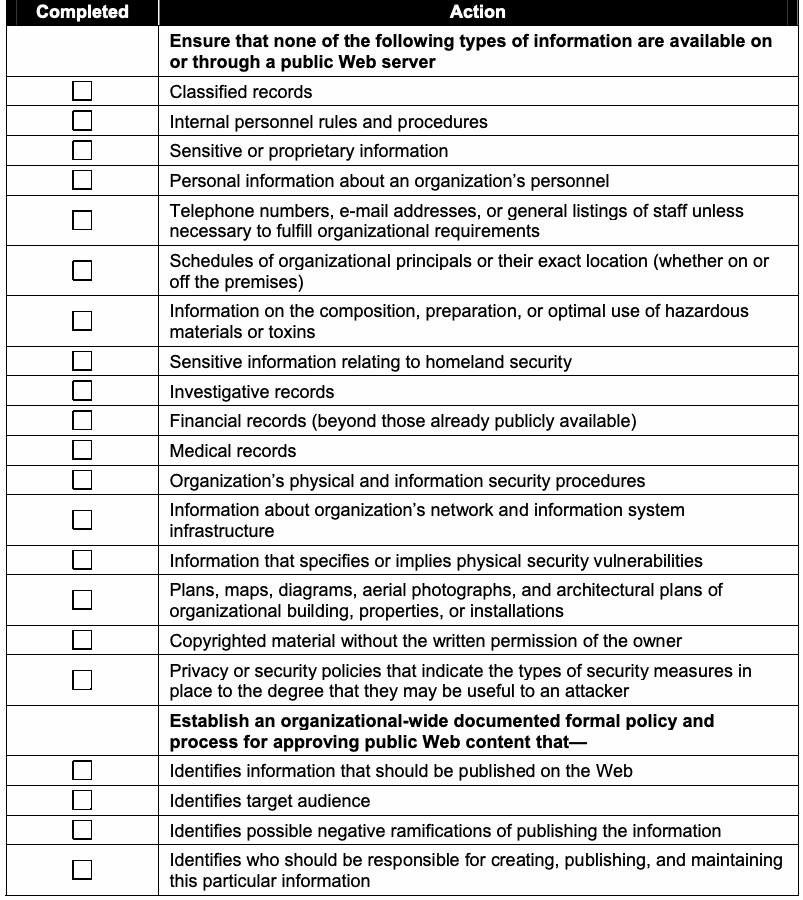
| 完了 | アクション |
| 次の種類の情報が | |
| 公開Webサーバー上または公開Webサーバーを通じて入手できないことを確認する | |
| 機密指定記録 | |
| 内部の人事規則および手順 | |
| 機密情報または専有情報 | |
| 組織の職員に関する個人情報 | |
| 職員の電話番号、電子メールアドレス、または一般名簿（ただし | |
| 組織の要件を満たすために必要な場合を除く） | |
| 組織の幹部の予定または正確な所在（構内か | |
| 構外かを問わない） | |
| 危険物質または毒素の組成、調製、または最適な使用方法に関する | |
| 情報 | |
| 国土安全保障に関する機密情報 | |
| 調査記録 | |
| 財務記録（すでに公開されているものを除く） | |
| 医療記録 | |
| 組織の物理的セキュリティおよび情報セキュリティの手順 | |
| 組織のネットワークおよび情報システムの | |
| インフラストラクチャに関する情報 | |
| 物理的セキュリティ上の脆弱性を明示または示唆する情報 | |
| 組織の建物、敷地、または施設の計画、地図、図表、航空写真、および建築計画 | |
| 所有者の書面による許可を得ていない著作権保護対象の資料 | |
| 攻撃者に有用となり得る程度に、導入済みセキュリティ対策の種類を示す | |
| プライバシーポリシーまたはセキュリティポリシー | |
| 組織全体に適用される文書化済みの正式なポリシーと | |
| 公開Webコンテンツを承認するプロセスを確立する。このプロセスは次の事項を満たす。 | |
| Webで公開すべき情報を特定する | |
| 対象読者を特定する | |
| 情報を公開することによる悪影響の可能性を特定する | |
| この特定情報の作成、公開、および維持の責任を誰が負うべきかを特定する | |
| Completed | Action |
| Provides guidelines on styles and formats appropriate for Web publishing | |
| Provides for appropriate review of the information for sensitivity and | |
| distribution/release controls (including the sensitivity of the information in | |
| aggregate) | |
| Determines the appropriate access and security controls | |
| Provides guidance on the information contained within the source code of the | |
| Web content | |
| Maintain Web user privacy | |
| Maintain a published privacy policy | |
| Prohibit the collection of personally identifying data without the explicit | |
| permission of the user and collect only the data that is absolutely needed | |
| Prohibit the use of “persistent” cookies | |
| Use the session cookie only if it is clearly identified in published privacy policy | |
| Mitigate indirect attacks on content | |
| Ensure users of the site are aware of the dangers of phishing and pharming | |
| attacks and how to avoid them | |
| Validate official communication by personalizing emails and providing unique | |
| identifying (but not confidential) information only the organization and user | |
| should know | |
| Use digital signatures on e-mail if appropriate | |
| Perform content validation within the Web application to prevent more | |
| sophisticated phishing attacks (e.g., cross-site scripting based attacks) | |
| Personalize Web content to aid in users’ identifying fraudulent Web sites | |
| Use token-based or mutual authentication if applicable | |
| Suggest the use of Web browsers or browser toolbars with phishing/ | |
| pharming protection | |
| Use current versions of DNS software with the latest security patches | |
| Install server-side DNS protection mechanisms | |
| Monitor organizational domains and similar domains | |
| Simplify the structure of organization domain names | |
| Use secure connections for logins | |
| If necessary, engage a vendor to provide stronger anti-phishing/ | |
| anti-pharming measures | |
| Client-side active content security considerations | |
| Weigh the risks and benefits of client-side active content | |
| Take no actions without the express permission of user | |
| When possible, only use widely-adopted active content such as JavaScript, | |
| PDF, and Flash | |
| When possible, provide alternatives (e.g., HTML provided along with PDF) | |
| Maintain server-side active content security | |
| Only simple, easy-to-understand code should be used | |
| Limited or no reading or writing to the file system should be permitted | |
| Limited or no interaction with other programs (e.g., sendmail) should be | |
| permitted | |
| There should be no requirement to run with suid privileges on Unix or Linux | |
| Explicit path names should be used (i.e., does not rely on path variable) |
原本PDFの抜粋画像
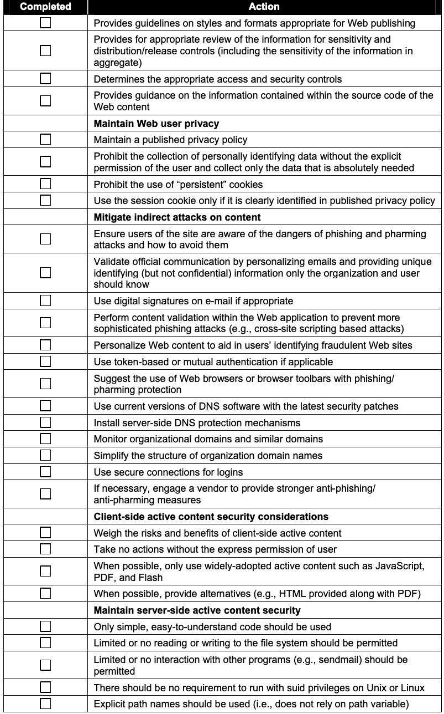
| 完了 | アクション |
| Web公開に適したスタイルおよび書式のガイドラインを提供する | |
| 情報の機密性および | |
| 配布／公開の制御（情報を集約した場合の機密性を含む）について適切にレビューする | |
| 適切なアクセス制御およびセキュリティ制御を決定する | |
| Webコンテンツのソースコードに含まれる情報について | |
| 指針を提供する | |
| Webユーザーのプライバシーを維持する | |
| 公開済みのプライバシーポリシーを維持する | |
| 本人の明示的な許可なしに個人識別情報を収集することを禁止し、 | |
| 絶対に必要なデータだけを収集する | |
| 「永続」Cookieの使用を禁止する | |
| 公開済みプライバシーポリシーに明確に記載されている場合に限り、セッションCookieを使用する | |
| コンテンツに対する間接攻撃を軽減する | |
| サイトのユーザーがフィッシング攻撃およびファーミング攻撃の危険性とその回避方法を | |
| 把握していることを確認する | |
| 電子メールを個別化し、一意な識別情報を提示して公式な連絡であることを検証する | |
| （機密情報ではなく）、組織とユーザーだけが知っている | |
| 情報を提示する | |
| 適切な場合、電子メールにデジタル署名を使用する | |
| より高度なフィッシング攻撃（例: クロスサイトスクリプティングに基づく攻撃）を防ぐため、Webアプリケーション内でコンテンツ検証を | |
| 実行する | |
| ユーザーが不正なWebサイトを識別しやすくするため、Webコンテンツを個別化する | |
| 適用可能な場合、トークンベース認証または相互認証を使用する | |
| フィッシング／ファーミング対策機能を備えたWebブラウザーまたはブラウザーツールバーの使用を | |
| 推奨する | |
| 最新のセキュリティパッチが適用された現行バージョンのDNSソフトウェアを使用する | |
| サーバー側DNS保護機構を導入する | |
| 組織のドメインおよび類似ドメインを監視する | |
| 組織のドメイン名の構造を簡素化する | |
| ログインにはセキュア接続を使用する | |
| 必要に応じて、より強力なフィッシング／ | |
| ファーミング対策を提供するベンダーを利用する | |
| クライアント側Active Contentのセキュリティ上の考慮事項 | |
| クライアント側Active Contentのリスクと利点を比較検討する | |
| ユーザーの明示的な許可なしに操作を行わない | |
| 可能な場合は、JavaScript、 | |
| PDF、Flashなど、広く採用されているActive Contentだけを使用する | |
| 可能な場合は、代替手段を提供する（例: PDFとともにHTMLも提供する） | |
| サーバー側Active Contentのセキュリティを維持する | |
| 単純で理解しやすいコードだけを使用すべきである | |
| ファイルシステムの読み取りまたは書き込みは制限するか、許可すべきではない | |
| 他のプログラム（例: sendmail）とのやり取りは制限するか、 | |
| 許可すべきではない | |
| UnixまたはLinuxでsuid権限を使って実行する要件があってはならない | |
| 明示的なパス名を使用すべきである（すなわち、path変数に依存しない） |
| Completed | Action |
| No directories have both write and execute permissions | |
| All executable files are placed in a dedicated folders | |
| SSIs are disabled or the execute function is disabled | |
| All user input is validated | |
| Web content generation code should be scanned or audited | |
| Dynamically created pages do not create dangerous metacharacters | |
| Character set encoding should be explicitly set in each page | |
| User data should be scanned to ensure it contains only expected input, (e.g., | |
| a-z, A-Z, 0-9); care should be taken with special characters or HTML tags | |
| Cookies should be examined for any special characters | |
| Encryption mechanism is used to encrypt passwords entered through scripts | |
| forms | |
| For Web applications that are restricted by username and password, none of | |
| the Web pages in the application should be accessible without executing the | |
| appropriate login process | |
| All sample scripts are removed | |
| No third-party scripts or executable code are used without verifying the | |
| source code |
原本PDFの抜粋画像
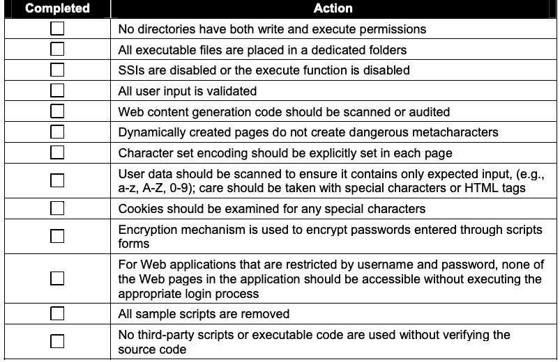
| 完了 | アクション |
| 書き込み権限と実行権限の両方を持つディレクトリがない | |
| すべての実行可能ファイルを専用フォルダーに配置する | |
| SSIを無効にするか、実行機能を無効にする | |
| すべてのユーザー入力を検証する | |
| Webコンテンツ生成コードをスキャンまたは監査すべきである | |
| 動的に作成されるページに危険なメタ文字を生成させない | |
| 文字セットのエンコーディングを各ページで明示的に設定すべきである | |
| ユーザーデータをスキャンし、予期される入力だけを含むことを確認すべきである（例: | |
| a-z、A-Z、0-9）。特殊文字またはHTMLタグには注意を払うべきである | |
| Cookieに特殊文字が含まれていないか調べるべきである | |
| スクリプト形式の | |
| フォームから入力されたパスワードを暗号化するため暗号化機構を使用する | |
| ユーザー名およびパスワードでアクセスが制限されるWebアプリケーションでは、 | |
| 適切なログイン処理を実行しない限り、アプリケーション内のWebページにアクセス | |
| できないようにすべきである | |
| すべてのサンプルスクリプトを削除する | |
| ソースコードを検証しないままサードパーティースクリプトまたは実行可能コードを使用 | |
| しない |
7. Using Authentication and Encryption Technologies
7. 認証および暗号化技術の使用
未レビュー訳Public Web servers often support a range of technologies for identifying and authenticating users with differing privileges for accessing information. Some of these technologies are based on cryptographic functions that can provide an encrypted channel between a Web browser client and a Web server that supports encryption.
公開Webサーバーは、異なる権限を持つユーザーが情報にアクセスする際に、ユーザーを識別および認証するためのさまざまな技術をサポートしていることが多い。これらの技術の中には、暗号機能を利用して、暗号化をサポートするWebブラウザークライアントとWebサーバーの間に暗号化チャネルを提供するものがある。
Without user authentication, organizations will not be able to restrict access to specific information to authorized users. All information that resides on a public Web server will then be accessible by anyone with access to the server. In addition, without some process to authenticate the server, users will not be able to determine if the server is the “authentic” Web server or a counterfeit version operated by a malicious entity.
ユーザー認証がなければ、組織は特定情報へのアクセスを許可されたユーザーに制限できない。すると、公開Webサーバー上のすべての情報に、そのサーバーへアクセスできる誰もがアクセスできる。また、サーバーを認証する何らかのプロセスがなければ、ユーザーはそのサーバーが「真正な」Webサーバーなのか、悪意ある主体が運用する偽造版なのかを判断できない。
Encryption can be used to protect information traversing the connection between a Web browser client and a public Web server. Without encryption, anyone with access to the network traffic can determine, and possibly alter, the content of sensitive information, even if the user accessing the information has been authenticated carefully. This may violate the confidentiality and integrity of critical information.
Webブラウザークライアントと公開Webサーバーの間の接続を通過する情報を保護するために、暗号化を使用できる。暗号化がなければ、ネットワークトラフィックにアクセスできる誰もが、情報にアクセスするユーザーが慎重に認証されていたとしても、機密情報の内容を把握し、場合によっては改ざんできる。これは重要情報の機密性および完全性を損なう可能性がある。
7.1 Determining Authentication and Encryption Requirements
7.1 認証および暗号化の要件の決定
Organizations should periodically examine all information accessible on the public Web server and determine the necessary security requirements. While doing so, the organization should identify information that shares the same security and protection requirements. For sensitive information, the organization should determine the users or user groups that should have access to each set of resources.
組織は、公開Webサーバー上でアクセス可能なすべての情報を定期的に調査し、必要なセキュリティ要件を決定すべきである。その際、同じセキュリティ要件および保護要件を共有する情報を特定すべきである。機密情報については、各リソース群にアクセスすべきユーザーまたはユーザーグループを決定すべきである。
For information that requires some level of user authentication, the organization should determine which of the following technologies or methods would provide the appropriate level of authentication and encryption. Each has its own unique benefits and costs that should be weighed carefully with client and organizational requirements and policies. It may be desirable to use some authentication methods in combination.
何らかのユーザー認証が必要な情報について、組織は適切なレベルの認証および暗号化を提供する次の技術または方式から選ぶべきである。それぞれ固有の利点とコストがあるため、クライアントおよび組織の要件とポリシーに照らして慎重に比較検討すべきである。認証方式を組み合わせて使用すると望ましい場合もある。
This guide discusses the authentication mechanisms most commonly associated with public Web servers and Web applications. More advanced authentication mechanisms can be supported by these servers and applications and are discussed in NIST SP 800-63.46
このガイドでは、公開WebサーバーおよびWebアプリケーションに最も一般的に関連付けられる認証機構を説明する。これらのサーバーおよびアプリケーションでは、より高度な認証機構もサポートでき、それらについてはNIST SP 800-63で説明されている。46
未レビュー訳7.2 Address-Based Authentication
7.2 アドレスベース認証
The simplest authentication mechanism that is supported by most Web servers is address-based authentication. Access control is based on the IP address and/or hostname of the host requesting information. Although it is easy to implement for small groups of users, address authentication can be unwieldy for Web sites that have a large potential user population (i.e., most public Web servers). It is susceptible to several types of attacks, including IP spoofing and DNS poisoning. This type of authentication should be used only where minimal security is required, unless it is used in conjunction with stronger authentication methods.
大半のWebサーバーがサポートする最も単純な認証機構は、アドレスベース認証である。アクセス制御は、情報を要求するホストのIPアドレスおよび／またはホスト名に基づく。少人数のユーザーグループには実装しやすいが、潜在的なユーザー数が多いWebサイト（すなわち大半の公開Webサーバー）では扱いにくい場合がある。IPスプーフィングやDNSポイズニングなど、複数種類の攻撃に対して脆弱である。この認証方式は、より強力な認証方式と併用する場合を除き、最小限のセキュリティしか必要としない場合に限って使用すべきである。
7.3 Basic Authentication
7.3 基本認証
The basic authentication technology uses the Web server content’s directory structure. Typically, all files in the same directory are configured with the same access privileges. A requesting user provides a recognized user identification and password for access to files in a given directory. More restrictive access control can be enforced at the level of a single file within a directory if the Web server software provides this capability. Each vendor’s Web server software has its own method and syntax for defining and using this basic authentication mechanism.
基本認証技術は、Webサーバーコンテンツのディレクトリ構造を使用する。通常、同じディレクトリにあるすべてのファイルには同じアクセス権限が設定される。ユーザーは、特定のディレクトリ内のファイルにアクセスするため、認識済みのユーザー識別情報とパスワードを提示する。Webサーバーソフトウェアがその機能を提供する場合、ディレクトリ内の単一ファイルのレベルで、より厳格なアクセス制御を適用できる。各ベンダーのWebサーバーソフトウェアには、この基本認証機構を定義し使用するための独自の方法と構文がある。
From a security perspective, the main drawback of this technology is that all password information is transferred in an encoded, rather than an encrypted, form. Anyone who knows the standardized encoding scheme can decode the password after capturing it with a network sniffer. Furthermore, any Web content is transmitted as unencrypted plaintext, so this content also can be captured, violating confidentiality. These limitations can be overcome using basic authentication in conjunction with SSL/TLS (see Section 7.5). Basic authentication is supported by standard-compliant Web browsers [Koss00]. Basic authentication is useful for protecting information from malicious bots (see Section 5.2.4) because the bots should not have the necessary credentials to access the protected directories. However, this mechanism should not be considered secure against more determined and sophisticated attackers.
セキュリティの観点から見たこの技術の主な欠点は、すべてのパスワード情報が暗号化ではなくエンコードされた形式で転送されることである。標準化されたエンコード方式を知っていれば、ネットワークスニファーでパスワードを取得した後にデコードできる。さらに、Webコンテンツはすべて暗号化されていない平文として送信されるため、コンテンツも取得され、機密性が損なわれる可能性がある。これらの制約は、SSL/TLSと組み合わせて基本認証を使用すれば克服できる（セクション7.5を参照）。基本認証は標準準拠のWebブラウザーでサポートされている[Koss00]。保護されたディレクトリにアクセスするための認証情報をボットが持たないはずなので、この機構は悪意あるボットから情報を保護するのに役立つ（セクション5.2.4を参照）。ただし、より執拗で高度な攻撃者に対して、この機構を安全と見なすべきではない。
7.4 Digest Authentication
7.4 ダイジェスト認証
Because of the drawbacks with basic authentication, an improved technique known as digest authentication was introduced in version 1.1 of the HTTP protocol.47 Digest authentication uses a challenge-response mechanism for user authentication. Under this approach, a nonce or arbitrary value is sent to the user, who is prompted for an ID and password, as with basic authentication. However, in this case, the information entered by the user is concatenated and a cryptographic hash of the result is formed. This hash is concatenated with the nonce and a hash of the requested method and URL, and the result is then rehashed as a response value that is sent to the server.
基本認証の欠点を受けて、HTTPプロトコルのバージョン1.1では、ダイジェスト認証と呼ばれる改良方式が導入された。47 ダイジェスト認証は、ユーザー認証にチャレンジ・レスポンス方式を用いる。この方式では、基本認証と同様に、nonce（ナンス値）または任意の値がユーザーに送信され、IDとパスワードの入力が求められる。ただし、この場合、ユーザーが入力した情報を連結し、その結果の暗号学的ハッシュを生成する。このハッシュをnonceおよび要求されたメソッドとURLのハッシュに連結し、その結果を再度ハッシュして応答値を生成し、サーバーに送信する。
未レビュー訳Because the user’s password is not sent in the clear, it cannot be directly sniffed from the network. The user’s password is not needed by the server to authenticate the user—only the hashed value of the user ID and password. Because the nonce can serve as an indicator of timeliness (e.g., it can be composed of date and time information), replay attacks are also thwarted. Unfortunately, all other information is sent in the clear and is vulnerable to interception and alteration. Digest authentication is also susceptible to offline dictionary attacks (see Section 7.6) where the attacker tries various passwords in an attempt to recreate the captured digest value. These limitations can be overcome using digest authentication in conjunction with SSL/TLS (see Section 7.5).48 Like basic authentication, digest authentication is useful for protecting information from malicious bots (see Section 5.2.4).
ユーザーのパスワードは平文で送信されないため、ネットワーク上で直接盗聴することはできない。ユーザーを認証するためにサーバーがパスワードを必要とするわけではなく、ユーザーIDとパスワードのハッシュ値だけでよい。nonceは鮮度の指標として機能し得る（例えば、日時情報で構成できる）ため、リプレイ攻撃も防止される。残念ながら、それ以外のすべての情報は平文で送信され、傍受や改ざんに対して脆弱である。ダイジェスト認証は、オフライン辞書攻撃（Section 7.6を参照）にも脆弱であり、攻撃者は取得したダイジェスト値を再現しようとして、さまざまなパスワードを試す。これらの制約は、ダイジェスト認証をSSL/TLSと併用することで克服できる（Section 7.5を参照）。48 基本認証と同様に、ダイジェスト認証は悪意のあるボットから情報を保護するのに有用である（Section 5.2.4を参照）。
未レビュー訳7.5 SSL/TLS
7.5 SSL/TLS
The SSL and TLS protocols provide server and client authentication and encryption of communications.49 SSL was first introduced by Netscape Communications in 1994 and was revised twice (SSL version 3 is the current version).50 In 1996, the Internet Engineering Task Force (IETF) established the TLS working group to formalize and advance the SSL protocol to the level of Internet standard. The TLS protocol version 1.0 is formally specified in IETF Request for Comments (RFC) 2246,51 which was published in 1999 and is based in large part on SSL version 3. SSL version 3 and TLS version 1 are essentially identical and are discussed together in this document. Most major Internet components, such as Web browsers, support the use of both SSL 3 and TLS 1.0. TLS 1.1, specified in RFC 4436, was released in April 2006, and future versions of Web browsers will likely support it.
SSLおよびTLSプロトコルは、サーバーとクライアントの認証、および通信の暗号化を提供する。49 SSLは1994年にNetscape Communicationsによって初めて導入され、二度改訂された（SSL version 3が現行バージョンである）。50 1996年、Internet Engineering Task Force（IETF）は、SSLプロトコルを正式化し、インターネット標準の水準に発展させるため、TLSワーキンググループを設立した。TLS protocol version 1.0はIETF Request for Comments（RFC）2246で正式に規定されており、51 1999年に公開されたこの仕様は、主にSSL version 3に基づいている。SSL version 3とTLS version 1は実質的に同一であり、本書ではまとめて扱う。Webブラウザーなど、インターネットの主要な構成要素のほとんどは、SSL 3とTLS 1.0の両方をサポートしている。TLS 1.1（RFC 4436で規定）は2006年4月に公開され、将来のバージョンのWebブラウザーでサポートされる可能性が高い。
未レビュー訳TCP/IP governs the transport and routing of data over the Internet. Other protocols, such as HTTP, LDAP, and Internet Message Access Protocol (IMAP), run “on top of” TCP/IP in that they all use TCP/IP to support typical application tasks, such as displaying Web pages or delivering e-mail messages. Thus, SSL/TLS can support more than just secure Web communications. Figure 7-1 shows how SSL/TLS fits between the application and network/transport layers of the Internet protocol suite.
TCP/IPは、インターネット上のデータの転送とルーティングを規定する。HTTP、LDAP、Internet Message Access Protocol（IMAP）などの他のプロトコルは、Webページの表示や電子メールの配信といった一般的なアプリケーションのタスクを支えるためにTCP/IPを使用することから、TCP/IPの「上位」で動作する。したがって、SSL/TLSは安全なWeb通信以外もサポートできる。Figure 7-1に、インターネット・プロトコル・スイートのアプリケーション層とネットワーク／トランスポート層の間にSSL/TLSがどのように位置するかを示す。
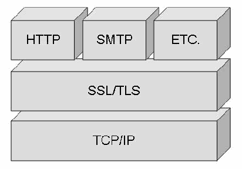
インターネットプロトコルの階層図。下からTCP/IP、SSL/TLS、その上にHTTP、SMTPなどのアプリケーションプロトコルを配置している。
Figure 7-1. SSL/TLS Location within the Internet Protocol Stack
Figure 7-1. インターネット・プロトコル・スタック内におけるSSL/TLSの位置
7.5.1 SSL/TLS Capabilities
7.5.1 SSL/TLSの機能
SSL/TLS provides the following capabilities to HTTP and other application layer protocols [SSL98]:
SSL/TLSは、HTTPおよびその他のアプリケーション層プロトコルに次の機能を提供する [SSL98]：
(cid:31) Server Authentication—SSL/TLS allows a Web client (user) to confirm a Web server’s identity. SSL/TLS-enabled Web clients (browsers) can employ standard techniques of public key cryptography to check that a server’s name and public key are contained in a valid certificate issued by a CA listed in the client’s list of trusted CAs. This confirmation might be important if the user, for example, is sending a credit card number over the network and wants to confirm the receiving server’s identity.
(cid:31) サーバー認証—SSL/TLSにより、Webクライアント（ユーザー）はWebサーバーの身元を確認できる。SSL/TLS対応のWebクライアント（ブラウザー）は、公開鍵暗号の標準的な技法を用いて、サーバー名と公開鍵が有効な証明書に含まれており、その証明書がクライアントの信頼するCAの一覧にあるCAによって発行されたことを確認できる。例えば、ユーザーがネットワーク経由でクレジットカード番号を送信する場合、受信側サーバーの身元を確認することが重要になることがある。
未レビュー訳(cid:31) Client Authentication—SSL/TLS allows a Web server to confirm a user’s identity using the same techniques as those used for server authentication by reversing the roles. SSL/TLS-enabled Web server software can confirm that a client’s certificate is valid and was issued by a CA listed in the server’s list of trusted CAs.52 This confirmation might be important if the server, for example, is a bank that is sending confidential financial information to a customer and wants to confirm the recipient’s identity.53 If client authentication is to be performed, server authentication must also be performed.
(cid:31) クライアント認証—SSL/TLSにより、サーバー認証と同じ技法を役割を逆にして用い、Webサーバーはユーザーの身元を確認できる。SSL/TLS対応のWebサーバーソフトウェアは、クライアントの証明書が有効であり、サーバーの信頼するCAの一覧にあるCAによって発行されたことを確認できる。52 例えば、サーバーが銀行で、顧客に機密性の高い金融情報を送信する場合、受信者の身元を確認することが重要になることがある。53 クライアント認証を行う場合は、サーバー認証も行わなければならない。
未レビュー訳(cid:31) Communication Encryption—SSL/TLS can encrypt most of the information being transmitted between a Web browser (client) and a Web server or even between two Web servers. With an appropriate encryption algorithm, SSL/TLS provides a high degree of confidentiality. In addition, all data sent over an encrypted SSL/TLS connection is protected with a mechanism for detecting tampering; that is, for automatically determining if the data has been altered in transit.
(cid:31) 通信の暗号化—SSL/TLSは、Webブラウザー（クライアント）とWebサーバー間、または二つのWebサーバー間で送信される情報の大部分を暗号化できる。適切な暗号アルゴリズムを用いれば、SSL/TLSは高い機密性を提供する。さらに、暗号化されたSSL/TLS接続を介して送信されるすべてのデータは、改ざんを検知する仕組みによって保護される。つまり、転送中にデータが変更されたかどうかを自動的に判定できる。
未レビュー訳7.5.2 Weaknesses of SSL/TLS
7.5.2 SSL/TLSの弱点
Several limitations are inherent with SSL/TLS. Packets are encrypted at the TCP layer, so IP layer information is not encrypted. Although this protects the Web data being transmitted, a person monitoring an SSL/TLS session can determine both the sender and receiver via the unencrypted IP address information. In addition, SSL/TLS only protects data while it is being transmitted, not when it is stored at either endpoint. Thus, the data is still vulnerable while in storage (e.g., a credit card database) unless additional safeguards are taken at the endpoints.
SSL/TLSにはいくつかの固有の制約がある。パケットはTCP層で暗号化されるため、IP層の情報は暗号化されない。送信中のWebデータは保護されるものの、SSL/TLSセッションを監視する者は、暗号化されていないIPアドレス情報から送信元と受信先を特定できる。また、SSL/TLSがデータを保護するのは転送中に限られ、いずれかの端点で保存されている間は保護しない。したがって、端点で追加の保護措置を講じない限り、データは保存中（例えば、クレジットカードのデータベース内）も脆弱なままである。
If SSL/TLS is implemented or used incorrectly, the communications intended to be protected may be vulnerable to a “man in the middle” attack. This occurs when a malicious entity intercepts all communication between the Web client and the Web server with which the client is attempting to establish an SSL/TLS connection. The attacker intercepts the legitimate keys that are passed back and forth during the SSL/TLS handshake (see Section 7.5.3) and substitutes the attacker’s keys, making it appear to the Web client that the attacker is the Web server and to the Web server that the attacker is the Web client [SSL98]. If SSL/TLS is implemented and used properly, it is not susceptible to man-in-the-middle attacks.
SSL/TLSの実装または使用が不適切な場合、保護されるはずの通信が「中間者」攻撃に対して脆弱になることがある。この攻撃では、悪意のある者が、Webクライアントと、クライアントがSSL/TLS接続を確立しようとしているWebサーバーとの間のすべての通信を傍受する。攻撃者は、SSL/TLSハンドシェイク中にやり取りされる正規の鍵（Section 7.5.3を参照）を傍受して自分の鍵に置き換え、Webクライアントには攻撃者がWebサーバーであるように、Webサーバーには攻撃者がWebクライアントであるように見せかける [SSL98]。SSL/TLSが適切に実装され、使用されていれば、中間者攻撃の影響を受けない。
未レビュー訳The encrypted information exchanged at the beginning of the SSL/TLS handshake is actually encrypted with the malicious entity’s public key or private key, rather than the Web client’s or Web server’s real keys. The attacker program ends up establishing one set of session keys for use with the real Web server, and a different set of session keys for use with the Web client. This allows the attacker program not only to read all the data that flows between the Web client and the real Web server but also to change the data without being detected. This threat can be mitigated if clients rely upon server certificates issued by trusted CAs or on self-signed certificates obtained by secure mechanisms. Presentation of a self-signed certificate may be an indication that a man-in-the-middle attack is underway. Browsers may perform some checks automatically, but they cannot be relied upon in all instances.
SSL/TLSハンドシェイクの開始時に交換される暗号化情報は、実際にはWebクライアントまたはWebサーバーの本来の鍵ではなく、悪意のある者の公開鍵または秘密鍵で暗号化されている。攻撃プログラムは、実際のWebサーバーとの通信用に一組のセッション鍵を確立し、Webクライアントとの通信用には別の一組を確立する。その結果、攻撃プログラムはWebクライアントと実際のWebサーバー間を流れるすべてのデータを読み取れるだけでなく、検知されずにデータを変更できる。この脅威は、クライアントが信頼されたCAの発行したサーバー証明書、または安全な方法で取得した自己署名証明書を信頼することで軽減できる。自己署名証明書が提示された場合、中間者攻撃が進行中である可能性がある。ブラウザーが一部の確認を自動的に行うことはあるが、あらゆる状況でそれに頼ることはできない。
Even without performing a man-in-the-middle attack, attackers may attempt to trick users into accessing an invalid Web site. There are several possible methods for attack, including—
中間者攻撃を行わなくても、攻撃者はユーザーをだまして無効なWebサイトにアクセスさせようとすることがある。攻撃には、次のようないくつかの方法がある—
未レビュー訳(cid:31) Presenting a self-signed certificate unknown to the user and getting the user to accept it as legitimate. Although the Web browser can be configured to display a warning when a self-signed certificate is presented, organizations that rely on self-signed certificates might instruct users to ignore such warnings.
(cid:31) ユーザーの知らない自己署名証明書を提示し、それを正当なものとして受け入れさせる。自己署名証明書が提示されたときに警告を表示するようWebブラウザーを設定できるが、自己署名証明書に依存する組織は、そのような警告を無視するようユーザーに指示することがある。
未レビュー訳(cid:31) Exploiting vulnerabilities in a Web browser so that the Web site appears to be valid to an untrained user
(cid:31) Webブラウザーの脆弱性を悪用し、訓練を受けていないユーザーにはWebサイトが正当なものに見えるようにする。
未レビュー訳(cid:31) Taking advantage of a cross-site scripting vulnerability on a legitimate Web site. The Web browser will be accessing two different sites, but it will appear to the user that only the legitimate site is being accessed.
(cid:31) 正当なWebサイトにあるクロスサイト・スクリプティングの脆弱性を悪用する。Webブラウザーは二つの異なるサイトにアクセスするが、ユーザーには正当なサイトだけにアクセスしているように見える。
未レビュー訳(cid:31) Taking advantage of the certificate approval process to receive a valid certificate and apply it to the attacker’s own site. By using a valid certificate on what appears to be a valid site, the certificate will validate, and the user would have to somehow realize that the site being accessed is malicious.
(cid:31) 証明書の承認プロセスを悪用して有効な証明書を取得し、それを攻撃者自身のサイトに適用する。有効なサイトに見えるサイトで有効な証明書を使用すると、証明書の検証には合格するため、アクセス先が悪意のあるサイトであることにユーザーが何らかの方法で気付く必要がある。
未レビュー訳SSL spoofing attacks can occur without requiring any user intervention. As a proof of concept in 2005, the Shmoo Group registered an internationalized domain name that looked similar to a valid site when displayed in a browser. The SSL certificate matched the internationalized domain name of the Web site, so no user warning occurred. In the address bar, the URL appeared almost identical to that of the original spoofed Web site [NVD06].
SSLスプーフィング攻撃は、ユーザーの操作を必要とせずに発生することがある。概念実証として、Shmoo Groupは2005年に、ブラウザーで表示したときに正当なサイトに似て見える国際化ドメイン名を登録した。そのWebサイトのSSL証明書は国際化ドメイン名と一致していたため、ユーザーへの警告は表示されなかった。アドレスバーでは、URLが元のスプーフィング対象WebサイトのURLとほとんど同じに見えた [NVD06]。
Users can prevent less sophisticated attacks by confirming the validity of a certificate54 before relying on the security of an SSL/TLS session and rejecting certificates for which the browser presents warnings.55 Browsers perform some checks automatically, but they cannot be relied upon in all instances.
ユーザーは、SSL/TLSセッションのセキュリティを信頼する前に証明書の有効性を確認し54、ブラウザーが警告を表示する証明書を拒否することで、より単純な攻撃を防ぐことができる。55 ブラウザーはいくつかの確認を自動で行うが、あらゆる状況でそれに頼ることはできない。
未レビュー訳7.5.3 Example SSL/TLS Session
7.5.3 SSL/TLSセッションの例
The SSL/TLS protocols use a combination of public key and symmetric key encryption. Symmetric key encryption is much faster than public key encryption, whereas public key encryption is better suited to provide authentication and establish symmetric keys. An SSL/TLS session always begins with an exchange of messages called the SSL/TLS handshake. The handshake allows the server to authenticate itself to the client using public key techniques; this allows the client and the server to cooperate in the creation of symmetric keys used for rapid encryption, decryption, and tamper detection during the session that follows. The handshake also allows the client to authenticate itself to the server.
SSL/TLSプロトコルは、公開鍵暗号と共通鍵暗号を組み合わせて使用する。共通鍵暗号は公開鍵暗号よりはるかに高速である一方、公開鍵暗号は認証と共通鍵の確立に適している。SSL/TLSセッションは必ず、SSL/TLSハンドシェイクと呼ばれるメッセージ交換から始まる。ハンドシェイクにより、サーバーは公開鍵暗号の技法を用いてクライアントに対して自らを認証できる。また、これによりクライアントとサーバーは、後続のセッション中に高速な暗号化、復号および改ざん検知に用いる共通鍵の作成に協力できる。ハンドシェイクでは、クライアントがサーバーに対して自らを認証することもできる。
The exact programmatic details of the messages exchanged during the SSL/TLS handshake are beyond the scope of this document. However, the basic steps involved can be summarized as follows [SSL98]:
SSL/TLSハンドシェイク中に交換されるメッセージのプログラム上の詳細は、本書の範囲を超える。ただし、基本的な手順は次のように要約できる [SSL98]：
1.“The client sends the server the client’s SSL/TLS version number, cipher settings, randomly generated data, and other information the server needs to communicate with the client using SSL/TLS.”
1.「クライアントは、クライアントのSSL/TLSバージョン番号、暗号設定、ランダムに生成されたデータ、およびサーバーがSSL/TLSを使用してクライアントと通信するために必要なその他の情報をサーバーに送信する。」
2.“The server sends the client the server’s SSL/TLS version number, cipher settings, randomly generated data, and other information the client needs to communicate with the server over SSL/TLS. The server also sends its own certificate and, if the client is requesting a server resource that requires client authentication, requests the client’s certificate.”
2.「サーバーは、サーバーのSSL/TLSバージョン番号、暗号設定、ランダムに生成されたデータ、およびクライアントがSSL/TLSを介してサーバーと通信するために必要なその他の情報をクライアントに送信する。また、サーバーは自身の証明書を送信し、クライアントがクライアント認証を必要とするサーバー資源を要求している場合は、クライアントの証明書を要求する。」
3.“The client uses some of the information sent by the server to authenticate the server. If the server cannot be authenticated, the user is warned of the problem and informed that an encrypted and authenticated connection cannot be established. If the server can be successfully authenticated, the client goes on to Step 4.”
3.「クライアントは、サーバーから送信された情報の一部を使用してサーバーを認証する。サーバーを認証できない場合、問題についてユーザーに警告し、暗号化され認証された接続を確立できないことを知らせる。サーバーの認証に成功した場合、クライアントはStep 4に進む。」
4.“Using all data generated in the handshake to this point, the client (with the cooperation of the server, depending on the cipher being used) creates the premaster secret for the session, encrypts it with the server’s public key (obtained from the server’s certificate, sent in Step 2), and sends the encrypted premaster secret to the server.”
4.「ここまでのハンドシェイクで生成されたすべてのデータを使用して、クライアントは（使用する暗号によってはサーバーと協力して）セッションのプレマスターシークレットを作成し、（Step 2で送信された）サーバーの証明書から取得したサーバーの公開鍵でそれを暗号化し、暗号化されたプレマスターシークレットをサーバーに送信する。」
5.“If the server has requested client authentication (an optional step in the handshake), the client also signs another piece of data that is unique to this handshake and known by both the client and server. In this case, the client sends both the signed data and the client's own certificate to the server, along with the encrypted premaster secret.”
5.「サーバーがクライアント認証を要求していた場合（ハンドシェイクでは任意の手順）、クライアントはさらに、このハンドシェイクに固有で、クライアントとサーバーの両方が知っている別のデータに署名する。この場合、クライアントは暗号化されたプレマスターシークレットとともに、署名済みデータおよびクライアント自身の証明書をサーバーに送信する。」
6.“If the server has requested client authentication, the server attempts to authenticate the client. If the client cannot be authenticated, the session is terminated. If the client can be successfully authenticated, the server uses its private key to decrypt the premaster secret, then performs a series of steps (which the client also performs, starting from the same premaster secret) to generate the master secret.”
6.「サーバーがクライアント認証を要求していた場合、サーバーはクライアントの認証を試みる。クライアントを認証できなければ、セッションは終了する。クライアントの認証に成功した場合、サーバーは秘密鍵を使用してプレマスターシークレットを復号し、その後、一連の手順（クライアントも同じプレマスターシークレットから同じ手順を実行する）を行ってマスターシークレットを生成する。」
7.“Both the client and the server use the master secret to generate the session keys, which are symmetric keys used to encrypt and decrypt information exchanged during the SSL/TLS session and to verify its integrity—that is, to detect any changes in the data between the time it was sent and the time it is received over the SSL/TLS connection.”
7.「クライアントとサーバーはどちらも、マスターシークレットを使用してセッション鍵を生成する。セッション鍵はSSL/TLSセッション中に交換される情報の暗号化と復号、および完全性の検証に使う共通鍵である。完全性の検証とは、SSL/TLS接続を介してデータが送信された時点から受信された時点までの間に変更があったかどうかを検知することである。」
8.“The client sends a message to the server informing it that future messages from the client will be encrypted with the session key. It then sends a separate (encrypted) message indicating that the client portion of the handshake is finished.”
8.「クライアントは、今後クライアントから送信されるメッセージをセッション鍵で暗号化することをサーバーに通知するメッセージを送信する。次に、クライアント側のハンドシェイクが完了したことを示す別の（暗号化された）メッセージを送信する。」
9.“The server sends a message to the client informing it that future messages from the server will be encrypted with the session key. It then sends a separate (encrypted) message indicating that the server portion of the handshake is finished.”
9.「サーバーは、今後サーバーから送信されるメッセージをセッション鍵で暗号化することをクライアントに通知するメッセージを送信する。次に、サーバー側のハンドシェイクが完了したことを示す別の（暗号化された）メッセージを送信する。」
10.“The SSL/TLS handshake is now complete, and the SSL/TLS session has begun. The client and the server use the session keys to encrypt and decrypt the data they send to each other and to validate its integrity.”
10.「SSL/TLSハンドシェイクが完了し、SSL/TLSセッションが開始された。クライアントとサーバーはセッション鍵を使用して、互いに送信するデータを暗号化および復号し、その完全性を検証する。」
7.5.4 SSL/TLS Encryption Schemes
7.5.4 SSL/TLS暗号化方式
The SSL/TLS protocols support the use of a variety of different cryptographic algorithms for operations such as authenticating the Web server and Web client to each other, transmitting certificates, and establishing session keys. Web clients and Web servers may support different cipher suites, or sets of ciphers, depending on factors such as the versions of SSL/TLS they support; organizational policies regarding acceptable encryption strength; and government restrictions on export, import, and use of SSL/TLS-enabled software. Among other functions, the SSL/TLS handshake protocols determine how the Web server and Web client negotiate which cipher suites they will use to authenticate each other, transmit certificates, and establish session keys. Table 7-1 provides a list of Federal cipher suites, their recommended usage, and their relative strength [SSL98 and Chow02].
SSL/TLSプロトコルは、WebサーバーとWebクライアントの相互認証、証明書の送信、セッション鍵の確立などの処理に、さまざまな暗号アルゴリズムを使用できる。WebクライアントとWebサーバーがサポートする暗号スイート（暗号方式の組み合わせ）は、サポートするSSL/TLSのバージョン、許容される暗号強度に関する組織の方針、SSL/TLS対応ソフトウェアの輸出・輸入・使用に関する政府の制限などの要因によって異なる場合がある。SSL/TLSハンドシェイク・プロトコルは、WebサーバーとWebクライアントが相互認証、証明書の送信、セッション鍵の確立に使用する暗号スイートをどのように交渉するかなどを決定する。Table 7-1に、連邦政府の暗号スイート、その推奨用途、および相対的な強度を示す [SSL98 and Chow02]。
Table 7-1. SSL/TLS Cipher Suites
Table 7-1. SSL/TLS暗号スイート
未レビュー訳| Recommended | Cipher Suites | Server Certificate |
| Use | ||
| Highest Security | Encryption: Advanced Encryption Standard (AES) 128-bit or higher encryption56, with fallback to Triple Data Encryption Standard (3DES) 168-bit encryption (using three keys)57 HMAC: Secure Hash Algorithm 1 (SHA-1) or SHA-256 58 Authentication: Digital Signature Standard (DSS) or RSA | DSS or RSA with a key size of 2048 bits or higher, and SHA-1 or SHA-256 hash function. Note that use of SHA-256 in certificates may cause incompatibilities with older clients. |
| Security and Performance | Encryption: AES 128-bit encryption HMAC: SHA-1 Authentication: DSS or RSA | DSS or RSA with a key size of 1024 bits or higher and SHA-1. |
| Security and Compatibility | Encryption: AES 128-bit encryption with fallback to Triple DES) 168-bit encryption (using three keys) HMAC: SHA-1 Authentication: DSS or RSA | DSS or RSA with a key size of 1024 bits or higher and SHA-1. |
| Authentication and Tamper Detection | HMAC: SHA-1 Authentication: DSS or RSA | DSS or RSA with a key size of 1024 bits or higher and SHA-1. |
原本PDFの抜粋画像
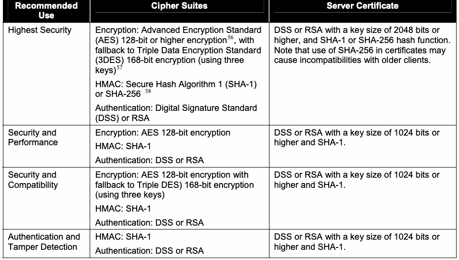
| 推奨 | 暗号スイート | サーバー証明書 |
| 用途 | ||
| 最高のセキュリティ | 暗号化：Advanced Encryption Standard（AES）128ビット以上の暗号化56。ただし、Triple Data Encryption Standard（3DES）168ビット暗号化（三鍵使用）57にフォールバックする場合がある。HMAC：Secure Hash Algorithm 1（SHA-1）またはSHA-256 58 認証：Digital Signature Standard（DSS）またはRSA | DSSまたはRSA（鍵長2048ビット以上）とSHA-1またはSHA-256ハッシュ関数。証明書でSHA-256を使用すると、古いクライアントとの互換性に問題が生じる場合があることに注意。 |
| セキュリティと性能 | 暗号化：AES 128ビット暗号化 HMAC：SHA-1 認証：DSSまたはRSA | DSSまたはRSA（鍵長1024ビット以上）およびSHA-1。 |
| セキュリティと互換性 | 暗号化：AES 128ビット暗号化。Triple DES) 168ビット暗号化（三鍵使用）へのフォールバックあり。HMAC：SHA-1 認証：DSSまたはRSA | DSSまたはRSA（鍵長1024ビット以上）およびSHA-1。 |
| 認証と改ざん検知 | HMAC：SHA-1 認証：DSSまたはRSA | DSSまたはRSA（鍵長1024ビット以上）およびSHA-1。 |
The server certificate used in the SSL/TSL handshake (described in more detail in Section 7.5.5) specifies the algorithm the certificate’s public key supports, the public key, and the key size. The certificate may also describe its intended use (e.g., for generating digital signatures, encryption, or authentication). During the handshake phase, the client indicates the cipher suites and key lengths it supports. Ultimately, the choice of cipher suite and key length is dictated by the server.
SSL/TSLハンドシェイクで使用されるサーバー証明書（詳細はSection 7.5.5を参照）には、その証明書の公開鍵がサポートするアルゴリズム、公開鍵、および鍵長が指定される。証明書には、意図された用途（例えば、デジタル署名の生成、暗号化、または認証）も記載されることがある。ハンドシェイク中に、クライアントはサポートする暗号スイートと鍵長を通知する。最終的に、暗号スイートと鍵長はサーバーによって決定される。
Choosing an appropriate encryption algorithm depends on several factors that vary for each organization. Although at first glance it might appear that the strongest encryption available should always be used, that is not always true. The higher the level of the encryption, the greater impact it will have on the Web server’s resources and communications speed.59 Furthermore, a number of countries still maintain restrictions on the export, import, and/or use of encryption. Patents and licensing issues may affect which commercial encryption schemes can be used. Common factors that influence the choice of encryption algorithm are as follows:
適切な暗号アルゴリズムの選択は、組織ごとに異なるいくつかの要因によって決まる。一見すると、常に利用可能な最強の暗号化を使用すべきと思えるかもしれないが、必ずしもそうではない。暗号化のレベルが高くなるほど、Webサーバーのリソースと通信速度への影響も大きくなる。59 さらに、現在も多くの国が暗号化の輸出、輸入、および／または使用に制限を設けている。特許やライセンスの問題が、使用可能な商用暗号方式に影響することもある。暗号アルゴリズムの選択に影響する一般的な要因は次のとおりである：
未レビュー訳(cid:31) Required security
(cid:31) 必要なセキュリティ
未レビュー訳(cid:131) Value of the data (to either the organization and/or other entities—the more valuable the data, the stronger the required encryption)
(cid:131) データの価値（組織または他の主体にとっての価値。データの価値が高いほど、より強い暗号化が必要となる）
未レビュー訳(cid:131) Time value of data (if data is valuable but for only a short time period [e.g., days as opposed to years], then a weaker encryption algorithm could be used)
(cid:131) データの時間的価値（データに価値があっても、その価値が短期間［例えば、年単位ではなく日単位］しか続かない場合は、より弱い暗号アルゴリズムを使用できる）
未レビュー訳(cid:131) Threat to data (the higher the threat level, the stronger the required encryption)
(cid:131) データへの脅威（脅威レベルが高いほど、より強い暗号化が必要となる）
未レビュー訳(cid:131) Other protective measures that are in place and that may reduce the need for stronger encryption—for example, using protected methods of communications, such as dedicated circuits as opposed to the public Internet
(cid:131) より強い暗号化の必要性を低減し得る、すでに講じられているその他の保護措置。例えば、パブリック・インターネットではなく専用回線を使用するなど、保護された通信手段を使用すること。
未レビュー訳(cid:31) Required performance (higher performance requirements may require procurement of additional system resources, such as a hardware cryptographic accelerator, or may necessitate weaker encryption)
(cid:31) 必要な性能（性能要件が高い場合、ハードウェア暗号アクセラレーターなどの追加システムリソースの調達が必要になることや、より弱い暗号化が必要になることがある）
未レビュー訳(cid:31) System resources (fewer resources [e.g., process, memory] may necessitate weaker encryption)
(cid:31) システムリソース（リソース（例えば、プロセッサやメモリ）が少ない場合、より弱い暗号化が必要になることがある）
未レビュー訳(cid:31) Import, export, or usage restrictions
(cid:31) 輸入、輸出、または使用に関する制限
未レビュー訳(cid:31) Encryption schemes supported by Web server application
(cid:31) Webサーバー・アプリケーションがサポートする暗号方式
未レビュー訳(cid:31) Encryption schemes supported by Web browsers of expected users.
(cid:31) 想定されるユーザーが使用するWebブラウザーのサポートする暗号方式
未レビュー訳7.5.5 Implementing SSL/TLS
7.5.5 SSL/TLSの実装
A digital signature is needed to implement SSL/TLS on a Web server. A certificate, which is the digital equivalent of an ID card, is used in conjunction with a public key encryption system. Certificates can be issued by trusted third parties, known as CAs, or can be self-signed. Organizational requirements determine which approach is used.
WebサーバーにSSL/TLSを実装するには、デジタル署名が必要である。身分証明書に相当するデジタル証明書は、公開鍵暗号システムと併用される。証明書は、CAと呼ばれる信頼された第三者機関が発行することも、自己署名することもできる。どちらの方法を使用するかは、組織の要件によって決まる。
Although the sequence of steps is not identical for all Web servers, the implementation of a third-party signed certificate for a Web server generally includes at least three steps:
Webサーバーによって手順の順序は同一ではないが、Webサーバー用の第三者署名証明書を実装する手順には、通常、少なくとも次の三つが含まれる：
(cid:31) Generating and submitting a certificate-signing request (CSR)
(cid:31) 証明書署名要求（CSR）を生成して送信する
未レビュー訳(cid:31) Picking up a signed SSL/TLS certificate from a CA
(cid:31) CAから署名済みSSL/TLS証明書を受け取る
未レビュー訳(cid:31) Installing the certificate and configuring the Web server to use SSL/TLS for any specified resources.
(cid:31) 証明書をインストールし、指定されたリソースでSSL/TLSを使用するようWebサーバーを設定する。
未レビュー訳A CSR consists of three parts: certification request information, a signature algorithm identifier, and a digital signature over the certification request information. Web servers that are SSL/TLS enabled provide specific instructions for the generation of a CSR. There are two major types of CSRs. The most popular is the encoded Public Key Cryptography Standard (PKCS) #10, Certification Request Syntax Standard, which is used by newer Web servers [RSA00]. The other CSR type, based on the Privacy Enhanced Mail (PEM) specification, is called either PEM message header or Web site professional format. The use of this CSR is generally limited to older Web servers. Most Web servers generate PKCS #10-compliant CSRs similar to the sample CSR shown in Figure 7-2. A CSR provides not only additional information about a given entity, or a “challenge password” by which the entity may later request certificate revocation, but also attributes for inclusion in X.509 certificates [RSA00].
CSRは、証明書要求情報、署名アルゴリズム識別子、および証明書要求情報に対するデジタル署名という三つの部分から成る。SSL/TLS対応のWebサーバーは、CSRの生成に関する具体的な手順を提供する。CSRには主に二種類ある。最も広く使われているのは、符号化されたPublic Key Cryptography Standard（PKCS）#10, Certification Request Syntax Standardであり、新しいWebサーバーで使用される [RSA00]。もう一つはPrivacy Enhanced Mail（PEM）仕様に基づくもので、PEMメッセージ・ヘッダー形式またはWebサイト・プロフェッショナル形式と呼ばれる。このCSRの使用は、一般に古いWebサーバーに限られる。ほとんどのWebサーバーは、PKCS #10準拠のCSRを生成する。この形式は、Figure 7-2に示すサンプルCSRに類似している。CSRには、特定の主体に関する追加情報や、その主体が後で証明書の失効を要求するために使用できる「チャレンジ・パスワード」だけでなく、X.509証明書に含める属性も含まれる [RSA00]。
-----BEGIN CERTIFICATE REQUEST-----MIIBujCCASMCAQAwejELMAkGA1UEBhMCQ0ExEzARBgNVBAgTClRFc3QgU3RhdGUx ETAPBgNVBAcTCENvbG9yYWR0MRswGQYDVQQKExJDYW5hZGlhbiBUZXN0IE9yZy4x EjAQBgNVBAsTCU9VIE9mZmljZTESMBAGA1UEAxMJd3d3LmV4LmNhMIGfMA0GCSqG SIb3DQEBAQUAA4GNADCBiQKBgQD5PIij2FNa+Zfk1OHtptspcSBkfkfZ3jFxYA6ypo3+YbQ hO3PLTvNfQj9mhb0xWyvoNvL8Gnp1GUPgiw9GvRao603yHebgc2bioAKoTkWTmW+C8+Ka 42wMVrgcW32rNYmDnDWOSBWWR1L1j1YkQBK1nQnQzV3U/h0mr+ASE/nV7wIDAQABo AAwDQYJKoZIhvcNAQEEBQADgYEAAAhxY1dcw6P8cDEDG4UiwB0DOoQnFb3WYVl7d4 +6lfOtKfuL/Ep0blLWXQoVpOICF3gfAF6wcAbeg5MtiWwTwvXRtJ2jszsZbpOuIt0WU1+cCYi vxuTi18CQNQrsrD4s2ZJytkzDTAcz1Nmiuh93eqYw+kydUyRYlOMEIomNFIQ= -----END CERTIFICATE REQUEST-----
-----BEGIN CERTIFICATE REQUEST-----MIIBujCCASMCAQAwejELMAkGA1UEBhMCQ0ExEzARBgNVBAgTClRFc3QgU3RhdGUx ETAPBgNVBAcTCENvbG9yYWR0MRswGQYDVQQKExJDYW5hZGlhbiBUZXN0IE9yZy4x EjAQBgNVBAsTCU9VIE9mZmljZTESMBAGA1UEAxMJd3d3LmV4LmNhMIGfMA0GCSqG SIb3DQEBAQUAA4GNADCBiQKBgQD5PIij2FNa+Zfk1OHtptspcSBkfkfZ3jFxYA6ypo3+YbQ hO3PLTvNfQj9mhb0xWyvoNvL8Gnp1GUPgiw9GvRao603yHebgc2bioAKoTkWTmW+C8+Ka 42wMVrgcW32rNYmDnDWOSBWWR1L1j1YkQBK1nQnQzV3U/h0mr+ASE/nV7wIDAQABo AAwDQYJKoZIhvcNAQEEBQADgYEAAAhxY1dcw6P8cDEDG4UiwB0DOoQnFb3WYVl7d4 +6lfOtKfuL/Ep0blLWXQoVpOICF3gfAF6wcAbeg5MtiWwTwvXRtJ2jszsZbpOuIt0WU1+cCYi vxuTi18CQNQrsrD4s2ZJytkzDTAcz1Nmiuh93eqYw+kydUyRYlOMEIomNFIQ= -----END CERTIFICATE REQUEST-----
未レビュー訳Figure 7-2. Sample CSR
Figure 7-2. CSRのサンプル
Spelling and punctuation should be checked when information is provided during the CSR generation process. The URL that is supplied must exactly match the URL for which the certificate is used. SSL/TLS clients are configured to generate an error if the URLs do not match. In some instances, a user may acknowledge this error in an alert box and proceed.
CSR生成時に情報を入力する際は、スペルと句読点を確認すべきである。指定するURLは、その証明書を使用するURLと完全に一致しなければならない。SSL/TLSクライアントは、URLが一致しない場合にエラーを生成するよう設定されている。場合によっては、ユーザーは警告ボックスでこのエラーを了承し、そのまま処理を続けることがある。
Once the CSR has been generated, the organization submits it to a CA. The CA’s role is to fulfill the CSR by authenticating the requesting entity and verifying the entity’s signature. If the request is valid, the CA constructs an X.509 certificate from the domain name (DN) and public key; the issuer name (more commonly referred to as the common name [CN]); and the CA’s choice of serial number, validity period, or signature algorithm. Upon receiving a submitted CSR, the CA must verify the CSR and create a signed X.509 certificate. At this point, most CAs will then alert the applicant by telephone, e-mail, etc., that the X.509 certificate is available. Once notified, applicants will be able to download their certificates through an SSL/TLS-protected Web-based interface.
CSRを生成した後、組織はそれをCAに提出する。CAは、申請主体を認証し、その主体の署名を検証することでCSRを処理する。要求が有効であれば、CAはドメイン名（DN）と公開鍵、発行者名（一般にcommon name [CN]と呼ばれる）、およびCAが選択するシリアル番号、有効期間、または署名アルゴリズムからX.509証明書を作成する。提出されたCSRを受け取ると、CAはCSRを検証し、署名済みX.509証明書を作成しなければならない。この段階で、ほとんどのCAは電話や電子メールなどで申請者にX.509証明書が利用可能になったことを通知する。通知を受けた申請者は、SSL/TLSで保護されたWebベースのインターフェースから証明書をダウンロードできる。
Figure 7-3 shows an X.509 certificate encoded in PEM format. Similar to the CSR, when supplying a certificate to a configuration wizard or even saving it to a hard drive, the lines “BEGIN CERTIFICATE” and “END CERTIFICATE” are vital. Without them, the Web server application will be unable to interpret the encoded contents of the certificate.
Figure 7-3に、PEM形式で符号化されたX.509証明書を示す。CSRと同様、証明書を設定ウィザードに入力する場合や、ハードディスクに保存する場合でも、「BEGIN CERTIFICATE」と「END CERTIFICATE」の行は不可欠である。これらがなければ、Webサーバー・アプリケーションは証明書の符号化された内容を解釈できない。
-----BEGIN CERTIFICATE-----MIIDjjCCAvegAwIBAgIBAzANBgkqhkiG9w0BAQQFADCBzzELMAkGA1UEBhMCQ0ExED AOBgNVBAgTB09udGFyaW8xETAPBgNVBAcTCFdhdGVybG9vMR8wHQYDVQQKExZVb ml2ZXJzaXR5IG9mIFdhdGVybG9vMSswKQYDVQQLEyJJbmZvcm1hdGlvbiBTeXN0ZW1zI GFuZCBUZWNobm9sb2d5MSUwIwYDVQQDExxVVy9JU1QgQ2VydGlmaWNhdGUgQXV0a G9yaXR5MSYwJAYJKoZIhvcNAQkBFhdpc3QtY2FAaXN0LnV3YXRlcmxvby5jYTAeFw05O DA4MjcxNjE0NDZaFw05OTEwMjExNjE0NDZaMIHGMQswCQYDVQQGEwJDQTEQMA4G A1UECBMHT250YXJpbzERMA8GA1UEBxMIV2F0ZXJsb28xHzAdBgNVBAoTFlVuaXZlcn NpdHkgb2YgV2F0ZXJsb28xKzApBgNVBAsTIkluZm9ybWF0aW9uIFN5c3RlbXMgYW5kIFRl Y2hub2xvZ3kxGTAXBgNVBAMTEGlzdC51d2F0ZXJsb28uY2ExKTAnBgkqhkiG9w0BCQEW GndlYm1hc3RlckBpc3QudXdhdGVybG9vLmNhMIGfMA0GCSqGSIb3DQEBAQUAA4GNAD CBiQKBgQCw8Sc7X4EeAxBxTPgmTd4Utau0BIqYTdnIRXXg/ryAn2A7G5MtkMHj0triXoineu RxW9MQSQW8jMAv+xznMaL6OxnG+txyBjYx1zh02D+npBp4Fy81kgbypp5Usf18BonsqSe9Sl 2P0opCCyclGr+i4agSP5RM5KrycTSVoKHERQIDAQABo4GAMH4wOgYJYIZIAYb4QgEEB C0WK2h0dHA6Ly9pc3QudXdhdGVybG9vLmNhL3NlY3VyaXR5L2NhLWNybC5wZW0wLQ YJYIZIAYb4QgENBCAWHklzc3VpbmcgQ0EgYXNzdW1lcyBubyBsaWFibGl0eTARBglghkgB hvhCAQEEBAMCAEAwDQYJKoZIhvcNAQEEBQADgYEADZOtbpvbnBaWOPIMOSbqTQK 1LUjn4uHN3BLmqxznIzdiMu4RXyxne5Uq9EA7LbttutH7fIoOW+ID9Zrn1aH1FoU1dtEvovXm A6m5G+SN8A9tIAvRGjNmphB82xGkwEXuLN0afYz5XaFo3Z73INw6WxVoxDhPTgNIyYEii Sp6Qfc= -----END CERTIFICATE-----
-----BEGIN CERTIFICATE-----MIIDjjCCAvegAwIBAgIBAzANBgkqhkiG9w0BAQQFADCBzzELMAkGA1UEBhMCQ0ExED AOBgNVBAgTB09udGFyaW8xETAPBgNVBAcTCFdhdGVybG9vMR8wHQYDVQQKExZVb ml2ZXJzaXR5IG9mIFdhdGVybG9vMSswKQYDVQQLEyJJbmZvcm1hdGlvbiBTeXN0ZW1zI GFuZCBUZWNobm9sb2d5MSUwIwYDVQQDExxVVy9JU1QgQ2VydGlmaWNhdGUgQXV0a G9yaXR5MSYwJAYJKoZIhvcNAQkBFhdpc3QtY2FAaXN0LnV3YXRlcmxvby5jYTAeFw05O DA4MjcxNjE0NDZaFw05OTEwMjExNjE0NDZaMIHGMQswCQYDVQQGEwJDQTEQMA4G A1UECBMHT250YXJpbzERMA8GA1UEBxMIV2F0ZXJsb28xHzAdBgNVBAoTFlVuaXZlcn NpdHkgb2YgV2F0ZXJsb28xKzApBgNVBAsTIkluZm9ybWF0aW9uIFN5c3RlbXMgYW5kIFRl Y2hub2xvZ3kxGTAXBgNVBAMTEGlzdC51d2F0ZXJsb28uY2ExKTAnBgkqhkiG9w0BCQEW GndlYm1hc3RlckBpc3QudXdhdGVybG9vLmNhMIGfMA0GCSqGSIb3DQEBAQUAA4GNAD CBiQKBgQCw8Sc7X4EeAxBxTPgmTd4Utau0BIqYTdnIRXXg/ryAn2A7G5MtkMHj0triXoineu RxW9MQSQW8jMAv+xznMaL6OxnG+txyBjYx1zh02D+npBp4Fy81kgbypp5Usf18BonsqSe9Sl 2P0opCCyclGr+i4agSP5RM5KrycTSVoKHERQIDAQABo4GAMH4wOgYJYIZIAYb4QgEEB C0WK2h0dHA6Ly9pc3QudXdhdGVybG9vLmNhL3NlY3VyaXR5L2NhLWNybC5wZW0wLQ YJYIZIAYb4QgENBCAWHklzc3VpbmcgQ0EgYXNzdW1lcyBubyBsaWFibGl0eTARBglghkgB hvhCAQEEBAMCAEAwDQYJKoZIhvcNAQEEBQADgYEADZOtbpvbnBaWOPIMOSbqTQK 1LUjn4uHN3BLmqxznIzdiMu4RXyxne5Uq9EA7LbttutH7fIoOW+ID9Zrn1aH1FoU1dtEvovXm A6m5G+SN8A9tIAvRGjNmphB82xGkwEXuLN0afYz5XaFo3Z73INw6WxVoxDhPTgNIyYEii Sp6Qfc= -----END CERTIFICATE-----
未レビュー訳Figure 7-3. Sample Encoded SSL/TLS Certificate
Figure 7-3. 符号化されたSSL/TLS証明書のサンプル
When a Web browser contacts a Web site that is using SSL/TLS, the browser examines the certificate and attempts to verify its validity. Each browser has a store of certificates, and these typically include root certificates for many third-party CAs. If the browser has a root certificate for the third-party CA that issued the Web server’s certificate, it can use the CA’s root certificate to validate the Web server’s certificate, which is based partially on that root certificate. If the browser does not have the needed root certificate, then it typically displays a warning to the user that says the Web server’s certificate could not be verified and asks the user how it should proceed.
SSL/TLSを使用するWebサイトにWebブラウザーが接続すると、ブラウザーは証明書を調べ、その有効性を検証しようとする。各ブラウザーは証明書ストアを備えており、通常、そこには多数の第三者CAのルート証明書が含まれる。Webサーバーの証明書を発行した第三者CAのルート証明書をブラウザーが保持している場合、ブラウザーはそのルート証明書に一部基づいているWebサーバー証明書を、CAのルート証明書を用いて検証できる。必要なルート証明書をブラウザーが保持していない場合、通常、Webサーバーの証明書を検証できなかったことをユーザーに警告し、どのように処理するかを尋ねる。
Some organizations decide to create and sign their own Web server certificates instead of having certificates issued by third-party CAs. The main advantage of self-signed certificates is that it avoids the cost of purchasing and renewing certificates; however, by default, Web browsers will not be able to validate self-signed certificates, so they provide no assurance of the legitimacy of the certificate or the Web server. Given the increasing use of phishing and other techniques to trick users into visiting rogue Web sites, failing to authenticate the server’s identity before using SSL/TLS with it is unacceptable. If a particular Web server is only going to be accessed from the organization’s own systems (e.g., telecommuters using laptops issued and managed by the organization), then those systems’ browsers could be provisioned with the root certificates needed to validate the Web server’s self-signed certificate and authenticate the server’s identity. Otherwise, the use of self-signed certificates for public Web servers is generally not recommended because of the logistics involved in securely distributing the root certificates to users’ Web browsers and having the certificates installed correctly by the users so that the browsers can authenticate the organization’s Web servers.
第三者CAに証明書を発行してもらう代わりに、独自のWebサーバー証明書を作成して署名する組織もある。自己署名証明書の主な利点は、証明書の購入および更新費用がかからないことである。しかし、既定ではWebブラウザーは自己署名証明書を検証できないため、その証明書やWebサーバーが正当であるとの保証は得られない。フィッシングなど、ユーザーをだまして不正なWebサイトに誘導する手法が増加していることを踏まえると、SSL/TLSを使用する前にサーバーの身元を認証しないことは許容できない。特定のWebサーバーに組織内のシステムだけからアクセスする場合（例えば、組織が支給・管理するノートPCを使う在宅勤務者の場合）、そのシステムのブラウザーに、Webサーバーの自己署名証明書を検証してサーバーの身元を認証するために必要なルート証明書をあらかじめ設定できる。それ以外の場合、ユーザーのWebブラウザーにルート証明書を安全に配布し、ユーザーが証明書を正しくインストールしてブラウザーが組織のWebサーバーを認証できるようにする手間がかかるため、一般向けWebサーバーでの自己署名証明書の使用は通常推奨されない。
For all SSL/TLS certificates for Web servers, regardless of issuer or format, administrators should take extreme caution in securing their certificate and encryption keys. The following are recommendations:
発行者や形式にかかわらず、Webサーバー用のすべてのSSL/TLS証明書について、管理者は証明書と暗号鍵の保護に細心の注意を払うべきである。推奨事項は次のとおりである：
(cid:31) Create and store a backup copy of the certificate on read-only media in case the original certificate is deleted accidentally. If the certificate is lost and cannot be recovered from backup media, a new certificate must be created.
(cid:31) 元の証明書を誤って削除した場合に備え、証明書のバックアップ・コピーを読み取り専用メディアに作成して保存する。証明書を紛失し、バックアップ・メディアから復旧できない場合は、新しい証明書を作成しなければならない。
未レビュー訳(cid:31) Create and store a backup copy of the encryption keys on read-only media in case the keys are deleted accidentally. If the keys are lost and cannot be recovered from backup media, a new key pair and certificate must be created. Note that the backup copy of the keys must be physically secured and should be encrypted as well.
(cid:31) 暗号鍵を誤って削除した場合に備え、暗号鍵のバックアップ・コピーを読み取り専用メディアに作成して保存する。鍵を紛失し、バックアップ・メディアから復旧できない場合は、新しい鍵ペアと証明書を作成しなければならない。鍵のバックアップ・コピーは物理的に保護し、暗号化もすべきであることに注意する。
未レビュー訳(cid:31) Store the original certificate in a folder or partition accessible by only Web or system administrators and secured by appropriate authentication mechanisms.
(cid:31) 元の証明書は、Web管理者またはシステム管理者だけがアクセスでき、適切な認証機構で保護されたフォルダーまたはパーティションに保存する。
未レビュー訳(cid:31) Consider running a file integrity checker in the Web server (see Section 8.2.2) and ensure that it is monitoring for any changes to the certificate.
(cid:31) Webサーバーでファイル完全性チェッカーを実行することを検討し（Section 8.2.2を参照）、証明書に対する変更を監視していることを確認する。
未レビュー訳(cid:31) Examine system logs regularly to validate and ensure prevention of unauthorized system access.
(cid:31) システムログを定期的に調査し、不正なシステムアクセスがないことを確認するとともに、その防止を確実にする。
未レビュー訳If a malicious user gains unauthorized access to a Web server, the integrity of the entire server is lost immediately once the encryption key pair is modified. Once a key in an SSL/TLS certificate is compromised, it can remain compromised; for example, some CAs do not issue revocation information, and many client implementations do not obtain or process revocation information.
悪意のあるユーザーがWebサーバーに不正アクセスし、暗号鍵ペアを変更した時点で、サーバー全体の完全性は直ちに失われる。SSL/TLS証明書の鍵が侵害されると、その侵害状態が続くことがある。例えば、一部のCAは失効情報を発行せず、多くのクライアント実装は失効情報を取得も処理もしない。
Once a certificate is ready, it needs to be installed, and SSL needs to be enabled and configured. Some steps are common to all Web servers:
証明書の準備ができたら、インストールし、SSLを有効にして設定する必要がある。すべてのWebサーバーに共通する手順がいくつかある：
(cid:31) Disable SSL 1.0 and SSL 2.0.
(cid:31) SSL 1.0およびSSL 2.0を無効にする。
未レビュー訳(cid:31) Configure SSL/TLS to restrict cryptographic algorithms to the selected cipher suite(s) (see Section 7.5.4).
(cid:31) SSL/TLSで使用する暗号アルゴリズムを、選択した暗号スイートに制限する（Section 7.5.4を参照）。
未レビュー訳(cid:31) Indicate the location of the SSL/TLS certificate and instruct the server to start using SSL/TLS. In certain cases, the Web server must be instructed to begin using SSL/TLS, and even given the location of the SSL/TLS certificate and private keys if they were stored as files on the hard drive.
(cid:31) SSL/TLS証明書の場所を指定し、SSL/TLSを使用するようサーバーに指示する。場合によっては、SSL/TLSの使用開始をWebサーバーに指示しなければならない。また、SSL/TLS証明書と秘密鍵がハードディスク上のファイルとして保存されている場合は、それらの場所も指定する必要がある。
未レビュー訳(cid:31) Instruct server to listen on TCP port 443. This is the default TCP port from which SSL/TLS resources are accessed by clients (other ports can be used). In most cases, if the server was not previously using SSL/TLS, this port would be disabled for security reasons. It will probably be necessary to configure the network infrastructure supporting the Web server to allow SSL/TLS traffic (see Section 8.2). All ports other than TCP 443 should be closed and the network infrastructure (e.g., firewalls) should be updated to block attempts to connect to all other ports. However, if the Web server is to host both HTTP and HTTPS content, TCP 80 should be open as well.
(cid:31) サーバーにTCPポート443で待ち受けるよう指示する。これは、クライアントがSSL/TLSリソースにアクセスする際に使用する既定のTCPポートである（他のポートも使用できる）。ほとんどの場合、サーバーがそれまでSSL/TLSを使用していなければ、セキュリティ上の理由からこのポートは無効になっている。SSL/TLSトラフィックを許可するよう、Webサーバーを支えるネットワーク・インフラストラクチャを設定する必要があるだろう（Section 8.2を参照）。TCP 443以外のすべてのポートは閉じるべきであり、他のすべてのポートへの接続試行を遮断するようネットワーク・インフラストラクチャ（例えば、ファイアウォール）を更新すべきである。ただし、WebサーバーがHTTPとHTTPSの両方のコンテンツをホストする場合は、TCP 80も開いておくべきである。
未レビュー訳(cid:31) Configure the server to protect the necessary resources (directories and/or files) using SSL/TLS. Configure the Web server application so that the appropriate resources are protected with SSL/TLS. These resources are then accessible only from a URL that starts with “https://”.
(cid:31) SSL/TLSを使用して、必要なリソース（ディレクトリーおよび／またはファイル）を保護するようサーバーに指示する。適切なリソースがSSL/TLSで保護されるようWebサーバー・アプリケーションを設定する。これらのリソースには、「https://」で始まるURLからのみアクセスできる。
未レビュー訳Newer versions of the HTML standard have been amended to include a response to inform clients when a file they have requested is available only via SSL/TLS. The HTTP status code 403.4 indicates that a HTTP GET request must be prefixed with an https:// because the resource requested is protected with SSL/TLS. For more information, consult RFCs 2246, 2626, and 2817.60 Most current Web browsers also provide users with some user-friendly visual indication of a server’s SSL/TLS certificate status, such as changing the color of a status bar.
HTML標準の新しいバージョンでは、要求されたファイルがSSL/TLS経由でのみ利用可能であることをクライアントに通知する応答が追加されている。HTTPステータスコード403.4は、要求されたリソースがSSL/TLSで保護されているため、HTTP GET要求にhttps://を前置しなければならないことを示す。詳細については、RFCs 2246、2626、および2817を参照。60 現在のWebブラウザーの多くは、ステータスバーの色を変えるなど、サーバーのSSL/TLS証明書の状態をユーザーに分かりやすく視覚表示する機能も備えている。
未レビュー訳7.5.6 SSL/TLS Implementations
7.5.6 SSL/TLSの実装
Although some Web servers come packaged with SSL capabilities already integrated, many do not. This section discusses various commercial and open-source SSL/TLS implementations. Some of these packages contain the functionality to generate SSL certificates without the need of a CA. The following list includes some of the SSL toolkits available:
一部のWebサーバーにはSSL機能があらかじめ統合されているが、そうでないサーバーも多い。本節では、商用およびオープンソースのさまざまなSSL/TLS実装について説明する。これらのパッケージの中には、CAを必要とせずにSSL証明書を生成する機能を含むものもある。利用できるSSLツールキットを以下に示す：
(cid:31) OpenSSL is an open-source implementation of SSL/TLS for Unix and Linux platforms (http://www.openssl.org/).
(cid:31) OpenSSLは、UnixおよびLinuxプラットフォーム向けのオープンソースSSL/TLS実装である（http://www.openssl.org/）。
未レビュー訳(cid:31) Network Security Services (NSS) is an open-source implementation of SSL/TLS developed by the Mozilla foundation.61 NSS is derived from the original Netscape SSL implementation.
(cid:31) Network Security Services（NSS）は、Mozilla Foundationが開発したオープンソースのSSL/TLS実装である。61 NSSは、初期のNetscape SSL実装から派生した。
未レビュー訳(cid:31) GnuTLS is an open-source implementation of SSL/TLS developed by the Free Software Foundation.62
(cid:31) GnuTLSは、Free Software Foundationが開発したオープンソースのSSL/TLS実装である。62
未レビュー訳(cid:31) Java Secure Socket Extension (JSSE) is an implementation of SSL/TLS developed by Sun for distribution as part of the Java Runtime Environment (JRE).63
(cid:31) Java Secure Socket Extension（JSSE）は、Java Runtime Environment（JRE）の一部として配布するためにSunが開発したSSL/TLS実装である。63
未レビュー訳(cid:31) Security Support Provider Interface (SSPI) is an implementation of SSL/TLS available on Microsoft Windows Server 2003.
(cid:31) Security Support Provider Interface（SSPI）は、Microsoft Windows Server 2003で利用できるSSL/TLS実装である。
未レビュー訳(cid:31) IBM Java Secure Sockets Extension (IBMJSSE) is an implementation of SSL/TLS for the WebSphere Application Server.
(cid:31) IBM Java Secure Sockets Extension（IBMJSSE）は、WebSphere Application Server向けのSSL/TLS実装である。
未レビュー訳Federal government organizations are required to use Federal Information Processing Standards (FIPS)-validated SSL/TLS implementations when protecting data using SSL/TLS. The Cryptographic Module Validation Program (CMVP) performs validation testing of cryptographic modules, including SSL/TLS implementations.64 NIST provides a list of FIPS 140-265-compliant vendors and implementations.66 Regardless of what SSL/TLS implementation is used, it is important to ensure that security patches are regularly applied. Security flaws in SSL/TLS implementations can potentially allow attackers to spoof PKI certificates, forge digital signatures, perform DoS attacks, or execute arbitrary code in the Web server.
連邦政府機関は、SSL/TLSを用いてデータを保護する際、Federal Information Processing Standards（FIPS）検証済みのSSL/TLS実装を使用しなければならない。Cryptographic Module Validation Program（CMVP）は、SSL/TLS実装を含む暗号モジュールの検証試験を実施する。64 NISTは、FIPS 140-2（注65）に準拠したベンダーおよび実装の一覧を提供している。66 どのSSL/TLS実装を使用する場合でも、セキュリティ・パッチが定期的に適用されるようにすることが重要である。SSL/TLS実装のセキュリティ上の欠陥によって、攻撃者がPKI証明書を偽装したり、デジタル署名を偽造したり、DoS攻撃を行ったり、Webサーバー上で任意のコードを実行したりする可能性がある。
未レビュー訳7.6 Brute Force Attacks
7.6 総当たり攻撃
Many Web sites authenticate users via username and password combinations—whether through HTTP Basic, HTTP Digest, or a Web form over SSL. Regardless of implementation, username and password combinations are susceptible to brute force attacks. Brute force attacks can occur in multiple forms:
多くのWebサイトでは、HTTP Basic、HTTP Digest、またはSSL上のWebフォームを介して、ユーザー名とパスワードの組み合わせでユーザーを認証する。実装方法にかかわらず、ユーザー名とパスワードの組み合わせは総当たり攻撃に対して脆弱である。総当たり攻撃には、複数の形態がある：
(cid:31) Username Harvesting—Applications that differentiate between an invalid password and an invalid username can allow attackers to construct a list of valid user accounts.
(cid:31) ユーザー名の収集—無効なパスワードと無効なユーザー名を区別するアプリケーションは、攻撃者が有効なユーザー・アカウントの一覧を作成するのを可能にすることがある。
未レビュー訳(cid:31) Dictionary Attacks—Attackers use common dictionary words and their variants to attempt to gain access to a user’s account.
(cid:31) 辞書攻撃—攻撃者は、一般的な辞書語やその変形を使って、ユーザー・アカウントへのアクセスを試みる。
未レビュー訳(cid:31) Brute Force Attacks—Attackers try every possible password to attempt to gain access to a user’s account.
(cid:31) 総当たり攻撃—攻撃者は、ユーザー・アカウントへのアクセスを試みて、考えられるすべてのパスワードを試す。
未レビュー訳There are a number of methods for reducing a Web server’s vulnerability to brute force attack:
Webサーバーが総当たり攻撃に対して脆弱となるリスクを減らす方法はいくつかある：
(cid:31) Use Strong Authentication—Strong authentication techniques, such as hardware tokens, one-time passwords, biometric authentication, and SSL/TLS client certificates, are much more resistant to brute force attacks than passwords. Stronger authentication can be achieved by combining multiple authentication mechanisms to form a multi-factor authentication scheme. However, strong authentication may be prohibitively expensive or difficult to incorporate into a system.
(cid:31) 強力な認証を使用する—ハードウェア・トークン、ワンタイム・パスワード、生体認証、SSL/TLSクライアント証明書などの強力な認証技法は、パスワードより総当たり攻撃への耐性が大幅に高い。複数の認証機構を組み合わせて多要素認証方式を形成することで、認証をさらに強化できる。ただし、強力な認証は、費用が高すぎたりシステムへの組み込みが困難だったりする場合がある。
未レビュー訳(cid:31) Use Timeouts—Incurring a delay of several seconds after a failed login attempt can slow an attacker down. However, attackers can attempt multiple logins at the same time from different clients.
(cid:31) タイムアウトを使用する—ログイン失敗後に数秒の遅延を設けると、攻撃者の試行速度を低下させることができる。ただし、攻撃者は異なるクライアントから同時に複数のログインを試みることができる。
未レビュー訳(cid:31) Use Lockouts—Locking out a user account after a number of failed login attempts prevents the attacker from successfully logging into an account. The primary disadvantage of this technique is that it can leave the system open to a DoS attack. Also, an attacker may try several common passwords against random usernames, which may grant the attacker access to the system while bypassing the lockout [Whit06].
(cid:31) アカウントのロックアウトを使用する—ログイン失敗が一定回数に達した後にユーザー・アカウントをロックすると、攻撃者がそのアカウントへのログインに成功するのを防げる。この手法の主な欠点は、システムをDoS攻撃に対して脆弱な状態にする可能性があることである。また、攻撃者が無作為に選んだユーザー名に対して一般的なパスワードをいくつか試し、ロックアウトを回避してシステムへのアクセスを得ることもある [Whit06]。
未レビュー訳(cid:31) Enforce a Password Policy—By requiring passwords to be of a certain length and to contain lowercase letters, uppercase letters, numerals, and/or symbols, a simple dictionary attack will not work on the system.
(cid:31) パスワード・ポリシーを適用する—パスワードに一定の長さを要求し、小文字、大文字、数字、および／または記号を含めるようにすれば、単純な辞書攻撃はシステム上で成功しない。
未レビュー訳(cid:31) Enforce a Password Change Policy—By requiring passwords to be changed on a regular basis, an attacker might not have enough time to brute-force a potential password. However, strict password change policies can frustrate users and weaken passwords by causing users to follow patterns, such as using password1, password2, etc. [Bell06]
(cid:31) パスワード変更ポリシーを適用する—パスワードを定期的に変更するよう求めることで、攻撃者が候補パスワードを総当たりで特定するための時間が足りなくなる可能性がある。ただし、厳格なパスワード変更ポリシーはユーザーを困らせ、password1、password2のようなパターンを使わせることでパスワードを弱くすることがある [Bell06]。
未レビュー訳(cid:31) Use Blacklists—Blocking IP addresses or domains known to attempt brute force attacks from accessing the system may stop some attackers, but it is possible that some attacks may come from compromised systems that would otherwise be considered legitimate.
(cid:31) ブラックリストを使用する—総当たり攻撃を試みることが知られているIPアドレスまたはドメインからのシステム・アクセスを遮断すれば、一部の攻撃者を阻止できる場合がある。しかし、正当なものと見なされる侵害済みシステムから攻撃が行われる場合もある。
未レビュー訳(cid:31) Use Log Monitoring Software—Vigilantly monitoring logs of invalid password attempts may help an organization detect brute force attacks, potentially giving the organization time to respond before the attack has been successful.
(cid:31) ログ監視ソフトウェアを使用する—無効なパスワードの試行をログで厳重に監視すれば、組織が総当たり攻撃を検知し、攻撃が成功する前に対応する時間を得られる可能性がある。
未レビュー訳Aside from strong authentication, none of these mechanisms completely prevent brute force attacks; however, using one or more of these techniques makes it more difficult for an attacker to gain access to the system. Nevertheless, when considering which technologies to adopt, it is important to consider passwords as part of the system as a whole. For example, a Web site that uses usernames and passwords to retrieve user customizations may not need to concern itself with preventing brute force attacks [Bell06]. In systems where sensitive information is being protected, some of these techniques may be necessary. Regardless, an organization may already have policies regarding brute force attacks. If so, those policies should be followed and enhanced if necessary.
強力な認証を除き、これらの仕組みはいずれも総当たり攻撃を完全に防ぐものではない。しかし、これらの技法を一つ以上使えば、攻撃者がシステムへアクセスすることをより困難にできる。それでも、導入する技術を検討する際は、システム全体の一部としてパスワードを考慮することが重要である。例えば、ユーザーのカスタマイズ設定を取得するためにユーザー名とパスワードを使用するWebサイトでは、総当たり攻撃の防止を考慮する必要がない場合がある [Bell06]。機密情報を保護するシステムでは、これらの技法の一部が必要になることがある。いずれにしても、組織には総当たり攻撃に関する既存のポリシーがあるかもしれない。その場合は、そのポリシーに従い、必要に応じて強化すべきである。
7.7 Checklist for Using Authentication and Encryption Technologies for Web Servers
7.7 Webサーバーで認証および暗号化技術を使用するためのチェックリスト
| Completed | Action |
| Configure Web authentication and encryption technologies | |
| For Web resources that require minimal protection and for which there is a small, | |
| clearly defined audience, configure address-based authentication | |
| For Web resources that require additional protection but for which there is a | |
| small, clearly defined audience, configure address-based authentication as a | |
| second line of defense | |
| For Web resources that require minimal protection but for which there is no | |
| clearly defined audience, configure basic or digest authentication (better) | |
| For Web resources that require protection from malicious bots, configure basic | |
| or digest authentication (better) or implement mitigation techniques discussed in | |
| Section 5.2.4 | |
| For organizations required to comply with FIPS 140-2, ensure the SSL/TLS | |
| implementation is FIPS-validated | |
| For Web resources that require maximum protection, configure SSL/TLS | |
| Configure SSL/TLS | |
| Ensure the SSL/TLS implementation is fully patched | |
| Use a third-party issued certificate for server authentication (unless all systems | |
| using the server are organization-managed, in which case a self-signed | |
| certificate could potentially be used instead) | |
| For configurations that require a medium level of client authentication, configure | |
| server to require username and password via SSL/TLS | |
| For configurations that require a high level of client authentication, configure | |
| server to require client certificates via SSL/TLS | |
| Ensure weak cipher suites are disabled (see Table 7.1 for the recommended | |
| usage of Federal cipher suites) | |
| Configure file integrity checker to monitor Web server certificate | |
| If only SSL/TLS is to be used in the Web server, ensure access via any TCP port | |
| other than 443 is disabled | |
| If most traffic to the Web server will be via encrypted SSL/TLS, ensure that | |
| appropriate logging and detection mechanisms are employed in the Web server | |
| (because network monitoring is ineffective against encrypted SSL/TLS sessions) | |
| Protect against brute force attacks | |
| Use strong authentication if possible | |
| Use a delay after failed login attempts | |
| Lock out an account after a set number of failed login attempts | |
| Enforce a password policy | |
| Blacklist IP addresses or domains known to attempt brute force attacks | |
| Use log monitoring software to detect brute force attacks |
原本PDFの抜粋画像
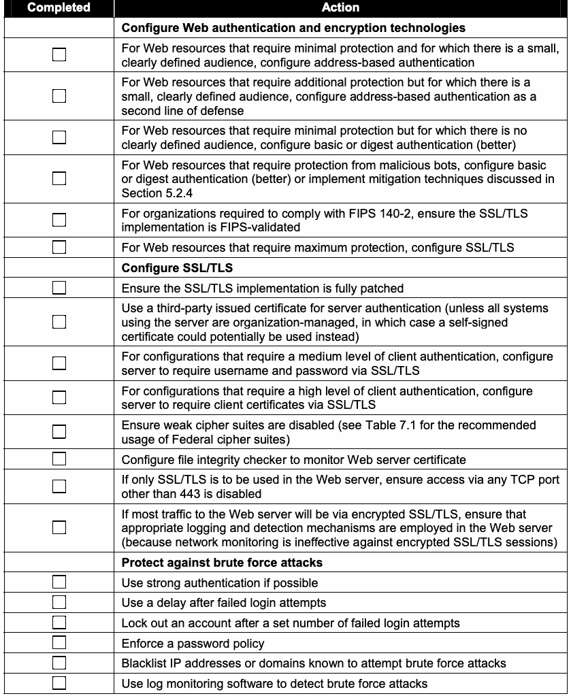
| 実施済み | 措置 |
| Web認証および暗号化技術を設定する | |
| 保護要件が最小限で、対象利用者が少数の | |
| 明確に定義されたWebリソースでは、アドレスベース認証を設定する | |
| 追加の保護を必要とするが、対象利用者が | |
| 少数かつ明確に定義されたWebリソースでは、アドレスベース認証を | |
| 第二の防御線として設定する | |
| 保護要件が最小限である一方、対象利用者が | |
| 明確に定義されていないWebリソースでは、基本認証またはダイジェスト認証（より望ましい）を設定する | |
| 悪意のあるボットからの保護を必要とするWebリソースでは、基本認証 | |
| またはダイジェスト認証（より望ましい）を設定するか、または | |
| Section 5.2.4で説明されている緩和策を実装する | |
| FIPS 140-2への準拠を求められる組織では、SSL/TLS | |
| 実装がFIPS検証済みであることを確認する | |
| 最大限の保護を必要とするWebリソースではSSL/TLSを設定する | |
| SSL/TLSを設定する | |
| SSL/TLS実装にすべてのパッチが適用されていることを確認する | |
| サーバー認証には第三者発行の証明書を使用する（ただし、サーバーを使用するすべてのシステムが | |
| 組織によって管理されている場合を除く。その場合は、自己署名 | |
| 証明書を代わりに使用できる可能性がある） | |
| 中程度のレベルのクライアント認証を必要とする構成では、サーバーを設定して | |
| SSL/TLS経由でユーザー名とパスワードを要求する | |
| 高いレベルのクライアント認証を必要とする構成では、サーバーを設定して | |
| SSL/TLS経由でクライアント証明書を要求する | |
| 弱い暗号スイートが無効になっていることを確認する（Federal cipher suitesの推奨 | |
| 用途についてはTable 7.1を参照） | |
| Webサーバー証明書を監視するファイル完全性チェッカーを設定する | |
| WebサーバーでSSL/TLSのみを使用する場合は、任意のTCPポートを介したアクセスが | |
| 443以外では無効になっていることを確認する | |
| Webサーバーへのトラフィックの大半が暗号化SSL/TLS経由となる場合は、 | |
| Webサーバーに適切なログ記録および検知機構が備わっていることを確認する | |
| （暗号化SSL/TLSセッションに対してネットワーク監視が有効ではないため） | |
| 総当たり攻撃から保護する | |
| 可能であれば強力な認証を使用する | |
| ログイン失敗後に遅延を設ける | |
| 一定回数ログインに失敗した後にアカウントをロックする | |
| パスワード・ポリシーを適用する | |
| 総当たり攻撃を試みることが知られているIPアドレスまたはドメインをブラックリストに登録する | |
| 総当たり攻撃を検知するためログ監視ソフトウェアを使用する |
8. Implementing a Secure Network Infrastructure
8. 安全なネットワーク基盤の実装
未レビュー訳The network infrastructure that supports the Web server plays a critical role in the security of the Web server. In most configurations, the network infrastructure is the first line of defense between the Internet and a public Web server. Network design alone, however, cannot protect a Web server. The frequency, sophistication, and variety of attacks perpetrated today lend support to the idea that Web security must be implemented through layered and diverse protection mechanisms (defense-in-depth). This section discusses those network components that can support and protect Web servers to further enhance their overall security. Although security issues are paramount, network infrastructure considerations are influenced by many factors other than security, including cost, performance, and reliability.
Webサーバーを支えるネットワーク基盤は、Webサーバーのセキュリティにおいて重要な役割を果たす。多くの構成では、ネットワーク基盤がインターネットと一般向けWebサーバーとの間の第一の防御線となる。しかし、ネットワーク設計だけでWebサーバーを保護することはできない。今日の攻撃の頻度、高度化、多様化を踏まえると、Webセキュリティは多層かつ多様な保護機構（多層防御）を通じて実装すべきである。本節では、Webサーバーを支援・保護し、全体的なセキュリティをさらに高めるネットワーク構成要素について説明する。セキュリティは最重要であるものの、ネットワーク基盤に関する考慮事項には、費用、性能、信頼性など、セキュリティ以外の多くの要因も影響する。
8.1 Network Composition and Structure
8.1 ネットワークの構成と構造
Firewalls and routers are devices or systems that control the flow of network traffic between networks. They can protect Web servers from vulnerabilities inherent in the TCP/IP suite and help reduce the security issues associated with insecure applications and OSs. However, an organization has many choices when determining a network environment for a Web server, and security may not be the principal factor in deciding among those options. Network composition and structure are the first and in many respects the most critical decisions that affect Web server security because they determine what network infrastructure elements protect the Web server. For example, if the Web server is located before the organization’s main firewall, then the firewall cannot be used to control traffic to and from the Web server. Network composition and structure also determine what other portions of the network are vulnerable if the Web server is compromised. For example, an externally accessible Web server located on the internal production network subjects the internal network to attack if the Web server is compromised. Also, an organization may choose not to have the Web server located on its network at all and to outsource the hosting to a third party.
ファイアウォールとルーターは、ネットワーク間のネットワーク・トラフィックの流れを制御する装置またはシステムである。TCP/IPスイートに固有の脆弱性からWebサーバーを保護し、安全でないアプリケーションやOSに伴うセキュリティ上の問題を軽減するのに役立つ。しかし、Webサーバーのネットワーク環境を決める際、組織には多くの選択肢があり、セキュリティが選択の主な要因とは限らない。ネットワークの構成と構造は、Webサーバーを保護するネットワーク基盤の要素を決定するため、Webサーバーのセキュリティに影響する最初の、そして多くの点で最も重要な決定事項である。例えば、Webサーバーが組織の主要なファイアウォールより手前にある場合、そのファイアウォールでWebサーバーとの間のトラフィックを制御できない。ネットワークの構成と構造は、Webサーバーが侵害された場合にネットワークのどの部分が脆弱になるかも決定する。例えば、外部からアクセス可能なWebサーバーを内部の本番ネットワークに置くと、Webサーバーが侵害された場合に内部ネットワークが攻撃にさらされる。また、組織はWebサーバーを自社ネットワーク内に設置せず、ホスティングを第三者に委託することもある。
8.1.1 Inadvisable Network Layout
8.1.1 推奨されないネットワーク構成
Some organizations choose to locate their public Web servers on their internal production networks. That is, their Web servers reside on the same network as the internal users and servers. The principal weakness of this layout is that it exposes internal network components to additional risks. Web servers are often targets of attackers. If attackers manage to compromise a Web server, they will have access to the internal network and will be able to more easily compromise internal hosts. Therefore, this layout is not recommended.
一般向けWebサーバーを内部の本番ネットワークに設置する組織もある。つまり、Webサーバーが内部ユーザーやサーバーと同じネットワーク上に置かれる。この構成の主な弱点は、内部ネットワークの構成要素を追加のリスクにさらすことである。Webサーバーは攻撃者の標的となることが多い。攻撃者がWebサーバーの侵害に成功すると、内部ネットワークにアクセスでき、内部ホストもより容易に侵害できる。そのため、この構成は推奨されない。
Another network layout that is not generally recommended is placing the Web server before an organization’s firewall or router that provides IP filtering. In this structure, the network provides little, if any, protection for the Web server. Because the Web server itself has to maintain security, it provides a single point of failure. To be even somewhat secure in this location, the Web server OS and application have to be extremely well-hardened, with all unnecessary and insecure services disabled and all necessary security patches applied. To maintain the security of the setup, the Web server administrator must stay up to date on vulnerabilities and related patches. Another limitation of this structure is that providing any sort of secure remote administration or content update capability is difficult.
一般に推奨されないもう一つのネットワーク構成は、IPフィルタリングを行う組織のファイアウォールまたはルーターより手前にWebサーバーを配置することである。この構成では、ネットワークによるWebサーバーの保護はほとんど、またはまったくない。Webサーバー自体がセキュリティを維持しなければならないため、単一障害点となる。この場所で少しでも安全に運用するには、不要または安全でないサービスをすべて無効化し、必要なセキュリティ・パッチをすべて適用するなど、WebサーバーのOSとアプリケーションを極めて強固に構成しなければならない。構成のセキュリティを維持するには、Webサーバー管理者が脆弱性と関連パッチの最新情報を把握しておかなければならない。この構成のもう一つの制約は、安全なリモート管理やコンテンツ更新の機能を提供することが難しい点である。
8.1.2 Demilitarized Zone
8.1.2 非武装地帯（DMZ）
A demilitarized zone (DMZ) describes a host or network segment inserted as a “neutral zone” between an organization’s private network and the Internet. It prevents outside users of the Web server from gaining direct access to an organization’s internal network (intranet). A DMZ mitigates the risks of locating a Web server on an internal network or exposing it directly to the Internet. It is a compromise solution that offers the most benefits with the least amount of risk for most organizations. The DMZ allows access to the resources located within it to both internal and external users. There are a wide variety of DMZ configurations, each with its own strengths and weaknesses.
非武装地帯（DMZ）とは、組織のプライベート・ネットワークとインターネットの間に「中立地帯」として挿入されるホストまたはネットワーク・セグメントを指す。外部ユーザーがWebサーバーを経由して組織の内部ネットワーク（イントラネット）に直接アクセスすることを防ぐ。DMZは、Webサーバーを内部ネットワークに置くリスクや、インターネットに直接さらすリスクを軽減する。これは、多くの組織にとって、最小限のリスクで最大の利点を得られる折衷的な解決策である。DMZ内にあるリソースには、内部ユーザーと外部ユーザーの双方がアクセスできる。DMZの構成には多くの種類があり、それぞれ長所と短所がある。
未レビュー訳Creating a DMZ involves placing a firewall between an organization’s border router and its internal network, and creating a new network segment that can only be reached through the DMZ device. The Web server is placed on the new segment, along with other network infrastructure components and servers that need to be externally accessible. In some configurations, the border router itself may act as a basic firewall. Figure 8-1 illustrates an example of this simple DMZ using a router with access control lists (ACL) to restrict certain types of network traffic to and from the DMZ.
DMZを構築するには、組織の境界ルーターと内部ネットワークの間にファイアウォールを配置し、DMZ機器を経由してのみ到達できる新しいネットワーク・セグメントを作成する。Webサーバーは、外部からアクセス可能にする必要がある他のネットワーク基盤構成要素やサーバーとともに、新しいセグメント上に配置する。一部の構成では、境界ルーター自体が基本的なファイアウォールの役割を果たす場合がある。Figure 8-1は、アクセス制御リスト（ACL）を備えたルーターで、DMZとの間の特定種類のネットワーク・トラフィックを制限する単純なDMZの例を示す。
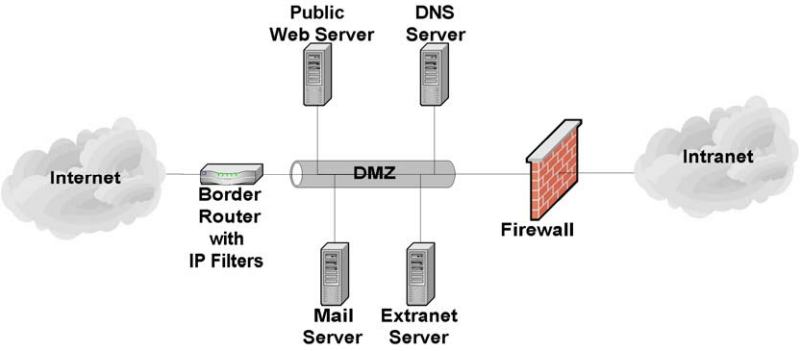
単一ファイアウォールDMZ図の一部。インターネット側の公開WebサーバーとDNSサーバーをDMZに置き、イントラネットから分離している。
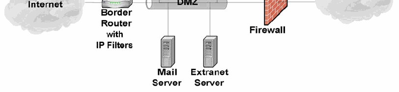
単一ファイアウォールDMZ図の一部。インターネットから境界ルーター（IPフィルター付き）を経て、メールサーバーとエクストラネットサーバーのあるDMZへ接続し、ファイアウォールでイントラネットと隔てる。
Figure 8-1. Simple Single-Firewall DMZ
Figure 8-1. 単一ファイアウォールによる単純なDMZ
A single-firewall DMZ is a low-cost approach because the organization needs only to add a single firewall and use its existing border router to provide protection to the DMZ. It is usually appropriate only for small organizations that face a minimal threat. The basic weakness in the approach is that although the router is able to protect against most network attacks, it is not “aware” of the Web server application layer protocols (e.g., HTTP) and thus cannot protect against application layer attacks aimed at the Web server. A superior approach is to add a second firewall between the Internet and the DMZ, as shown in Figure 8-2.
単一ファイアウォールのDMZは、ファイアウォールを一つ追加し、既存の境界ルーターでDMZを保護すればよいため、低コストの方式である。通常、脅威が最小限の小規模組織にのみ適している。この方式の基本的な弱点は、ルーターがほとんどのネットワーク攻撃を防げる一方で、Webサーバーのアプリケーション層プロトコル（例えばHTTP）を「認識」せず、Webサーバーを狙うアプリケーション層攻撃を防げないことである。Figure 8-2に示すように、インターネットとDMZの間に二台目のファイアウォールを追加する方が優れた方式である。
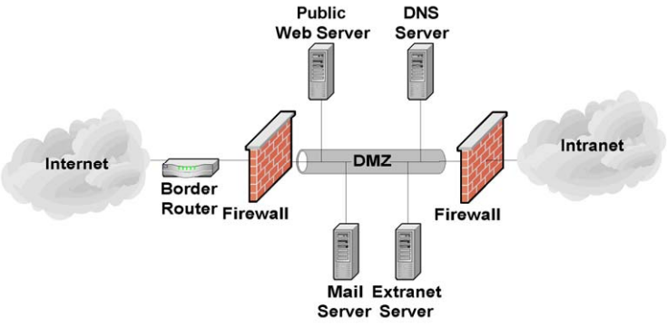
二重ファイアウォールDMZ図の一部。公開WebサーバーとDNSサーバーをインターネットおよびイントラネットの間のDMZに配置している。
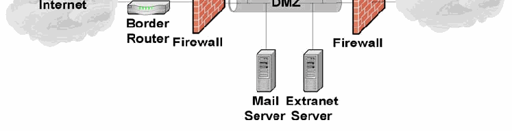
二重ファイアウォールDMZ図の一部。境界ルーターの後に二つのファイアウォールを配置し、メールサーバーとエクストラネットサーバーをDMZに置く。
Figure 8-2. Two-Firewall DMZ
Figure 8-2. 二台のファイアウォールによるDMZ
未レビュー訳A two-firewall DMZ configuration improves protection over a router-firewall DMZ because the dedicated firewalls can have more complex and powerful security rule sets. In addition, because a dedicated firewall is often able to analyze incoming and outgoing HTTP traffic, it can detect and defend against application layer attacks aimed at the Web server. Depending on the rule sets of the firewalls and the level of traffic the DMZ receives, this type of DMZ may result in some performance degradation.
二台のファイアウォールを用いるDMZ構成は、専用ファイアウォールがより複雑で強力なセキュリティ・ルールセットを持てるため、ルーターとファイアウォールを組み合わせたDMZより保護が強化される。さらに、専用ファイアウォールはHTTPの受信・送信トラフィックを解析できることが多いため、Webサーバーを狙うアプリケーション層攻撃を検知し、防御できる。ファイアウォールのルールセットやDMZが受けるトラフィック量によっては、この種のDMZで性能が低下する場合がある。
未レビュー訳For organizations that desire the security of the two-firewall DMZ but do not have the resources to purchase two firewalls, another option exists called the “service leg” DMZ. In this configuration, a firewall is constructed with three (or more) network interfaces. One network interface attaches to the border router, another interface attaches to the internal network, and a third network interface connects to the DMZ (see Figure 8-3).
二台のファイアウォールによるDMZのセキュリティを望みながら、ファイアウォールを2台購入するリソースがない組織には、「サービスレッグ」DMZと呼ばれる別の選択肢がある。この構成では、ネットワーク・インターフェースを三つ以上備えるファイアウォールを構築する。一つのインターフェースを境界ルーターに、別のインターフェースを内部ネットワークに接続し、三つ目のインターフェースをDMZに接続する（Figure 8-3を参照）。
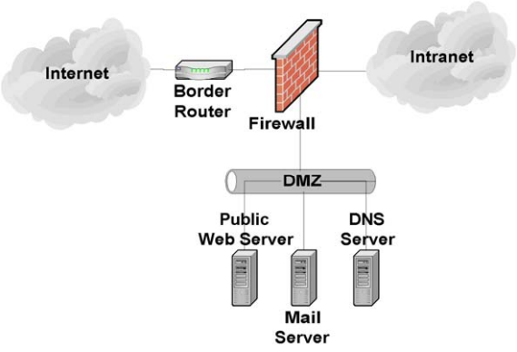
サービスレッグ型DMZ図の一部。インターネットとイントラネットの間に境界ルーターとファイアウォールを配置している。
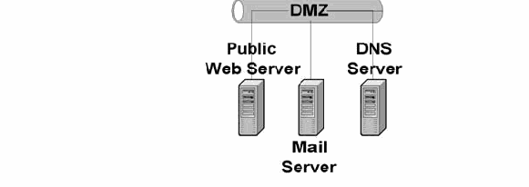
サービスレッグ型DMZ図の一部。DMZ内に公開Webサーバーを配置している。
Figure 8-3. Service Leg DMZ
Figure 8-3. サービスレッグDMZ
This configuration subjects the firewall to an increased risk of service degradation during a DoS attack aimed at the DMZ. In the standard single-firewall DMZ network configuration discussed above, a DoS attack against the Web server generally affects only the Web server. In a service-leg DMZ network configuration, the firewall bears the brunt of any DoS attack because it must examine any network traffic before the traffic reaches the Web server (or any other DMZ or internal network resource) [NIST02a]. However, it is increasingly likely that a DoS attack will take the form of a DDoS attack and consume all of the incoming network bandwidth and related devices (e.g., Internet border routers) before ever reaching a DMZ firewall.
この構成では、DMZを狙うDoS攻撃の際に、ファイアウォールがサービス低下を受けるリスクが高まる。前述の標準的な単一ファイアウォールDMZのネットワーク構成では、Webサーバーに対するDoS攻撃の影響は通常Webサーバーだけに及ぶ。サービスレッグDMZのネットワーク構成では、ネットワーク・トラフィックがWebサーバー（またはその他のDMZや内部ネットワークのリソース）に到達する前にファイアウォールがすべてを検査しなければならないため、DoS攻撃の大きな影響をファイアウォールが受ける [NIST02a]。ただし、DoS攻撃がDDoS攻撃となり、DMZファイアウォールに到達する前に、受信ネットワーク帯域幅全体と関連機器（例えばインターネット境界ルーター）を消費する可能性はますます高まっている。
The advantages of a DMZ from a security standpoint are as follows:
セキュリティの観点から見たDMZの利点は、次のとおりである：
(cid:31) The Web server may be better protected, and network traffic to and from the Web server can be monitored.
(cid:31) Webサーバーがより適切に保護される可能性があり、Webサーバーとの間のネットワーク・トラフィックを監視できる。
未レビュー訳(cid:31) Compromise of the Web server does not directly threaten the internal production network.
(cid:31) Webサーバーが侵害されても、内部の本番ネットワークが直接脅かされることはない。
未レビュー訳(cid:31) Greater control can be provided over the security of the Web server because traffic to and from the Web server can be controlled.
(cid:31) Webサーバーとの間のトラフィックを制御できるため、Webサーバーのセキュリティをより強力に管理できる。
未レビュー訳(cid:31) The DMZ network configuration can be optimized to support and protect the Web servers.
(cid:31) Webサーバーを支援し保護するために、DMZのネットワーク構成を最適化できる。
未レビュー訳The disadvantages of a DMZ from a security standpoint are as follows:
セキュリティの観点から見たDMZの欠点は、次のとおりである：
(cid:31) DoS attacks aimed at the Web server may have an effect on the internal network.
(cid:31) Webサーバーを狙うDoS攻撃が内部ネットワークに影響を及ぼす可能性がある。
未レビュー訳(cid:31) Depending on the firewall configuration controlling traffic between the DMZ and internal network, it may be possible for the Web server to be used to attack or compromise hosts on the internal network. In other words, protection offered by the DMZ depends in large part on the firewall configuration.
(cid:31) DMZと内部ネットワーク間のトラフィックを制御するファイアウォールの構成によっては、Webサーバーを利用して内部ネットワーク上のホストを攻撃または侵害できる可能性がある。言い換えると、DMZが提供する保護は、ファイアウォールの構成に大きく依存する。
未レビュー訳For organizations that support their own Web server, a DMZ is almost invariably the best option. It offers protection for the Web server and other externally accessible servers without exposing the internal network. However, it should only be considered secure when employed in conjunction with the other steps discussed in this document.
自組織でWebサーバーを運用する組織にとって、DMZはほぼ例外なく最善の選択肢である。内部ネットワークを危険にさらさずに、Webサーバーやその他の外部アクセス可能なサーバーを保護できる。ただし、本書で説明する他の手順と組み合わせて導入した場合に限り、安全と見なすべきである。
8.1.3 Outsourced Hosting
8.1.3 ホスティングの外部委託
Some organizations choose to outsource the hosting of their Web servers to a third party (e.g., an ISP, Web hosting service, or other government agency). In this case, the Web server would not be located on the organization’s network. The hosting service network would have a dedicated network that hosts many Web servers (for many organizations) operating on a single network (see Figure 8-4).
Webサーバーのホスティングを第三者（例えば、ISP、Webホスティング・サービス、または他の政府機関）に委託する組織もある。この場合、Webサーバーは組織のネットワーク上には置かれない。ホスティング・サービスのネットワークには、単一のネットワーク上で稼働する多数のWebサーバー（多数の組織向け）を収容する専用ネットワークが設けられる（Figure 8-4を参照）。
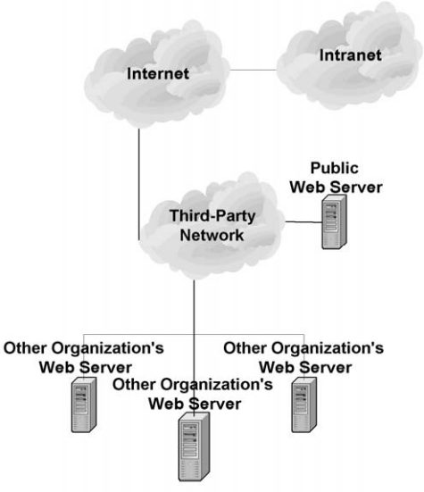
外部委託ホスティングの構成図。第三者ネットワーク上の公開Webサーバーを、インターネットと組織のイントラネットから接続する。
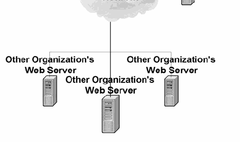
外部委託ホスティングの構成図の一部。他組織が運用する複数のWebサーバーを示す。
Figure 8-4. Outsourced Web Server Hosting
Figure 8-4. Webサーバーのホスティングを外部委託する構成
From a security standpoint, the advantages of outsourcing are as follows:
セキュリティの観点から見た外部委託の利点は、次のとおりである：
(cid:31) DoS attacks aimed at the Web server have no effect on the organization’s production network.
(cid:31) Webサーバーを狙うDoS攻撃は、組織の本番ネットワークに影響しない。
未レビュー訳(cid:31) Compromise of the Web server does not directly threaten the internal production network.
(cid:31) Webサーバーが侵害されても、内部の本番ネットワークが直接脅かされることはない。
未レビュー訳(cid:31) The outsourcer may have greater knowledge of securing and protecting Web servers.
(cid:31) 委託先は、Webサーバーのセキュリティ確保と保護に関する知識がより豊富な場合がある。
未レビュー訳(cid:31) The network can be optimized solely for the support and protection of Web servers.
(cid:31) Webサーバーの支援と保護だけを目的としてネットワークを最適化できる。
未レビュー訳The disadvantages of outsourcing from a security standpoint are as follows:
セキュリティの観点から見た外部委託の欠点は、次のとおりである：
(cid:31) It requires trusting a third party with Web server content.
(cid:31) Webサーバーのコンテンツを第三者に預ける必要がある。
未レビュー訳(cid:31) It is more difficult to remotely administer the Web server or remotely update Web server content.
(cid:31) Webサーバーのリモート管理やコンテンツのリモート更新がより困難になる。
未レビュー訳(cid:31) Less control can be provided over the security of the Web server.
(cid:31) Webサーバーのセキュリティを管理できる範囲が狭まる。
未レビュー訳(cid:31) The Web server may be affected by attacks aimed at other Web servers hosted by the outsourcer on the same network.
(cid:31) 委託先が同じネットワーク上でホストする他のWebサーバーを狙った攻撃によって、対象のWebサーバーも影響を受ける可能性がある。
未レビュー訳Outsourcing often makes sense for smaller organizations that cannot afford to support the necessary Web server staff. It may also be appropriate for larger organizations that do not wish to host their own Web servers. Outsourcing usually does not make sense for organizations that wish to maintain tight control over their Web servers.
外部委託は、必要なWebサーバー担当者を雇用する余裕がない小規模組織にとって、多くの場合合理的である。また、自組織でWebサーバーをホストしたくない大規模組織にも適している場合がある。Webサーバーを厳格に管理したい組織には、通常、外部委託は適さない。
8.1.4 Management Network
8.1.4 管理ネットワーク
Web servers and other important components can be connected to each other and managed through an organization’s standard networks or through a separate network known as a management network. If a management network is used, each host being managed through the network has an additional network interface known as a management interface that connects to the management network. Also, each host being managed is unable to pass any traffic between its management interface and any of its other network interfaces. Consoles and other hosts that are used to manage the Web components are attached to the management network only. This architecture effectively isolates the management network from the production networks. The benefits of doing this are to protect the components from some attacks and to ensure that the components can be managed under adverse conditions (e.g., DDoS attack). Disadvantages of using a management network include the additional costs of networking equipment and other hardware (e.g., personal computers [PC] for the consoles) and the inconvenience for Web component administrators of using separate computers for management and monitoring.
Webサーバーやその他の重要な構成要素は、組織の標準ネットワークを通じて相互に接続・管理することも、管理ネットワークと呼ばれる独立したネットワークを通じて接続・管理することもできる。管理ネットワークを使用する場合、そのネットワーク経由で管理される各ホストには、管理ネットワークに接続する管理インターフェースと呼ばれる追加のネットワーク・インターフェースがある。また、管理対象の各ホストは、管理インターフェースと他のネットワーク・インターフェースとの間でトラフィックを転送できない。Web関連の構成要素を管理するために使用されるコンソールやその他のホストは、管理ネットワークにのみ接続される。このアーキテクチャにより、管理ネットワークは本番ネットワークから効果的に隔離される。これにより、構成要素を一部の攻撃から保護し、悪条件下（例えば、DDoS攻撃下）でも管理できるようになる。管理ネットワークを使用する欠点には、ネットワーク機器などのハードウェア（例えば、コンソール用のパーソナルコンピューター [PC]）の追加費用や、Web構成要素の管理者が管理と監視に別々のコンピューターを使う不便さがある。
8.2 Network Element Configuration
8.2 ネットワーク要素の構成
Once the Web server has been positioned in the network, the network infrastructure elements should be configured to support and protect it. The primary elements of a network infrastructure that affect Web server security are firewalls, routers, IDSs, intrusion prevention systems (IPS), switches, load balancers, and reverse proxies. Each has an important role to play and is critical to the overall strategy of protecting the Web server through defense-in-depth. Unfortunately, when it comes to securing a Web server, there is no single “silver bullet” solution. A firewall or IPS alone cannot adequately protect a public Web server from all threats or attacks.
Webサーバーをネットワーク内に配置したら、それを支援し保護するようネットワーク基盤の要素を設定すべきである。Webサーバーのセキュリティに影響するネットワーク基盤の主な要素は、ファイアウォール、ルーター、IDS、侵入防止システム（IPS）、スイッチ、ロードバランサー、リバースプロキシである。それぞれが重要な役割を担い、多層防御によってWebサーバーを保護する全体戦略に不可欠である。残念ながら、Webサーバーのセキュリティ確保に万能の解決策はない。ファイアウォールまたはIPSだけでは、一般向けWebサーバーをあらゆる脅威や攻撃から十分に保護できない。
8.2.1 Router/Firewall Configuration
8.2.1 ルーター／ファイアウォールの構成
Several types of firewalls exist. The most basic firewalls are routers that can provide access control for IP packets. In the middle are stateful firewalls that can provide access control based on TCP and User Datagram Protocol (UDP) as well as IP. The most powerful firewalls are application layer or proxy firewalls that are able to understand and filter Web content.67
ファイアウォールにはいくつかの種類がある。最も基本的なファイアウォールは、IPパケットに対するアクセス制御を提供できるルーターである。その中間に位置するのは、IPに加えてTCPおよびユーザー・データグラム・プロトコル（UDP）に基づくアクセス制御を提供できるステートフル・ファイアウォールである。最も強力なファイアウォールは、Webコンテンツを理解してフィルタリングできるアプリケーション層ファイアウォールまたはプロキシ・ファイアウォールである。67
A common misperception about firewalls (and routers acting as firewalls) is that they eliminate all risk and can protect against misconfiguration of the Web server or poor network design. Unfortunately, this is not the case. Firewalls and routers themselves are vulnerable to misconfiguration and software vulnerabilities. In addition, many firewalls have limited insight into the application layer where many attacks occur. Thus, Web servers in particular are vulnerable to many attacks, even when located behind a secure, well-configured firewall.
ファイアウォール（およびファイアウォールとして機能するルーター）に関するよくある誤解は、すべてのリスクを排除し、Webサーバーの設定ミスや不適切なネットワーク設計からも保護できるというものである。残念ながら、そうではない。ファイアウォールやルーター自体も、設定ミスやソフトウェアの脆弱性の影響を受ける。さらに、多くのファイアウォールは、多くの攻撃が発生するアプリケーション層を十分に把握できない。そのため、安全で適切に設定されたファイアウォールの背後に配置されていても、とりわけWebサーバーは多くの攻撃に対して脆弱である。
未レビュー訳A firewall (or router acting as a firewall) that is protecting a Web server should be configured to block all access to the Web server from the Internet except the necessary ports, such as TCP ports 80 (HTTP) and 443 (HTTPS). A firewall is the first line of defense for a Web server; however, to be truly secure, organizations need to implement layered protection for their Web servers (and networks). Most importantly, organizations should strive to maintain all systems in a secure posture and not depend solely on firewalls, routers, or any other single component to stop attackers.
Webサーバーを保護するファイアウォール（またはファイアウォールとして機能するルーター）は、TCPポート80（HTTP）や443（HTTPS）など、必要なポートを除いて、インターネットからWebサーバーへのすべてのアクセスを遮断するよう設定すべきである。ファイアウォールはWebサーバーの第一の防御線である。しかし、真に安全にするには、組織はWebサーバー（およびネットワーク）に多層的な保護を実装する必要がある。何より重要なのは、組織がすべてのシステムを安全な状態に保つよう努め、攻撃者を阻止するためにファイアウォール、ルーター、その他の単一コンポーネントだけに依存しないことである。
A modern enterprise router is able to function as a network and transport layer filter (e.g., a basic firewall). A router functioning as a network/transport layer firewall can provide filtering based on several pieces of information [NIST02a], including the following:
最新のエンタープライズ・ルーターは、ネットワーク層およびトランスポート層のフィルター（例えば、基本的なファイアウォール）として機能できる。ネットワーク層／トランスポート層のファイアウォールとして機能するルーターは、次のような複数の情報に基づいてフィルタリングできる [NIST02a]：
(cid:31) Source IP address
(cid:31) 送信元IPアドレス
未レビュー訳(cid:31) Destination IP address
(cid:31) 宛先IPアドレス
未レビュー訳(cid:31) Traffic type
(cid:31) トラフィックの種類
未レビュー訳(cid:31) TCP/UDP port number and state.
(cid:31) TCP/UDPポート番号および状態。
未レビュー訳The strength of routers is in their cost. Most organizations already have a border router that can be configured to provide network/transport layer firewall capabilities.
ルーターの強みはコストにある。ほとんどの組織はすでに境界ルーターを備えており、ネットワーク層／トランスポート層のファイアウォール機能を提供するよう設定できる。
The weaknesses of routers include the following:
ルーターの弱点は次のとおりである：
(cid:31) Susceptibility to application layer attacks (e.g., cannot examine Web content for embedded malicious code)
(cid:31) アプリケーション層攻撃に対する脆弱性（例えば、Webコンテンツに埋め込まれた悪意のあるコードを調べられない）
未レビュー訳(cid:31) Susceptibility to attacks via allowed ports
(cid:31) 許可されたポートを介した攻撃に対する脆弱性
未レビュー訳(cid:31) Difficulty of configuration and administration
(cid:31) 設定と管理が困難
未レビュー訳(cid:31) Limitations in logging capabilities
(cid:31) ログ記録機能の制約
未レビュー訳(cid:31) Processing capabilities that may be more limited and overtaxed by complex rule sets (i.e., access control lists)
(cid:31) 処理能力がより限られ、複雑なルールセット（すなわちアクセス制御リスト）によって過負荷となる可能性がある
未レビュー訳(cid:31) Insufficient rule set expressiveness and filtering capabilities.
(cid:31) ルールセットの表現力およびフィルタリング機能が不十分。
未レビュー訳The only “pure” network layer firewalls available today are small office/home office (SOHO) firewall appliances and personal firewalls [NIST02a] that may only perform basic packet-level filtering.
現在利用できる「純粋な」ネットワーク層ファイアウォールは、小規模オフィス／ホームオフィス（SOHO）向けのファイアウォール機器とパーソナル・ファイアウォール [NIST02a]に限られ、基本的なパケットレベルのフィルタリングしか行わない場合がある。
Stateful inspection firewalls are transport layer devices that incorporate “awareness” of the state of a TCP connection. Stateful inspection firewalls maintain internal information, such as the state of the connections passing through them and the contents of some of the data streams. This allows better and more accurate rule sets and filtering to be specified. Stateful inspection firewalls add the capability to enforce rules based on connection state to the capabilities of a filtering router.
ステートフル・インスペクション・ファイアウォールは、TCP接続の状態を「認識」するトランスポート層の機器である。これらのファイアウォールは、通過する接続の状態や一部のデータストリームの内容など、内部情報を保持する。これにより、より適切で正確なルールセットとフィルタリングを指定できる。ステートフル・インスペクション・ファイアウォールは、フィルタリング・ルーターの機能に、接続状態に基づくルールを適用する機能を追加する。
Application layer firewalls (sometimes called application-proxy gateway firewalls) are advanced firewalls that combine network and transport layer access control with application layer functionality. Application layer firewalls permit no traffic directly between the Internet and the internal network. They can usually perform extensive logging and access control.
アプリケーション層ファイアウォール（アプリケーション・プロキシ・ゲートウェイ・ファイアウォールとも呼ばれる）は、ネットワーク層およびトランスポート層のアクセス制御にアプリケーション層の機能を組み合わせた高度なファイアウォールである。アプリケーション層ファイアウォールは、インターネットと内部ネットワークとの間の直接通信を一切許可しない。通常、詳細なログ記録とアクセス制御を行える。
Application layer firewalls are considered the most secure type of firewall and have numerous advantages over packet filtering routers and stateful inspection firewalls, including the following:
アプリケーション層ファイアウォールは、最も安全な種類のファイアウォールと見なされ、パケットフィルタリング・ルーターやステートフル・インスペクション・ファイアウォールに比べて、次のような多くの利点がある：
(cid:31) Logging capabilities
(cid:31) ログ記録機能
未レビュー訳(cid:31) Filtering capabilities (can filter specific types of Web content and specific HTTP commands)
(cid:31) フィルタリング機能（特定の種類のWebコンテンツや特定のHTTPコマンドをフィルタリングできる）
未レビュー訳(cid:31) Protocol conformance
(cid:31) プロトコル適合性
未レビュー訳(cid:31) Validation of protocol behaviors
(cid:31) プロトコル動作の検証
未レビュー訳(cid:31) Integrated signature-based detection of application layer attacks
(cid:31) アプリケーション層攻撃をシグネチャベースで検知する機能の統合
未レビュー訳(cid:31) Ease of configuration
(cid:31) 設定の容易さ
未レビュー訳(cid:31) User authentication capabilities.
(cid:31) ユーザー認証機能。
未レビュー訳The primary disadvantages that application layer firewalls have when compared to packet filtering routers and stateful inspection firewalls are as follows:
パケットフィルタリング・ルーターおよびステートフル・インスペクション・ファイアウォールと比較した場合、アプリケーション層ファイアウォールの主な欠点は次のとおりである：
(cid:31) Speed of throughput (if platform is not adequately sized)
(cid:31) スループット速度（プラットフォームの規模が十分でない場合）
未レビュー訳(cid:31) Cost (if high-end hardware is required to operate efficiently)
(cid:31) コスト（効率的な運用にハイエンド・ハードウェアが必要な場合）
未レビュー訳(cid:31) Inadequate support for less popular and new protocols.
(cid:31) あまり普及していないプロトコルや新しいプロトコルへのサポートが不十分。
未レビュー訳Although not strictly a limitation, some application layer firewalls are implemented on hosts running general-purpose OSs (e.g., Windows, Linux, Unix). This arrangement introduces an added layer of complexity and some additional risk because the general-purpose OS must also be secured in addition to the firewall software itself. Application layer firewalls are increasingly being deployed as appliance-based devices, which may use specialized OSs. Routers and stateful inspection firewalls also typically run on specialized OSs.
厳密には制約とは言えないが、一部のアプリケーション層ファイアウォールは、汎用OS（例えば、Windows、Linux、Unix）を実行するホスト上に実装されている。この方式では、ファイアウォール・ソフトウェア自体に加えて汎用OSも保護しなければならないため、複雑さが増し、追加のリスクも生じる。アプリケーション層ファイアウォールは、専用OSを使用する場合があるアプライアンス型機器として導入されることが増えている。ルーターやステートフル・インスペクション・ファイアウォールも、通常は専用OS上で動作する。
未レビュー訳To successfully protect a Web server using a firewall, ensure that the firewall is patched to the latest or most secure level (both the application and the underlying OS) and is configured to perform the following:
ファイアウォールを用いてWebサーバーを適切に保護するには、ファイアウォール（アプリケーションと基盤となるOSの両方）に最新または最も安全なレベルのパッチを適用し、次の処理を行うよう設定する：
(cid:31) Control all traffic between the Internet and the Web server
(cid:31) インターネットとWebサーバーとの間のすべてのトラフィックを制御する
未レビュー訳(cid:31) Block all inbound traffic to the Web server except traffic which is required, such as TCP ports 80 (HTTP) and/or 443 (HTTPS)
(cid:31) TCPポート80（HTTP）および／または443（HTTPS）など、必要なトラフィックを除いて、Webサーバーへのすべての受信トラフィックを遮断する
未レビュー訳(cid:31) Block all inbound traffic with an internal IP address (to prevent IP spoofing attacks)
(cid:31) 内部IPアドレスを持つすべての受信トラフィックを遮断する（IPスプーフィング攻撃を防ぐため）
未レビュー訳(cid:31) Block client connections from the Web server to the Internet and the organization’s internal network (this will reduce the impact of some successful compromises)
(cid:31) Webサーバーからインターネットおよび組織の内部ネットワークへのクライアント接続を遮断する（これにより、一部の侵害が成功した場合の影響を軽減できる）
未レビュー訳(cid:31) Block (in conjunction with the intrusion detection or prevention system [see Section 8.2.2]) IP addresses or subnets that the IDS or IPS reports are attacking the organizational network
(cid:31) 侵入検知システムまたは侵入防止システムと連携し（Section 8.2.2を参照）、組織のネットワークを攻撃しているとIDSまたはIPSが報告したIPアドレスやサブネットを遮断する
未レビュー訳(cid:31) Notify the network or Web server administrator or appropriate security personnel of suspicious activity through an appropriate means (e.g., page, e-mail, network trap)
(cid:31) 適切な手段（例えば、ページ、電子メール、ネットワーク・トラップ）を用いて、不審な活動をネットワーク管理者、Webサーバー管理者、または適切なセキュリティ担当者に通知する
未レビュー訳(cid:31) Provide content filtering
(cid:31) コンテンツ・フィルタリングを行う
未レビュー訳(cid:31) Protect against DoS attacks
(cid:31) DoS攻撃から保護する
未レビュー訳(cid:31) Detect malformed or known attack URL requests
(cid:31) 不正な形式のURL要求や、攻撃に使われることが知られているURL要求を検知する
未レビュー訳(cid:31) Log critical events, including the following details:
(cid:31) 次の詳細情報を含む重要なイベントを記録する：
未レビュー訳(cid:131) Time/date
(cid:131) 時刻／日付
未レビュー訳(cid:131) Interface IP address
(cid:131) インターフェースのIPアドレス
未レビュー訳(cid:131) Manufacturer-specific event name
(cid:131) メーカー固有のイベント名
未レビュー訳(cid:131) Standard attack event (if one exists)
(cid:131) 標準的な攻撃イベント（存在する場合）
未レビュー訳(cid:131) Source and destination IP addresses
(cid:131) 送信元および宛先のIPアドレス
未レビュー訳(cid:131) Source and destination port numbers
(cid:131) 送信元および宛先のポート番号
未レビュー訳(cid:131) Network protocol.
(cid:131) ネットワーク・プロトコル。
未レビュー訳Most firewalls perform some type of logging of the traffic they receive. For most firewalls, the default logging configuration is suitable, provided logging is enabled. Administrators should consult the manufacturer’s documentation if they believe they require additional information to be logged. Certain firewalls include an ability to track and log information for each rule, which enables accountability to a very specific extent.
ほとんどのファイアウォールは、受信したトラフィックの何らかのログを記録する。多くのファイアウォールでは、ログ記録が有効になっていれば、既定のログ設定で十分である。追加情報をログに記録する必要があると管理者が判断した場合は、メーカーの文書を確認すべきである。ルールごとの情報を追跡・記録できるファイアウォールもあり、非常に詳細な説明責任を実現できる。
Many firewalls support the ability to selectively decide what information to log. If a firewall receives a series of similar packets from the same location, it may decide not to log any additional packets after the first one. Although this is a valuable feature, consider the consequences: each packet that is dropped and not logged is potential evidence of malicious intent. The principle of logging, a fundamental aspect of accountability, is discussed in detail in Section 9.1.
多くのファイアウォールでは、どの情報をログに記録するかを選択できる。同じ場所から類似したパケットが連続して届くと、最初のパケット以降はログに記録しないと判断する場合がある。これは有用な機能だが、影響を考慮する必要がある。破棄され、記録されなかった各パケットは、悪意の意図を示す潜在的な証拠である。説明責任の基本的な側面であるログ記録の原則については、Section 9.1で詳しく説明する。
As with OSs and other security-enforcing elements, a firewall requires updates. This includes updating firmware for hardware and router-based firewalls. Specific instructions on how to update a firewall are found in the manufacturer’s documentation. Administrators should check for firewall updates frequently.
OSやその他のセキュリティ強制要素と同様に、ファイアウォールにも更新が必要である。これには、ハードウェア型およびルーター型ファイアウォールのファームウェア更新も含まれる。ファイアウォールの更新方法に関する具体的な手順は、メーカーの文書に記載されている。管理者はファイアウォールの更新を頻繁に確認すべきである。
8.2.2 Intrusion Detection and Prevention Systems
8.2.2 侵入検知システムおよび侵入防止システム
An IDS is an application that monitors the events occurring in a system or network and analyzes them for signs of potential incidents, which are violations or imminent threats of violation of computer security policies, acceptable use policies, or standard security practices.68 An IPS has all the capabilities of an IDS and can also attempt to stop potential incidents. Because IDS and IPS systems offer many of the same capabilities, they are often collectively called intrusion detection and prevention systems (IDPS). When an IDPS detects a potential incident, it notifies administrators through IDPS console messages, emails, pages, or other mechanisms.
IDS（侵入検知システム）は、システムまたはネットワークで発生するイベントを監視し、コンピューター・セキュリティ・ポリシー、許容される利用方針、または標準的なセキュリティ慣行への違反、あるいは違反の差し迫った脅威である潜在的インシデントの兆候を分析するアプリケーションである。68 IPS（侵入防止システム）はIDSのすべての機能を備え、潜在的インシデントを阻止することも試みる。IDSとIPSは多くの機能を共有するため、両者をまとめて侵入検知・防止システム（IDPS）と呼ぶことが多い。IDPSが潜在的インシデントを検知すると、IDPSコンソールのメッセージ、電子メール、ページャー、その他の手段で管理者に通知する。
未レビュー訳The two types of IDPSs most relevant for Web security are host-based and network-based.69 A host-based IDPS monitors the characteristics of a single host and the events occurring within that host to identify and stop suspicious activity. Host-based IDPS software must be installed on each individual computer that is to be monitored or protected. Host-based IDPSs are very closely integrated with the OSs of the host computers they protect. Thus, a host-based IDPS must be designed specifically for each OS (and often each version of that OS). Host-based IDPSs monitor various aspects of hosts, such as network traffic, system logs, running processes, file access and modification, and system and application configuration changes.
Webセキュリティに最も関係するIDPSには、ホストベースとネットワークベースの二種類がある。69 ホストベースIDPSは、単一ホストの特性とそのホスト内で発生するイベントを監視し、不審な活動を特定して阻止する。監視または保護する各コンピューターに、ホストベースIDPSソフトウェアをインストールしなければならない。ホストベースIDPSは、保護対象のホストコンピューターのOSと密接に統合される。そのため、ホストベースIDPSは各OS（多くの場合、そのOSの各バージョン）専用に設計されなければならない。ホストベースIDPSは、ネットワーク・トラフィック、システムログ、実行中のプロセス、ファイルへのアクセスと変更、システムおよびアプリケーションの設定変更など、ホストのさまざまな側面を監視する。
未レビュー訳Host-based IDPSs are especially useful when most of the network traffic to and from a Web server is encrypted (e.g., SSL/TLS is in use) because the functionality and capability of network-based IDPSs (see below) is severely limited when network traffic is encrypted. Also, because they are located on the server, host-based IDPSs can detect some attacks and penetration attempts not recognized by network-based IDPSs. Unfortunately, host-based IDPSs can have a negative effect on host performance. In general, enabling more extensive detection capabilities and having more events to monitor both have a negative impact on the performance of the host. Host-based IDPSs may not detect some network-based attacks, such as certain DoS attacks. If a host-based IDPS is on a Web server that is compromised, it is very likely that the attacker will also compromise the IDPS itself.
Webサーバーとの間のネットワーク・トラフィックの大半が暗号化されている場合（例えば、SSL/TLSを使用している場合）、ホストベースIDPSは特に有用である。ネットワーク・ベースIDPS（後述）の機能は、ネットワーク・トラフィックが暗号化されていると大幅に制限されるためである。また、サーバー上に配置されるため、ホストベースIDPSはネットワークベースIDPSが認識しない一部の攻撃や侵入の試みを検知できる。残念ながら、ホストベースIDPSはホストの性能に悪影響を及ぼすことがある。一般に、より広範な検知機能を有効にすることも、監視対象のイベント数が増えることも、どちらもホストの性能に悪影響を与える。ホストベースIDPSは、特定のDoS攻撃など、一部のネットワークベース攻撃を検知できない場合がある。侵害されたWebサーバー上にホストベースIDPSがある場合、攻撃者がIDPS自体も侵害する可能性が非常に高い。
未レビュー訳A network-based IDPS monitors network traffic for particular network segments or network devices and analyzes the network and application protocol activity to identify and stop suspicious activity. Most network-based IDPSs use predefined “attack signatures” to detect and identify attacks. Attack signatures are patterns that correspond to known types of intrusions. Network-based IDPSs also use other detection methods to identify anomalous activity, protocol violations, and other unusual activity.
ネットワークベースIDPSは、特定のネットワーク・セグメントまたはネットワーク機器のネットワーク・トラフィックを監視し、ネットワークおよびアプリケーション・プロトコルの活動を分析して不審な活動を特定し、阻止する。ほとんどのネットワークベースIDPSは、事前定義された「攻撃シグネチャ」を使用して攻撃を検知・特定する。攻撃シグネチャは、既知の種類の侵入に対応するパターンである。ネットワークベースIDPSは、異常な活動、プロトコル違反、その他の通常とは異なる活動を特定するため、他の検知方式も使用する。
Unlike a host-based IDPS, a network-based IDPS can monitor network activity for many hosts simultaneously. Network-based IDPSs can usually detect more network-based attacks and can more easily provide a comprehensive picture of the current attacks against a network. Because network-based IDPSs are installed on dedicated hosts, they do not have a negative effect on the performance of the Web server host and are not immediately compromised by a successful attack on the Web server.
ホストベースIDPSとは異なり、ネットワークベースIDPSは多数のホストのネットワーク活動を同時に監視できる。通常、より多くのネットワークベース攻撃を検知でき、ネットワークに対する現在の攻撃の全体像をより容易に把握できる。専用ホストにインストールされるため、ネットワークベースIDPSはWebサーバーホストの性能に悪影響を与えず、Webサーバーへの攻撃が成功しても直ちに侵害されることはない。
Network-based IDPSs do have some limitations. The timing of an attack can have a significant impact on the ability of a network-based IDPS to detect an attack. For example, if an attacker spreads out the timing of an attack over a period of hours or days, the attack may not be detected by the IDPS. Network configuration, such as the use of asymmetric routing, can have a negative impact on the ability of a network-based IDPS to detect attacks. Network-based IDPSs are also more susceptible to being disabled by DoS attacks (even those not directly targeted at the IDPS). Also, depending on how the network-based IDPS is integrated into the network, it is possible to negatively affect the availability of the network in the event of an IDPS hardware failure.
ネットワークベースIDPSにはいくつかの制約もある。攻撃のタイミングは、ネットワークベースIDPSの攻撃検知能力に大きな影響を与えることがある。例えば、攻撃者が数時間または数日にわたって攻撃のタイミングを分散させると、IDPSが攻撃を検知できない場合がある。非対称ルーティングの使用などのネットワーク構成も、ネットワークベースIDPSの攻撃検知能力に悪影響を及ぼすことがある。ネットワークベースIDPSは、DoS攻撃（IDPSを直接狙った攻撃でなくても）によって無効化されやすい。また、ネットワークベースIDPSをネットワークに統合する方法によっては、IDPSのハードウェア障害時にネットワークの可用性へ悪影響が及ぶ可能性がある。
未レビュー訳Both host-based and network-based IDPSs require frequent updates to their attack signature databases so that they can recognize new attacks. An IDPS that is not updated frequently will fail to recognize the latest (and often most popular) attacks. Both types of IDPSs may be limited in their ability to detect zero-day attacks because it is unlikely that an appropriate signature is available. A host-based IDPS may have a better chance of detecting a zero-day attack because it is better able to detect the actions taken by an attacker after a successful exploit (e.g., new unauthorized privileged accounts, installation of malicious software).
ホストベースとネットワークベースのどちらのIDPSも、新たな攻撃を認識できるよう、攻撃シグネチャ・データベースを頻繁に更新する必要がある。頻繁に更新されないIDPSは、最新の（そして多くの場合、最も広く使われている）攻撃を認識できなくなる。どちらの種類のIDPSも、適切なシグネチャが用意されている可能性が低いため、ゼロデイ攻撃の検知能力が制限されることがある。ホストベースIDPSは、攻撃者が侵害に成功した後に行う操作（例えば、新たな不正な特権アカウントや悪意のあるソフトウェアのインストール）をより適切に検知できるため、ゼロデイ攻撃を検知できる可能性がより高い。
未レビュー訳File integrity checkers are a simple form of host-based IDPS. A file integrity checker computes and stores a hash for every file of interest and establishes a database of file hashes. It provides a tool for system administrators to recognize changes to files, particularly unauthorized changes. File integrity checkers are available as standalone products and bundled with other host-based IDPS techniques. Some host-based IDPSs can monitor file access attempts and stop suspicious attempts to read, modify, delete, and execute files. A host-based IDPS with this capability could be configured to protect important Web server files.
ファイル完全性チェッカーは、ホストベースIDPSの単純な形態である。関心対象の各ファイルについてハッシュを計算して保存し、ファイル・ハッシュのデータベースを構築する。これは、システム管理者がファイルの変更、特に不正な変更を認識するためのツールとなる。ファイル完全性チェッカーは、単独製品としても、他のホストベースIDPS技術に含まれる形でも利用できる。一部のホストベースIDPSは、ファイルへのアクセス試行を監視し、ファイルの読み取り、変更、削除、実行を試みる不審な操作を阻止できる。この機能を備えたホストベースIDPSは、重要なWebサーバーファイルを保護するよう設定できる。
To successfully protect a Web server using an IDPS, ensure that the IDPS is configured to—
IDPSを使用してWebサーバーを適切に保護するには、IDPSを次のように設定する：
未レビュー訳(cid:31) Monitor network traffic to and from the Web server
(cid:31) Webサーバーとの間のネットワーク・トラフィックを監視する
未レビュー訳(cid:31) Monitor changes to critical files on the Web server (file integrity checking capability)70
(cid:31) Webサーバー上の重要ファイルに対する変更を監視する（ファイル完全性検査機能）70
未レビュー訳(cid:31) Monitor the system resources available on the Web server host (host-based)
(cid:31) Webサーバーホストで利用可能なシステムリソースを監視する（ホストベース）
未レビュー訳(cid:31) Block (in conjunction with the firewall) IP addresses or subnets that are attacking the organizational network
(cid:31) ファイアウォールと連携して、組織のネットワークを攻撃しているIPアドレスまたはサブネットを遮断する
未レビュー訳(cid:31) Notify the appropriate parties (e.g., IDPS administrator, Web server administrator, incident response team) of suspected attacks through appropriate means according to the organizational incident response policy and procedures
(cid:31) 組織のインシデント対応ポリシーおよび手順に従い、適切な手段で、攻撃の疑いを適切な関係者（例えば、IDPS管理者、Webサーバー管理者、インシデント対応チーム）に通知する
未レビュー訳(cid:31) Detect as wide a variety of scanning and attacks as possible with an acceptable level of false positives
(cid:31) 許容可能な誤検知率で、可能な限り幅広い種類のスキャンと攻撃を検知する
未レビュー訳(cid:31) Log events, including the following details:
(cid:31) 次の詳細情報を含むイベントを記録する：
未レビュー訳(cid:131) Time/date
(cid:131) 時刻／日付
未レビュー訳(cid:131) Sensor IP address
(cid:131) センサーのIPアドレス
未レビュー訳(cid:131) Manufacturer-specific attack name
(cid:131) メーカー固有の攻撃名
未レビュー訳(cid:131) Standard attack name (if one exists)
(cid:131) 標準的な攻撃名（存在する場合）
未レビュー訳(cid:131) Source and destination IP addresses
(cid:131) 送信元および宛先のIPアドレス
未レビュー訳(cid:131) Source and destination port numbers
(cid:131) 送信元および宛先のポート番号
未レビュー訳(cid:131) Network protocol
(cid:131) ネットワーク・プロトコル
未レビュー訳(cid:31) For network events, capture packet header information to assist with the analysis and forensics process
(cid:31) ネットワーク・イベントについては、分析およびフォレンジック調査を支援するため、パケット・ヘッダー情報を取得する
未レビュー訳(cid:31) Update with new attack signatures frequently (e.g., on a daily to weekly basis, typically after testing the updates).
(cid:31) 新しい攻撃シグネチャを頻繁に更新する（例えば、更新をテストした後、通常は日次から週次の頻度で更新する）。
未レビュー訳In addition, it is critical that network-based IDPSs and their underlying OSs are hardened because network-based IDPSs are often a target of attackers. In particular, the network-based IDPSs should not respond to any type of system interrogation through their monitoring interfaces. If remote management is desired, it should be conducted through an out-of-band means (e.g., separate isolated network). Although sometimes difficult to administer and interpret, IDPSs are a critical early warning system that can provide the Web server administrator with the necessary information to defend the Web server from attack [NIST07].
さらに、ネットワークベースIDPSとその基盤OSを強化することは不可欠である。ネットワークベースIDPSは攻撃者の標的となることが多いためである。特に、ネットワークベースIDPSは、監視インターフェースを介したいかなる種類のシステム照会にも応答すべきではない。リモート管理を行う場合は、帯域外の手段（例えば、独立して隔離されたネットワーク）を通じて行うべきである。管理や解釈が難しいこともあるが、IDPSは重要な早期警告システムであり、Webサーバー管理者が攻撃からWebサーバーを防御するために必要な情報を提供できる [NIST07]。
8.2.3 Network Switches
8.2.3 ネットワーク・スイッチ
Network switches are devices that provide connectivity between two or more hosts located on the same network segment. They are similar to hubs in that they allow communications between hosts, but, unlike hubs, the switches have more “intelligence” and send communications to only those hosts to which the communications are addressed. The benefit of this from a security standpoint is that when switches are employed on a network, it is much more difficult to eavesdrop on communications between other hosts on the network segment. This is extremely important when a Web server is on a network segment that is used by other hosts. For example, if a hub is used and a host on the DMZ is compromised, an attacker may be able to eavesdrop on the communications of other hosts on the DMZ, possibly leading to the compromise of those hosts or the information they communicate across the network. For example, e-mail servers in their default configurations receive unencrypted passwords; a compromise of the Web server would lead to the exposure of e-mail passwords by sniffing them from the compromised Web server.
ネットワーク・スイッチは、同じネットワーク・セグメント上にある二つ以上のホスト間の接続を提供する機器である。ホスト間の通信を可能にする点ではハブに似ているが、ハブとは異なり、スイッチはより「インテリジェント」で、通信の宛先となっているホストだけに通信を送信する。セキュリティ上の利点は、ネットワーク上でスイッチを使用すると、同じセグメント上の他のホスト間の通信を盗聴することがはるかに困難になることである。これは、Webサーバーが他のホストも使用するネットワーク・セグメント上にある場合に非常に重要である。例えば、ハブを使用し、DMZ上のホストが侵害されると、攻撃者はDMZ上の他のホストの通信を盗聴できる場合があり、それによりホストやネットワーク経由で通信される情報が侵害される可能性がある。例えば、既定の構成では、電子メール・サーバーは暗号化されていないパスワードを受信する。Webサーバーが侵害されると、侵害されたWebサーバーからパスワードを盗聴され、電子メールのパスワードが漏えいする。
Many switches include specific security settings that further enhance the security of the network by making it difficult for a malicious entity to “defeat” the switch. Some examples include the ability to minimize the risk of Address Resolution Protocol (ARP) spoofing and ARP poisoning attacks.71 If a switch has these security capabilities, they should be enabled (see appropriate manufacturer documentation).
多くのスイッチには、悪意のある者がスイッチを「無効化」しにくくすることでネットワークのセキュリティをさらに高める、特定のセキュリティ設定がある。例えば、Address Resolution Protocol（ARP）スプーフィング攻撃やARPポイズニング攻撃のリスクを軽減する機能がある。71 スイッチがこのようなセキュリティ機能を備えている場合は、有効にすべきである（該当するメーカーの文書を参照）。
未レビュー訳Switches can have a negative impact on network-based IDPSs (see Section 8.2.2). Most network switches allow network administrators to configure a specific port on the switch, known as a span port, so that it replicates all the switch’s traffic to the port used by the IDPS. This allows a network-based IDPS to see all traffic on a particular network segment. However, under high loads, the switch might have to stop sending traffic to the span port, causing the IDPS to be unable to monitor network activity. Also, other devices use span ports, and there are typically very few span ports on a switch; therefore, it might not be possible to connect an IDPS to a particular switch because its span ports are all in use.
スイッチはネットワークベースIDPSに悪影響を及ぼすことがある（Section 8.2.2を参照）。ほとんどのネットワーク・スイッチでは、ネットワーク管理者がスイッチ上の特定ポートを設定できる。このポートはスパンポートと呼ばれ、スイッチのすべてのトラフィックをIDPSが使用するポートに複製する。これにより、ネットワークベースIDPSは特定のネットワーク・セグメント上のすべてのトラフィックを確認できる。ただし、高負荷時には、スイッチがスパンポートへのトラフィック送信を停止しなければならない場合があり、IDPSがネットワーク活動を監視できなくなることがある。また、他の機器もスパンポートを使用し、スイッチ上のスパンポート数は通常ごく少ない。そのため、すべてのスパンポートが使用中で、IDPSを特定のスイッチに接続できない場合がある。
8.2.4 Load Balancers
8.2.4 ロードバランサー
Load balancers distribute HTTP requests over multiple Web servers, allowing organizations to increase the capacity of their Web site by transparently adding additional servers. Load balancers act as virtual servers, receiving all HTTP requests to the Web site. These requests are forwarded, based on the load balancer’s policy, to one of the servers that hosts the Web site. The load balancer’s policy attempts to ensure that each server receives a similar number of requests. Many load balancers are capable of monitoring the servers and compensating if one of the servers becomes unavailable.
ロードバランサーは、HTTP要求を複数のWebサーバーに分散し、サーバーを追加するだけで利用者に意識させずにWebサイトの容量を増やせるようにする。ロードバランサーは仮想サーバーとして機能し、WebサイトへのHTTP要求をすべて受信する。ロードバランサーのポリシーに基づいて、要求はWebサイトをホストするサーバーのいずれかに転送される。ロードバランサーのポリシーは、各サーバーが同程度の数の要求を受信するようにすることを試みる。多くのロードバランサーはサーバーを監視し、そのうち一台が利用不能になった場合に補う機能を備えている。
Load balancers are often augmented by caching mechanisms. Many of the HTTP requests an organization’s Web server receives are identical and return identical HTTP responses. However, when dynamic content generation is in use, these identical responses need to be regenerated each time the request is made. To alleviate this requirement and further reduce the load on individual Web servers, organizations can deploy caching servers.
ロードバランサーは、キャッシュ機構によって機能を拡張することが多い。組織のWebサーバーが受信するHTTP要求の多くは同一で、返されるHTTP応答も同じである。しかし、動的コンテンツ生成を使用している場合、要求のたびに同一の応答を再生成する必要がある。この処理を軽減し、個々のWebサーバーの負荷をさらに減らすため、組織はキャッシュサーバーを導入できる。
Like network switches, load balancers are not specifically security appliances, but they are essential tools for maintaining the availability of a Web site. By ensuring that several individual Web servers are sharing the load, rather than placing it on a single Web server, the organization is better able to withstand the high volume of requests used in many DoS attacks. Firewalls, switches, and routers should also be configured (when possible) to limit the amount of traffic that is passed to the Web servers, which further reduces the risk of successful DoS attacks.
ネットワーク・スイッチと同様に、ロードバランサーはセキュリティ専用機器ではないが、Webサイトの可用性を維持するために不可欠なツールである。単一のWebサーバーに負荷を集中させず、複数のWebサーバーで負荷を分担すれば、多くのDoS攻撃で用いられる大量の要求にも組織が耐えやすくなる。可能な場合は、ファイアウォール、スイッチ、ルーターもWebサーバーに転送するトラフィック量を制限するよう設定すべきであり、これによりDoS攻撃が成功するリスクをさらに低減できる。
8.2.5 Reverse Proxies
8.2.5 リバースプロキシ
Reverse proxies are devices that sit between a Web server and the server’s clients. The term “reverse proxy” is used because the data flow is the reverse of a traditional (forward) proxy. Reverse proxies can serve as a valuable addition to the security of a Web server. The term reverse proxy is used rather loosely in the industry and can include some or all of the following functionality:
リバースプロキシは、Webサーバーとそのサーバーのクライアントとの間に配置される機器である。従来の（フォワード）プロキシとはデータの流れが逆であるため、「リバースプロキシ」と呼ばれる。リバースプロキシは、Webサーバーのセキュリティを高める有用な追加要素となり得る。業界では「リバースプロキシ」という用語は比較的広い意味で使われ、次の機能の一部または全部を含む：
(cid:31) Encryption accelerators, which off-load the computationally expensive processing required for initiating SSL/TLS connections
(cid:31) 暗号化アクセラレーター—SSL/TLS接続の開始に必要な、計算負荷の高い処理をオフロードする
未レビュー訳(cid:31) Security gateways, which monitor HTTP traffic to and from the Web server for potential attacks and take action as necessary, acting in essence as an application level firewall
(cid:31) セキュリティ・ゲートウェイ—Webサーバーとの間のHTTPトラフィックを監視して攻撃の可能性を検知し、必要に応じて対応する。実質的にはアプリケーション層ファイアウォールとして機能する
未レビュー訳(cid:31) Content filters, which can monitor traffic to and from the Web server for potentially sensitive or inappropriate data and take action as necessary
(cid:31) コンテンツ・フィルター—Webサーバーとの間のトラフィックを監視し、機密性の高い、または不適切な可能性があるデータを検知して、必要に応じて対応する
未レビュー訳(cid:31) Authentication gateways, which authenticate users via a variety of mechanisms and control access to URLs hosted on the Web server itself.
(cid:31) 認証ゲートウェイ—さまざまな方式でユーザーを認証し、Webサーバー自体がホストするURLへのアクセスを制御する。
未レビュー訳Reverse proxies should be considered for any high-risk Web server deployment. While they do add risk by requiring the deployment of additional hardware and software, the risk is generally outweighed by the benefits. In addition to the functionality list above, Web proxies are also valuable because they add an additional layer between a Web server and its less trusted users. Due to their highly specialized nature, proxies are easier to secure than Web servers. Proxies also further obfuscate a Web server’s configuration, type, location, and other details that are pertinent to attackers. For example, Web servers have banners that frequently reveal the Web server type and version, and these banners sometimes cannot be changed. With a reverse proxy, this is not an issue because the proxy can rewrite the banner before it is sent to users.
高リスクのWebサーバーを導入する場合は、リバースプロキシを検討すべきである。追加のハードウェアとソフトウェアを導入する必要があるためリスクは増すが、一般にそのリスクを利点が上回る。上記の機能に加え、WebプロキシはWebサーバーと、信頼性の低いユーザーとの間に追加の層を設ける点でも有用である。高度に特化されているため、プロキシはWebサーバーより保護しやすい。また、攻撃者に関係するWebサーバーの構成、種類、場所、その他の詳細をさらに分かりにくくする。例えば、Webサーバーのバナーからサーバーの種類やバージョンが明らかになることが多く、そのバナーを変更できない場合もある。リバースプロキシを使用すれば、ユーザーに送信する前にプロキシがバナーを書き換えられるため、この問題は生じない。
8.3 Checklist for Implementing a Secure Network Infrastructure
8.3 安全なネットワーク基盤を実装するためのチェックリスト
| Completed | Action |
| Identify network location | |
| Web server is located in a DMZ, or Web server hosting is outsourced | |
| Assess firewall configuration | |
| Web server is protected by a firewall; if it faces a higher threat or is more vulnerable, it is | |
| protected by an application layer firewall | |
| Firewall controls all traffic between the Internet and the Web server | |
| Firewall blocks all inbound traffic to the Web server except TCP ports 80 (HTTP) and/or 443 | |
| (HTTPS), if required | |
| Firewall blocks (in conjunction with the IDPS) IP addresses or subnets that the IDPS reports | |
| are attacking the organizational network | |
| Firewall notifies the network or Web server administrator of suspicious activity through an | |
| appropriate means | |
| Firewall provides content filtering (application layer firewall) | |
| Firewall is configured to protect against DoS attacks | |
| Firewall detects malformed or known attack URL requests | |
| Firewall logs critical events | |
| Firewall and firewall OS are patched to latest or most secure level | |
| Evaluate intrusion detection and prevention systems | |
| Host-based IDPS is used for Web servers that operate primarily using SSL/TLS | |
| IDPS is configured to monitor network traffic to and from the Web server after firewall | |
| IDPS is configured to monitor changes to critical files on Web server (host-based IDPS or | |
| file integrity checker) | |
| IDPS blocks (in conjunction with the firewall) IP addresses or subnets that are attacking the | |
| organizational network | |
| IDPS notifies the IDPS administrators or Web server administrator of attacks through | |
| appropriate means | |
| IDPS is configured to maximize detection with an acceptable level of false positives | |
| IDPS is configured to log events | |
| IDPS is updated with new attack signatures frequently (e.g., on a daily basis) | |
| Host-based IDPS is configured to monitor the system resources available in the Web server | |
| host | |
| Assess network switches | |
| Switches are used to protect against network eavesdropping | |
| Switches are configured in high-security mode to defeat ARP spoofing and ARP poisoning | |
| attacks | |
| Switches are configured to send all traffic on network segment to network-based IDPS | |
| Evaluate load balancers | |
| Load balancers are used to increase Web server availability | |
| Load balancers are augmented by Web caches if applicable | |
| Evaluate reverse proxies | |
| Reverse proxies are used as a security gateway to increase Web server availability | |
| Reverse proxies are augmented with encryption acceleration, user authentication, and | |
| content filtering capabilities, if applicable |
原本PDFの抜粋画像
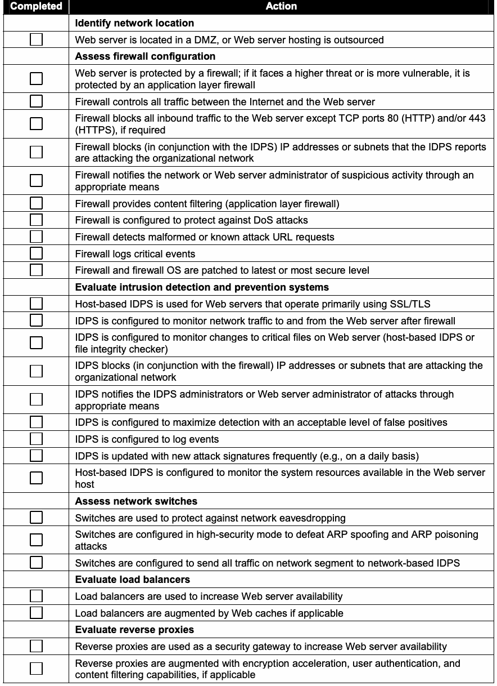
| 完了 | 対応内容 |
| ネットワーク上の配置場所を特定する | |
| WebサーバーをDMZに配置するか、ホスティングを外部委託する | |
| ファイアウォールの構成を評価する | |
| Webサーバーをファイアウォールで保護する。脅威がより高い場合、または脆弱性が高い場合は、 | |
| アプリケーション層ファイアウォールで保護する | |
| ファイアウォールですべてのインターネットとWebサーバー間のトラフィックを制御する | |
| ファイアウォールは、TCPポート80（HTTP）および／または443以外のWebサーバーへのすべての受信トラフィックを遮断する | |
| （必要な場合はHTTPSも） | |
| ファイアウォールは、IDPSと連携して、IDPSが「 | |
| 組織のネットワークを攻撃している」と報告したIPアドレスまたはサブネットを遮断する | |
| ファイアウォールは、不審な活動をネットワーク管理者またはWebサーバー管理者に通知する。その際、 | |
| 適切な手段を用いる | |
| ファイアウォールでコンテンツ・フィルタリングを行う（アプリケーション層ファイアウォール） | |
| ファイアウォールをDoS攻撃から保護するよう設定する | |
| ファイアウォールで不正形式または既知の攻撃URL要求を検知する | |
| ファイアウォールで重要なイベントをログに記録する | |
| ファイアウォールとそのOSに、最新または最も安全なレベルのパッチを適用する | |
| 侵入検知・防止システムを評価する | |
| 主にSSL/TLSを使用するWebサーバーには、ホストベースIDPSを使用する | |
| IDPSを設定し、ファイアウォールの後段でWebサーバーとの間のネットワーク・トラフィックを監視する | |
| IDPSを設定し、Webサーバー上の重要ファイルに対する変更を監視する（ホストベースIDPSまたは | |
| ファイル完全性チェッカー） | |
| IDPSは、ファイアウォールと連携して、組織の | |
| ネットワークを攻撃しているIPアドレスまたはサブネットを遮断する | |
| IDPSは、攻撃をIDPS管理者またはWebサーバー管理者に通知する。その際、 | |
| 適切な手段を用いる | |
| IDPSを設定し、許容可能な誤検知レベルで検知を最大化する | |
| IDPSを設定してイベントをログに記録する | |
| IDPSの攻撃シグネチャを頻繁に更新する（例えば、毎日） | |
| ホストベースIDPSを設定し、Webサーバーで利用可能なシステムリソースを監視する | |
| ホスト | |
| ネットワーク・スイッチを評価する | |
| ネットワーク盗聴から保護するためにスイッチを使用する | |
| ARPスプーフィング攻撃とARPポイズニング攻撃を防ぐ高セキュリティ・モードにスイッチを設定する | |
| 攻撃 | |
| ネットワーク・セグメント上のすべてのトラフィックをネットワークベースIDPSに送信するようスイッチを設定する | |
| ロードバランサーを評価する | |
| Webサーバーの可用性を高めるためロードバランサーを使用する | |
| 該当する場合はロードバランサーをWebキャッシュで補完する | |
| リバースプロキシを評価する | |
| Webサーバーの可用性を高めるセキュリティ・ゲートウェイとしてリバースプロキシを使用する | |
| 該当する場合は、リバースプロキシに暗号化アクセラレーション、ユーザー認証、および | |
| コンテンツ・フィルタリング機能を追加する |
9. Administering the Web Server
9. Webサーバーの管理
未レビュー訳After initially deploying a Web server, administrators need to maintain its security continuously. This section provides general recommendations for securely administering Web servers. Vital activities include handling and analyzing log files, performing regular Web server backups, recovering from Web server compromises, testing Web server security regularly, and performing remote administration securely.
Webサーバーを初期導入した後、管理者はそのセキュリティを継続的に維持する必要がある。本節では、Webサーバーを安全に管理するための一般的な推奨事項を示す。重要な作業には、ログファイルの取り扱いと分析、Webサーバーの定期的なバックアップ、侵害されたWebサーバーからの復旧、Webサーバー・セキュリティの定期的なテスト、安全なリモート管理が含まれる。
9.1 Logging
9.1 ログ記録
Logging is a cornerstone of a sound security posture. Capturing the correct data in the logs and then monitoring those logs closely is vital.72 Network and system logs are important, especially system logs in the case of HTTPS-protected communications, where network monitoring is less effective. Web server software can provide additional log data relevant to Web-specific events. Similarly, Web applications may also maintain their own logs of actions.
ログ記録は、健全なセキュリティ態勢の基盤である。ログに適切なデータを記録し、そのログを綿密に監視することが不可欠である。72 ネットワークログとシステムログは重要であり、特にHTTPSで保護された通信ではネットワーク監視の効果が低いため、システムログが重要となる。Webサーバー・ソフトウェアは、Web固有のイベントに関する追加ログデータを提供できる。同様に、Webアプリケーションも独自の操作ログを保持する場合がある。
未レビュー訳Reviewing logs is mundane and reactive, and many Web server administrators devote their time to performing duties that they consider more important or urgent. However, log files are often the only record of suspicious behavior. Enabling the mechanisms to log information allows the logs to be used to detect failed and successful intrusion attempts and to initiate alert mechanisms when further investigation is needed. Procedures and tools need to be in place to process and analyze the log files and to review alert notifications.
ログの確認は単調で事後対応的な作業であり、多くのWebサーバー管理者は、より重要または緊急だと考える業務に時間を割く。しかし、ログファイルは不審な挙動を記録した唯一の記録であることが多い。情報をログに記録する機構を有効にすれば、失敗した侵入試行と成功した侵入試行を検知し、さらなる調査が必要な場合に警告を開始するためにログを利用できる。ログファイルの処理と分析、および警告通知の確認を行うための手順とツールを整備しておく必要がある。
Web server logs provide—
Webサーバーのログは、次の情報を提供する—
未レビュー訳(cid:31) Alerts to suspicious activities that require further investigation
(cid:31) さらなる調査が必要な不審な活動に関する警告
未レビュー訳(cid:31) Tracking of an attacker’s activities
(cid:31) 攻撃者の活動の追跡
未レビュー訳(cid:31) Assistance in the recovery of the system
(cid:31) システムの復旧支援
未レビュー訳(cid:31) Assistance in post-event investigation
(cid:31) 事後調査の支援
未レビュー訳(cid:31) Required information for legal proceedings.
(cid:31) 法的手続きに必要な情報。
未レビュー訳The selection and implementation of specific Web server software determines which set of detailed instructions (presented below) the Web server administrator should follow to establish logging configurations. Some of the information contained in the steps below may not be fully applicable to all manufacturers’ Web server software products.
具体的なWebサーバー・ソフトウェアの選択と実装によって、Webサーバー管理者がログ設定を行うために従うべき詳細な手順（以下に記載）の内容が決まる。以下の手順に含まれる情報の一部は、すべてのメーカーのWebサーバー・ソフトウェア製品に完全に当てはまるとは限らない。
9.1.1 Identifying the Logging Capabilities of a Web Server
9.1.1 Webサーバーのログ記録機能の特定
Each type of Web server software supports different logging capabilities. Depending on the Web server software used, one or more of the following logs may be available [Alle00]:
Webサーバーソフトウェアの種類ごとに、サポートされるログ機能は異なる。使用するWebサーバーソフトウェアによって、次のログのうち少なくとも一つを利用できる場合がある [Alle00]:
(cid:31) Transfer Log—Each transfer is represented as one entry showing the main information related to the transfer.
(cid:31) 転送ログ—各転送は、転送に関する主な情報を示す一つのエントリとして表される。
未レビュー訳(cid:31) Error Log—Each error is represented as one entry, including an explanation of the reason for this error report.
(cid:31) エラーログ—各エラーは、このエラー報告の理由の説明を含む一つのエントリとして表される。
未レビュー訳(cid:31) Agent Log—This log contains information about the user client software used to access Web content.
(cid:31) エージェントログ—このログには、Webコンテンツへのアクセスに使用されたユーザークライアントソフトウェアに関する情報が含まれる。
未レビュー訳(cid:31) Referrer Log—This log collects information relevant to HTTP access. This includes the URL of the page that contained the link that the user client software followed to initiate access to the Web page.
(cid:31) リファラーログ—このログは、HTTPアクセスに関係する情報を収集する。これには、ユーザークライアントソフトウェアがWebページへのアクセスを開始するためにたどったリンクを含むページのURLが含まれる。
未レビュー訳Most Web servers support the Transfer Log, and it is usually considered the most important. Several log formats are available for Transfer Log entries. Typically, the information is presented in plain American Standard Code for Information Interchange (ASCII) without special delimiters to separate the different fields [Alle00]:
ほとんどのWebサーバーは転送ログをサポートしており、通常、これが最も重要と見なされる。転送ログのエントリには複数のログ形式がある。一般に、各フィールドを区切る特別な区切り文字を使わず、American Standard Code for Information Interchange（ASCII）のプレーンテキストで情報が提示される [Alle00]:
(cid:31) Common Log Format (CLF)—This format stores information related to one transfer (Transfer Log) in the following order:
(cid:31) 共通ログ形式（CLF）—この形式では、一回の転送（転送ログ）に関する情報を次の順序で格納する：
未レビュー訳(cid:131) Remote host
(cid:131) リモートホスト
未レビュー訳(cid:131) Remote user identity in accordance with RFC 141373
(cid:131) RFC 141373に準拠したリモートユーザーID
未レビュー訳(cid:131) Authenticated user in accordance with the basic authentication scheme (see Section 7.3)
(cid:131) 基本認証方式に基づく認証済みユーザー（セクション7.3を参照）
未レビュー訳(cid:131) Date
(cid:131) 日付
未レビュー訳(cid:131) URL requested
(cid:131) 要求されたURL
未レビュー訳(cid:131) Status of the request
(cid:131) 要求のステータス
未レビュー訳(cid:131) Number of bytes actually transferred.
(cid:131) 実際に転送されたバイト数。
未レビュー訳(cid:31) Combined Log Format—This format contains the same seven fields above. It also provides information normally stored in the Agent Log and the Referrer Log, along with the actual transfer. Keeping this information in a consolidated log format may support more effective administration.
(cid:31) 統合ログ形式—この形式には、上記と同じ七つのフィールドが含まれる。また、エージェントログとリファラーログに通常記録される情報に加え、実際の転送に関する情報も提供する。この情報を統合ログ形式で保持することで、より効果的な管理が可能になる場合がある。
未レビュー訳(cid:31) Extended Log Format—This format provides a way to describe all items that should be collected within the log file. The first two lines of the log file contain the version and the fields to be collected, and they appear in the log file as follows:
(cid:31) 拡張ログ形式—この形式は、ログファイル内で収集するすべての項目を記述する方法を提供する。ログファイルの最初の二行には、バージョンと収集対象のフィールドが含まれ、次のように記録される：
未レビュー訳#Version: 1.0 #Fields: date time c-ip sc-bytes time-taken cs-version 1999-08-01 02:10:57 192.0.0.2 6340 3 HTTP/1.0
#Version: 1.0 #Fields: date time c-ip sc-bytes time-taken cs-version 1999-08-01 02:10:57 192.0.0.2 6340 3 HTTP/1.0
未レビュー訳This example contains the date, time, originating address, number of bytes transmitted, time taken for transmission, and HTTP version.
この例には、日付、時刻、送信元アドレス、転送されたバイト数、転送に要した時間、およびHTTPバージョンが含まれる。
(cid:31) Other Log File Formats—Some server software provides log information in different file formats, such as database formats or delimiter-separated formats. Other server software provides the capability for an administrator to define specific log file formats in the Web server configuration file using a particular syntax (if the default CLF format is insufficient).
(cid:31) その他のログファイル形式—ログ情報をデータベース形式や区切り文字で分割された形式など、異なるファイル形式で提供するサーバーソフトウェアもある。また、既定のCLF形式では不十分な場合、Webサーバーの構成ファイルで特定の構文を使用して、管理者がログファイル形式を定義できる機能を備えたサーバーソフトウェアもある。
未レビュー訳9.1.2 Identifying Additional Logging Requirements
9.1.2 追加のログ要件の特定
If a public Web server supports the execution of programs, scripts, or plug-ins, it may be necessary for the programs, scripts, or plug-ins to perform additional logging. Often, critical events take place within the Web application code itself and will not be logged by the Web server. If Webmasters develop or acquire application programs, scripts, or plug-ins, it is strongly recommended that they define and implement a comprehensive and easy-to-understand logging approach based on the logging mechanisms provided by the Web server host OS. Log information associated with programs, scripts, and plug-ins can add significantly to the typical information logged by the Web server and may prove invaluable when investigating events.
パブリックWebサーバーがプログラム、スクリプト、またはプラグインの実行をサポートしている場合、それらに追加のログ記録を実行させる必要があることがある。重要なイベントはWebアプリケーションのコード自体の内部で発生することが多く、Webサーバーによって記録されない。Webマスターがアプリケーションプログラム、スクリプト、またはプラグインを開発または取得する場合、WebサーバーのホストOSが提供するログ記録メカニズムに基づき、包括的で理解しやすいログ記録方式を定義して実装することが強く推奨される。プログラム、スクリプト、プラグインに関連するログ情報は、Webサーバーによって通常記録される情報を大幅に増やすことがあり、イベントの調査時に非常に有益となる場合がある。
9.1.3 Recommended Generic Logging Configuration
9.1.3 推奨される汎用ログ構成
The following configuration is a good starting point for logging into public Web servers [Alle00]:
公開Webサーバーへのログインに関する、出発点として適切な構成を以下に示す [Alle00]。
(cid:31) Use the combined log format for storing the Transfer Log, or manually configure the information described by the combined log format to be the standard format for the Transfer Log.
(cid:31) 転送ログの保存には統合ログ形式を使用するか、統合ログ形式で説明されている情報が転送ログの標準形式となるよう手動で設定する。
未レビュー訳(cid:31) Enable the Referrer Log or Agent Log if the combined log format is unavailable.
(cid:31) 統合ログ形式を利用できない場合は、リファラーログまたはエージェントログを有効にする。
未レビュー訳(cid:31) Establish different log file names for different virtual Web sites that may be implemented as part of a single physical Web server.
(cid:31) 1台の物理Webサーバーの一部として複数の仮想Webサイトを実装する場合は、各サイトに異なるログファイル名を設定する。
未レビュー訳(cid:31) Use the remote user identity as specified in RFC 1413.
(cid:31) RFC 1413で規定されるリモートユーザーIDを使用する。
未レビュー訳(cid:31) Ensure procedures or mechanisms are in place so that log files do not fill up the hard drive.
(cid:31) ログファイルがハードドライブをいっぱいにしないよう、手順または仕組みを確実に整備する。
未レビュー訳Ensuring that sufficient log capacity is available is a concern because logs often take considerably more space than administrators initially estimate, especially when logging is set to a highly detailed level. Administrators should closely monitor the size of the log files when they implement different logging settings to ensure that the log files do not fill up the allocated storage. Because of the size of the log files, removing and archiving the logs more frequently or reducing the logging level of detail may be necessary.
十分なログ容量を確保することが問題となるのは、特に詳細度の高いログ設定では、ログが管理者の当初の見積もりを大幅に超える容量を占めることが多いためである。管理者はログ設定を変更した際、割り当てられたストレージをログファイルが使い切らないよう、そのサイズを注意深く監視すべきである。ログファイルのサイズが大きくなるため、削除やアーカイブの頻度を上げるか、ログの詳細度を下げることが必要になる場合がある。
Some Web server programs provide a capability to enforce or disable the checking of specified access controls during program startup. This level of control may be helpful, for example, to avoid inadvertent alteration of log files because of errors in file access administration. Web server administrators should determine the circumstances under which they may wish to enable such checks (assuming the Web server software supports this feature).
一部のWebサーバープログラムでは、プログラム起動時に指定したアクセス制御の検査を強制または無効化できる。この種の制御は、たとえばファイルアクセス管理の誤りによってログファイルが不注意に変更されるのを防ぐのに役立つ場合がある。Webサーバー管理者は（Webサーバーソフトウェアがこの機能をサポートしていることを前提として）、どのような状況でこの検査を有効にするかを判断する必要がある。
9.1.4 Reviewing and Retaining Log Files
9.1.4 ログファイルのレビューと保持
Reviewing log files is a tedious and time-consuming task that informs administrators of events that have already occurred. Accordingly, files are often useful for corroborating other evidence, such as a CPU utilization spike or anomalous network traffic reported by an IDPS. When a log is used to corroborate other evidence, a focused review is in order. For example, if an IDPS reported an outbound FTP connection from the Web server at 8:17 a.m., then a review of the logs generated around 8:17 a.m. is appropriate. Web server logs should also be reviewed for indications of attacks. The frequency of the reviews depends on the following factors:
ログファイルのレビューは、すでに発生したイベントを管理者に知らせる、手間と時間のかかる作業である。そのため、ログはCPU使用率の急上昇やIDPSが報告した異常なネットワークトラフィックなど、ほかの証拠を裏付けるのに役立つことが多い。ほかの証拠の裏付けにログを使う場合は、対象を絞ってレビューする。たとえば、IDPSが午前8時17分にWebサーバーから外向きのFTP接続を報告したなら、その時刻前後に生成されたログを調べるのが適切である。Webサーバーのログは攻撃の兆候についてもレビューする必要がある。レビューの頻度は、次の要因によって異なる。
(cid:31) Amount of traffic the server receives
(cid:31) サーバーが受信するトラフィック量
未レビュー訳(cid:31) General threat level (certain sites receive many more attacks than other sites and thus should have their logs reviewed more frequently)
(cid:31) 全般的な脅威レベル（サイトによっては攻撃をはるかに多く受けるため、ログをより頻繁にレビューする必要がある）
未レビュー訳(cid:31) Specific threats (at certain times, specific threats arise that may require more frequent log file analysis)
(cid:31) 個別の脅威（特定の時期に発生する脅威によって、ログファイルをより頻繁に分析する必要が生じる場合がある）
未レビュー訳(cid:31) Vulnerability of the Web server
(cid:31) Webサーバーの脆弱性
未レビュー訳(cid:31) Value of data and services provided by the Web server.
(cid:31) Webサーバーが提供するデータおよびサービスの価値。
未レビュー訳Reviews should take place regularly (e.g., daily) and when a suspicious activity has been noted or a threat warning has been issued. Obviously, the task could quickly become burdensome to a Web server administrator. To reduce this burden, automated log analysis tools have been developed (see Section 9.1.5).
レビューは定期的（例: 毎日）に行い、不審な活動が確認された場合や脅威警告が発令された場合にも実施する必要がある。当然ながら、この作業はWebサーバー管理者にとってすぐに大きな負担になり得る。負担を減らすため、自動ログ分析ツールが開発されている（Section 9.1.5を参照）。
In addition, a long-term and more in-depth analysis of the logs is needed. Because a typical Web server attack can involve hundreds of unique requests, an attacker may attempt to disguise a Web server attack by increasing the interval between requests. In this case, reviewing a single day’s or week’s logs may not show recognizable trends. However, when trends are analyzed over a week, month, or quarter, multiple attacks from the same host or subnet can be more easily recognized.
さらに、ログの長期的かつ詳細な分析も必要である。典型的なWebサーバー攻撃では何百もの一意なリクエストが発生し得るため、攻撃者はリクエスト間隔を長くして攻撃を隠そうとする場合がある。この場合、1日分または1週間分のログを確認しても傾向を認識できないことがある。しかし、1週間、1か月、または1四半期にわたって傾向を分析すれば、同一ホストまたはサブネットからの複数の攻撃をより容易に特定できる。
Log files should be protected to ensure that if an attacker does compromise a Web server, the log files cannot be altered to cover the attack. Although encryption can be useful in protecting log files, the best solution is to store log files on a host separate from the Web server. This is often called a centralized logging server. Centralized logging is often performed using syslog, which is a standard logging protocol.74 Alternately, some organizations use security information and event management (SIEM) software that uses centralized servers to perform log analysis, database servers to store logs, and either agents installed on the individual hosts or processes running on the centralized servers to transfer Web server logs or log data from the hosts to the servers and parse the logs.75
攻撃者がWebサーバーへの侵入に成功した場合に攻撃の痕跡を隠す目的でログファイルを改変できないよう、ログファイルを保護する必要がある。暗号化もログファイルの保護に役立つが、最善の方法はWebサーバーとは別のホストにログファイルを保存することである。これは集中ログサーバーと呼ばれることが多い。集中ログは標準ログプロトコルであるsyslogを使って収集されることが多い。74 また、集中サーバーでログ分析を行い、データベースサーバーにログを保存し、個々のホストにインストールしたエージェントまたは集中サーバー上で動作するプロセスで、Webサーバーログまたはホストのログデータをサーバーへ転送・解析するセキュリティ情報イベント管理（SIEM）ソフトウェアを使う組織もある。75
未レビュー訳Log files should be backed up and archived regularly. Archiving log files for a period of time is important for several reasons, including supporting certain legal actions and troubleshooting problems with the Web server. The retention period for archived log files depends on a number of factors, including the following:
ログファイルは定期的にバックアップし、アーカイブする必要がある。ログファイルを一定期間アーカイブすることは、法的措置への対応やWebサーバーの問題のトラブルシューティングなど、いくつかの理由から重要である。アーカイブしたログファイルの保持期間は、次のような複数の要因によって異なる。
(cid:31) Legal requirements
(cid:31) 法的要件
未レビュー訳(cid:31) Organizational requirements
(cid:31) 組織の要件
未レビュー訳(cid:31) Size of logs (which is directly related to the traffic of the site and the number of details logged)
(cid:31) ログのサイズ（サイトのトラフィック量および記録する詳細情報の量に直接関係する）
未レビュー訳(cid:31) Value of Web server data and services
(cid:31) Webサーバー上のデータおよびサービスの価値
未レビュー訳(cid:31) Threat level.
(cid:31) 脅威レベル。
未レビュー訳9.1.5 Automated Log File Analysis Tools
9.1.5 自動ログファイル分析ツール
Most public Web servers receive significant amounts of traffic, and the log files quickly become voluminous. Automated log analysis tools should be installed to ease the burden on the Web server administrator. These tools analyze the entries in the Web server log files and identify suspicious and unusual activity. As mentioned in Section 9.1.2, some organizations use SIEM software for centralized logging, which can also perform automated log file analysis.
公開Webサーバーの多くは大量のトラフィックを受信し、ログファイルがすぐに膨大になる。Webサーバー管理者の負担を軽減するため、自動ログ分析ツールをインストールすべきである。これらのツールはWebサーバーログファイルの各エントリを分析し、不審または通常と異なる活動を特定する。9.1.2節で述べたように、集中ログ管理にSIEMソフトウェアを使う組織もあり、SIEMで自動ログファイル分析を行うこともできる。
Many commercial and public domain tools are available to support regular analysis of Transfer Logs. Most operate on either the common or the combined log formats. These tools can identify IP addresses that are the source of high numbers of connections and transfers.
転送ログを定期的に分析するための商用ツールおよびパブリックドメインツールが多数提供されている。多くは共通ログ形式または統合ログ形式のいずれかで動作する。これらのツールは、多数の接続や転送の発信元となっているIPアドレスを特定できる。
Error Log tools indicate not only errors that may exist within available Web content (such as missing files) but also attempts to access nonexistent URLs. Such attempts could indicate the following:
エラーログツールは、利用可能なWebコンテンツ内のエラー（ファイルの欠落など）だけでなく、存在しないURLへのアクセス試行も示す。このような試行は、次のいずれかを示す可能性がある。
(cid:31) Probes for the existence of vulnerabilities to be used later in launching an attack
(cid:31) 後の攻撃に使う脆弱性が存在するか調べるプローブ
未レビュー訳(cid:31) Information gathering
(cid:31) 情報収集
未レビュー訳(cid:31) Interest in specific content, such as databases.
(cid:31) データベースなど、特定のコンテンツへの関心。
未レビュー訳The automated log analyzer should forward any suspicious events to the responsible Web server administrator or security incident response team as soon as possible for follow-up investigation. Some organizations may wish to use two or more log analyzers, which will reduce the risk of missing an attacker or other significant events in the log files [NIST06b].
自動ログ分析ツールは、不審なイベントがあれば、追跡調査のため、できるだけ速やかに担当のWebサーバー管理者またはセキュリティインシデント対応チームへ転送する必要がある。ログファイル内で攻撃者やその他の重要なイベントを見落とすリスクを減らすため、ログ分析ツールを2つ以上使用する組織もある [NIST06b]。
9.2 Web Server Backup Procedures
9.2 Webサーバーのバックアップ手順
One of the most important functions of a Web server administrator is to maintain the integrity of the data on the Web server. This is important because Web servers are often some of the most exposed and vital servers on an organization’s network. There are two principal components to backing up data on a Web server: regular backup of the data and OS on the Web server, and maintenance of a separate protected authoritative copy of the organization’s Web content.
Webサーバー上のデータの完全性を維持することは、Webサーバー管理者の最も重要な役割の1つである。Webサーバーは、組織ネットワークの中でも特に外部に露出し、重要なサーバーであることが多いため、これは重要である。Webサーバーのデータをバックアップする主な要素は2つある。Webサーバー上のデータとOSを定期的にバックアップすること、および組織のWebコンテンツについて、保護された正式なコピーを別途維持することである。
9.2.1 Web Server Backup Policies and Strategies
9.2.1 Webサーバーのバックアップ方針と戦略
The Web server administrator needs to perform backups of the Web server on a regular basis for several reasons. A Web server could fail as a result of a malicious or unintentional act or a hardware or software failure. In addition, Federal agencies and many other organizations are governed by regulations on the backup and archiving of Web server data. Web server data should also be backed up regularly for legal and financial reasons.
Webサーバー管理者は、いくつかの理由からWebサーバーを定期的にバックアップする必要がある。悪意ある行為または意図しない行為、あるいはハードウェアまたはソフトウェアの障害によって、Webサーバーが停止する可能性がある。また、連邦機関およびその他多くの組織には、Webサーバーデータのバックアップとアーカイブに関する規制が適用される。法務上および財務上の理由からも、Webサーバーデータを定期的にバックアップする必要がある。
All organizations need to create a Web server data backup policy. Three main factors influence the contents of this policy:
すべての組織は、Webサーバーデータのバックアップ方針を策定する必要がある。この方針の内容には、主に次の3つの要因が影響する。
(cid:31) Legal requirements
(cid:31) 法的要件
未レビュー訳(cid:131) Applicable laws and regulations (Federal, state, and international)
(cid:131) 適用される法律および規制（連邦、州、国際）
未レビュー訳(cid:131) Litigation requirements
(cid:131) 訴訟上の要件
未レビュー訳(cid:31) Mission requirements
(cid:31) ミッション上の要件
未レビュー訳(cid:131) Contractual
(cid:131) 契約上の要件
未レビュー訳(cid:131) Accepted practices
(cid:131) 受け入れられている実務
未レビュー訳(cid:131) Criticality of data to organization
(cid:131) 組織にとってのデータの重要度
未レビュー訳(cid:31) Organizational guidelines and policies.
(cid:31) 組織のガイドラインおよび方針。
未レビュー訳Although each organization’s Web server backup policy will be different to reflect its particular environment, it should address the following issues:
各組織のWebサーバーバックアップ方針は固有の環境を反映して異なるが、次の事項に対処する必要がある。
(cid:31) Purpose of the policy
(cid:31) 方針の目的
未レビュー訳(cid:31) Parties affected by the policy
(cid:31) 方針の適用対象者
未レビュー訳(cid:31) Web servers covered by the policy
(cid:31) 方針の対象となるWebサーバー
未レビュー訳(cid:31) Definitions of key terms, especially legal and technical
(cid:31) 主要用語（特に法律用語および技術用語）の定義
未レビュー訳(cid:31) Detailed requirements from the legal, business, and organization’s perspective
(cid:31) 法務、事業、および組織の観点からの詳細な要件
未レビュー訳(cid:31) Required frequency of backups
(cid:31) 必要なバックアップ頻度
未レビュー訳(cid:31) Procedures for ensuring data is properly retained and protected
(cid:31) データを適切に保持し保護するための手順
未レビュー訳(cid:31) Procedures for ensuring data is properly destroyed or archived when no longer required
(cid:31) 不要になったデータを適切に破棄またはアーカイブする手順
未レビュー訳(cid:31) Procedures for preserving information for Freedom of Information Act (FOIA) requests, legal investigations, and other such requests
(cid:31) 情報公開法（FOIA）に基づく請求、法的調査、その他同様の要請に備えて情報を保全する手順
未レビュー訳(cid:31) Responsibilities of those involved in data retention, protection, and destruction activities
(cid:31) データの保持、保護、および破棄に関わる担当者の責任
未レビュー訳(cid:31) Retention period for each type of information logged76
(cid:31) ログに記録する情報の種類ごとの保持期間76
未レビュー訳(cid:31) Specific duties of a central/organizational data backup team, if one exists.
(cid:31) 中央または組織内のデータバックアップチームが存在する場合、その具体的な職務。
未レビュー訳Three primary types of backups exist: full, incremental, and differential. Full backups include the OS, applications, and data stored on the Web server (i.e., an image of every piece of data stored on the Web server hard drives). The advantage of a full backup is that it is easy to restore the entire Web server to the state (e.g., configuration, patch level, data) it was in when the backup was performed. The disadvantage of full backups is that they take considerable time and resources to perform. Incremental backups reduce the impact of backups by backing up only data that has changed since the previous backup (either full or incremental).
バックアップには、フル、増分、差分の3つの主要な種類がある。フルバックアップには、Webサーバーに保存されたOS、アプリケーション、およびデータ（すなわち、Webサーバーのハードドライブに保存されたすべてのデータのイメージ）が含まれる。フルバックアップの利点は、バックアップを実行した時点の状態（構成、パッチ適用レベル、データなど）にWebサーバー全体を容易に復元できることである。欠点は、実行にかなりの時間とリソースが必要なことである。増分バックアップは、前回のバックアップ（フルまたは増分）以降に変更されたデータだけをバックアップすることで、バックアップの負荷を軽減する。
Differential backups reduce the number of backup sets that must be accessed to restore a configuration by backing up all changed data since the last full backup. However, each differential backup increases as time lapses from the last full backup, requiring more processing time and storage than would an incremental backup. Generally, full backups are performed less frequently (weekly to monthly or when a significant change occurs), and incremental or differential backups are performed more frequently (daily to weekly). The frequency of backups will be determined by several factors:
差分バックアップは、最後のフルバックアップ以降に変更されたすべてのデータをバックアップすることで、構成を復元する際に必要なバックアップセットの数を減らす。ただし、最後のフルバックアップから時間が経過するほど各差分バックアップのサイズは増大し、増分バックアップより多くの処理時間とストレージが必要になる。一般に、フルバックアップは低い頻度（週次から月次、または大きな変更が発生したとき）で実行し、増分または差分バックアップはより高い頻度（日次から週次）で実行する。バックアップ頻度は、次の複数の要因によって決まる。
未レビュー訳(cid:31) Volatility of information on the Web site
(cid:31) Webサイト上の情報の変化の速さ
未レビュー訳(cid:131) Static Web content (less frequent backups)
(cid:131) 静的Webコンテンツ（バックアップ頻度は低い）
未レビュー訳(cid:131) Dynamic Web content (more frequent backups)
(cid:131) 動的Webコンテンツ（バックアップ頻度は高い）
未レビュー訳(cid:131) E-commerce/e-government (very frequent backups)
(cid:131) 電子商取引／電子政府（バックアップ頻度は非常に高い）
未レビュー訳(cid:31) Volatility of configuring the Web server
(cid:31) Webサーバーの構成変更の頻度
未レビュー訳(cid:31) Amount of data to be backed up
(cid:31) バックアップ対象データの量
未レビュー訳(cid:31) Backup device and media available
(cid:31) 利用可能なバックアップ装置および媒体
未レビュー訳(cid:31) Time available for dumping backup data
(cid:31) バックアップデータを書き出すために利用可能な時間
未レビュー訳(cid:31) Criticality of data
(cid:31) データの重要度
未レビュー訳(cid:31) Threat level faced by the Web server
(cid:31) Webサーバーが直面する脅威のレベル
未レビュー訳(cid:31) Effort required for data reconstruction without data backup
(cid:31) データバックアップなしでデータを再構築するために必要な労力
未レビュー訳(cid:31) Other data backup or redundancy features of the Web server (e.g., Redundant Array of Inexpensive Disks [RAID]).
(cid:31) Webサーバーに備わるその他のデータバックアップ機能または冗長化機能（例: RAID［Redundant Array of Inexpensive Disks］）。
未レビュー訳9.2.2 Maintain a Test Web Server
9.2.2 テスト用Webサーバーの維持
Most organizations will probably wish to maintain a test or development Web server. Ideally, this server should have hardware and software identical to the production or live Web server and be located on an internal network segment (intranet) where it can be fully protected by the organization’s perimeter network defenses. Although the cost of maintaining an additional Web server is not inconsequential, having a test Web server offers numerous advantages:
ほとんどの組織は、おそらくテスト用または開発用のWebサーバーを維持したいと考えるだろう。理想的には、このサーバーは本番または稼働中のWebサーバーと同じハードウェアおよびソフトウェアを備えるべきであり、組織の境界ネットワーク防御によって十分に保護できる内部ネットワークセグメント（イントラネット）に配置すべきである。追加のWebサーバーを維持する費用は決して小さくないが、テスト用Webサーバーには多くの利点がある。
(cid:31) It provides a platform to test new patches and service packs prior to application on the production Web server.
(cid:31) 本番Webサーバーに適用する前に、新しいパッチやサービスパックを試験するための環境となる。
未レビュー訳(cid:31) It provides a development platform for the Webmaster and Web server administrator to develop and test new content and applications.
(cid:31) WebマスターおよびWebサーバー管理者が、新しいコンテンツやアプリケーションを開発・試験する環境となる。
未レビュー訳(cid:31) It provides a platform to test configuration settings before applying them to production Web servers.
(cid:31) 本番Webサーバーに適用する前に、構成設定を試験する環境となる。
未レビュー訳(cid:31) Software critical for development and testing but that might represent an unacceptable security risk on the production server can be installed on the development server (e.g., software compliers, administrative tool kits, remote access software).
(cid:31) 開発や試験には不可欠でも本番サーバーでは許容できないセキュリティリスクとなり得るソフトウェア（コンパイラー、管理ツールキット、リモートアクセスソフトウェアなど）を、開発サーバーにインストールできる。
未レビュー訳The test Web server should be separate from the server that maintains an authoritative copy of the content on the production Web server (see Section 9.2.3).
テスト用Webサーバーは、本番Webサーバー上のコンテンツの正式コピーを保管するサーバーとは分離すべきである（9.2.3節を参照）。
9.2.3 Maintain an Authoritative Copy of Organizational Web Content
9.2.3 組織のWebコンテンツの正式コピーの維持
All organizations should maintain an authoritative (i.e., verified and trusted) copy of their public Web sites on a host that is inaccessible to the Internet. This is a supplement to, but not replacement for, an appropriate backup policy (see Section 9.2.1). For simple, relatively static Web sites, this could be as simple as a copy of the Web site on a read-only medium (e.g., Compact Disc-Recordable [CD-R]). However, for most organizations, the authoritative copy of the Web site is maintained on a secure host. This host is usually located behind the organization’s firewall on the internal network and not on the DMZ (see Section 8.1.2). The purpose of the authoritative copy is to provide a means of restoring information on the public Web server if it is compromised as a result of an accident or malicious action. This authoritative copy of the Web site allows an organization to rapidly recover from Web site integrity breaches (e.g., defacement).
すべての組織は、インターネットからアクセスできないホスト上に、公開Webサイトの正式な（検証済みで信頼できる）コピーを維持する必要がある。これは適切なバックアップ方針を補完するものであり、その代替ではない（9.2.1節を参照）。単純で比較的静的なWebサイトなら、読み取り専用媒体（例: CD-R）にWebサイトのコピーを保存するだけでよい場合がある。しかし、ほとんどの組織では、Webサイトの正式コピーはセキュリティ保護されたホストに保管される。このホストは通常、組織のファイアウォールの内側にある内部ネットワークに配置し、DMZには置かない（8.1.2節を参照）。正式コピーの目的は、事故または悪意ある行為によって公開Webサーバーが侵害された場合に、情報を復元する手段を提供することである。この正式コピーを使えば、Webサイトの完全性が侵害された場合（改ざんなど）にも、組織は迅速に復旧できる。
To successfully accomplish the goal of providing and protecting an authoritative copy of the Web server content, the following requirements must be met:
Webサーバーコンテンツの正式コピーを提供し保護するという目標を達成するには、次の要件を満たす必要がある。
(cid:31) Protect authoritative copy from unauthorized access.
(cid:31) 正式コピーを不正アクセスから保護する。
未レビュー訳(cid:131) Use write-once media (appropriate for relatively static Web sites).
(cid:131) 比較的静的なWebサイトには、追記不能媒体を使用する。
未レビュー訳(cid:131) Locate the host with the authoritative copy behind a firewall, and ensure there is no outside access to the host.
(cid:131) 正式コピーを保管するホストをファイアウォールの内側に配置し、外部からアクセスできないようにする。
未レビュー訳(cid:131) Minimize users with authorized access to host.
(cid:131) ホストへのアクセスを許可するユーザーを最小限にする。
未レビュー訳(cid:131) Control user access in as granular a manner as possible.
(cid:131) 可能な限り細かい粒度でユーザーアクセスを制御する。
未レビュー訳(cid:131) Employ strong user authentication.
(cid:131) 強固なユーザー認証を採用する。
未レビュー訳(cid:131) Employ appropriate logging and monitoring procedures.
(cid:131) 適切なログ記録および監視手順を採用する。
未レビュー訳(cid:131) Consider additional authoritative copies at different physical locations for further protection.
(cid:131) さらに保護するため、物理的に異なる場所に追加の正式コピーを置くことを検討する。
未レビュー訳(cid:31) Establish appropriate authoritative copy update procedures.
(cid:31) 正式コピーを更新するための適切な手順を定める。
未レビュー訳(cid:131) Update authoritative copy first (any testing on code should occur before updating the authoritative copy).
(cid:131) 正式コピーを最初に更新する（コードの試験は正式コピーを更新する前に行う）。
未レビュー訳(cid:131) Establish policies and procedures for who can authorize updates, who can perform updates, when updates can occur, etc.
(cid:131) 更新の承認者、実行者、実施可能な時期などに関する方針と手順を定める。
未レビュー訳(cid:31) Establish a process for copying authoritative copy to a production Web server.
(cid:31) 正式コピーを本番Webサーバーにコピーするプロセスを確立する。
未レビュー訳(cid:131) Physically transfer data using secure physical media (e.g., encrypted and/or write-once media, such as CD-Rs).
(cid:131) 暗号化媒体や追記不能媒体（CD-Rなど）の安全な物理媒体を使ってデータを物理的に移送する。
未レビュー訳(cid:131) Use a secure protocol (e.g., SSH) for network transfers.
(cid:131) ネットワーク転送には安全なプロトコル（例: SSH）を使用する。
未レビュー訳(cid:31) Include the procedures for restoring from the authoritative copy in the organizational incident response procedures (see Section 9.3).
(cid:31) 正式コピーから復元する手順を、組織のインシデント対応手順に含める（9.3節を参照）。
未レビュー訳(cid:31) Consider performing automatic updates from the authoritative copy to the Web server periodically (e.g., every 15 minutes, hourly, or daily) because this will overwrite a Web site defacement automatically.
(cid:31) Webサイトの改ざんを自動的に上書きできるよう、正式コピーからWebサーバーへの自動更新を定期的に（例: 15分ごと、1時間ごと、または毎日）実行することを検討する。
未レビュー訳9.3 Recovering From a Security Compromise
9.3 セキュリティ侵害からの復旧
Most organizations eventually face a successful compromise of one or more hosts on their network. The first step in recovering from a compromise is to create and document the required policies and procedures for responding to successful intrusions before an intrusion.77 The response procedures should outline the actions that are required to respond to a successful compromise of the Web server and the appropriate sequence of these actions (sequence can be critical). Most organizations already have a dedicated incident response team in place, which should be contacted immediately when there is suspicion or confirmation of a compromise. In addition, the organization may wish to ensure that some of its staff are knowledgeable in the fields of computer and network forensics.78
ほとんどの組織は、いずれネットワーク上の1つ以上のホストに対する侵害の成功に直面する。侵害から復旧する最初の手順は、侵入が発生する前に、侵入成功時の対応に必要な方針および手順を作成し、文書化することである。77 対応手順には、Webサーバーの侵害が成功した場合に必要な措置とその適切な順序を明記する（順序が重要な場合がある）。ほとんどの組織には専任のインシデント対応チームがあり、侵害の疑いまたは確認があったら直ちに連絡する必要がある。また、組織内の一部職員にコンピューターおよびネットワークフォレンジックの知識を持たせることも検討できる。78
未レビュー訳A Web server administrator should follow the organization’s policies and procedures for incident handling, and the incident response team should be contacted for guidance before the organization takes any action after a suspected or confirmed security compromise. Examples of steps commonly performed after discovering a successful compromise are as follows:
Webサーバー管理者は、インシデント処理に関する組織の方針と手順に従うべきであり、セキュリティ侵害が疑われる場合または確認された場合に組織が何らかの措置を取る前に、インシデント対応チームに連絡して指示を仰ぐべきである。侵害の成功が判明した後に一般的に行われる措置の例を次に示す。
(cid:31) Report the incident to the organization’s computer incident response capability.
(cid:31) インシデントを組織のコンピューターインシデント対応機能に報告する。
未レビュー訳(cid:31) Isolate the compromised systems or take other steps to contain the attack so that additional information can be collected.79
(cid:31) 追加情報を収集できるよう、侵害されたシステムを隔離するか、攻撃を封じ込めるその他の措置を講じる。79
未レビュー訳(cid:31) Consult expeditiously, as appropriate, with management, legal counsel, and law enforcement.
(cid:31) 必要に応じて、管理者、法律顧問、および法執行機関に速やかに相談する。
未レビュー訳(cid:31) Investigate similar80 hosts to determine if the attacker also has compromised other systems.
(cid:31) 類似する80ホストを調査し、攻撃者がほかのシステムも侵害していないか判断する。
未レビュー訳(cid:31) Analyze the intrusion, including—
(cid:31) 侵入を分析する。分析対象には次を含む。
未レビュー訳(cid:131) The current state of the server, starting with the most ephemeral data (e.g., current network connections, memory dump, files time stamps, logged in users)
(cid:131) サーバーの現在の状態。揮発性の高いデータから確認する（例: 現在のネットワーク接続、メモリダンプ、ファイルのタイムスタンプ、ログイン中のユーザー）。
未レビュー訳(cid:131) Modifications made to the system’s software and configuration
(cid:131) システムソフトウェアおよび構成に加えられた変更
未レビュー訳(cid:131) Modifications made to the data
(cid:131) データに加えられた変更
未レビュー訳(cid:131) Tools or data left behind by the attacker
(cid:131) 攻撃者が残したツールまたはデータ
未レビュー訳(cid:131) System, intrusion detection, and firewall log files.
(cid:131) システムログ、侵入検知ログ、およびファイアウォールログ。
未レビュー訳(cid:31) Restore the system.
(cid:31) システムを復元する。
未レビュー訳(cid:131) Either install a clean version of the OS, applications, necessary patches, and Web content; or restore the system from backups (this option can be more risky because the backups may have been made after the compromise, and restoring from a compromised backup may still allow the attacker access to the system).
(cid:131) OS、アプリケーション、必要なパッチ、およびWebコンテンツのクリーンな版をインストールするか、バックアップからシステムを復元する（侵害後にバックアップが作成されている可能性があるため、侵害されたバックアップから復元すると攻撃者が引き続きシステムにアクセスできる危険があり、後者の方がリスクが高い場合がある）。
未レビュー訳(cid:131) Disable unnecessary services.
(cid:131) 不要なサービスを無効にする。
未レビュー訳(cid:131) Apply all patches.
(cid:131) すべてのパッチを適用する。
未レビュー訳(cid:131) Change all passwords (including on uncompromised hosts, if their passwords are believed to have been seen by the compromised host, or if the same passwords are used on other hosts).
(cid:131) すべてのパスワードを変更する（侵害されたホストに見られたと考えられるパスワードや、ほかのホストでも同じパスワードを使っている場合は、侵害されていないホストのパスワードも変更する）。
未レビュー訳(cid:131) Reconfigure network security elements (e.g., firewall, router, IDPS) to provide additional protection and notification.
(cid:131) ネットワークセキュリティ要素（ファイアウォール、ルーター、IDPSなど）を再構成し、保護と通知を強化する。
未レビュー訳(cid:31) Test system to ensure security.
(cid:31) セキュリティを確保できているかシステムを試験する。
未レビュー訳(cid:31) Reconnect system to network.
(cid:31) システムをネットワークに再接続する。
未レビュー訳(cid:31) Monitor system and network for signs that the attacker is attempting to access the system or network again.
(cid:31) 攻撃者がシステムまたはネットワークへの再アクセスを試みている兆候がないか、システムとネットワークを監視する。
未レビュー訳(cid:31) Document lessons learned.
(cid:31) 得られた教訓を文書化する。
未レビュー訳Based on the organization’s policy and procedures, system administrators should decide whether to reinstall the OS of a compromised system or restore it from a backup. Factors that are often considered include the following:
組織の方針と手順に基づき、システム管理者は、侵害されたシステムのOSを再インストールするか、バックアップから復元するかを判断する必要がある。よく検討される要因には次がある。
(cid:31) Level of access that the attacker gained (e.g., root, user, guest, system)
(cid:31) 攻撃者が得たアクセスレベル（例: root、user、guest、system）
未レビュー訳(cid:31) Type of attacker (internal or external)
(cid:31) 攻撃者の種類（内部または外部）
未レビュー訳(cid:31) Purpose of compromise (e.g., Web page defacement, illegal software repository, platform for other attacks)
(cid:31) 侵害の目的（例: Webページの改ざん、違法なソフトウェア保管庫、ほかの攻撃の踏み台）
未レビュー訳(cid:31) Method used for the system compromise
(cid:31) システム侵害に使われた方法
未レビュー訳(cid:31) Actions of the attacker during and after the compromise (e.g., log files, intrusion detection reports)
(cid:31) 侵害中および侵害後に攻撃者が行ったこと（例: ログファイル、侵入検知レポート）
未レビュー訳(cid:31) Duration of the compromise
(cid:31) 侵害が継続した期間
未レビュー訳(cid:31) Extent of the compromise on the network (e.g., the number of hosts compromised)
(cid:31) ネットワーク上での侵害の範囲（例: 侵害されたホスト数）
未レビュー訳(cid:31) Results of consultation with management and legal counsel.
(cid:31) 管理者および法律顧問への相談結果。
未レビュー訳The lower the level of access gained by the intruder and the more the Web server administrator understands about the attacker’s actions, the less risk there is in restoring from a backup and patching the vulnerability. For incidents in which there is less known about the attacker’s actions and/or in which the attacker gains high-level access, it is recommended that the OS and applications be reinstalled from the manufacturer’s original distribution media and that the Web server data be restored from a known good backup.
侵入者が得たアクセスレベルが低く、Webサーバー管理者が攻撃者の行動をよく把握しているほど、バックアップから復元して脆弱性にパッチを適用する際のリスクは低くなる。攻撃者の行動について判明していることが少ない場合や、攻撃者が高いレベルのアクセス権を得た場合は、メーカー提供のオリジナル配布媒体からOSとアプリケーションを再インストールし、既知の正常なバックアップからWebサーバーデータを復元することが推奨される。
未レビュー訳If legal action is pursued, system administrators need to be aware of the guidelines for handling a host after a compromise. Consult legal counsel and relevant law enforcement authorities as appropriate.
法的措置を取る場合、システム管理者は侵害後のホストの取り扱いに関するガイドラインを把握しておく必要がある。必要に応じて、法律顧問および関係する法執行機関に相談する。
9.4 Security Testing Web Servers
9.4 Webサーバーのセキュリティ試験
Periodic security testing of public Web servers is critical. Without periodic testing, there is no assurance that current protective measures are working or that the security patch applied by the Web server administrator is functioning as advertised. Although a variety of security testing techniques exists, vulnerability scanning is the most common. Vulnerability scanning assists a Web server administrator in identifying vulnerabilities and verifying whether the existing security measures are effective. Penetration testing is also used, but it is used less frequently and usually only as part of an overall penetration test of the organization’s network.81
公開Webサーバーのセキュリティを定期的に試験することは不可欠である。定期的な試験を行わなければ、現在の保護対策が機能していることや、Webサーバー管理者が適用したセキュリティパッチが期待どおりに動作することを保証できない。さまざまなセキュリティ試験手法があるが、最も一般的なのは脆弱性スキャンである。脆弱性スキャンにより、Webサーバー管理者は脆弱性を特定し、既存のセキュリティ対策が有効か検証できる。侵入テストも使用されるが、頻度は低く、通常は組織ネットワーク全体の侵入テストの一環としてのみ実施される。81
未レビュー訳9.4.1 Vulnerability Scanning
9.4.1 脆弱性スキャン
Vulnerability scanners are automated tools that are used to identify vulnerabilities and misconfigurations of hosts. Many vulnerability scanners also provide information about mitigating discovered vulnerabilities.
脆弱性スキャナーは、ホストの脆弱性および構成ミスを特定するための自動化ツールである。多くの脆弱性スキャナーは、発見した脆弱性を緩和する方法に関する情報も提供する。
Vulnerability scanners attempt to identify vulnerabilities in the hosts scanned. Vulnerability scanners can help identify out-of-date software versions, missing patches, or system upgrades, and they can validate compliance with or deviations from the organization’s security policy. To accomplish this, vulnerability scanners identify OSs and major software applications running on hosts and match them with known vulnerabilities in their vulnerability databases.
脆弱性スキャナーは、スキャン対象ホストの脆弱性を特定しようとする。古いソフトウェアのバージョン、未適用のパッチ、システムアップグレードの必要性を見つけるのに役立ち、組織のセキュリティ方針への適合または逸脱を検証できる。これを行うため、脆弱性スキャナーはホスト上で稼働するOSと主要なソフトウェアアプリケーションを特定し、それらを脆弱性データベース内の既知の脆弱性と照合する。
However, vulnerability scanners have some significant weaknesses. Generally, they identify only surface vulnerabilities and are unable to address the overall risk level of a scanned Web server. Although the scan process itself is highly automated, vulnerability scanners can have a high false positive error rate (reporting vulnerabilities when none exist). This means an individual with expertise in Web server security and administration must interpret the results. Furthermore, vulnerability scanners cannot generally identify vulnerabilities in custom code or applications.
しかし、脆弱性スキャナーには重大な弱点もある。一般に、表面的な脆弱性しか特定できず、スキャン対象のWebサーバー全体のリスクレベルを評価できない。スキャン処理自体は高度に自動化されているが、脆弱性スキャナーでは誤検知（実際には存在しない脆弱性の報告）が多く発生する場合がある。そのため、Webサーバーのセキュリティと管理に詳しい担当者が結果を解釈する必要がある。さらに、脆弱性スキャナーは通常、カスタムコードやアプリケーション内の脆弱性を特定できない。
Vulnerability scanners rely on periodic updating of the vulnerability database to recognize the latest vulnerabilities. Before running any scanner, Web server administrators should install the latest updates to its vulnerability database. Some databases are updated more regularly than others (the frequency of updates should be a major consideration when choosing a vulnerability scanner).
脆弱性スキャナーは、最新の脆弱性を認識するために、脆弱性データベースの定期的な更新に依存している。Webサーバー管理者は、スキャナーを実行する前に、そのスキャナーの脆弱性データベースに最新の更新を適用する必要がある。データベースには、ほかより定期的に更新されるものがある（更新の頻度は、脆弱性スキャナーを選定する際の主要な検討事項とする必要がある）。
Vulnerability scanners are often better at detecting well-known vulnerabilities than more esoteric ones because it is impossible for any one scanning product to incorporate all known vulnerabilities in a timely manner. In addition, manufacturers want to keep the speed of their scanners high (the more vulnerabilities detected, the more tests required, which slows the overall scanning process). Therefore, vulnerability scanners may be less useful to Web server administrators operating less popular Web servers, OSs, or custom-coded applications.
脆弱性スキャナーは、あらゆる既知の脆弱性を適時に取り込める単一のスキャン製品は存在しないため、あまり知られていない脆弱性よりも、よく知られた脆弱性の検出に優れていることが多い。さらに、メーカーはスキャナーの速度を高く保ちたいと考える（検出する脆弱性が多いほど必要なテストが増え、スキャン処理全体が遅くなる）。そのため、脆弱性スキャナーは、あまり普及していないWebサーバー、OS、または独自にコーディングされたアプリケーションを運用するWebサーバー管理者にとっては、有用性が低い場合がある。
Vulnerability scanners provide the following capabilities:
脆弱性スキャナーは次の機能を提供する。
(cid:31) Identifying active hosts on a network
(cid:31) ホスト上で稼働中のサービス（ポート）と、そのうち脆弱なものを特定する
未レビュー訳(cid:31) Identifying active services (ports) on hosts and which of these are vulnerable
(cid:31) アプリケーションを特定し、バナー情報を取得する
未レビュー訳(cid:31) Identifying applications and banner grabbing
(cid:31) OSを特定する
未レビュー訳(cid:31) Identifying OSs
(cid:31) 発見されたOSおよびアプリケーションに関連する脆弱性を特定する
未レビュー訳(cid:31) Identifying vulnerabilities associated with discovered OSs and applications
(cid:31) ホスト上のアプリケーション使用／セキュリティ方針への適合を試験する。
未レビュー訳(cid:31) Testing compliance with host application usage/security policies.
組織は、OSとWebサーバーアプリケーションに最新のセキュリティパッチおよびソフトウェアバージョンが適用されていることを検証するため、脆弱性スキャンを実施する必要がある。脆弱性スキャンは、人が結果を解釈するために多くの関与を要する、労力のかかる作業である。また、ネットワーク帯域を消費して応答時間を遅らせ、スキャン対象サーバーやそのアプリケーションの可用性に影響を与える可能性があり、運用を妨げることもある。しかし、脆弱性が敵対者に発見・悪用される前にできるだけ速やかに緩和するには、脆弱性スキャンが極めて重要である。脆弱性スキャンは週次から月次で実施する必要がある。組織のスキャナーアプリケーション向けに新しい脆弱性データベースが公開されるたびにスキャンを実行する組織も多い。スキャン結果を文書化し、発見された不備を修正する必要がある。
未レビュー訳Organizations should conduct vulnerability scanning to validate that OSs and Web server applications are up-to-date on security patches and software versions. Vulnerability scanning is a labor-intensive activity that requires a high degree of human involvement to interpret the results. It may also be disruptive to operations by taking up network bandwidth, slowing network response times, and potentially affecting the availability of the scanned server or its applications. However, vulnerability scanning is extremely important for ensuring that vulnerabilities are mitigated as soon as possible, before they are discovered and exploited by adversaries. Vulnerability scanning should be conducted on a weekly to monthly basis. Many organizations also run a vulnerability scan whenever a new vulnerability database is released for the organization’s scanner application. Vulnerability scanning results should be documented and discovered deficiencies should be corrected.
組織は、OSとWebサーバーアプリケーションにセキュリティ・パッチとソフトウェアバージョンが最新の状態で適用されていることを確認するために、脆弱性スキャンを実施すべきである。脆弱性スキャンは労力のかかる作業であり、結果の解釈には人間による高度な関与が必要である。また、ネットワーク帯域幅を占有し、ネットワークの応答時間を遅らせ、スキャン対象のサーバーやそのアプリケーションの可用性に影響を与える可能性があるため、運用を妨げるおそれもある。しかし、脆弱性が敵対者に発見され悪用される前に、できるだけ早く緩和されるようにするうえで、脆弱性スキャンは極めて重要である。脆弱性スキャンは週次から月次の頻度で実施すべきである。多くの組織は、自組織のスキャナーアプリケーション向けに新しい脆弱性データベースが公開されるたびにも脆弱性スキャンを実行する。脆弱性スキャンの結果は文書化し、発見された不備は是正すべきである。
Organizations should also consider running more than one vulnerability scanner. As previously discussed, no scanner is able to detect all known vulnerabilities; however, using two scanners generally increases the number of vulnerabilities detected. A common practice is to use one commercial and one freeware scanner. Network-based and host-based vulnerability scanners are available for free or for a fee.
組織は、複数の脆弱性スキャナーを実行することも検討する必要がある。前述のとおり、既知の脆弱性をすべて検出できるスキャナーはない。しかし、2つのスキャナーを使うと、一般に検出される脆弱性の数が増える。一般的な慣行は、商用スキャナーとフリーウェアのスキャナーを1つずつ使うことである。ネットワークベースおよびホストベースの脆弱性スキャナーは、無料または有料で入手できる。
9.4.2 Penetration Testing
9.4.2 侵入テスト
“Penetration testing is security testing in which evaluators attempt to circumvent the security features of a system based on their understanding of the system design and implementation” [NISS99]. The purpose of penetration testing is to exercise system protections (particularly human response to attack indications) by using common tools and techniques developed by attackers. This testing is highly recommended for complex or critical systems.
「侵入テストとは、評価者がシステムの設計と実装に関する理解に基づいて、システムのセキュリティ機能の回避を試みるセキュリティテストである」 [NISS99]。侵入テストの目的は、攻撃者が開発した一般的なツールや技法を用いて、システムの防御（特に攻撃の兆候に対する人間の対応）を試すことである。このテストは、複雑なシステムまたは重要なシステムに対して強く推奨される。
Penetration testing can be an invaluable technique to any organization's information security program. However, it is a very labor-intensive activity and requires great expertise to minimize the risk to targeted systems. At a minimum, it may slow the organization's network response time because of network mapping and vulnerability scanning. Furthermore, the possibility exists that systems may be damaged or rendered inoperable in the course of penetration testing. Although this risk is mitigated by the use of experienced penetration testers, it can never be fully eliminated.
侵入テストは、あらゆる組織の情報セキュリティプログラムにとって非常に貴重な技術となり得る。しかし、非常に労力のかかる作業であり、対象システムへのリスクを最小限に抑えるには高度な専門知識が必要である。最低でも、ネットワークマッピングと脆弱性スキャンのために、組織のネットワーク応答時間が遅くなる可能性がある。さらに、侵入テストの過程でシステムが損傷したり、動作不能になったりする可能性がある。経験豊富な侵入テスト担当者を使うことでこのリスクは軽減されるが、完全に排除することはできない。
Penetration testing does offer the following benefits [NIST02b]:
侵入テストには次の利点がある [NIST02b]。
(cid:31) Tests the network using the same methodologies and tools employed by attackers
(cid:31) 脆弱性の有無を検証する
未レビュー訳(cid:31) Verifies whether vulnerabilities exist
(cid:31) 表面的な脆弱性の確認にとどまらず、それらを段階的に悪用して、より大きなアクセス権を得る方法を実証する
未レビュー訳(cid:31) Goes beyond surface vulnerabilities and demonstrates how these vulnerabilities can be exploited iteratively to gain greater access
(cid:31) 脆弱性が単なる理論上のものではないことを実証する
未レビュー訳(cid:31) Demonstrates that vulnerabilities are not purely theoretical
(cid:31) セキュリティ問題に対処するために必要な「現実性」を提供する
未レビュー訳(cid:31) Provides the “realism” necessary to address security issues
(cid:31) 手順を試験し、ソーシャルエンジニアリングに対する人の脆弱性を評価できる。
未レビュー訳(cid:31) Allows for testing of procedures and susceptibility of the human element to social engineering.
9.5 Webサーバーのリモート管理
未レビュー訳9.5 Remotely Administering a Web Server
9.5 Webサーバーのリモート管理
It is strongly recommended that remote administration and remote updating of content for a Web server be allowed only after careful consideration of the risks. The most secure configuration is to disallow any remote administration or content updates. However, that might not be viable for all organizations. The risk of enabling remote administration or content updates varies considerably depending on the location of the Web server on the network (see Section 8.1). For a Web server that is located behind a firewall, remote administration or content updating can be implemented relatively securely from the internal network, but not without added risk. Remote administration or content updating should generally not be allowed from a host located outside the organization’s network unless it is performed from an organization-controlled computer through the organization’s remote access solution, such as a VPN.
Webサーバーのリモート管理やコンテンツのリモート更新は、リスクを慎重に検討した後に限って許可することを強く推奨する。最も安全な構成は、リモート管理やコンテンツ更新を一切許可しないことである。しかし、すべての組織でそれが実行可能とは限らない。リモート管理またはコンテンツ更新を有効にするリスクは、ネットワーク上のWebサーバーの配置場所によって大きく異なる（8.1節を参照）。ファイアウォールの背後にあるWebサーバーであれば、内部ネットワークから比較的安全にリモート管理またはコンテンツ更新を実装できるが、リスクが増えることに変わりはない。一般に、組織のネットワーク外にあるホストからのリモート管理やコンテンツ更新は許可すべきでない。ただし、VPNなど組織のリモートアクセスソリューションを通じ、組織が管理するコンピューターから実施する場合は除く。
If an organization determines that it is necessary to remotely administer or update content on a Web server, following these steps should ensure that content is implemented in as secure a manner as possible:
Webサーバーをリモート管理または更新する必要があると組織が判断した場合、次の手順に従えば、可能な限り安全にコンテンツを実装できる。
(cid:31) Use a strong authentication mechanism (e.g., public/private key pair, two-factor authentication).
(cid:31) 強固な認証方式（公開鍵／秘密鍵ペア、二要素認証など）を使用する。
未レビュー訳(cid:31) Restrict which hosts can be used to remotely administer or update content on the Web server.
(cid:31) Webサーバーをリモート管理またはコンテンツ更新できるホストを制限する。
未レビュー訳(cid:131) Restrict by authorized users
(cid:131) 許可されたユーザーに制限する
未レビュー訳(cid:131) Restrict by IP address (not hostname)
(cid:131) IPアドレスで制限する（ホスト名では制限しない）
未レビュー訳(cid:131) Restrict to hosts on the internal network or those using the organization’s enterprise remote access solution.
(cid:131) 内部ネットワーク上のホスト、または組織のエンタープライズリモートアクセスソリューションを使用するホストに限定する。
未レビュー訳(cid:31) Use secure protocols that can provide encryption of both passwords and data (e.g., SSH, HTTPS); do not use less secure protocols (e.g., telnet, FTP, NFS, HTTP) unless absolutely required and tunneled over an encrypted protocol, such as SSH, SSL, or IPsec.
(cid:31) パスワードとデータの両方を暗号化できる安全なプロトコル（SSH、HTTPSなど）を使用する。特に必要であり、SSH、SSL、IPsecなどの暗号化プロトコル上でトンネリングする場合を除き、安全性の低いプロトコル（telnet、FTP、NFS、HTTPなど）を使用しない。
未レビュー訳(cid:31) Enforce the concept of least privilege on remote administration and content updating (e.g., attempt to minimize the access rights for the remote administration/update accounts).
(cid:31) リモート管理およびコンテンツ更新に最小権限の原則を徹底する（例: リモート管理／更新アカウントのアクセス権を最小限にする）。
未レビュー訳(cid:31) Do not allow remote administration from the Internet through the firewall unless accomplished via strong mechanisms, such as VPNs.
(cid:31) VPNなどの強固な仕組みを使用する場合を除き、ファイアウォールを経由したインターネットからのリモート管理を許可しない。
未レビュー訳(cid:31) Change any default accounts or passwords for the remote administration utility or application.
(cid:31) リモート管理ユーティリティまたはアプリケーションのデフォルトアカウントやパスワードを変更する。
未レビュー訳(cid:31) Do not mount any file shares on the internal network from the Web server or vice versa.
(cid:31) Webサーバーから内部ネットワーク上のファイル共有をマウントしない。また、その逆も行わない。
未レビュー訳9.6 Checklist for Administering the Web Server
9.6 Webサーバー管理チェックリスト
| Completed | Action |
| Perform logging | |
| Use the combined log format for storing the Transfer Log or manually configure | |
| the information described by the combined log format to be the standard format | |
| for the Transfer Log | |
| Enable the Referrer Log or Agent Log if the combined log format is unavailable | |
| Establish different log file names for different virtual Web sites that may be | |
| implemented as part of a single physical Web server | |
| Use the remote user identity as specified in RFC 1413 | |
| Store logs on a separate (syslog) host | |
| Ensure there is sufficient capacity for the logs | |
| Archive logs according to organizational requirements | |
| Review logs daily | |
| Review logs weekly (for more long-term trends) | |
| Use automated log file analysis tool(s) | |
| Perform Web server backups | |
| Create a Web server backup policy | |
| Back up Web server differentially or incrementally on a daily to weekly basis | |
| Back up Web server fully on a weekly to monthly basis | |
| Periodically archive backups | |
| Maintain an authoritative copy of Web site(s) | |
| Recover from a compromise | |
| Report the incident to the organization’s computer incident response capability | |
| Isolate the compromised system(s) or take other steps to contain the attack so | |
| additional information can be collected | |
| Investigate similar hosts to determine if the attacker has also compromised other | |
| systems | |
| Consult, as appropriate, with management, legal counsel, and law enforcement officials expeditiously | |
| Analyze the intrusion | |
| Restore the system | |
| Test system to ensure security | |
| Reconnect system to network | |
| Monitor system and network for signs that the attacker is attempting to access | |
| the system or network again | |
| Document lessons learned | |
| Test security | |
| Periodically conduct vulnerability scans on Web server, dynamically generated | |
| content, and supporting network | |
| Update vulnerability scanner prior to testing | |
| Correct any deficiencies identified by the vulnerability scanner | |
| Conduct penetration testing on the Web server and the supporting network | |
| infrastructure | |
| Correct deficiencies identified by penetration testing |
原本PDFの抜粋画像
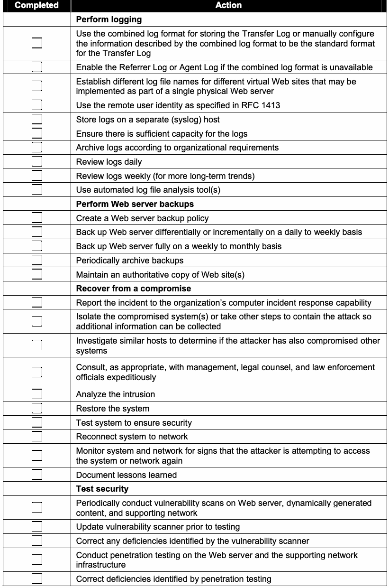
| 完了 | 対応内容 |
| ログ記録 | |
| Transfer Logの保存には統合ログ形式を使用するか、手動で設定する | |
| 統合ログ形式で説明される情報を標準形式として | |
| Transfer Logに適用する | |
| 統合ログ形式を利用できない場合は、リファラーログまたはエージェントログを有効にする | |
| 単一の物理Webサーバー上に実装する複数の仮想Webサイトごとに | |
| 異なるログファイル名を設定する | |
| RFC 1413で規定されるリモートユーザーIDを使用する | |
| ログを別の（syslog）ホストに保存する | |
| ログ用の十分な容量を確保する | |
| 組織の要件に従ってログをアーカイブする | |
| ログを毎日レビューする | |
| 長期的な傾向を把握するため、ログを毎週レビューする | |
| 自動ログファイル分析ツールを使用する | |
| Webサーバーをバックアップする | |
| Webサーバーのバックアップ方針を作成する | |
| Webサーバーを日次から週次で差分または増分バックアップする | |
| Webサーバーを週次から月次でフルバックアップする | |
| バックアップを定期的にアーカイブする | |
| Webサイトの正式コピーを維持する | |
| 侵害から復旧する | |
| インシデントを組織のコンピューターインシデント対応機能に報告する | |
| 侵害されたシステムを隔離するか、攻撃を封じ込めるその他の措置を講じて | |
| 追加情報を収集できるようにする | |
| 類似ホストを調査し、攻撃者がほかのシステムも侵害しているか確認する | |
| 必要に応じて、管理者、法律顧問、および法執行機関に速やかに相談する | |
| 侵入を分析する | |
| システムを復元する | |
| セキュリティを確保できているかシステムを試験する | |
| システムをネットワークに再接続する | |
| 攻撃者がシステムまたはネットワークへ再アクセスを試みていないか、システムとネットワークを監視する | |
| 得られた教訓を文書化する | |
| セキュリティを試験する | |
| Webサーバー、動的に生成されるコンテンツ、および | |
| 関連するネットワークを定期的に脆弱性スキャンする | |
| 試験の前に脆弱性スキャナーを更新する | |
| 脆弱性スキャナーが特定した不備を修正する | |
| Webサーバーおよび関連するネットワークインフラストラクチャに対して侵入テストを実施する | |
| 侵入テストで特定された不備を修正する |
原本PDFの抜粋画像
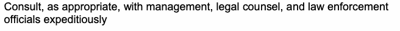
| Completed | Action |
| Conduct remote administration and content updates | |
| Use a strong authentication mechanism (e.g., public/private key pair, two-factor | |
| authentication) | |
| Restrict hosts that can be used to remotely administer or update content on the | |
| Web server by IP address and to the internal network | |
| Use secure protocols (e.g., SSH, HTTPS) | |
| Enforce the concept of least privilege on remote administration and content | |
| updating (e.g., attempt to minimize the access rights for the remote | |
| administration/update accounts) | |
| Change any default accounts or passwords from the remote administration utility | |
| or application | |
| Do not allow remote administration from the Internet unless mechanisms such as | |
| VPNs are used | |
| Do not mount any file shares on the internal network from the Web server or vice | |
| versa |
原本PDFの抜粋画像
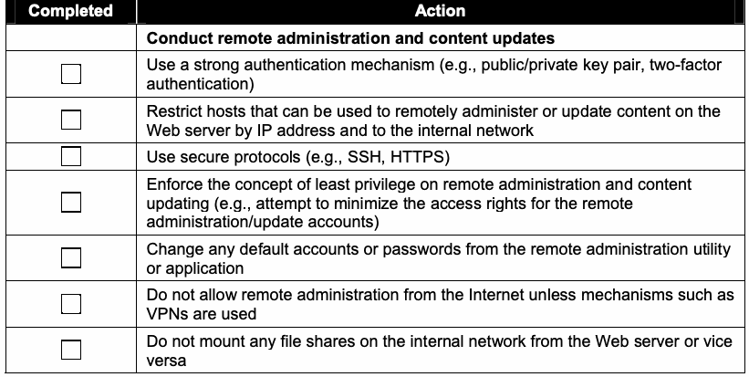
| 完了 | 対応内容 |
| リモート管理およびコンテンツ更新を実施する | |
| 強固な認証方式（公開鍵／秘密鍵ペア、二要素認証など）を使用する | |
| Webサーバーをリモート管理またはコンテンツ更新するホストを制限する（ | |
| IPアドレスで制限し、内部ネットワーク上のホストに限定する） | |
| 安全なプロトコル（SSH、HTTPSなど）を使用する | |
| リモート管理およびコンテンツ更新に最小権限の原則を適用する（ | |
| リモート管理／更新アカウントのアクセス権を最小限にするよう努めるなど） | |
| リモート管理ユーティリティまたはアプリケーションのデフォルトアカウントやパスワードを変更する | |
| VPNなどの仕組みを使用しない限り、インターネットからのリモート管理を許可しない（ | |
| VPNを使用する） | |
| Webサーバーから内部ネットワーク上のファイル共有をマウントしない。また、逆方向も | |
| 行わない |
Appendix A—Online Web Server Security Resources
付録 A—Webサーバーセキュリティに関するオンラインリソース
未レビュー訳This appendix contains lists of online resources that may be helpful to Web server administrators and others in achieving a greater understanding of Web server security and in securing their Web servers.
この付録では、Webサーバーセキュリティへの理解を深め、Webサーバーを保護するうえで、Webサーバー管理者などに役立つオンラインリソースを一覧にしている。
Active Content Security Resources
アクティブコンテンツのセキュリティリソース
未レビュー訳| Resource/Title | URL |
| Active Software Professionals (ASP) Alliance | http://www.aspalliance.com/ |
| cgisecurity.net | http://www.cgisecurity.com/lib/ |
| Department of Homeland Security (DHS) Build Security In Portal | https://buildsecurityin.us-cert.gov/ |
| Exploiting Common Vulnerabilities in PHP Hypertext Preprocessor (PHP) Applications | http://www.securereality.com.au/studyinscarlet.txt |
| Java SE Security | http://java.sun.com/security/ |
| The Official Microsoft ASP.NET 2.0 Site | http://www.asp.net/ |
| Open Web Application Security Project (OWASP) | http://www.owasp.org/ |
| OWASP Top Ten | http://www.owasp.org/index.php/Category:OWASP_Top _Ten_Project |
| PHP Security Guide | http://phpsec.org/php-security-guide.pdf |
| Web Application Security Consortium | http://www.webappsec.org/ |
原本PDFの抜粋画像
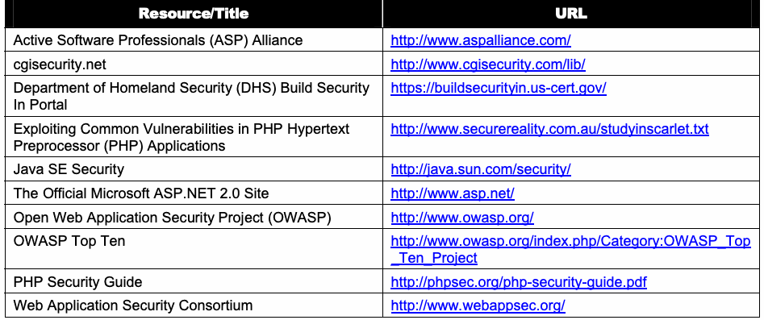
| リソース／タイトル | URL |
| Active Software Professionals（ASP）Alliance | http://www.aspalliance.com/ |
| cgisecurity.net | http://www.cgisecurity.com/lib/ |
| 米国国土安全保障省（DHS）Build Security Inポータル | https://buildsecurityin.us-cert.gov/ |
| PHP Hypertext Preprocessor（PHP）アプリケーションにおける一般的な脆弱性の悪用 | http://www.securereality.com.au/studyinscarlet.txt |
| Java SEのセキュリティ | http://java.sun.com/security/ |
| Microsoft ASP.NET 2.0公式サイト | http://www.asp.net/ |
| Open Web Application Security Project（OWASP） | http://www.owasp.org/ |
| OWASP Top 10 | http://www.owasp.org/index.php/Category:OWASP_Top _Ten_Project |
| PHPセキュリティガイド | http://phpsec.org/php-security-guide.pdf |
| Webアプリケーションセキュリティコンソーシアム | http://www.webappsec.org/ |
Apache Web Server Security Resources
Apache Webサーバーのセキュリティリソース
未レビュー訳| Resource/Title | URL |
| Apache 1.3 Security Tips | http://httpd.apache.org/docs/1.3/misc/security_tips.html |
| Apache 2.0 Security Tips | http://httpd.apache.org/docs/2.0/misc/security_tips.html |
| Apache 2.2 Security Tips | http://httpd.apache.org/docs/2.2/misc/security_tips.html |
| Apache Secure Sockets Layer (SSL) | http://www.apache-ssl.org/ |
| Apache Tutorials | http://httpd.apache.org/docs/misc/tutorials.html |
| Apache-server.com | http://apache-server.com/ |
| Securing Apache | http://www.adobe.com/v1/documentcenter/partners/asz_aswps_se curing_apache.pdf |
| Securing Apache: Step-by-Step | http://www.securityfocus.com/infocus/1694 |
| Securing Apache 2: Step-by-Step | http://www.securityfocus.com/infocus/1786 |
| Securing Your Web Pages With Apache | http://apache-server.com/tutorials/LPauth1.html |
原本PDFの抜粋画像
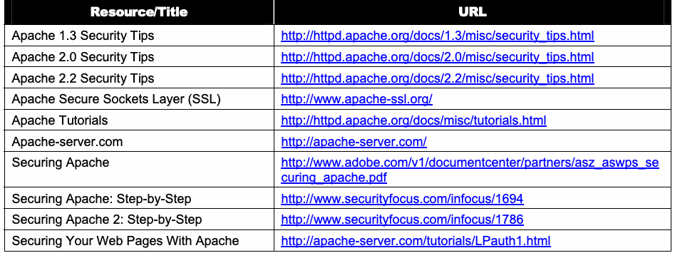
| リソース／タイトル | URL |
| Apache 1.3のセキュリティのヒント | http://httpd.apache.org/docs/1.3/misc/security_tips.html |
| Apache 2.0のセキュリティのヒント | http://httpd.apache.org/docs/2.0/misc/security_tips.html |
| Apache 2.2のセキュリティのヒント | http://httpd.apache.org/docs/2.2/misc/security_tips.html |
| Apache Secure Sockets Layer（SSL） | http://www.apache-ssl.org/ |
| Apacheチュートリアル | http://httpd.apache.org/docs/misc/tutorials.html |
| Apache-server.com | http://apache-server.com/ |
| Apacheのセキュリティ保護 | http://www.adobe.com/v1/documentcenter/partners/asz_aswps_se curing_apache.pdf |
| Apacheのセキュリティ保護: 手順 | http://www.securityfocus.com/infocus/1694 |
| Apache 2のセキュリティ保護: 手順 | http://www.securityfocus.com/infocus/1786 |
| Apacheを使用したWebページのセキュリティ保護 | http://apache-server.com/tutorials/LPauth1.html |
Application Assessment and Code Review Resources
アプリケーション評価およびコードレビューのリソース
未レビュー訳| Resource/Title | URL |
| Detecting Web Application Security Vulnerabilities | http://www.oreillynet.com/pub/a/sysadmin/2006/11/02/webapp_sec urity_scans.html |
| DHS Build Security In Portal | https://buildsecurityin.us-cert.gov/ |
| OWASP WebGoat | http://www.owasp.org/index.php/OWASP_WebGoat_Project |
| OWASP WebScarab | http://www.owasp.org/index.php/OWASP_WebScarab_Project |
| A Process for Performing Security Code Reviews | http://www.computer.org/portal/site/security/index.jsp?pageID=sec urity_level1_article&TheCat=1001&path=security/2006/v4n4&file=b asic.xml |
| SPI Dynamics | http://www.spidynamics.com/ |
| Wapiti | http://wapiti.sourceforge.net/ |
| Watchfire | http://www.watchfire.com/ |
| Web Application Security Consortium Articles | http://www.webappsec.org/projects/articles/ |
原本PDFの抜粋画像
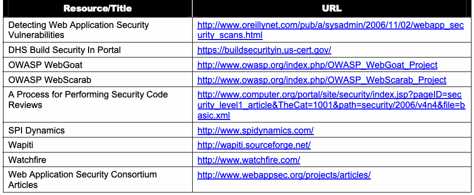
| リソース／タイトル | URL |
| Webアプリケーションのセキュリティ脆弱性の検出 | http://www.oreillynet.com/pub/a/sysadmin/2006/11/02/webapp_sec urity_scans.html |
| DHS Build Security Inポータル | https://buildsecurityin.us-cert.gov/ |
| OWASP WebGoat | http://www.owasp.org/index.php/OWASP_WebGoat_Project |
| OWASP WebScarab | http://www.owasp.org/index.php/OWASP_WebScarab_Project |
| セキュリティコードレビューの実施プロセス | http://www.computer.org/portal/site/security/index.jsp?pageID=sec urity_level1_article&TheCat=1001&path=security/2006/v4n4&file=b asic.xml |
| SPI Dynamics | http://www.spidynamics.com/ |
| Wapiti | http://wapiti.sourceforge.net/ |
| Watchfire | http://www.watchfire.com/ |
| Webアプリケーションセキュリティコンソーシアムの記事 | http://www.webappsec.org/projects/articles/ |
Digital Certificate Providers (Third-Party Certificate Authorities)
デジタル証明書プロバイダー（サードパーティー認証局）
未レビュー訳| Resource/Title | URL |
| CertiSign Certificadora Digital Ltda | http://www.certisign.com.br/ |
| Deutsches Forschungsnetz | http://www.pca.dfn.de/ |
| Entrust.net Ltd. | http://www.entrust.net/ |
| GeoTrust Inc. | http://www.geotrust.com/ |
| GlobalSign NV/SA | http://www.globalsign.net/ |
| GoDaddy | http://www.godaddy.com/ |
| IKS GmbH | http://www.iks-jena.de/produkte/ca/ |
| IdenTrust | http://www.identrust.com/ |
| Lanechange.net | http://www.lanechange.net/ |
| Register.com | http://www.register.com/ |
| TC TrustCenter | http://www.trustcenter.de/ |
| Thawte | http://www.thawte.com/certs/server/request.html |
| VeriSign | http://www.verisign.com/ |
原本PDFの抜粋画像
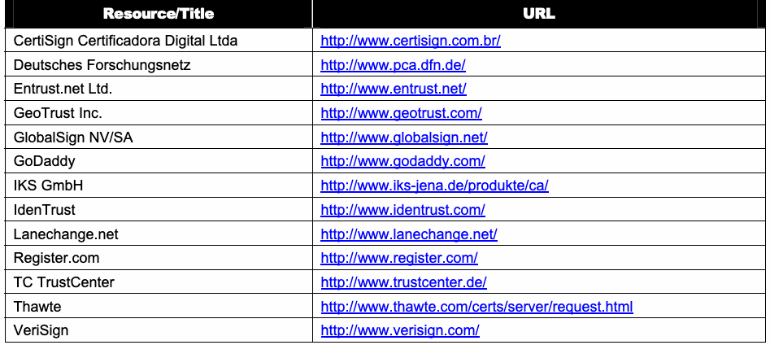
| リソース／タイトル | URL |
| CertiSign Certificadora Digital Ltda | http://www.certisign.com.br/ |
| Deutsches Forschungsnetz | http://www.pca.dfn.de/ |
| Entrust.net Ltd. | http://www.entrust.net/ |
| GeoTrust Inc. | http://www.geotrust.com/ |
| GlobalSign NV/SA | http://www.globalsign.net/ |
| GoDaddy | http://www.godaddy.com/ |
| IKS GmbH | http://www.iks-jena.de/produkte/ca/ |
| IdenTrust | http://www.identrust.com/ |
| Lanechange.net | http://www.lanechange.net/ |
| Register.com | http://www.register.com/ |
| TC TrustCenter | http://www.trustcenter.de/ |
| Thawte | http://www.thawte.com/certs/server/request.html |
| VeriSign | http://www.verisign.com/ |
General Web Server Security Resources
一般的なWebサーバーセキュリティのリソース
未レビュー訳| Resource/Title | URL |
| A Look Into Web Server and Web Application Attack Signatures | http://www.cgisecurity.com/papers/fingerprint-port80.txt |
| Center for Education and Research in Information Assurance and Security (CERIAS) | http://www.cerias.purdue.edu/ |
| Computer Emergency Response Team Coordination Center (CERT/CC), Securing Public Web Servers | http://www.sei.cmu.edu/pub/documents/sims/pdf/sim011.pdf |
原本PDFの抜粋画像
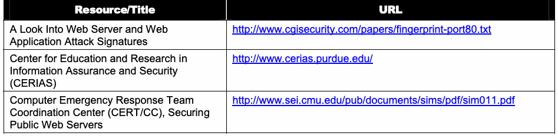
| リソース／タイトル | URL |
| WebサーバーおよびWebアプリケーションの攻撃シグネチャの概要 | http://www.cgisecurity.com/papers/fingerprint-port80.txt |
| 情報保証・セキュリティ教育研究センター（CERIAS） | http://www.cerias.purdue.edu/ |
| コンピューター緊急対応チーム調整センター（CERT/CC）「公開Webサーバーの保護」 | http://www.sei.cmu.edu/pub/documents/sims/pdf/sim011.pdf |
| Resource/Title | URL |
| CERT | http://www.cert.org/ |
| Department of Defense (DoD) Web Site Administration Policies and Procedures | http://www.defenselink.mil/webmasters/policy/dod_web_policy_120 71998_with_amendments_and_corrections.html |
| National Information Assurance Partnership | http://www.nsa.gov/ia/industry/niap.cfm |
| National Institute of Standards and Technology (NIST) Computer Security Resource Center | http://csrc.nist.gov/ |
| NIST National Vulnerability Database | http://nvd.nist.gov/ |
| Office of Management and Budget Circular No. A-130 | http://www.whitehouse.gov/omb/circulars/a130/a130.html |
| Open Source Vulnerability Database | http://www.osvdb.org/ |
| RISKS Forum | http://catless.ncl.ac.uk/Risks/ |
| SANS Institute | http://www.sans.org/ |
| SANS Top-20 Internet Security Attack Targets | http://www.sans.org/top20.htm |
| Security Configuration Checklists Program for IT Products | http://checklists.nist.gov/ |
| Trust Management on the World Wide Web | http://www.firstmonday.dk/issues/issue3_6/khare/ |
| U.S. Department of Energy Computer Incident Advisory Capability (CIAC) | http://www.ciac.org/ciac/ |
| United States Computer Emergency Response Team (US-CERT) | http://www.us-cert.gov/ |
| World Wide Web Security Frequently Asked Questions | http://www.w3.org/Security/Faq/www-security-faq.html |
原本PDFの抜粋画像
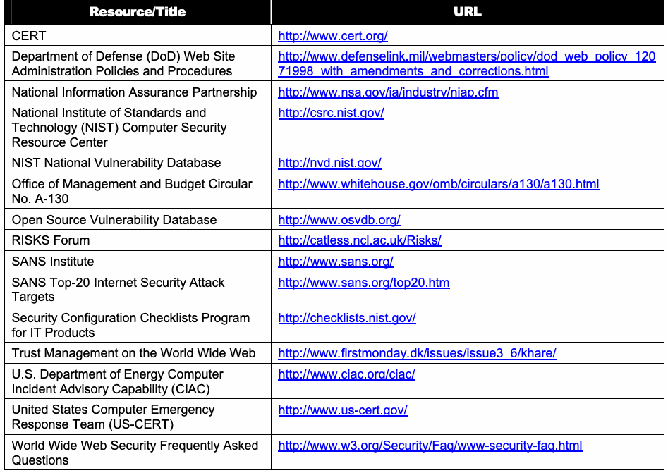
| リソース／タイトル | URL |
| CERT | http://www.cert.org/ |
| 米国国防総省（DoD）のWebサイト管理方針および手順 | http://www.defenselink.mil/webmasters/policy/dod_web_policy_120 71998_with_amendments_and_corrections.html |
| 国家情報保証パートナーシップ | http://www.nsa.gov/ia/industry/niap.cfm |
| 米国国立標準技術研究所（NIST）コンピューターセキュリティリソースセンター | http://csrc.nist.gov/ |
| NIST国家脆弱性データベース | http://nvd.nist.gov/ |
| 行政管理予算局（OMB）通達 A-130 | http://www.whitehouse.gov/omb/circulars/a130/a130.html |
| オープンソース脆弱性データベース | http://www.osvdb.org/ |
| RISKS Forum | http://catless.ncl.ac.uk/Risks/ |
| SANS Institute | http://www.sans.org/ |
| SANSのインターネットセキュリティ攻撃対象トップ20 | http://www.sans.org/top20.htm |
| IT製品向けセキュリティ構成チェックリストプログラム | http://checklists.nist.gov/ |
| World Wide Web上の信頼管理 | http://www.firstmonday.dk/issues/issue3_6/khare/ |
| 米国エネルギー省コンピューターインシデント助言機能（CIAC） | http://www.ciac.org/ciac/ |
| 米国コンピューター緊急対応チーム（US-CERT） | http://www.us-cert.gov/ |
| World Wide Webセキュリティに関するよくある質問 | http://www.w3.org/Security/Faq/www-security-faq.html |
Internet Information Services (IIS) Web Server Security Resources
Internet Information Services（IIS）Webサーバーのセキュリティリソース
未レビュー訳| Resource/Title | URL |
| eEye Advisories and Alerts | http://research.eeye.com/html/advisories/published/index.html |
| IIS 5.0 Security Checklist | http://www.microsoft.com/technet/prodtechnol/windows2000serv/techn ologies/iis/tips/iis5chk.mspx |
| IIS 6 Security | http://www.securityfocus.com/infocus/1765 |
| IIS 6 Security Best Practices | http://technet2.microsoft.com/WindowsServer/en/library/ace052a0- a713-423e-8e8c-4bf198f597b81033.mspx |
| IIS Lockdown Tool | http://www.microsoft.com/technet/security/tools/locktool.mspx |
| National Security Agency (NSA) Guide to the Secure Configuration and Administration of Microsoft IIS 5.0 | http://www.nsa.gov/notices/notic00004.cfm?Address=/snac/os/win2k/ii s_5_v1_4.pdf |
| Security in IIS 6.0 | http://www.microsoft.com/technet/prodtechnol/WindowsServer2003/Li brary/IIS/f8f81568-31f2-4210-9982-b9391afc30eb.mspx?mfr=true |
原本PDFの抜粋画像
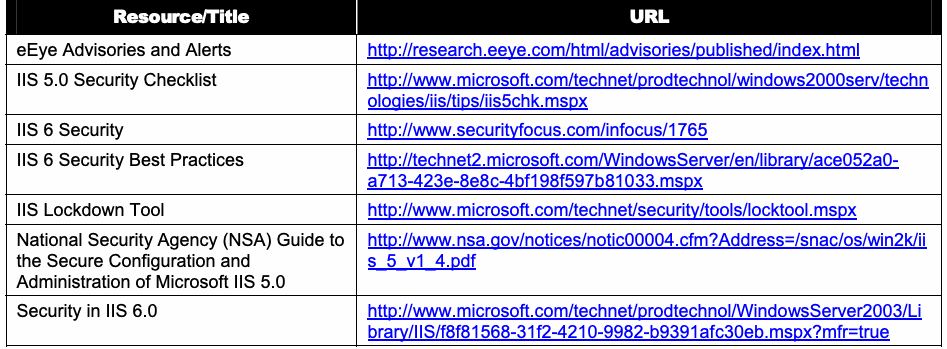
| リソース／タイトル | URL |
| eEye Advisories and Alerts | http://research.eeye.com/html/advisories/published/index.html |
| IIS 5.0 Security Checklist | http://www.microsoft.com/technet/prodtechnol/windows2000serv/techn ologies/iis/tips/iis5chk.mspx |
| IIS 6 Security | http://www.securityfocus.com/infocus/1765 |
| IIS 6 Security Best Practices | http://technet2.microsoft.com/WindowsServer/en/library/ace052a0- a713-423e-8e8c-4bf198f597b81033.mspx |
| IIS Lockdown Tool | http://www.microsoft.com/technet/security/tools/locktool.mspx |
| 米国国家安全保障局（NSA）「Microsoft IIS 5.0の安全な構成および管理ガイド」 | http://www.nsa.gov/notices/notic00004.cfm?Address=/snac/os/win2k/ii s_5_v1_4.pdf |
| Security in IIS 6.0 | http://www.microsoft.com/technet/prodtechnol/WindowsServer2003/Li brary/IIS/f8f81568-31f2-4210-9982-b9391afc30eb.mspx?mfr=true |
Miscellaneous Web Security Resources
その他のWebセキュリティリソース
未レビュー訳| Resource/Title | URL |
| dominosecurity.org | http://www.dominosecurity.org/ |
| Honeynet Project | http://project.honeynet.org/ |
| Lotus Domino Security Page | http://www-128.ibm.com/developerworks/lotus/security/ |
| Microsoft Internet Explorer Home Page | http://www.microsoft.com/windows/products/winfamily/ie/default .mspx |
| Mozilla Security Center | http://www.mozilla.org/security/ |
| Netcraft | http://www.netcraft.com/ |
原本PDFの抜粋画像
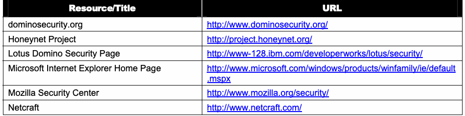
| リソース／タイトル | URL |
| dominosecurity.org | http://www.dominosecurity.org/ |
| Honeynet Project | http://project.honeynet.org/ |
| Lotus Domino Security Page | http://www-128.ibm.com/developerworks/lotus/security/ |
| Microsoft Internet Explorer Home Page | http://www.microsoft.com/windows/products/winfamily/ie/default .mspx |
| Mozilla Security Center | http://www.mozilla.org/security/ |
| Netcraft | http://www.netcraft.com/ |
Phishing Resources
フィッシング関連のリソース
未レビュー訳| Resource/Title | URL |
| Anti-Phishing Working Group (APWG) | http://www.antiphishing.org/ |
| Federal Trade Commission (FTC), “How Not to Get Hooked by a ‘Phishing’ Scam” | http://www.ftc.gov/bcp/edu/pubs/consumer/alerts/alt127.htm |
| Internet Crime Complaint Center (ICCC) | http://www.ic3.gov/ |
| Phish Report Network | http://www.phishreport.net/ |
原本PDFの抜粋画像
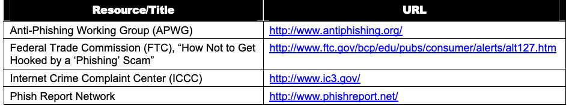
| リソース／タイトル | URL |
| Anti-Phishing Working Group (APWG) | http://www.antiphishing.org/ |
| 連邦取引委員会（FTC）「フィッシング詐欺に引っかからない方法」 | http://www.ftc.gov/bcp/edu/pubs/consumer/alerts/alt127.htm |
| Internet Crime Complaint Center (ICCC) | http://www.ic3.gov/ |
| Phish Report Network | http://www.phishreport.net/ |
WebBot Information
WebBot関連の情報
未レビュー訳| Resource/Title | URL |
| BotSpot | http://www.botspot.com |
| Configuring the robots.txt Files | http://www.robotstxt.org/wc/exclusion.html#robotstxt |
| NIST Mobile Agent Security | http://csrc.nist.gov/mobileagents/projects.html |
| Showing Robots the Door | http://www.ariadne.ac.uk/issue15/robots/ |
| University of Maryland Baltimore County (UMBC) AgentWeb | http://agents.umbc.edu/ |
原本PDFの抜粋画像
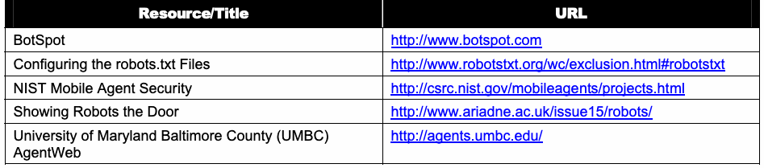
| リソース／タイトル | URL |
| BotSpot | http://www.botspot.com |
| robots.txtファイルの構成 | http://www.robotstxt.org/wc/exclusion.html#robotstxt |
| NIST Mobile Agent Security | http://csrc.nist.gov/mobileagents/projects.html |
| Showing Robots the Door | http://www.ariadne.ac.uk/issue15/robots/ |
| メリーランド大学ボルチモア郡校（UMBC）AgentWeb | http://agents.umbc.edu/ |
NIST Publications on System and Network Security82
システムおよびネットワークセキュリティに関するNIST刊行物82
未レビュー訳| Publication | URL |
| SP 800-18 Revision 1, Guide for Developing Security Plans for Federal Information Systems | http://csrc.nist.gov/publications/nistpubs/800-18- Rev1/sp800-18-Rev1-final.pdf |
| SP 800-26, Security Self-Assessment Guide for Information Technology Systems | http://csrc.nist.gov/publications/nistpubs/800-26/sp800- 26.pdf |
| SP 800-27, Engineering Principles for Information Technology Security | http://csrc.nist.gov/publications/nistpubs/800- 27A/SP800-27-RevA.pdf |
| SP 800-28 Version 2 (DRAFT), Guidelines on Active Content and Mobile Code | http://csrc.nist.gov/publications/nistpubs/ |
原本PDFの抜粋画像
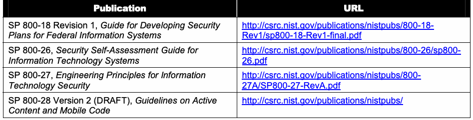
| 刊行物 | URL |
| SP 800-18 Rev. 1「連邦情報システムのセキュリティ計画策定ガイド」 | http://csrc.nist.gov/publications/nistpubs/800-18- Rev1/sp800-18-Rev1-final.pdf |
| SP 800-26「情報技術システムのセキュリティ自己評価ガイド」 | http://csrc.nist.gov/publications/nistpubs/800-26/sp800- 26.pdf |
| SP 800-27「情報技術セキュリティの設計原則」 | http://csrc.nist.gov/publications/nistpubs/800- 27A/SP800-27-RevA.pdf |
| SP 800-28 Version 2（草案）「アクティブコンテンツおよびモバイルコードに関するガイドライン」 | http://csrc.nist.gov/publications/nistpubs/ |
| Publication | URL |
| SP 800-32, Introduction to Public Key Technology and the Federal PKI Infrastructure | http://csrc.nist.gov/publications/nistpubs/800-32/sp800- 32.pdf |
| SP 800-34, Contingency Planning Guide for Information Technology Systems | http://csrc.nist.gov/publications/nistpubs/800-34/sp800- 34.pdf |
| SP 800-37, Guide for the Security Certification and Accreditation of Federal Information Systems | http://csrc.nist.gov/publications/nistpubs/800-37/SP800- 37-final.pdf |
| SP 800-40 Version 2, Creating a Patch and Vulnerability Management Program | http://csrc.nist.gov/publications/nistpubs/800-40- Ver2/SP800-40v2.pdf |
| SP 800-41, Guidelines on Firewalls and Firewall Policy | http://csrc.nist.gov/publications/nistpubs/800-41/sp800- 41.pdf |
| SP 800-42, Guideline on Network Security Testing | http://csrc.nist.gov/publications/nistpubs/800-42/NIST- SP800-42.pdf |
| SP 800-45 Version 2, Guidelines on Electronic Mail Security | http://csrc.nist.gov/publications/nistpubs/800-45- version2/SP800-45v2.pdf |
| SP 800-46, Security for Telecommuting and Broadband Communications | http://csrc.nist.gov/publications/nistpubs/800-46/sp800- 46.pdf |
| SP 800-52, Guidelines for the Selection and Use of Transport Layer Security (TLS) Implementations | http://csrc.nist.gov/publications/nistpubs/800-52/SP800- 52.pdf |
| SP 800-53 Revision 1, Recommended Security Controls for Federal Information Systems | http://csrc.nist.gov/publications/nistpubs/800-53- Rev1/800-53-rev1-final-clean-sz.pdf |
| SP 800-61, Computer Security Incident Handling Guide | http://csrc.nist.gov/publications/nistpubs/800-61/sp800- 61.pdf |
| SP 800-63, Electronic Authentication Guideline | http://csrc.nist.gov/publications/nistpubs/800-63/SP800- 63V1_0_2.pdf |
| SP 800-68, Guidance for Securing Microsoft Windows XP Systems for IT Professionals | http://csrc.nist.gov/itsec/download_WinXP.html |
| SP 800-69, Guidance for Securing Microsoft Windows XP Home Edition: A NIST Security Configuration Checklist | http://csrc.nist.gov/itsec/guidance_WinXP_Home.html |
| SP 800-77, Guide to IPsec VPNs | http://csrc.nist.gov/publications/nistpubs/800-77/sp800- 77.pdf |
| SP 800-81, Secure Domain Name System (DNS) Deployment Guide | http://csrc.nist.gov/publications/nistpubs/800-81/SP800- 81.pdf |
| SP 800-83, Guide to Malware Incident Prevention and Handling | http://csrc.nist.gov/publications/nistpubs/800-83/SP800- 83.pdf |
| SP 800-86, Guide to Integrating Forensic Techniques into Incident Response | http://csrc.nist.gov/publications/nistpubs/800-86/SP800- 86.pdf |
| SP 800-92, Guide to Computer Security Log Management | http://csrc.nist.gov/publications/nistpubs/800-92/SP800- 92.pdf |
| SP 800-94, Guide to Intrusion Detection and Prevention Systems (IDPS) | http://csrc.nist.gov/publications/nistpubs/800-94/SP800- 94.pdf |
| SP 800-95, Guide to Secure Web Services | http://csrc.nist.gov/publications/nistpubs/800-95/SP800- 95.pdf |
原本PDFの抜粋画像
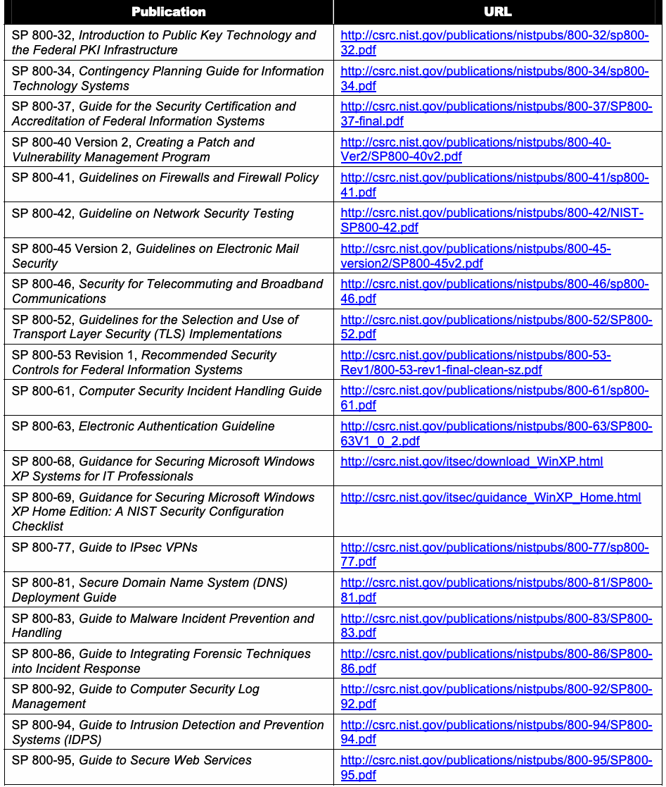
| 刊行物 | URL |
| SP 800-32「公開鍵技術および連邦PKI基盤の概要」 | http://csrc.nist.gov/publications/nistpubs/800-32/sp800- 32.pdf |
| SP 800-34「情報技術システムの緊急時対応計画ガイド」 | http://csrc.nist.gov/publications/nistpubs/800-34/sp800- 34.pdf |
| SP 800-37「連邦情報システムのセキュリティ認証および認定ガイド」 | http://csrc.nist.gov/publications/nistpubs/800-37/SP800- 37-final.pdf |
| SP 800-40 Version 2「パッチおよび脆弱性管理プログラムの作成」 | http://csrc.nist.gov/publications/nistpubs/800-40- Ver2/SP800-40v2.pdf |
| SP 800-41「ファイアウォールおよびファイアウォール方針に関するガイドライン」 | http://csrc.nist.gov/publications/nistpubs/800-41/sp800- 41.pdf |
| SP 800-42「ネットワークセキュリティ試験ガイドライン」 | http://csrc.nist.gov/publications/nistpubs/800-42/NIST- SP800-42.pdf |
| SP 800-45 Version 2「電子メールセキュリティに関するガイドライン」 | http://csrc.nist.gov/publications/nistpubs/800-45- version2/SP800-45v2.pdf |
| SP 800-46「テレワークおよびブロードバンド通信のセキュリティ」 | http://csrc.nist.gov/publications/nistpubs/800-46/sp800- 46.pdf |
| SP 800-52「トランスポート層セキュリティ（TLS）実装の選択および使用に関するガイドライン」 | http://csrc.nist.gov/publications/nistpubs/800-52/SP800- 52.pdf |
| SP 800-53 Rev. 1「連邦情報システムに推奨されるセキュリティ管理策」 | http://csrc.nist.gov/publications/nistpubs/800-53- Rev1/800-53-rev1-final-clean-sz.pdf |
| SP 800-61「コンピューターセキュリティインシデント対応ガイド」 | http://csrc.nist.gov/publications/nistpubs/800-61/sp800- 61.pdf |
| SP 800-63「電子認証ガイドライン」 | http://csrc.nist.gov/publications/nistpubs/800-63/SP800- 63V1_0_2.pdf |
| SP 800-68「IT専門家向けMicrosoft Windows XPシステム保護ガイダンス」 | http://csrc.nist.gov/itsec/download_WinXP.html |
| SP 800-69「Microsoft Windows XP Home Editionの保護ガイダンス: NISTセキュリティ構成チェックリスト」 | http://csrc.nist.gov/itsec/guidance_WinXP_Home.html |
| SP 800-77「IPsec VPNガイド」 | http://csrc.nist.gov/publications/nistpubs/800-77/sp800- 77.pdf |
| SP 800-81「安全なドメインネームシステム（DNS）の導入ガイド」 | http://csrc.nist.gov/publications/nistpubs/800-81/SP800- 81.pdf |
| SP 800-83「マルウェアインシデントの予防および対応ガイド」 | http://csrc.nist.gov/publications/nistpubs/800-83/SP800- 83.pdf |
| SP 800-86「インシデント対応へのフォレンジック手法統合ガイド」 | http://csrc.nist.gov/publications/nistpubs/800-86/SP800- 86.pdf |
| SP 800-92「コンピューターセキュリティログ管理ガイド」 | http://csrc.nist.gov/publications/nistpubs/800-92/SP800- 92.pdf |
| SP 800-94「侵入検知・防止システム（IDPS）ガイド」 | http://csrc.nist.gov/publications/nistpubs/800-94/SP800- 94.pdf |
| SP 800-95「安全なWebサービスガイド」 | http://csrc.nist.gov/publications/nistpubs/800-95/SP800- 95.pdf |
Appendix B—Glossary
付録 B—用語集
未レビュー訳Address Resolution Protocol (ARP)—A protocol used to obtain a node’s physical address. A client station broadcasts an ARP request onto the network with the Internet Protocol (IP) address of the target node with which it wishes to communicate, and with that address the node responds by sending back its physical address so that packets can be transmitted to it.
アドレス解決プロトコル（ARP）—ノードの物理アドレスを取得するために使用するプロトコル。クライアント端末は、通信先ノードのインターネットプロトコル（IP）アドレスを指定してARP要求をネットワークにブロードキャストする。要求を受けたノードは自身の物理アドレスを返信し、それによってパケットを送信できる。
Content Generator—A program on a Web server that will dynamically generate HyperText Markup Language (HTML) pages for users. Content generators can range from simple Common Gateway Interface (CGI) scripts executed by the Web server to Java EE or .NET application servers in which most—if not all—HTML pages served are dynamically generated.
コンテンツ生成プログラム—ユーザー向けにハイパーテキストマークアップ言語（HTML）ページを動的に生成するWebサーバー上のプログラム。コンテンツ生成プログラムには、Webサーバーが実行する単純な共通ゲートウェイインターフェース（CGI）スクリプトから、配信するHTMLページの大部分またはすべてを動的に生成するJava EEや.NETのアプリケーションサーバーまで、さまざまなものがある。
Demilitarized Zone (DMZ)—A host or network segment inserted as a “neutral zone” between an organization’s private network and the Internet.
非武装地帯（DMZ）—組織のプライベートネットワークとインターネットの間に「中立地帯」として設けるホストまたはネットワークセグメント。
Host—Almost any kind of computer, including a centralized mainframe that is a host to its terminals, a server that is host to its clients, or a desktop personal computer (PC) that is host to its peripherals. In network architectures, a client station (user’s machine) is also considered a host because it is a source of information to the network, in contrast to a device, such as a router or switch, that directs traffic.
ホスト—ほぼあらゆる種類のコンピューターを指す。たとえば、端末を接続する集中型メインフレーム、クライアントを接続するサーバー、周辺機器を接続するデスクトップパーソナルコンピューター（PC）が該当する。ネットワークアーキテクチャでは、クライアント端末（ユーザーのマシン）も、ルーターやスイッチのようにトラフィックを転送する装置とは異なり、ネットワークに情報を提供する発信元となるため、ホストと見なされる。
Hotfix—Microsoft’s term for “patch.”
ホットフィックス—Microsoftが「パッチ」を指して使用する用語。
Mandatory Access Control—A means of restricting access to system resources based on the sensitivity (as represented by a label) of the information contained in the system resource and the formal authorization (i.e., clearance) of users to access information of such sensitivity.
強制アクセス制御—システムリソースに含まれる情報の機密性（ラベルで表す）と、その機密性の情報へのアクセスを許可されたユーザーの正式な認可（すなわち、クリアランス）に基づいて、システムリソースへのアクセスを制限する方法。
Network Administrator—A person who manages a local area network (LAN) within an organization. Responsibilities include ensuring network security, installing new applications, distributing software upgrades, monitoring daily activity, enforcing licensing agreements, developing a storage management program, and providing for routine backups.
ネットワーク管理者—組織内のローカルエリアネットワーク（LAN）を管理する人。ネットワークセキュリティの確保、新しいアプリケーションのインストール、ソフトウェア更新の配布、日常活動の監視、ライセンス契約の徹底、ストレージ管理プログラムの策定、定期バックアップの実施などを担当する。
Nonce—A randomly generated value used to defeat “playback” attacks in communication protocols. One party randomly generates a nonce and sends it to the other party. The receiver encrypts it using the agreed upon secret key and returns it to the sender. Because the sender randomly generated the nonce, this defeats playback attacks because the replayer cannot know in advance the nonce the sender will generate. The receiver denies connections that do not have the correctly encrypted nonce.
ノンス—通信プロトコルに対する「リプレイ」攻撃を防ぐために使用するランダム生成値。一方の当事者がノンスをランダムに生成して相手に送り、受信側は合意済みの秘密鍵で暗号化して送信者に返す。送信者がノンスをランダムに生成するため、攻撃者は事前に値を知ることができず、リプレイ攻撃を防止できる。受信側は、正しく暗号化されたノンスを含まない接続を拒否する。
Operating System—The software “master control application” that runs the computer. It is the first program loaded when the computer is turned on, and its main component, the kernel, resides in memory at all times. The operating system sets the standards for all application programs (such as the Web server) that run in the computer. The applications communicate with the operating system for most user interface and file management operations.
オペレーティングシステム—コンピューターを動作させるソフトウェアの「基本制御プログラム」。コンピューターの電源投入時に最初に読み込まれ、その主要部分であるカーネルは常時メモリに常駐する。オペレーティングシステムは、コンピューター上で動作するすべてのアプリケーションプログラム（Webサーバーなど）の標準を定める。アプリケーションは、ユーザーインターフェースやファイル管理に関する処理の大部分でオペレーティングシステムと通信する。
Patch—A “repair job” for a piece of programming; also known as a “fix.” A patch is the immediate solution that is provided to users; it can sometimes be downloaded from the software maker’s Web site. The patch is not necessarily the best solution for the problem, and product developers often find a better solution to provide when they package the product for its next release. A patch is usually developed and distributed as a replacement for or an insertion in compiled code (that is, in a binary file or object module). In many operating systems, a special program is provided to manage and track the installation of patches.
パッチ—プログラムの一部を「修復」するもの。「フィックス」とも呼ばれる。パッチはユーザーに提供される即時の解決策であり、ソフトウェアメーカーのWebサイトからダウンロードできる場合がある。パッチが問題に対する最善の解決策とは限らず、製品開発者は次のリリースに製品をまとめる際、より良い解決策を提供することが多い。通常、パッチはコンパイル済みコード（バイナリファイルまたはオブジェクトモジュール）の置換または挿入として開発・配布される。多くのオペレーティングシステムには、パッチのインストールを管理・追跡する専用プログラムが用意されている。
Pharming—Using technical means to redirect users into accessing a fake Web site masquerading as a legitimate one and divulging personal information.
ファーミング—技術的な手段を用いてユーザーを正規サイトに偽装した偽サイトへ誘導し、個人情報を開示させること。
Phishing—Using social engineering techniques to trick users into accessing a fake Web site and divulging personal information.
フィッシング—ソーシャルエンジニアリングの手法を使ってユーザーを偽サイトにアクセスさせ、個人情報を開示させること。
Proxy—A proxy is an application that “breaks” the connection between client and server. The proxy accepts certain types of traffic entering or leaving a network, processes it, and forwards it. This effectively closes the straight path between the internal and external networks, making it more difficult for an attacker to obtain internal addresses and other details of the organization’s internal network. Proxy servers are available for common Internet services; for example, a Hypertext Transfer Protocol (HTTP) proxy used for Web access and a Simple Mail Transfer Protocol (SMTP) proxy used for e-mail.
プロキシ—クライアントとサーバーの接続を「分断」するアプリケーション。プロキシはネットワークに入る、またはネットワークから出る特定の種類のトラフィックを受け取り、処理して転送する。これにより内部ネットワークと外部ネットワークの間の直接経路が閉じられ、攻撃者が組織の内部アドレスなどの詳細を入手しにくくなる。一般的なインターネットサービス向けにプロキシサーバーが提供されている。たとえば、Webアクセスにはハイパーテキスト転送プロトコル（HTTP）プロキシ、電子メールには簡易メール転送プロトコル（SMTP）プロキシが使われる。
Service Pack—Microsoft’s term for a collection of patches integrated into a single large update.
サービスパック—複数のパッチを1つの大規模な更新に統合したものを指すMicrosoftの用語。
SOCKS Protocol—An Internet protocol to allow client applications to form a circuit-level gateway to a network firewall via a proxy service.
SOCKSプロトコル—クライアントアプリケーションがプロキシサービスを介してネットワークファイアウォールへの回線レベルゲートウェイを形成できるようにするインターネットプロトコル。
System Administrator—A person who manages a computer system, including its operating system and applications. A system administrator’s responsibilities are similar to that of a network administrator.
システム管理者—オペレーティングシステムおよびアプリケーションを含むコンピューターシステムを管理する人。システム管理者の責任はネットワーク管理者の責任と類似している。
Virtualization—The use of an abstraction layer to simulate computing hardware so that multiple operating systems can run on a single computer.
仮想化—抽象化層を使用してコンピューターハードウェアを模擬し、1台のコンピューター上で複数のオペレーティングシステムを実行すること。
Vulnerability—A security exposure in an operating system or other system software or application software component. A variety of organizations maintain publicly accessible databases of vulnerabilities based on the version numbers of software. Each vulnerability can potentially compromise the system or network if exploited.
脆弱性—オペレーティングシステム、その他のシステムソフトウェア、またはアプリケーションソフトウェアのコンポーネントにおけるセキュリティ上の露出。複数の組織が、ソフトウェアのバージョン番号に基づく脆弱性の公開データベースを管理している。脆弱性が悪用されると、システムまたはネットワークが侵害される可能性がある。
Web Server—A computer that provides World Wide Web (WWW) services on the Internet. It includes the hardware, operating system, Web server software, and Web site content (Web pages). If the Web server is used internally and not by the public, it may be known as an “intranet server.”
Webサーバー—インターネット上でWorld Wide Web（WWW）サービスを提供するコンピューター。ハードウェア、オペレーティングシステム、Webサーバーソフトウェア、およびWebサイトのコンテンツ（Webページ）を含む。Webサーバーが内部利用専用で一般公開されていない場合、「イントラネットサーバー」と呼ぶことがある。
Web Server Administrator—The Web server equivalent of a system administrator. Web server administrators are system architects responsible for the overall design, implementation, and maintenance of Web servers. They may or may not be responsible for Web content, which is traditionally the responsibility of the Webmaster.
Webサーバー管理者—システム管理者に相当するWebサーバーの担当者。Webサーバー管理者は、Webサーバー全体の設計、実装、および保守を担うシステムアーキテクトである。Webコンテンツも担当する場合と担当しない場合がある。従来、WebコンテンツはWebマスターが担当する。
Webmaster—A person responsible for the implementation of a Web site. Webmasters must be proficient in HTML and one or more scripting and interface languages, such as JavaScript and Perl. They may or may not be responsible for the underlying server, which is traditionally the responsibility of the Web administrator (see above).
Webマスター—Webサイトの実装を担当する人。WebマスターはHTMLおよびJavaScriptやPerlなど1つ以上のスクリプト言語・インターフェース言語に精通している必要がある。基盤となるサーバーも担当する場合としない場合があり、従来はWeb管理者が担当する（前項を参照）。
Appendix C—Web Security Tools and Applications
付録 C—Webセキュリティツールおよびアプリケーション
未レビュー訳The tools and applications referenced in this appendix are by no means a complete list of tools and applications to use for Web security, nor does this publication imply any endorsement of certain products.
この付録で参照するツールやアプリケーションは、Webセキュリティに使用できるツールやアプリケーションを網羅した一覧ではない。また、この刊行物は特定の製品を推奨するものでもない。
Log File Analysis Tools
ログファイル分析ツール
未レビュー訳原本PDFの抜粋画像
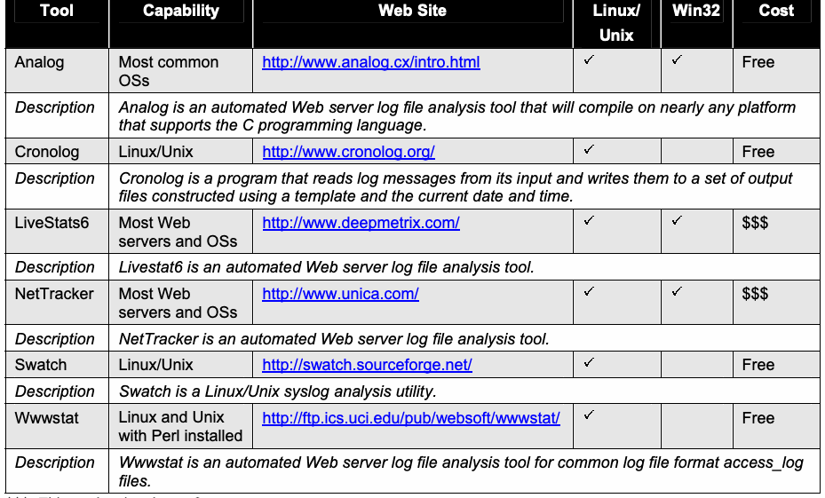
$$$=This product involves a fee.
$$$ = この製品は有料。
未レビュー訳Vulnerability Scanning Tools
脆弱性スキャンツール
未レビュー訳| Tool / Capability | Web Site / Linux/ / Win32 / Cost |
| Unix | |
| Internet / Vulnerability scanner | http://www.iss.net/ / (cid:57) / $$$ |
| Security | |
| Systems | |
| (ISS) | |
| Internet | |
| Scanner | |
| Description | ISS Internet Scanner is a network-based vulnerability-scanning tool that identifies security holes on network hosts. |
| Metasploit / Vulnerability | http://www.metasploit.com/ / (cid:57) / (cid:57) / Free |
| scanner | |
| Description | Metasploit is a freeware vulnerability-scanning tool that identifies security holes on network hosts. |
| Nessus / Vulnerability | http://www.nessus.org/ / (cid:57) / (cid:57) / Free |
| scanner |
原本PDFの抜粋画像
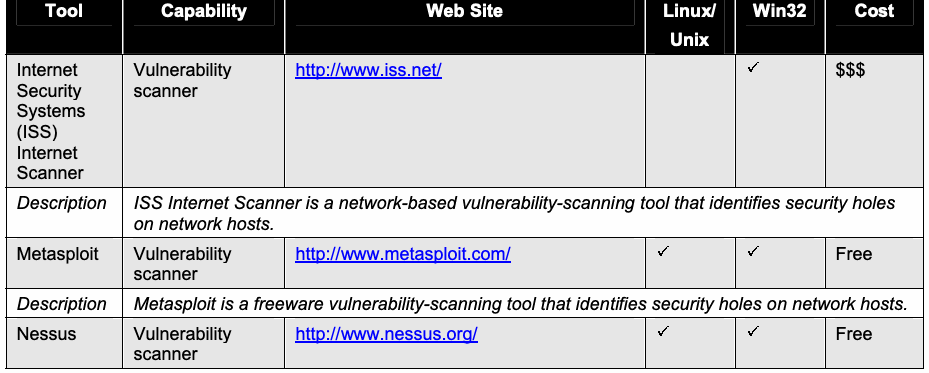
| ツール／機能 | Webサイト／Linux／Win32／費用 |
| Unix | |
| インターネット／脆弱性スキャナー | http://www.iss.net/ / (cid:57) / $$$ |
| セキュリティ | |
| Systems | |
| （ISS） | |
| インターネット | |
| スキャナー | |
| 説明 | ISS Internet Scannerは、ネットワーク上のホストのセキュリティ上の欠陥を特定する、ネットワークベースの脆弱性スキャンツールである。 |
| Metasploit／脆弱性 | http://www.metasploit.com/ / (cid:57) / (cid:57) / Free |
| スキャナー | |
| 説明 | Metasploitは、ネットワーク上のホストのセキュリティ上の欠陥を特定するフリーウェアの脆弱性スキャンツールである。 |
| Nessus／脆弱性スキャナー | http://www.nessus.org/ / (cid:57) / (cid:57) / Free |
| スキャナー |
原本PDFの抜粋画像
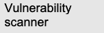
| Tool / Capability | Web Site / Linux/ / Win32 / Cost |
| Unix | |
| Description | Nessus is a freeware network-based vulnerability-scanning tool that identifies security holes on network hosts. |
| Retina / Vulnerability | http://www.eeye.com/ / (cid:57) / $$$ |
| scanner | |
| Description | Retina is a general-purpose network security scanner that identifies a large number of Web server vulnerabilities. |
| SAINT / Vulnerability | http://www.saintcorporation.com/ / (cid:57) / $$$ |
| scanner | |
| Description | SAINT is a network-based vulnerability-scanning tool that identifies security holes on network hosts. |
| SARA / Vulnerability | http://www-arc.com/sara/ / (cid:57) / Free |
| scanner | |
| Description | SARA is a freeware network-based vulnerability-scanning tool that identifies security holes on network hosts. |
原本PDFの抜粋画像
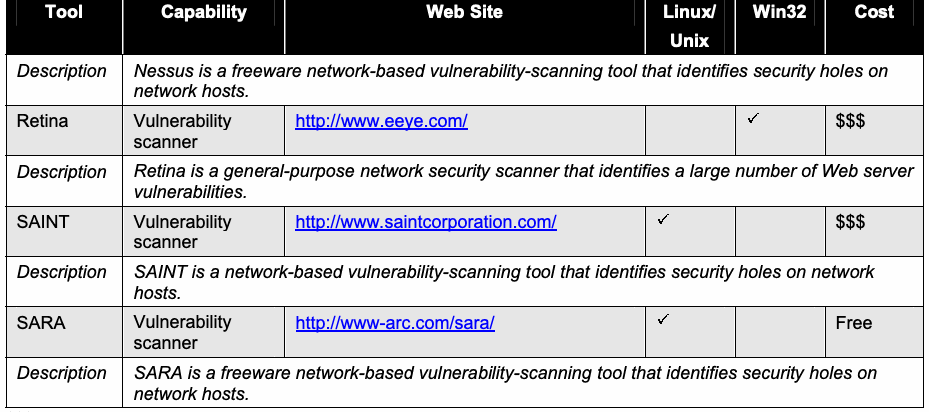
| ツール／機能 | Webサイト／Linux／Win32／費用 |
| Unix | |
| 説明 | Nessusは、ネットワーク上のホストのセキュリティ上の欠陥を特定するフリーウェアのネットワークベース脆弱性スキャンツールである。 |
| Retina／脆弱性 | http://www.eeye.com/ / (cid:57) / $$$ |
| スキャナー | |
| 説明 | Retinaは、数多くのWebサーバー脆弱性を特定する汎用ネットワークセキュリティスキャナーである。 |
| SAINT／脆弱性 | http://www.saintcorporation.com/ / (cid:57) / $$$ |
| スキャナー | |
| 説明 | SAINTは、ネットワーク上のホストのセキュリティ上の欠陥を特定するネットワークベース脆弱性スキャンツールである。 |
| SARA／脆弱性 | http://www-arc.com/sara/ / (cid:57) / Free |
| スキャナー | |
| 説明 | SARAは、ネットワーク上のホストのセキュリティ上の欠陥を特定するフリーウェアのネットワークベース脆弱性スキャンツールである。 |
$$$=This product involves a fee.
$$$ = この製品は有料。
未レビュー訳Web Application Scanning Tools
Webアプリケーションスキャンツール
未レビュー訳| Tool / Capability | Web Site / Linux/ / Win32 / Cost |
| Unix | |
| Acunetix / Web vulnerability | http://www.acunetix.com/ / (cid:57) / (cid:57) / $$$ |
| scanner | |
| Description | Acunetix Web vulnerability scanner is a Web application vulnerability scanner. |
| AppScan / Web vulnerability | http://www.watchfire.com/ / (cid:57) / $$$ |
| scanner | |
| Description | AppScan is a Web application vulnerability scanner. |
| Nikto / Common | http://www.cirt.net/code/nikto.shtml / (cid:57) / (cid:57) / Free |
| Gateway | |
| Interface (CGI) | |
| vulnerability | |
| scanner | |
| Description | Nikto is scanner that identifies vulnerabilities in CGI scripts. |
| Paros / Web proxy for | http://www.parosproxy.org/index.shtml / (cid:57) / (cid:57) / Free |
| security testing | |
| Web applications | |
| Description | Paros allows for the interception and modification of all Hypertext Transfer Protocol (HTTP) and Secure Hypertext Transfer Protocol (HTTPS) data between server and client, including cookies and form fields, and allows for the testing of Web application security. |
| SiteDigger / A Web | http://www.foundstone.com/us/resources/ proddesc/sitedigger.htm / (cid:57) / Free |
| vulnerability | |
| scanner that | |
| looks at Google’s | |
| data on your site | |
| Description | SiteDigger searches Google’s cache to look for vulnerabilities, errors, configuration issues, proprietary information, and interesting security nuggets on Web sites. |
| SSLDigger / SSL cipher | http://www.foundstone.com/us/resources/ / (cid:57) / Free |
| interrogator | proddesc/ssldigger.htm |
原本PDFの抜粋画像
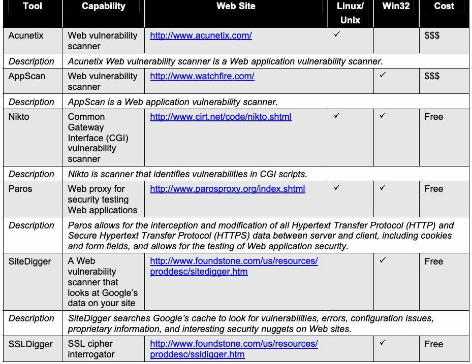
| ツール／機能 | Webサイト／Linux／Win32／費用 |
| Unix | |
| Acunetix／Web脆弱性 | http://www.acunetix.com/ / (cid:57) / (cid:57) / $$$ |
| スキャナー | |
| 説明 | Acunetix Web脆弱性スキャナーは、Webアプリケーションの脆弱性スキャナーである。 |
| AppScan／Web脆弱性 | http://www.watchfire.com/ / (cid:57) / $$$ |
| スキャナー | |
| 説明 | AppScanはWebアプリケーションの脆弱性スキャナーである。 |
| Nikto／共通 | http://www.cirt.net/code/nikto.shtml / (cid:57) / (cid:57) / Free |
| ゲートウェイ | |
| インターフェース（CGI） | |
| 脆弱性 | |
| スキャナー | |
| 説明 | NiktoはCGIスクリプトの脆弱性を特定するスキャナーである。 |
| Paros／Webアプリケーションのセキュリティ試験用Webプロキシ | http://www.parosproxy.org/index.shtml / (cid:57) / (cid:57) / Free |
| セキュリティ試験 | |
| Webアプリケーション | |
| 説明 | Parosは、Cookieやフォームフィールドを含む、サーバーとクライアント間のすべてのハイパーテキスト転送プロトコル（HTTP）およびセキュアHTTP（HTTPS）データを傍受・変更でき、Webアプリケーションのセキュリティ試験を可能にする。 |
| SiteDigger／Web脆弱性を | http://www.foundstone.com/us/resources/ proddesc/sitedigger.htm / (cid:57) / Free |
| 脆弱性 | |
| 調べるスキャナー | |
| Googleの | |
| サイト情報を対象とする | |
| 説明 | SiteDiggerはGoogleのキャッシュを検索し、Webサイト上の脆弱性、エラー、構成上の問題、専有情報、および興味深いセキュリティ情報を探す。 |
| SSLDigger／SSL暗号方式 | http://www.foundstone.com/us/resources/ / (cid:57) / Free |
| 調査ツール | proddesc/ssldigger.htm |
原本PDFの抜粋画像
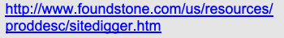
| Tool / Capability | Web Site / Linux/ / Win32 / Cost |
| Unix | |
| Description | SSLDigger is a tool used to assess the strength of SSL servers by testing the ciphers supported. Some of these ciphers are known to be insecure. |
| Wapiti / Web vulnerability | http://wapiti.sourceforge.net/ / (cid:57) / (cid:57) / Free |
| scanner | |
| Description | Wapiti is an open-source Web application vulnerability scanner. |
| WebInspect / Web vulnerability | http://www.spidynamics.com/ / (cid:57) / (cid:57) / $$$ |
| scanner | |
| Description | WebInspect is a Web application vulnerability scanner. |
| WebScarab / Web application | http://www.owasp.org/index.php/Category: / (cid:57) / Free |
| assessment tool | OWASP_WebScarab_Project |
| Description | WebScarab is a framework for analyzing applications that communicate using the HTTP and HTTPS protocols. |
| Wikto / Web server | http://www.sensepost.com/research/wikto/ / (cid:57) / Free |
| assessment tool | |
| Description | Wikto is a Web server and Web application vulnerability scanner. |
原本PDFの抜粋画像
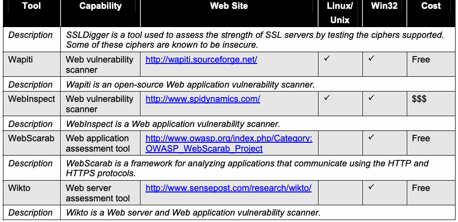
| ツール／機能 | Webサイト／Linux／Win32／費用 |
| Unix | |
| 説明 | SSLDiggerは、サポートする暗号方式を試験してSSLサーバーの強度を評価するツールである。これらの暗号方式の一部は安全でないことが知られている。 |
| Wapiti／Web脆弱性 | http://wapiti.sourceforge.net/ / (cid:57) / (cid:57) / Free |
| スキャナー | |
| 説明 | WapitiはオープンソースのWebアプリケーション脆弱性スキャナーである。 |
| WebInspect／Web脆弱性 | http://www.spidynamics.com/ / (cid:57) / (cid:57) / $$$ |
| スキャナー | |
| 説明 | WebInspectはWebアプリケーションの脆弱性スキャナーである。 |
| WebScarab／Webアプリケーション | http://www.owasp.org/index.php/Category: / (cid:57) / Free |
| 評価ツール | OWASP_WebScarab_Project |
| 説明 | WebScarabはHTTPおよびHTTPSプロトコルで通信するアプリケーションを分析するためのフレームワークである。 |
| Wikto／Webサーバー | http://www.sensepost.com/research/wikto/ / (cid:57) / Free |
| 評価ツール | |
| 説明 | WiktoはWebサーバーおよびWebアプリケーションの脆弱性スキャナーである。 |
$$$=This product involves a fee.
$$$ = この製品は有料。
未レビュー訳Appendix D—References
付録 D—参考文献
未レビュー訳[Alle00] Julia Allen et al., Securing Network Servers, April 2000, http://www.sei.cmu.edu/pub/documents/sims/pdf/sim010.pdf
[Alle00] Julia Allen ほか、Securing Network Servers、2000年4月、http://www.sei.cmu.edu/pub/documents/sims/pdf/sim010.pdf
[APWG07] Anti-Phishing Working Group, Vendor Solutions, February 2007, http://www.antiphishing.org/solutions.html
[APWG07] Anti-Phishing Working Group, Vendor Solutions, 2007年2月, http://www.antiphishing.org/solutions.html
[Bell06] Steve Bellovin, “Unconventional Wisdom,” IEEE Security & Privacy, Vol. 4, Issue 1, Jan–Feb 2006, page 88
[Bell06] Steve Bellovin、“Unconventional Wisdom”、IEEE Security & Privacy、第4巻第1号、2006年1〜2月、88ページ
[Chow02] Pete Chown, Advanced Encryption Standard (AES) Ciphersuites for Transport Layer Security (TLS), RFC 3268, January 2002, http://www.ietf.org/rfc/rfc3268.txt
[Chow02] Pete Chown, Advanced Encryption Standard (AES) Ciphersuites for Transport Layer Security (TLS), RFC 3268, 2002年1月, http://www.ietf.org/rfc/rfc3268.txt
[Coop01] Russ Cooper, 10 Steps to Better IIS Security, Information Security Magazine, August 2001, http://www.infosecuritymag.com/articles/september01/features_IIS_security.shtml
[Coop01] Russ Cooper、10 Steps to Better IIS Security、Information Security Magazine、2001年8月、http://www.infosecuritymag.com/articles/september01/features_IIS_security.shtml
[Curt01] Matt Curtin, Developing Trust: Online Privacy and Security, November 2001
[Curt01] Matt Curtin, Developing Trust: Online Privacy and Security, 2001年11月
[FTC02] Federal Trade Commission, Email Address Harvesting: How Spammers Reap What You Sow, November 2002, http://www.onguardonline.gov/spam.html
[FTC02] Federal Trade Commission, Email Address Harvesting: How Spammers Reap What You Sow, 2002年11月, http://www.onguardonline.gov/spam.html
[FTC06] Federal Trade Commission, Pretexting: Your Personal Information Revealed, February 2006, http://www.ftc.gov/bcp/conline/pubs/credit/pretext.htm
[FTC06] Federal Trade Commission, Pretexting: Your Personal Information Revealed, 2006年2月, http://www.ftc.gov/bcp/conline/pubs/credit/pretext.htm
[FTC06a] Federal Trade Commission, How Not to Get Hooked by a ‘Phishing’ Scam, October 2006, http://www.ftc.gov/bcp/edu/pubs/consumer/alerts/alt127.htm
[FTC06a] Federal Trade Commission, How Not to Get Hooked by a ‘Phishing’ Scam, 2006年10月, http://www.ftc.gov/bcp/edu/pubs/consumer/alerts/alt127.htm
[Google05] Google, Preventing Comment Spam, January 2005, http://googleblog.blogspot.com/2005/01/preventing-comment-spam.html
[Google05] Google、Preventing Comment Spam、2005年1月、http://googleblog.blogspot.com/2005/01/preventing-comment-spam.html
[Johanson05] Eric Johanson, The state of homograph attacks, February 2005, http://www.shmoo.com/idn/homograph.txt
[Johanson05] Eric Johanson, The state of homograph attacks, 2005年2月, http://www.shmoo.com/idn/homograph.txt
[Koss00] Klaus-Peter Kossakowski and Julia Allen, Securing Public Web Servers, 2000, http://www.sei.cmu.edu/pub/documents/sims/pdf/sim011.pdf
[Koss00] Klaus-Peter Kossakowski and Julia Allen, Securing Public Web Servers, 2000年, http://www.sei.cmu.edu/pub/documents/sims/pdf/sim011.pdf
[MASS99] Commonwealth of Massachusetts, Executive Order 412, 1999, http://www.state.ma.us/consumer/New/privexeco.htm
[MASS99] Commonwealth of Massachusetts, Executive Order 412, 1999年, http://www.state.ma.us/consumer/New/privexeco.htm
[Netcraft06] Netcraft, PayPal Security Flaw Allows Identity Theft, June 2006, http://news.netcraft.com/archives/2006/06/16/paypal_security_flaw_allows_identity_theft.html
[Netcraft06] Netcraft、PayPal Security Flaw Allows Identity Theft、2006年6月、http://news.netcraft.com/archives/2006/06/16/paypal_security_flaw_allows_identity_theft.html
[NISS99] National Information System Security Glossary, NSTISSI No. 4009, January 1999
[NISS99] National Information System Security Glossary、NSTISSI第4009号、1999年1月
[NIST01] Wayne A. Jansen, NIST Special Publication 800-28, Guidelines on Active Content and Mobile Code, October 2001, http://csrc.nist.gov/publications/nistpubs/index.html
[NIST01] Wayne A. Jansen, NIST Special Publication 800-28, Guidelines on Active Content and Mobile Code, 2001年10月, http://csrc.nist.gov/publications/nistpubs/index.html
[NIST02a] John Wack et al., NIST Special Publication 800-41, Guidelines on Firewalls and Firewall Policy, January 2002, http://csrc.nist.gov/publications/nistpubs/index.html
[NIST02a] John Wack ほか、NIST Special Publication 800-41、Guidelines on Firewalls and Firewall Policy、2002年1月、http://csrc.nist.gov/publications/nistpubs/index.html
[NIST02b] John Wack et al., NIST Special Publication 800-42, Guideline on Network Security Testing, February 2002, http://csrc.nist.gov/publications/nistpubs/index.html
[NIST02b] John Wackほか、NIST SP 800-42「ネットワークセキュリティ試験ガイドライン」、2002年2月、http://csrc.nist.gov/publications/nistpubs/index.html
未レビュー訳[NIST06a] Marianne Swanson et al., NIST Special Publication 800-18 Revision 1, Guide for Developing Security Plans for Federal Information Systems, February 2006, http://csrc.nist.gov/publications/nistpubs/index.html
[NIST06a] Marianne Swanson et al., NIST Special Publication 800-18 Revision 1, Guide for Developing Security Plans for Federal Information Systems, 2006年2月, http://csrc.nist.gov/publications/nistpubs/index.html
[NIST06b] Karen Kent and Murugiah Souppaya, NIST Special Publication 800-92, Guide to Computer Security Log Management, April 2006, http://csrc.nist.gov/publications/nistpubs/index.html
[NIST06b] Karen Kent、Murugiah Souppaya、NIST Special Publication 800-92、Guide to Computer Security Log Management、2006年4月、http://csrc.nist.gov/publications/nistpubs/index.html
[NIST06c] Miles Tracy et al., NIST Special Publication 800-45, Version 2, Guidelines on Electronic Mail Security, February 2007, http://csrc.nist.gov/publications/nistpubs/index.html
[NIST06c] Miles Tracy et al., NIST Special Publication 800-45, Version 2, Guidelines on Electronic Mail Security, 2007年2月, http://csrc.nist.gov/publications/nistpubs/index.html
[NIST07] Karen Scarfone and Peter Mell, NIST Special Publication 800-94, Guide to Intrusion Detection and Prevention Systems (IDPS), February 2007, http://csrc.nist.gov/publications/nistpubs/index.html
[NIST07] Karen Scarfone、Peter Mell、NIST Special Publication 800-94、Guide to Intrusion Detection and Prevention Systems (IDPS)、2007年2月、http://csrc.nist.gov/publications/nistpubs/index.html
[NVD06] National Vulnerability Database, CVE-2005-0233, September 2006, http://nvd.nist.gov/nvd.cfm?cvename=CVE-2005-0233
[NVD06] National Vulnerability Database、CVE-2005-0233、2006年9月、http://nvd.nist.gov/nvd.cfm?cvename=CVE-2005-0233
未レビュー訳[Ollm04] Gunter Ollman, The Phishing Guide: Understanding and Preventing Phishing Attacks, NGSSoftware, September 2004, http://www.nextgenss.com/papers/NISR-WP-Phishing.pdf
[Ollm04] Gunter Ollman、The Phishing Guide: Understanding and Preventing Phishing Attacks、NGSSoftware、2004年9月、http://www.nextgenss.com/papers/NISR-WP-Phishing.pdf
[Ollm05] Gunter Ollman, The Pharming Guide: Understanding and Preventing DNS-Related Attacks by Phishers, NGSSoftware, August 2005, http://www.nextgenss.com/papers/ThePharmingGuide.pdf
[Ollm05] Gunter Ollman、The Pharming Guide: Understanding and Preventing DNS-Related Attacks by Phishers、NGSSoftware、2005年8月、http://www.nextgenss.com/papers/ThePharmingGuide.pdf
[OMB00a] Office of Management and Budget Memorandum 2000-13, 2000, http://www.whitehouse.gov/omb/memoranda/m00-13.html
[OMB00a] Office of Management and Budget Memorandum 2000-13, 2000年, http://www.whitehouse.gov/omb/memoranda/m00-13.html
[OMB00b] Office of Management and Budget Cookie Clarification Letter 1, 2000, http://www.whitehouse.gov/omb/inforeg/cookies_letter72800.html
[OMB00b] Office of Management and Budget Cookie Clarification Letter 1, 2000年, http://www.whitehouse.gov/omb/inforeg/cookies_letter72800.html
[OMB00c] Office of Management and Budget Cookie Clarification Letter 2, 2000, http://www.whitehouse.gov/omb/inforeg/cookies_letter90500.html
[OMB00c] Office of Management and Budget Cookie Clarification Letter 2, 2000年, http://www.whitehouse.gov/omb/inforeg/cookies_letter90500.html
[OWASP06] Open Web Application Security Project (OWASP), OWASP Guide, March 2006, http://owasp.cvs.sourceforge.net/*checkout*/owasp/guide/current%20draft.pdf
[OWASP06] Open Web Application Security Project（OWASP）、OWASP Guide、2006年3月、http://owasp.cvs.sourceforge.net/*checkout*/owasp/guide/current%20draft.pdf
[RSA00] PKCS #10 Version 1.7, Certification Request Syntax Standard, May 26, 2000, ftp://ftp.rsasecurity.com/pub/pkcs/pkcs-10/pkcs-10v1_7.pdf
[RSA00] PKCS #10 Version 1.7, Certification Request Syntax Standard, 2000年5月26日, ftp://ftp.rsasecurity.com/pub/pkcs/pkcs-10/pkcs-10v1_7.pdf
[Salt75] Jerome H. Saltzer and Michael Schroeder, “The Protection of Information in Computer Systems,” Proceedings of the IEEE, Vol. 63, pages 1278–1308
[Salt75] Jerome H. Saltzer and Michael Schroeder, “The Protection of Information in Computer Systems,” Proceedings of the IEEE, 第63巻, 1278–1308ページ
[Scam01] Joel Scambray et al., Hacking Exposed Second Edition, McGraw-Hill, 2001
[Scam01] Joel Scambrayほか、『Hacking Exposed』第2版、McGraw-Hill、2001年
[Schn00] Bruce Schneier, Secrets & Lies: Digital Security in a Networked World, John Wiley & Sons Inc., 2000
[Schn00] Bruce Schneier、Secrets & Lies: Digital Security in a Networked World、John Wiley & Sons Inc.、2000年
[SPID06] SPI Dynamics, AJAX Security Dangers, 2006, http://www.spidynamics.com/assets/documents/AJAXdangers.pdf
[SPID06] SPI Dynamics、AJAX Security Dangers、2006年、http://www.spidynamics.com/assets/documents/AJAXdangers.pdf
[SSL98] Introduction to SSL, Netscape Communication, Netscape Corporation, 1998, http://docs.sun.com/source/816-6156-10/contents.htm
[SSL98] Introduction to SSL, Netscape Communication, Netscape Corporation, 1998年, http://docs.sun.com/source/816-6156-10/contents.htm
[Unsp06] Unspam Technologies, How to Avoid Being Harvested by Spambots, http://www.projecthoneypot.org/how_to_avoid_spambots.php
[Unsp06] Unspam Technologies, How to Avoid Being Harvested by Spambots, http://www.projecthoneypot.org/how_to_avoid_spambots.php
[Whit06] James A. Whittaker, “How to Think About Security,” IEEE Security & Privacy, Vol. 4, Issue 2, Mar–Apr 2006, pages 68–71
[Whit06] James A. Whittaker、“How to Think About Security”、IEEE Security & Privacy、第4巻第2号、2006年3〜4月、68〜71ページ
[WWW01] The World Wide Web Security FAQ, September 2001, http://www.w3.org/Security/Faq/
[WWW01] The World Wide Web Security FAQ, 2001年9月, http://www.w3.org/Security/Faq/
[Ziri02] Neal Ziring, Web Server Execution: System and Security Issues, presented to Information Assurance Technical Framework Forum, March 1, 2002
[Ziri02] Neal Ziring、Web Server Execution: System and Security Issues、Information Assurance Technical Framework Forum での発表、2002年3月1日
Appendix E—Web Server Security Checklist
付録 E—Webサーバーセキュリティチェックリスト
未レビュー訳This section provides a combined version of the individual security checklists provided at the end of many sections in this document.
このセクションでは、本書の各セクション末尾に掲載された個別のセキュリティチェックリストを統合したものを示す。
Planning and Managing Web Servers
Webサーバーの計画および管理
未レビュー訳| Completed | Action |
| Plan the configuration and deployment of the Web server | |
| Identify functions of the Web server | |
| Identify categories of information that will be stored, processed, and transmitted | |
| through the Web server | |
| Identify security requirements of information | |
| Identify how information is published to the Web server | |
| Identify the security requirements of other hosts involved (e.g., backend database or | |
| Web service) | |
| Identify a dedicated host to run the Web server | |
| Identify network services that will be provided or supported by the Web server | |
| Identify the security requirements of any additional services provided or supported by | |
| the Web server | |
| Identify how the Web server will be managed | |
| Identify users and categories of users of the Web server and determine privilege for | |
| each category of user | |
| Identify user authentication methods for the Web server and how authentication data | |
| will be protected | |
| Identify how access to information resources will be enforced | |
| Identify appropriate physical security mechanisms | |
| Identify appropriate availability mechanisms | |
| Choose appropriate OS for Web server | |
| Minimal exposure to vulnerabilities | |
| Ability to restrict administrative or root level activities to authorized users only | |
| Ability to control access to data on the server | |
| Ability to disable unnecessary network services that may be built into the OS or server | |
| software | |
| Ability to control access to various forms of executable programs, such as CGI scripts | |
| and server plug-ins | |
| Ability to log appropriate server activities to detect intrusions and attempted intrusions | |
| Provision of a host-based firewall capability | |
| Availability of experienced staff to install, configure, secure, and maintain OS | |
| Choose appropriate platform for Web server | |
| General purpose OS | |
| Trusted OS | |
| Web server appliance | |
| Pre-hardened OS and Web server | |
| Virtualized platform |
原本PDFの抜粋画像
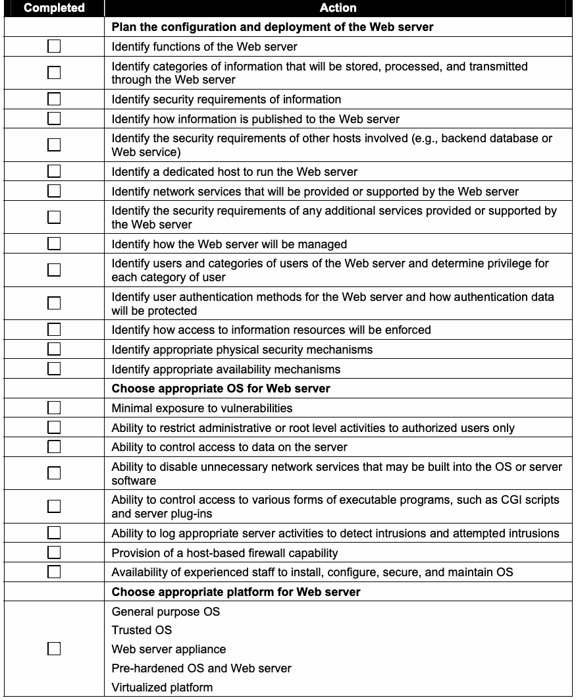
| 完了 | 対応内容 |
| Webサーバーの構成および導入を計画する | |
| Webサーバーの機能を特定する | |
| 保存、処理、および送信する情報のカテゴリを特定する | |
| Webサーバーを通じて | |
| 情報のセキュリティ要件を特定する | |
| Webサーバーに情報を公開する方法を特定する | |
| 関係する他のホスト（バックエンドデータベースや | |
| Webサービスなど）のセキュリティ要件を特定する | |
| Webサーバーを稼働させる専用ホストを特定する | |
| Webサーバーが提供またはサポートするネットワークサービスを特定する | |
| Webサーバーが追加で提供またはサポートするサービスのセキュリティ要件を特定する | |
| Webサーバー | |
| Webサーバーの管理方法を特定する | |
| Webサーバーのユーザーとユーザーカテゴリを特定し、各カテゴリの権限を決める | |
| Webサーバーのユーザー認証方法、および認証データの保護方法を特定する | |
| 情報リソースへのアクセスをどのように強制するかを特定する | |
| 適切な物理的セキュリティ機構を特定する | |
| 適切な可用性確保の仕組みを特定する | |
| Webサーバーに適したOSを選択する | |
| 脆弱性への露出を最小限にする | |
| 管理者権限またはrootレベルの操作を許可ユーザーのみに制限できること | |
| サーバー上のデータへのアクセスを制御できること | |
| OSまたはサーバーソフトウェアに組み込まれている不要なネットワークサービスを無効化できること | |
| CGIスクリプトなど、さまざまな種類の実行可能プログラムへのアクセスを制御できること | |
| およびサーバープラグイン | |
| 侵入および侵入の試みを検出するため、適切なサーバー活動をログに記録できること | |
| ホストベースのファイアウォール機能を提供すること | |
| OSのインストール、構成、保護、および保守を行う経験豊富なスタッフを確保できること | |
| Webサーバーに適したプラットフォームを選択する | |
| 汎用OS | |
| 信頼できるOS | |
| Webサーバーアプライアンス | |
| 事前に堅牢化されたOSおよびWebサーバー | |
| 仮想化プラットフォーム |
E-1
E-1
未レビュー訳Securing the Web Server Operating System
Webサーバーのオペレーティングシステムの保護
未レビュー訳| Completed | Action |
| Patch and upgrade OS | |
| Create, document, and implement a patching process | |
| Keep the servers disconnected from networks or on an isolated network that severely | |
| restricts communications until all patches have been installed | |
| Identify and install all necessary patches and upgrades to the OS | |
| Identify and install all necessary patches and upgrades to applications and services | |
| included with the OS | |
| Identify and mitigate any unpatched vulnerabilities | |
| Remove or disable unnecessary services and applications | |
| Disable or remove unnecessary services and applications | |
| Configure OS user authentication | |
| Remove or disable unneeded default accounts and groups | |
| Disable non-interactive accounts | |
| Create the user groups for the particular computer | |
| Create the user accounts for the particular computer | |
| Check the organization’s password policy and set account passwords appropriately | |
| (e.g., length, complexity) | |
| Prevent password guessing (e.g., increase the period between attempts, deny login | |
| after a defined number of failed attempts) | |
| Install and configure other security mechanisms to strengthen authentication | |
| Configure resource controls appropriately | |
| Deny read access to unnecessary files and directories | |
| Deny write access to unnecessary files and directories | |
| Limit the execution privilege of system tools to system administrators | |
| Install and configure additional security controls | |
| Select, install, and configure additional software to provide needed controls not | |
| included in the OS, such as antivirus software, antispyware software, rootkit detectors, | |
| host-based intrusion detection and prevention software, host-based firewalls, and | |
| patch management software | |
| Test the security of the OS | |
| Identify a separate identical system | |
| Test OS after initial install to determine vulnerabilities | |
| Test OS periodically (e.g., quarterly) to determine new vulnerabilities |
原本PDFの抜粋画像
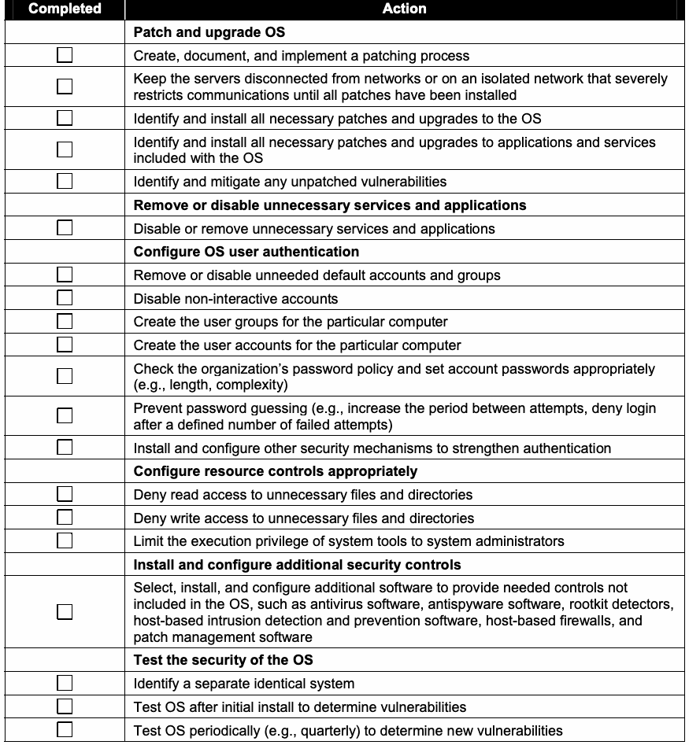
| 完了 | 対応内容 |
| OSにパッチを適用し、アップグレードする | |
| パッチ適用プロセスを作成し、文書化して実施する | |
| すべてのパッチをインストールするまで、サーバーをネットワークから切断するか、通信を厳しく | |
| 制限した隔離ネットワークに置く | |
| OSに必要なすべてのパッチおよびアップグレードを特定してインストールする | |
| OSに含まれるアプリケーションおよびサービスに必要なすべてのパッチとアップグレードを特定してインストールする | |
| パッチ未適用の脆弱性を特定し、緩和する | |
| 不要なサービスおよびアプリケーションを削除または無効化する | |
| 不要なサービスおよびアプリケーションを無効化または削除する | |
| OSのユーザー認証を構成する | |
| 不要なデフォルトアカウントおよびグループを削除または無効化する | |
| 非対話型アカウントを無効化する | |
| 対象コンピューターのユーザーグループを作成する | |
| 対象コンピューターのユーザーアカウントを作成する | |
| 組織のパスワード方針を確認し、それに従ってアカウントのパスワードを設定する | |
| （例: 長さ、複雑さ） | |
| パスワードの推測を防ぐ（例: 試行間隔を延ばす、一定回数失敗した後のログインを拒否する） | |
| 認証を強化するその他のセキュリティ機構をインストールして構成する | |
| リソース制御を適切に構成する | |
| 不要なファイルおよびディレクトリへの読み取りアクセスを拒否する | |
| 不要なファイルおよびディレクトリへの書き込みアクセスを拒否する | |
| システムツールの実行権限をシステム管理者に限定する | |
| 追加のセキュリティ管理策をインストールして構成する | |
| OSに含まれていない必要な管理策（ | |
| ウイルス対策ソフトウェア、スパイウェア対策ソフトウェア、ルートキット検出ツール、 | |
| ホストベースの侵入検知・防止ソフトウェア、ホストベースのファイアウォール、および | |
| パッチ管理ソフトウェアなど）を提供する追加ソフトウェアを選択、インストール、および構成する | |
| OSのセキュリティを試験する | |
| 別の同一システムを用意する | |
| 初期インストール後にOSを試験し、脆弱性を特定する | |
| 新たな脆弱性を特定するため、OSを定期的に（例: 四半期ごとに）試験する |
Securing the Web Server
Webサーバーの保護
未レビュー訳| Completed | Action |
| Securely install the Web server | |
| Install the Web server software on a dedicated host or a dedicated virtualized guest | |
| OS | |
| Apply any patches or upgrades to correct for known vulnerabilities | |
| Create a dedicated physical disk or logical partition (separate from OS and Web | |
| server application) for Web content |
原本PDFの抜粋画像
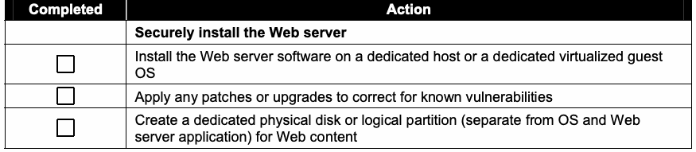
| 完了 | 対応内容 |
| Webサーバーを安全にインストールする | |
| Webサーバーソフトウェアを専用ホストまたは専用の仮想ゲストOSにインストールする | |
| OS | |
| 既知の脆弱性を修正するため、パッチまたはアップグレードを適用する | |
| Webコンテンツ用に、OSおよびWebサーバーアプリケーションとは別の専用物理ディスクまたは論理パーティションを作成する（ | |
E-2
E-2
未レビュー訳| Completed | Action |
| Remove or disable all services installed by the Web server application but not required | |
| (e.g., gopher, FTP, remote administration) | |
| Remove or disable all unneeded default login accounts created by the Web server | |
| installation | |
| Remove all manufacturer documentation from server | |
| Remove any example or test files from server, including scripts and executable code | |
| Apply appropriate security template or hardening script to the server | |
| Reconfigure HTTP service banner (and others as required) NOT to report Web server | |
| and OS type and version | |
| Configure OS and Web server access controls | |
| Configure the Web server process to run as a user with a strictly limited set of | |
| privileges | |
| Configure the Web server so that Web content files can be read but not written by | |
| service processes | |
| Configure the Web server so that service processes cannot write to the directories | |
| where public Web content is stored | |
| Configure the Web server so that only processes authorized for Web server | |
| administration can write Web content files | |
| Configure the host OS so that the Web server can write log files but not read them | |
| Configure the host OS so that temporary files created by the Web server application | |
| are restricted to a specified and appropriately protected subdirectory | |
| Configure the host OS so that access to any temporary files created by the Web | |
| server application is limited to the service processes that created the files | |
| Install Web content on a different hard drive or logical partition than the OS and Web | |
| server application | |
| If uploads are allowed to the Web server, configure it so that a limit is placed on the | |
| amount of hard drive space that is dedicated for this purpose; uploads should be | |
| placed on a separate partition | |
| Ensure that log files are stored in a location that is sized appropriately; log files should | |
| be placed on a separate partition | |
| Configure the maximum number of Web server processes and/or network connections | |
| that the Web server should allow | |
| Ensure that any virtualized guest OSs follow this checklist | |
| Ensure users and administrators are able to change passwords | |
| Disable users after a specified period of inactivity | |
| Ensure each user and administrator has a unique ID | |
| Configure a secure Web content directory | |
| Dedicate a single hard drive or logical partition for Web content and establish related | |
| subdirectories exclusively for Web server content files, including graphics but | |
| excluding scripts and other programs | |
| Define a single directory exclusively for all external scripts or programs executed as | |
| part of Web server content (e.g., CGI, ASP) | |
| Disable the execution of scripts that are not exclusively under the control of | |
| administrative accounts. This action is accomplished by creating and controlling | |
| access to a separate directory intended to contain authorized scripts | |
| Disable the use of hard or symbolic links (e.g., shortcuts for Windows) |
原本PDFの抜粋画像
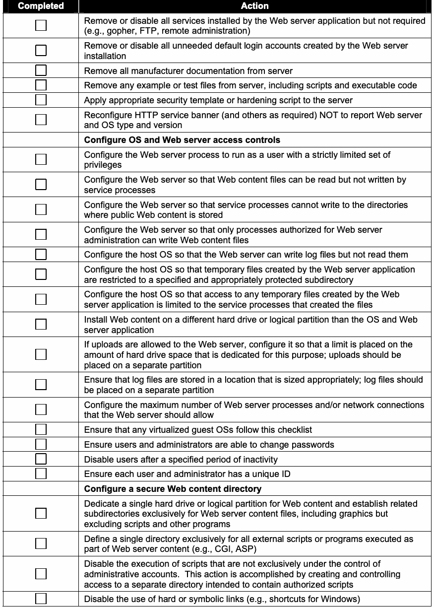
| 完了 | 対応内容 |
| Webサーバーアプリケーションによってインストールされた、不要なサービスをすべて削除または無効化する | |
| （例: gopher、FTP、リモート管理） | |
| Webサーバーのインストール時に作成された不要なデフォルトログインアカウントを削除または無効化する | |
| メーカーの文書をすべてサーバーから削除する | |
| スクリプトや実行可能コードを含め、サンプルファイルまたはテストファイルをサーバーからすべて削除する | |
| 適切なセキュリティテンプレートまたは堅牢化スクリプトをサーバーに適用する | |
| WebサーバーおよびOSの種類とバージョンを表示しないようにHTTPサービスバナー（必要に応じてその他も）を再構成する | |
| OSおよびWebサーバーのアクセス制御を構成する | |
| Webサーバープロセスを、厳しく制限された | |
| 権限を持つユーザーとして実行する | |
| サービスプロセスがWebコンテンツファイルを読み取り専用で扱えるようにWebサーバーを構成する | |
| サービスプロセスが公開Webコンテンツの保存ディレクトリに書き込めないよう、Webサーバーを構成する | |
| Webサーバー管理を許可されたプロセスだけがWebコンテンツファイルへ書き込めるように構成する | |
| Webサーバーがログファイルに書き込めても読み取れないように、ホストOSを構成する | |
| Webサーバーアプリケーションが作成する一時ファイルを、指定した適切に保護されたサブディレクトリに限定するようホストOSを構成する | |
| Webサーバーアプリケーションが作成する一時ファイルには、そのファイルを作成したサービスプロセスだけがアクセスできるようにホストOSを構成する | |
| OSおよびWebサーバーアプリケーションとは別のハードドライブまたは論理パーティションにWebコンテンツをインストールする | |
| Webサーバーへのアップロードを許可する場合は、その目的に割り当てるハードドライブ容量に上限を設け、 | |
| この目的に割り当てるハードドライブ容量に上限を設け、アップロードを | |
| 別のパーティションに保存する | |
| ログファイルを適切な容量の保存場所に置き、 | |
| 別のパーティションに保存する | |
| Webサーバーが許可するプロセス数および／またはネットワーク接続数の上限を構成する | |
| 仮想化されたゲストOSにもこのチェックリストを適用する | |
| ユーザーおよび管理者がパスワードを変更できるようにする | |
| 所定の期間使用されていないユーザーを無効化する | |
| 各ユーザーおよび管理者に一意のIDを付与する | |
| Webコンテンツ用の安全なディレクトリを構成する | |
| Webコンテンツ専用のハードドライブまたは論理パーティションを1つ確保し、Webコンテンツファイルだけを置く関連サブディレクトリを設定する | |
| （画像を含むが、スクリプトや | |
| その他のプログラムは除く） | |
| Webコンテンツの一部として実行される外部スクリプトまたはプログラムをすべて置く専用ディレクトリを1つ定める | |
| （例: CGI、ASP） | |
| 管理者アカウントの管理下にないスクリプトの実行を無効化する | |
| 許可されたスクリプト専用の別ディレクトリを作成し、そのアクセスを制御することで実現できる | |
| ハードリンクまたはシンボリックリンク（Windowsのショートカットなど）の使用を無効化する |
E-3
E-3
未レビュー訳| Completed | Action |
| Define a complete Web content access matrix. Identify which folders and files within | |
| the Web server document should be restricted and which should be accessible (and | |
| by whom) | |
| Check the organization’s password policy and set account passwords appropriately | |
| (e.g., length, complexity) | |
| Use the robots.txt file, if appropriate | |
| Configure anti-spambot protection, if appropriate (e.g., CAPTCHAs, nofollow, or | |
| keyword filtering) |
原本PDFの抜粋画像
| 完了 | 対応内容 |
| Webコンテンツの完全なアクセス権マトリクスを定義する。Webサーバー文書内で制限するフォルダーとファイル、およびアクセスを許可するものを特定し、 | |
| 誰がアクセスできるかを定める | |
| 組織のパスワード方針を確認し、それに従ってアカウントのパスワードを設定する | |
| （例: 長さ、複雑さ） | |
| 必要に応じてrobots.txtファイルを使用する | |
| 必要に応じてスパムボット対策（CAPTCHA、nofollow、キーワードフィルタリングなど）を構成する | |
Securing Web Content
Webコンテンツの保護
未レビュー訳| Completed | Action |
| Ensure that none of the following types of information are available on or | |
| through a public Web server | |
| Classified records | |
| Internal personnel rules and procedures | |
| Sensitive or proprietary information | |
| Personal information about an organization’s personnel | |
| Telephone numbers, e-mail addresses, or general listings of staff unless necessary to | |
| fulfill organizational requirements | |
| Schedules of organizational principals or their exact location (whether on or off the | |
| premises) | |
| Information on the composition, preparation, or optimal use of hazardous materials or | |
| toxins | |
| Sensitive information relating to homeland security | |
| Investigative records | |
| Financial records (beyond those already publicly available) | |
| Medical records | |
| Organization’s physical and information security procedures | |
| Information about organization’s network and information system infrastructure | |
| Information that specifies or implies physical security vulnerabilities | |
| Plans, maps, diagrams, aerial photographs, and architectural plans of organizational | |
| building, properties, or installations | |
| Copyrighted material without the written permission of the owner | |
| Privacy or security policies that indicate the types of security measures in place to the | |
| degree that they may be useful to an attacker | |
| Establish an organizational-wide documented formal policy and process for | |
| approving public Web content that— | |
| Identifies information that should be published on the Web | |
| Identifies target audience | |
| Identifies possible negative ramifications of publishing the information | |
| Identifies who should be responsible for creating, publishing, and maintaining this | |
| particular information | |
| Provides guidelines on styles and formats appropriate for Web publishing | |
| Provides for appropriate review of the information for sensitivity and | |
| distribution/release controls (including the sensitivity of the information in aggregate) |
原本PDFの抜粋画像
| 完了 | 対応内容 |
| 次の種類の情報を公開Webサーバー上またはWebサーバー経由で入手できないようにする | |
| 機密指定された記録 | |
| 内部の人事規則および手順 | |
| 機微情報または専有情報 | |
| 組織職員の個人情報 | |
| 組織の要件を満たすために必要な場合を除き、電話番号、メールアドレス、または職員一覧を公開しない | |
| 組織の幹部の予定や正確な所在（施設内外を問わない）を公開しない | |
| 危険物質または毒物の組成、調製、最適な使用方法に関する情報を公開しない | |
| 国土安全保障に関する機微情報 | |
| 捜査記録 | |
| すでに公開されているものを除く財務記録 | |
| 医療記録 | |
| 組織の物理的セキュリティおよび情報セキュリティの手順 | |
| 組織のネットワークおよび情報システム基盤に関する情報 | |
| 物理的セキュリティ上の脆弱性を明記または示唆する情報 | |
| 組織の建物、敷地、施設の計画図、地図、図表、航空写真、および建築図面を公開しない | |
| 権利者の書面による許可を得ていない著作物 | |
| 攻撃者に有用となる程度に、実施中のセキュリティ対策の種類を示すプライバシー方針または | |
| セキュリティ方針を公開しない | |
| 公開Webコンテンツを承認するため、組織全体を対象とした正式な方針と文書化されたプロセスを確立する。これには次を含める。 | |
| Web上で公開すべき情報を特定する | |
| 対象読者を特定する | |
| 情報を公開することで起こり得る悪影響を特定する | |
| 対象情報の作成、公開、および保守の担当者を特定する | |
| Web公開に適した文体および形式のガイドラインを示す | |
| 情報の機微性および配布・公開管理について適切にレビューする手順を設ける | |
| （情報を集約した場合の機微性も含む） |
E-4
E-4
未レビュー訳| Completed | Action |
| Determines the appropriate access and security controls | |
| Provides guidance on the information contained within the source code of the Web | |
| content | |
| Maintain Web user privacy | |
| Maintain a published privacy policy | |
| Prohibit the collection of personally identifying data without the explicit permission of | |
| the user and collect only the data that is absolutely needed | |
| Prohibit the use of “persistent” cookies | |
| Use the session cookie only if it is clearly identified in published privacy policy | |
| Mitigate indirect attacks on content | |
| Ensure users of the site are aware of the dangers of phishing and pharming attacks | |
| and how to avoid them | |
| Validate official communication by personalizing emails and providing unique | |
| identifying (but not confidential) information only the organization and user should | |
| know | |
| Use digital signatures on e-mail if appropriate | |
| Perform content validation within the Web application to prevent more sophisticated | |
| phishing attacks (e.g., cross-site scripting based attacks) | |
| Personalize Web content to aid in users’ identifying fraudulent Web sites | |
| Use token-based or mutual authentication if applicable | |
| Suggest the use of Web browsers or browser toolbars with phishing/ pharming | |
| protection | |
| Use current versions of DNS software with the latest security patches | |
| Install server-side DNS protection mechanisms | |
| Monitor organizational domains and similar domains | |
| Simplify the structure of organization domain names | |
| Use secure connections for logins | |
| If necessary, engage a vendor to provide stronger anti-phishing/ anti-pharming | |
| measures | |
| Client-side active content security considerations | |
| Weigh the risks and benefits of client-side active content | |
| Take no actions without the express permission of user | |
| When possible, only use widely-adopted active content such as JavaScript, PDF, and | |
| Flash | |
| When possible, provide alternatives (e.g., HTML provided along with PDF) | |
| Maintain server-side active content security | |
| Only simple, easy-to-understand code should be used | |
| Limited or no reading or writing to the file system should be permitted | |
| Limited or no interaction with other programs (e.g., sendmail) should be permitted | |
| There should be no requirement to run with suid privileges on Unix or Linux | |
| Explicit path names should be used (i.e., does not rely on path variable) | |
| No directories have both write and execute permissions | |
| All executable files are placed in a dedicated folders | |
| SSIs are disabled or the execute function is disabled | |
| All user input is validated |
原本PDFの抜粋画像
| 完了 | 対応内容 |
| 適切なアクセス制御およびセキュリティ管理策を決定する | |
| Webコンテンツのソースコードに含める情報について指針を示す | |
| Webユーザーのプライバシーを保護する | |
| 公開済みのプライバシー方針を維持する | |
| ユーザーの明示的な許可なしに個人を特定できるデータを収集せず、絶対に必要なデータだけを収集する | |
| 「永続的」Cookieの使用を禁止する | |
| 公開済みのプライバシー方針で明確に説明している場合に限り、セッションCookieを使用する | |
| コンテンツに対する間接攻撃を緩和する | |
| サイト利用者がフィッシングやファーミング攻撃の危険性とその回避方法を把握できるようにする | |
| メールを個別化し、組織と利用者だけが知る一意の識別情報（ただし機密情報ではない）を提供して、公式連絡であることを確認できるようにする | |
| 必要に応じて電子メールにデジタル署名を使用する | |
| より高度なフィッシング攻撃（クロスサイトスクリプティングを利用する攻撃など）を防ぐため、Webアプリケーション内でコンテンツを検証する | |
| 利用者が不正なWebサイトを識別できるよう、Webコンテンツを個別化する | |
| 必要に応じて、トークンベース認証または相互認証を使用する | |
| フィッシング／ファーミング対策機能を備えたWebブラウザーまたはブラウザーツールバーの使用を推奨する | |
| 最新のセキュリティパッチが適用された現行バージョンのDNSソフトウェアを使用する | |
| サーバー側のDNS保護機構をインストールする | |
| 組織のドメインおよび類似ドメインを監視する | |
| 組織のドメイン名の構造を簡潔にする | |
| ログインには安全な接続を使用する | |
| 必要に応じて、より強力なフィッシング／ファーミング対策を提供するベンダーを利用する | |
| クライアント側のアクティブコンテンツに関するセキュリティ上の考慮事項 | |
| クライアント側アクティブコンテンツのリスクと利点を比較検討する | |
| ユーザーの明示的な許可なしに動作しないようにする | |
| 可能な場合はJavaScript、PDF、Flashなど広く採用されたアクティブコンテンツだけを使用する | |
| 可能な場合は代替手段を提供する（例: PDFと併せてHTMLも提供する） | |
| サーバー側のアクティブコンテンツのセキュリティを維持する | |
| 単純で理解しやすいコードだけを使用する | |
| ファイルシステムの読み取りまたは書き込みは制限するか、許可しない | |
| ほかのプログラム（例: sendmail）との連携は制限するか、許可しない | |
| UnixまたはLinuxでsuid権限による実行を必要としないようにする | |
| 明示的なパス名を使用する（PATH変数に依存しない） | |
| 書き込み権限と実行権限の両方を持つディレクトリがないようにする | |
| すべての実行可能ファイルを専用フォルダーに配置する | |
| SSIを無効化するか、実行機能を無効化する | |
| すべてのユーザー入力を検証する |
E-5
E-5
未レビュー訳| Completed | Action |
| Web content generation code should be scanned or audited | |
| Dynamically created pages do not create dangerous metacharacters | |
| Character set encoding should be explicitly set in each page | |
| User data should be scanned to ensure it contains only expected input, (e.g., a-z, A-Z, | |
| 0-9); care should be taken with special characters or HTML tags | |
| Cookies should be examined for any special characters | |
| Encryption mechanism is used to encrypt passwords entered through scripts forms | |
| For Web applications that are restricted by username and password, none of the Web | |
| pages in the application should be accessible without executing the appropriate login | |
| process | |
| All sample scripts are removed | |
| No third-party scripts or executable code are used without verifying the source code |
原本PDFの抜粋画像
| 完了 | 対応内容 |
| Webコンテンツ生成コードをスキャンまたは監査する | |
| 動的に生成されるページが危険なメタ文字を生成しないようにする | |
| 各ページで文字セットのエンコーディングを明示的に設定する | |
| ユーザーデータをスキャンし、想定した入力（例: a-z、A-Z、0-9）だけが含まれることを確認する。特殊文字やHTMLタグには | |
| 注意する | |
| Cookieに特殊文字が含まれていないか確認する | |
| スクリプトフォームから入力されたパスワードを暗号化する仕組みを使用する | |
| ユーザー名とパスワードで制限するWebアプリケーションでは、適切なログイン処理を実行しない限り、アプリケーション内の | |
| いずれのWebページにもアクセスできないようにする | |
| サンプルスクリプトをすべて削除する | |
| ソースコードを検証せずに、第三者のスクリプトまたは実行可能コードを使用しない |
Using Authentication and Encryption Technologies for Web Servers
Webサーバー向けコンテンツ生成コードの保護
未レビュー訳| Completed | Action |
| Configure Web authentication and encryption technologies | |
| For Web resources that require minimal protection and for which there is a small, | |
| clearly defined audience, configure address-based authentication | |
| For Web resources that require additional protection but for which there is a small, | |
| clearly defined audience, configure address-based authentication as a second line of | |
| defense | |
| For Web resources that require minimal protection but for which there is no clearly | |
| defined audience, configure basic or digest authentication (better) | |
| For Web resources that require protection from malicious bots, configure basic or | |
| digest authentication (better) or implement mitigation techniques discussed in Section | |
| 5.2.4 | |
| For organizations required to comply with FIPS 140-2, ensure the SSL/TLS | |
| implementation is FIPS-validated | |
| For Web resources that require maximum protection, configure SSL/TLS | |
| Configure SSL/TLS | |
| Ensure the SSL/TLS implementation is fully patched | |
| Use a third-party issued certificate for server authentication (unless all systems using | |
| the server are organization-managed, in which case a self-signed certificate could | |
| potentially be used instead) | |
| For configurations that require a medium level of client authentication, configure server | |
| to require username and password via SSL/TLS | |
| For configurations that require a high level of client authentication, configure server to | |
| require client certificates via SSL/TLS | |
| Ensure weak cipher suites are disabled (see Table 7.1 for the recommended usage of | |
| Federal cipher suites) | |
| Configure file integrity checker to monitor Web server certificate | |
| If only SSL/TLS is to be used in the Web server, ensure access via any TCP port other | |
| than 443 is disabled | |
| If most traffic to the Web server will be via encrypted SSL/TLS, ensure that | |
| appropriate logging and detection mechanisms are employed in the Web server | |
| (because network monitoring is ineffective against encrypted SSL/TLS sessions) |
原本PDFの抜粋画像
| 完了 | 対応内容 |
| Web認証および暗号化技術を構成する | |
| 最小限の保護が必要で、対象者が少数かつ | |
| 明確に定義されているWebリソースには、アドレスベース認証を構成する | |
| 追加の保護が必要だが対象者が少数かつ | |
| 明確に定義されているWebリソースには、第2の防御線としてアドレスベース認証を構成する | |
| 最小限の保護が必要だが対象者が明確に定義されていないWebリソースには、 | |
| Basic認証またはDigest認証（より望ましい）を構成する | |
| 悪意あるボットからの保護が必要なWebリソースには、Basic認証またはDigest認証（より望ましい）を構成するか、 | |
| 5.2.4節で説明する緩和策を実施する | |
| FIPS 140-2への準拠が求められる組織では、SSL/TLS実装がFIPS検証済みであることを確認する | |
| 最大限の保護が必要なWebリソースには、SSL/TLSを構成する | |
| SSL/TLSを構成する | |
| SSL/TLS実装にすべてのパッチが適用されていることを確認する | |
| サーバー認証には第三者が発行した証明書を使用する（サーバーを利用するすべてのシステムが組織管理下にある場合は、自己署名証明書を使用できる場合がある） | |
| クライアント認証に中程度の強度を求める構成では、SSL/TLS経由でユーザー名とパスワードを要求するようサーバーを構成する | |
| クライアント認証に高い強度を求める構成では、次のようにサーバーを構成する。 | |
| SSL/TLS経由でクライアント証明書を要求する | |
| 弱い暗号スイートが無効化されていることを確認する（連邦暗号スイートの推奨用途については表7.1を参照） | |
| Webサーバー証明書を監視するようファイル完全性チェッカーを構成する | |
| WebサーバーでSSL/TLSだけを使用する場合は、443以外のTCPポート経由のアクセスを無効化する | |
| Webサーバーへのトラフィックの大半がSSL/TLSで暗号化される場合は、適切なログ記録および検知機構をWebサーバーで使用する | |
| （ネットワーク監視は暗号化されたSSL/TLSセッションには有効でないため） |
E-6
E-6
未レビュー訳| Completed | Action |
| Protect against brute force attacks | |
| Use strong authentication if possible | |
| Use a delay after failed login attempts | |
| Lock out an account after a set number of failed login attempts | |
| Enforce a password policy | |
| Blacklist IP addresses or domains known to attempt brute force attacks | |
| Use log monitoring software to detect brute force attacks |
原本PDFの抜粋画像
| 完了 | 対応内容 |
| 総当たり攻撃から保護する | |
| 可能な場合は強固な認証を使用する | |
| ログイン失敗後に遅延を設ける | |
| ログイン失敗が所定の回数に達したらアカウントをロックする | |
| パスワード方針を徹底する | |
| 総当たり攻撃を試みたことが知られているIPアドレスまたはドメインをブラックリストに登録する | |
| 総当たり攻撃を検出するため、ログ監視ソフトウェアを使用する |
Implementing a Secure Network Infrastructure
安全なネットワーク基盤の実装
未レビュー訳| Completed | Action |
| Identify network location | |
| Web server is located in a DMZ, or Web server hosting is outsourced | |
| Assess firewall configuration | |
| Web server is protected by a firewall; if it faces a higher threat or is more vulnerable, it | |
| is protected by an application layer firewall | |
| Firewall controls all traffic between the Internet and the Web server | |
| Firewall blocks all inbound traffic to the Web server except TCP ports 80 (HTTP) | |
| and/or 443 (HTTPS), if required | |
| Firewall blocks (in conjunction with the IDPS) IP addresses or subnets that the IDPS | |
| reports are attacking the organizational network | |
| Firewall notifies the network or Web server administrator of suspicious activity through | |
| an appropriate means | |
| Firewall provides content filtering (application layer firewall) | |
| Firewall is configured to protect against DoS attacks | |
| Firewall detects malformed or known attack URL requests | |
| Firewall logs critical events | |
| Firewall and firewall OS are patched to latest or most secure level | |
| Evaluate intrusion detection and prevention systems | |
| Host-based IDPS is used for Web servers that operate primarily using SSL/TLS | |
| IDPS is configured to monitor network traffic to and from the Web server after firewall | |
| IDPS is configured to monitor changes to critical files on Web server (host-based IDPS | |
| or file integrity checker) | |
| IDPS blocks (in conjunction with the firewall) IP addresses or subnets that are | |
| attacking the organizational network | |
| IDPS notifies the IDPS administrators or Web server administrator of attacks through | |
| appropriate means | |
| IDPS is configured to maximize detection with an acceptable level of false positives | |
| IDPS is configured to log events | |
| IDPS is updated with new attack signatures frequently (e.g., on a daily basis) | |
| Host-based IDPS is configured to monitor the system resources available in the Web | |
| server host | |
| Assess network switches | |
| Switches are used to protect against network eavesdropping |
原本PDFの抜粋画像
| 完了 | 対応内容 |
| ネットワーク上の配置場所を特定する | |
| WebサーバーをDMZに配置するか、Webサーバーホスティングを外部委託する | |
| ファイアウォール構成を評価する | |
| Webサーバーをファイアウォールで保護する。脅威が高い場合または脆弱性が高い場合は、 | |
| アプリケーション層ファイアウォールでも保護する | |
| ファイアウォールですべてのインターネットとWebサーバー間のトラフィックを制御する | |
| 必要な場合を除き、TCPポート80（HTTP） | |
| および／または443（HTTPS）以外のWebサーバーへのすべての受信トラフィックをファイアウォールで遮断する | |
| IDPSと連携し、組織ネットワークへの攻撃元とIDPSが報告したIPアドレスまたはサブネットをファイアウォールで遮断する | |
| 不審な活動を適切な手段でネットワーク管理者またはWebサーバー管理者に通知する | |
| コンテンツフィルタリングを提供する（アプリケーション層ファイアウォール） | |
| DoS攻撃を防ぐようファイアウォールを構成する | |
| 不正な形式または既知の攻撃URLリクエストをファイアウォールで検出する | |
| 重要なイベントをファイアウォールに記録する | |
| ファイアウォールおよびファイアウォールOSに最新または最も安全なパッチを適用する | |
| 侵入検知・防止システムを評価する | |
| 主にSSL/TLSを使用するWebサーバーにはホストベースIDPSを使用する | |
| ファイアウォールの後段で、Webサーバーとの間のネットワークトラフィックを監視するようIDPSを構成する | |
| Webサーバー上の重要なファイルの変更を監視するようIDPSを構成する（ホストベースIDPSまたは | |
| ファイル完全性チェッカーを使用） | |
| ファイアウォールと連携し、組織ネットワークを攻撃しているIPアドレスまたはサブネットをIDPSで遮断する | |
| 攻撃を適切な手段でIDPS管理者またはWebサーバー管理者に通知する | |
| 許容可能な誤検知率を保ちながら検知を最大化するようIDPSを構成する | |
| イベントを記録するようIDPSを構成する | |
| 新しい攻撃シグネチャを頻繁に（例: 毎日）IDPSに更新する | |
| Webサーバーホストで利用可能なシステムリソースを監視するようホストベースIDPSを構成する | |
| ネットワークスイッチを評価する | |
| ネットワーク盗聴を防ぐためスイッチを使用する |
E-7
E-7
未レビュー訳| Completed | Action |
| Switches are configured in high-security mode to defeat ARP spoofing and ARP | |
| poisoning attacks | |
| Switches are configured to send all traffic on network segment to network-based IDPS | |
| Evaluate load balancers | |
| Load balancers are used to increase Web server availability | |
| Load balancers are augmented by Web caches if applicable | |
| Evaluate reverse proxies | |
| Reverse proxies are used as a security gateway to increase Web server availability | |
| Reverse proxies are augmented with encryption acceleration, user authentication, and | |
| content filtering capabilities, if applicable |
原本PDFの抜粋画像
| 完了 | 対応内容 |
| ARPスプーフィングおよびARP | |
| ポイズニング攻撃を防ぐ高セキュリティモードでスイッチを構成する | |
| ネットワークセグメント上のすべてのトラフィックをネットワークベースIDPSに送るようスイッチを構成する | |
| ロードバランサーを評価する | |
| Webサーバーの可用性を高めるため、ロードバランサーを使用する | |
| 必要に応じてWebキャッシュでロードバランサーを補完する | |
| リバースプロキシを評価する | |
| Webサーバーの可用性を高めるセキュリティゲートウェイとしてリバースプロキシを使用する | |
| 必要に応じて、暗号化アクセラレーション、ユーザー認証、およびコンテンツフィルタリング機能でリバースプロキシを補完する | |
Administering the Web Server
Webサーバーの管理
未レビュー訳| Completed | Action |
| Perform logging | |
| Use the combined log format for storing the Transfer Log or manually configure the | |
| information described by the combined log format to be the standard format for the | |
| Transfer Log | |
| Enable the Referrer Log or Agent Log if the combined log format is unavailable | |
| Establish different log file names for different virtual Web sites that may be | |
| implemented as part of a single physical Web server | |
| Use the remote user identity as specified in RFC 1413 | |
| Store logs on a separate (syslog) host | |
| Ensure there is sufficient capacity for the logs | |
| Archive logs according to organizational requirements | |
| Review logs daily | |
| Review logs weekly (for more long-term trends) | |
| Use automated log file analysis tool(s) | |
| Perform Web server backups | |
| Create a Web server backup policy | |
| Back up Web server differentially or incrementally on a daily to weekly basis | |
| Back up Web server fully on a weekly to monthly basis | |
| Periodically archive backups | |
| Maintain an authoritative copy of Web site(s) | |
| Recover from a compromise | |
| Report the incident to the organization’s computer incident response capability | |
| Isolate the compromised system(s) or take other steps to contain the attack so | |
| additional information can be collected | |
| Investigate similar hosts to determine if the attacker has also compromised other | |
| systems | |
| Consult, as appropriate, with management, legal counsel, and law enforcement officials expeditiously | |
| Analyze the intrusion | |
| Restore the system |
原本PDFの抜粋画像
| 完了 | 対応内容 |
| ログを記録する | |
| Transfer Logの保存には統合ログ形式を使用するか、手動で | |
| 統合ログ形式で説明される情報を標準形式として | |
| Transfer Logに適用する | |
| 統合ログ形式を利用できない場合は、リファラーログまたはエージェントログを有効にする | |
| 単一の物理Webサーバー上に実装する複数の仮想Webサイトごとに | |
| 異なるログファイル名を設定する | |
| RFC 1413で規定されるリモートユーザーIDを使用する | |
| ログを別の（syslog）ホストに保存する | |
| ログ用の十分な容量を確保する | |
| 組織の要件に従ってログをアーカイブする | |
| ログを毎日レビューする | |
| 長期的な傾向を把握するため、ログを毎週レビューする | |
| 自動ログファイル分析ツールを使用する | |
| Webサーバーをバックアップする | |
| Webサーバーのバックアップ方針を作成する | |
| Webサーバーを日次から週次で差分または増分バックアップする | |
| Webサーバーを週次から月次でフルバックアップする | |
| バックアップを定期的にアーカイブする | |
| Webサイトの正式コピーを維持する | |
| 侵害から復旧する | |
| インシデントを組織のコンピューターインシデント対応機能に報告する | |
| 侵害されたシステムを隔離するか、攻撃を封じ込めるその他の措置を講じて | |
| 追加情報を収集できるようにする | |
| 類似ホストを調査し、攻撃者がほかのシステムも侵害しているか確認する | |
| 必要に応じて、管理者、法律顧問、および法執行機関に速やかに相談する | |
| 侵入を分析する | |
| システムを復元する |
原本PDFの抜粋画像
E-8
E-8
未レビュー訳| Completed | Action |
| Test system to ensure security | |
| Reconnect system to network | |
| Monitor system and network for signs that the attacker is attempting to access the | |
| system or network again | |
| Document lessons learned | |
| Test security | |
| Periodically conduct vulnerability scans on Web server, dynamically generated | |
| content, and supporting network | |
| Update vulnerability scanner prior to testing | |
| Correct any deficiencies identified by the vulnerability scanner | |
| Conduct penetration testing on the Web server and the supporting network | |
| infrastructure | |
| Correct deficiencies identified by penetration testing | |
| Conduct remote administration and content updates | |
| Use a strong authentication mechanism (e.g., public/private key pair, two-factor | |
| authentication) | |
| Restrict hosts that can be used to remotely administer or update content on the Web | |
| server by IP address and to the internal network | |
| Use secure protocols (e.g., SSH, HTTPS) | |
| Enforce the concept of least privilege on remote administration and content updating | |
| (e.g., attempt to minimize the access rights for the remote administration/update | |
| accounts) | |
| Change any default accounts or passwords from the remote administration utility or | |
| application | |
| Do not allow remote administration from the Internet unless mechanisms such as | |
| VPNs are used | |
| Do not mount any file shares on the internal network from the Web server or vice | |
| versa |
原本PDFの抜粋画像
| 完了 | 対応内容 |
| セキュリティを確保できているかシステムを試験する | |
| システムをネットワークに再接続する | |
| 攻撃者がシステムまたはネットワークへ再アクセスを試みていないか、システムとネットワークを監視する | |
| 得られた教訓を文書化する | |
| セキュリティを試験する | |
| Webサーバー、動的に生成されるコンテンツ、および | |
| 関連するネットワークを定期的に脆弱性スキャンする | |
| 試験の前に脆弱性スキャナーを更新する | |
| 脆弱性スキャナーが特定した不備を修正する | |
| Webサーバーおよび関連するネットワークインフラストラクチャに侵入テストを実施する | |
| 侵入テストで特定された不備を修正する | |
| リモート管理およびコンテンツ更新を実施する | |
| 強固な認証方式（公開鍵／秘密鍵ペア、二要素認証など）を使用する | |
| Webサーバーをリモート管理またはコンテンツ更新するホストを制限する | |
| IPアドレスで制限し、内部ネットワーク上のホストに限定する | |
| 安全なプロトコル（SSH、HTTPSなど）を使用する | |
| リモート管理およびコンテンツ更新に最小権限の原則を徹底する | |
| （例: リモート管理／更新アカウントのアクセス権を最小限にする | |
| ） | |
| リモート管理ユーティリティまたはアプリケーションのデフォルトアカウントやパスワードを変更する | |
| VPNなどの仕組みを使用しない限り、インターネットからのリモート管理を許可しない | |
| Webサーバーから内部ネットワーク上のファイル共有をマウントしない。また、逆方向も | |
E-9
E-9
未レビュー訳Appendix F—Acronym List
付録 F—略語一覧
未レビュー訳3DES
3DES
未レビュー訳Triple Data Encryption Standard
三重データ暗号化標準
未レビュー訳ACL
ACL
未レビュー訳Access Control List
アクセス制御リスト
未レビュー訳ADA
ADA
未レビュー訳American Disability Association
American Disability Association（米国障害者協会）
未レビュー訳AES
AES
未レビュー訳Advanced Encryption Standard
高度暗号化標準
未レビュー訳AIRWeb
AIRWeb
未レビュー訳Adversarial Information Retrieval on the Web
Web上の敵対的情報検索
未レビュー訳AJAX
AJAX
未レビュー訳Asynchronous JavaScript and XML
非同期JavaScriptとXML
未レビュー訳API
API
未レビュー訳Application Programming Interface
アプリケーションプログラミングインターフェース
未レビュー訳APWG
APWG
未レビュー訳Anti-Phishing Working Group
フィッシング対策ワーキンググループ
未レビュー訳ARP
ARP
未レビュー訳Address Resolution Protocol
アドレス解決プロトコル
未レビュー訳ASCII
ASCII
未レビュー訳American Standard Code of Information Interchange
米国情報交換標準コード
未レビュー訳ASP
ASP
未レビュー訳Active Server Page
アクティブサーバーページ
未レビュー訳CA
未レビュー訳Certificate Authority
認証局
未レビュー訳CAPTCHA
CAPTCHA
未レビュー訳Completely Automated Public Turing Test to Tell Computers and Humans Apart
人間とコンピューターを見分ける完全自動公開チューリングテスト
未レビュー訳CD-R
CD-R
未レビュー訳Compact Disc Recordable
追記型コンパクトディスク
未レビュー訳CERIAS
CERIAS
未レビュー訳Center for Education and Research in Information Assurance and Security
情報保証・セキュリティ教育研究センター
未レビュー訳CERT/CC
CERT/CC
未レビュー訳Computer Emergency Response Team Coordination Center
コンピューター緊急対応チーム調整センター
未レビュー訳CIAC
CIAC
未レビュー訳Computer Incident Advisory Capability (U.S. Department of Energy)
コンピューターインシデント助言機能（米国エネルギー省）
未レビュー訳CIO
CIO
未レビュー訳Chief Information Officer
最高情報責任者
未レビュー訳CGI
CGI
未レビュー訳Common Gateway Interface
共通ゲートウェイインターフェース
未レビュー訳CLF
CLF
未レビュー訳Common Log Format
共通ログ形式
未レビュー訳CMVP
CMVP
未レビュー訳Cryptographic Module Validation Program
暗号モジュール検証プログラム
未レビュー訳CN
未レビュー訳Common Name
共通名
未レビュー訳CPU
CPU
未レビュー訳Central Processing Unit
中央処理装置
未レビュー訳CSR
CSR
未レビュー訳Certificate-Signing Request
証明書署名要求
未レビュー訳DDoS
DDoS
未レビュー訳Distributed Denial of Service
分散型サービス妨害
未レビュー訳DES
DES
未レビュー訳Data Encryption Standard
データ暗号化標準
未レビュー訳DHS
DHS
未レビュー訳Department of Homeland Security
米国国土安全保障省
未レビュー訳DMZ
DMZ
未レビュー訳Demilitarized Zone
非武装地帯
未レビュー訳DN
未レビュー訳Domain Name
ドメイン名
未レビュー訳DNS
DNS
未レビュー訳Domain Name System
ドメインネームシステム
未レビュー訳DoD
DoD
未レビュー訳Department of Defense
米国国防総省
未レビュー訳DoS
DoS
未レビュー訳Denial of Service
サービス妨害
未レビュー訳DSS
DSS
未レビュー訳Digital Signature Standard
デジタル署名標準
未レビュー訳FIPS
FIPS
未レビュー訳Federal Information Processing Standard
連邦情報処理標準
未レビュー訳FISMA
FISMA
未レビュー訳Federal Information Security Management Act
連邦情報セキュリティマネジメント法
未レビュー訳FOIA
FOIA
未レビュー訳Freedom of Information Act
情報公開法
未レビュー訳FTC
FTC
未レビュー訳Federal Trade Commission
連邦取引委員会
未レビュー訳FTP
FTP
未レビュー訳File Transfer Protocol
ファイル転送プロトコル
未レビュー訳GUI
GUI
未レビュー訳Graphical User Interface
グラフィカルユーザーインターフェース
未レビュー訳HTCP
HTCP
未レビュー訳Hypertext Caching Protocol
ハイパーテキストキャッシュプロトコル
未レビュー訳HTML
HTML
未レビュー訳Hypertext Markup Language
ハイパーテキストマークアップ言語
未レビュー訳HTTP
HTTP
未レビュー訳Hypertext Transfer Protocol
ハイパーテキスト転送プロトコル
未レビュー訳HTTPS
HTTPS
未レビュー訳Hypertext Transfer Protocol Secure
セキュアハイパーテキスト転送プロトコル
未レビュー訳F-1
F-1
未レビュー訳IBMJSSE
IBMJSSE
未レビュー訳IBM Java Secure Sockets Extension
IBM Java Secure Sockets Extension（IBM Java安全ソケット拡張）
未レビュー訳ICCC
ICCC
未レビュー訳Internet Crime Complaint Center
インターネット犯罪苦情センター
未レビュー訳ICP
ICP
未レビュー訳Internet Caching Protocol
インターネットキャッシュプロトコル
未レビュー訳IDPS
IDPS
未レビュー訳Intrusion Detection and Prevention System
侵入検知・防止システム
未レビュー訳IDS
IDS
未レビュー訳Intrusion Detection System
侵入検知システム
未レビュー訳IETF
IETF
未レビュー訳Internet Engineering Task Force
インターネット技術タスクフォース
未レビュー訳IIS
IIS
未レビュー訳Internet Information Server
インターネット情報サーバー
未レビュー訳IMAP
IMAP
未レビュー訳Internet Message Access Protocol
インターネットメッセージアクセスプロトコル
未レビュー訳IP
未レビュー訳Internet Protocol
インターネットプロトコル
未レビュー訳IPS
IPS
未レビュー訳Intrusion Prevention System
侵入防止システム
未レビュー訳IPSec
IPSec
未レビュー訳Internet Protocol Security
インターネットプロトコルセキュリティ
未レビュー訳IS
未レビュー訳Information System
情報システム
未レビュー訳ISP
ISP
未レビュー訳Internet Service Provider
インターネットサービスプロバイダー
未レビュー訳ISS
ISS
未レビュー訳Internet Security Systems
インターネット・セキュリティ・システムズ
未レビュー訳ISSO
ISSO
未レビュー訳Information System Security Officer
情報システムセキュリティ責任者
未レビュー訳ISSPM
ISSPM
未レビュー訳Information Systems Security Program Manager
情報システムセキュリティプログラムマネージャー
未レビュー訳IT
未レビュー訳Information Technology
情報技術
未レビュー訳ITL
ITL
未レビュー訳Information Technology Laboratory
情報技術研究所
未レビュー訳JRE
JRE
未レビュー訳Java Runtime Environment
Java実行環境
未レビュー訳JSSE
JSSE
未レビュー訳Java Secure Socket Extension
Javaセキュアソケット拡張
未レビュー訳JSP
JSP
未レビュー訳Java Server Page
Javaサーバーページ
未レビュー訳JVM
JVM
未レビュー訳Java Virtual Machine
Java仮想マシン
未レビュー訳LAN
LAN
未レビュー訳Local Area Network
ローカルエリアネットワーク
未レビュー訳LDAP
LDAP
未レビュー訳Lightweight Directory Access Protocol
軽量ディレクトリアクセスプロトコル
未レビュー訳MAC
MAC
未レビュー訳Message Authentication Code
メッセージ認証コード
未レビュー訳NARA
NARA
未レビュー訳National Archives and Records Administration
米国国立公文書記録管理局
未レビュー訳NetBIOS
NetBIOS
未レビュー訳Network Basic Input/Output System
ネットワーク基本入出力システム
未レビュー訳NFS
NFS
未レビュー訳Network File System
ネットワークファイルシステム
未レビュー訳NIS
NIS
未レビュー訳Network Information System
ネットワーク情報システム
未レビュー訳NIST
NIST
未レビュー訳National Institute of Standards and Technology
米国国立標準技術研究所
未レビュー訳NSA
NSA
未レビュー訳National Security Agency
国家安全保障局
未レビュー訳NSS
NSS
未レビュー訳Network Security Services
ネットワークセキュリティサービス
未レビュー訳NVD
NVD
未レビュー訳National Vulnerability Database
国家脆弱性データベース
未レビュー訳ODBC
ODBC
未レビュー訳Open Database Connectivity
オープンデータベース接続
未レビュー訳OMB
OMB
未レビュー訳Office of Management and Budget
行政管理予算局
未レビュー訳OS
未レビュー訳Operating System
オペレーティングシステム
未レビュー訳OWASP
OWASP
未レビュー訳Open Web Application Security Project
オープン・ウェブ・アプリケーション・セキュリティ・プロジェクト
未レビュー訳PC
未レビュー訳Personal Computer
パーソナルコンピューター
未レビュー訳Portable Document Format
ポータブル・ドキュメント・フォーマット
未レビュー訳PEM
PEM
未レビュー訳Privacy Enhanced Mail
プライバシー強化メール
未レビュー訳PHP
PHP
未レビュー訳PHP Hypertext Preprocessor
PHPハイパーテキストプリプロセッサ
未レビュー訳PII
PII
未レビュー訳Personally Identifiable Information
個人を特定できる情報
未レビュー訳PKCS
PKCS
未レビュー訳Public Key Cryptography Standard
公開鍵暗号標準
未レビュー訳PKI
PKI
未レビュー訳Public Key Infrastructure
公開鍵基盤
未レビュー訳F-2
F-2
未レビュー訳RAID
RAID
未レビュー訳Redundant Array of Inexpensive Disks
安価なディスクの冗長アレイ
未レビュー訳REP
REP
未レビュー訳Robots Exclusion Protocol
ロボット排除プロトコル
未レビュー訳RFC
RFC
未レビュー訳Request for Comments
コメント募集文書
未レビュー訳SHA-1
SHA-1
未レビュー訳Secure Hash Algorithm-1
SHA-1ハッシュアルゴリズム
未レビュー訳SHS
SHS
未レビュー訳Secure Hash Standard
セキュアハッシュ標準
未レビュー訳SIEM
SIEM
未レビュー訳Security Information and Event Management
セキュリティ情報イベント管理
未レビュー訳SMTP
SMTP
未レビュー訳Simple Mail Transfer Protocol
簡易メール転送プロトコル
未レビュー訳SNMP
SNMP
未レビュー訳Simple Network Management Protocol
簡易ネットワーク管理プロトコル
未レビュー訳SOHO
SOHO
未レビュー訳Small Office Home Office
小規模オフィス／ホームオフィス
未レビュー訳SP
未レビュー訳Special Publication
特別刊行物
未レビュー訳SQL
SQL
未レビュー訳Structured Query Language
構造化照会言語
未レビュー訳SSH
SSH
未レビュー訳Secure Shell
セキュアシェル
未レビュー訳SSI
SSI
未レビュー訳Server Side Includes
サーバーサイドインクルード
未レビュー訳SSL
SSL
未レビュー訳Secure Sockets Layer
セキュアソケットレイヤー
未レビュー訳SSN
SSN
未レビュー訳Social Security Number
社会保障番号
未レビュー訳SSPI
SSPI
未レビュー訳Security Support Provider Interface
セキュリティサポートプロバイダーインターフェース
未レビュー訳TCP
TCP
未レビュー訳Transmission Control Protocol
伝送制御プロトコル
未レビュー訳TLS
TLS
未レビュー訳Transport Layer Security
トランスポート層セキュリティ
未レビュー訳TOS
TOS
未レビュー訳Trusted Operating System
信頼されたオペレーティングシステム
未レビュー訳UDP
UDP
未レビュー訳User Datagram Protocol
ユーザーデータグラムプロトコル
未レビュー訳UMBC
UMBC
未レビュー訳University of Maryland Baltimore County
メリーランド大学ボルティモア郡校
未レビュー訳URI
URI
未レビュー訳Uniform Resource Identifier
統一資源識別子
未レビュー訳URL
URL
未レビュー訳Uniform Resource Locator
統一資源位置指定子
未レビュー訳U.S.
U.S.
未レビュー訳United States
米国
未レビュー訳US-CERT
US-CERT
未レビュー訳United States Computer Emergency Response Team
米国コンピュータ緊急事態対応チーム
未レビュー訳VLAN
VLAN
未レビュー訳Virtual Local Area Network
仮想ローカルエリアネットワーク
未レビュー訳VPN
VPN
未レビュー訳Virtual Private Network
仮想プライベートネットワーク
未レビュー訳WCCP
WCCP
未レビュー訳Web Cache Coordination Protocol
Webキャッシュ調整プロトコル
未レビュー訳WWW
WWW
未レビュー訳World Wide Web
ワールドワイドウェブ
未レビュー訳XML
XML
未レビュー訳Extensible Markup Language
拡張可能マークアップ言語
未レビュー訳XSS
XSS
未レビュー訳Cross-Site Scripting
クロスサイトスクリプティング
未レビュー訳F-3
F-3
未レビュー訳Appendix G—Index
付録G—索引
未レビュー訳A
未レビュー訳D
未レビュー訳Access control, 5-2, 5-5, 7-1
アクセス制御、5-2、5-5、7-1
未レビュー訳Defense in depth, 2-4
多層防御、2-4
未レビュー訳Access control lists (ACL), 8-2
アクセス制御リスト（ACL）、8-2
未レビュー訳Demilitarized zone (DMZ), 8-1
非武装地帯（DMZ）、8-1
未レビュー訳Account lockout, 4-5
アカウントロックアウト、4-5
未レビュー訳Denial of service (DoS) attacks, 2-1, 5-2, 5-3, 5-4
サービス拒否（DoS）攻撃、2-1、5-2、5-3、5-4
未レビュー訳Active content, 6-9, 6-15
アクティブコンテンツ、6-9、6-15
未レビュー訳Deployment, 3-1
配備、3-1
未レビュー訳Client side, 6-10
クライアント側、6-10
未レビュー訳Deployment plan, 3-1, 4-4
配備計画、3-1、4-4
未レビュー訳Server side, 6-12
サーバー側、6-12
未レビュー訳Digest authentication, 7-2
ダイジェスト認証、7-2
未レビュー訳Vulnerabilities, 6-10, 6-12
脆弱性、6-10、6-12
未レビュー訳Directives, 5-5
ディレクティブ、5-5
未レビュー訳ActiveX, 6-11
ActiveX、6-11
未レビュー訳Directories, 5-2, 5-4
ディレクトリ、5-2、5-4
未レビュー訳Address Resolution Protocol (ARP), 8-11
アドレス解決プロトコル（ARP）、8-11
未レビュー訳Disaster recovery planning, 3-7
災害復旧計画、3-7
未レビュー訳Address-based authentication, 7-1
アドレスベース認証、7-1
未レビュー訳Domain names, 6-7
ドメイン名、6-7
未レビュー訳Administration, 9-1 Adobe Flash, 6-11
管理、9-1 Adobe Flash、6-11
未レビュー訳E
未レビュー訳Adobe Shockwave, 6-11 Agent log, 9-2
Adobe Shockwave、6-11 エージェントログ、9-2
未レビュー訳Encryption, 4-6, 7-1, 7-3, 7-4, 7-6
暗号化、4-6、7-1、7-3、7-4、7-6
未レビュー訳Aliases, 5-4
別名、5-4
未レビュー訳Encryption accelerators, 8-12
暗号化アクセラレーター、8-12
未レビュー訳Anti-phishing features, 6-6
フィッシング対策機能、6-6
未レビュー訳Encryption algorithm, 7-7
暗号化アルゴリズム、7-7
未レビュー訳Antispyware software, 4-6
スパイウェア対策ソフトウェア、4-6
未レビュー訳Error log, 9-2, 9-5
エラーログ、9-2、9-5
未レビュー訳Antivirus software, 4-6
ウイルス対策ソフトウェア、4-6
未レビュー訳Extended Log Format, 9-2
拡張ログ形式、9-2
未レビュー訳Application layer firewalls, 8-7 Asynchronous JavaScript and XML (AJAX), 6-11
アプリケーション層ファイアウォール、8-7 非同期JavaScriptとXML（AJAX）、6-11
未レビュー訳F
未レビュー訳Attacks, 2-1 Authentication, 4-4, 7-1, 7-3
攻撃、2-1 認証、4-4、7-1、7-3
未レビュー訳File integrity checkers, 8-10
ファイル完全性検査ツール、8-10
未レビュー訳Authentication gateways, 3-10, 8-12
認証ゲートウェイ、3-10、8-12
未レビュー訳Files, 5-4
ファイル、5-4
未レビュー訳Authoritative copy of Web site, 9-8
Webサイトの正本、9-8
未レビュー訳Firewalls, 4-6, 8-1, 8-5
ファイアウォール、4-6、8-1、8-5
未レビュー訳B
未レビュー訳G
未レビュー訳Backup policy, 9-5
バックアップポリシー、9-5
未レビュー訳Groups, 4-4
グループ、4-4
未レビュー訳Backups, 9-5 Basic authentication, 7-2
バックアップ、9-5 基本認証、7-2
未レビュー訳H
未レビュー訳Botnets, 2-1 Bots, 5-6, 7-2
ボットネット、2-1 ボット、5-6、7-2
未レビュー訳Host-based intrusion detection and prevention software, 4-6 Hypertext Preprocessor (PHP), 6-14
ホストベース侵入検知・防止ソフトウェア、4-6 ハイパーテキストプリプロセッサ（PHP）、6-14
未レビュー訳C
未レビュー訳I
未レビュー訳Certificate installation, 7-11 Certificates, 7-8
証明書のインストール、7-11 証明書、7-8
未レビュー訳Identification, 7-1
識別、7-1
未レビュー訳Certificate-signing request (CSR), 7-8
証明書署名要求（CSR）、7-8
未レビュー訳Incident response, 9-9
インシデント対応、9-9
未レビュー訳Certification and accreditation, 3-7
認証および認定、3-7
未レビュー訳Information Systems Security Officer (ISSO), 3-4
情報システムセキュリティ責任者（ISSO）、3-4
未レビュー訳Change management, 3-6
変更管理、3-6
未レビュー訳Information Systems Security Program Manager, 3-4
情報システムセキュリティプログラムマネージャー、3-4
未レビュー訳Chief Information Officer (CIO), 3-4
最高情報責任者（CIO）、3-4
未レビュー訳Input validation, 2-2, 6-15, 6-17
入力検証、2-2、6-15、6-17
未レビュー訳Cipher suites, 7-6
暗号スイート、7-6
未レビュー訳Intrusion detection and prevention systems (IDPS), 8-9
侵入検知・防止システム（IDPS）、8-9
未レビュー訳Client authentication, 7-3
クライアント認証、7-3
未レビュー訳Intrusion detection systems (IDS), 8-9
侵入検知システム（IDS）、8-9
未レビュー訳Combined Log Format, 9-2
結合ログ形式、9-2
未レビュー訳Intrusion prevention systems (IPS), 8-9
侵入防止システム（IPS）、8-9
未レビュー訳Commands, 5-5 Common Gateway Interface (CGI), 6-13
コマンド、5-5 共通ゲートウェイインターフェース（CGI）、6-13
未レビュー訳J
未レビュー訳Common Log Format (CLF), 9-2 Compromise, 9-9
共通ログ形式（CLF）、9-2 侵害、9-9
未レビュー訳Java, 6-10
Java、6-10
未レビュー訳Content filters, 3-10, 8-12
コンテンツフィルター、3-10、8-12
未レビュー訳Java Enterprise Edition (EE), 6-14
Javaエンタープライズエディション（EE）、6-14
未レビュー訳Content generators, 6-9, 6-12
コンテンツ生成器、6-9、6-12
未レビュー訳JavaScript, 6-10
JavaScript、6-10
未レビュー訳Server side, 6-15, 6-17 Continuity of operations planning, 3-7 Cookies, 5-6, 6-4 Cross-site scripting (XSS), 6-17
サーバー側、6-15、6-17 業務継続計画、3-7 クッキー、5-6、6-4 クロスサイトスクリプティング（XSS）、6-17
未レビュー訳G-1
G-1
未レビュー訳L
未レビュー訳S
未レビュー訳Least privilege, 2-3
最小権限、2-3
未レビュー訳Sandbox security model, 6-10
サンドボックスセキュリティモデル、6-10
未レビュー訳Links, 5-4
リンク、5-4
未レビュー訳Scripts, 5-5
スクリプト、5-5
未レビュー訳Load balancers, 8-12
ロードバランサー、8-12
未レビュー訳Secure programming, 3-6
セキュアプログラミング、3-6
未レビュー訳Log files, 5-3, 9-1
ログファイル、5-3、9-1
未レビュー訳Secure Sockets Layer (SSL), 7-3
セキュアソケットレイヤー（SSL）、7-3
未レビュー訳Logging, 5-4, 8-8, 9-1
ログ記録、5-4、8-8、9-1
未レビュー訳Secure Sockets Layer (SSL) accelerators, 3-10 Security appliances, 3-10 Security configuration checklist, 4-1
セキュアソケットレイヤー（SSL）アクセラレーター、3-10 セキュリティアプライアンス、3-10 セキュリティ設定チェックリスト、4-1
未レビュー訳M
未レビュー訳Security controls, 3-8, 4-6 Security gateways, 3-10, 8-12
セキュリティ管理策、3-8、4-6 セキュリティゲートウェイ、3-10、8-12
未レビュー訳Malware, 4-6
マルウェア、4-6
未レビュー訳Security policy, 2-2, 3-6
セキュリティポリシー、2-2、3-6
未レビュー訳Management controls, 3-6
管理的管理策、3-6
未レビュー訳Security testing, 4-7, 9-11
セキュリティテスト、4-7、9-11
未レビュー訳Management network, 8-5
管理ネットワーク、8-5
未レビュー訳Security training, 3-6
セキュリティ教育、3-6
未レビュー訳Metacharacters, 6-16
メタ文字、6-16
未レビュー訳Senior IT Management, 3-4
上級IT管理者、3-4
未レビュー訳Microsoft ASP.NET, 6-13
Microsoft ASP.NET、6-13
未レビュー訳Sensitive information, 6-2, 7-1
機密情報、6-2、7-1
未レビュー訳Misconfiguration, 2-1
設定ミス、2-1
未レビュー訳Separation of privilege, 2-3 Server authentication, 7-3
特権の分離、2-3 サーバー認証、7-3
未レビュー訳N
未レビュー訳Server Side Includes (SSI), 6-13 Services, 4-3
サーバーサイドインクルード（SSI）、6-13 サービス、4-3
未レビュー訳Network administrators, 3-5
ネットワーク管理者、3-5
未レビュー訳Shortcuts, 5-4
ショートカット、5-4
未レビュー訳Network infrastructure, 8-1, 8-5
ネットワークインフラ、8-1、8-5
未レビュー訳Source code viewing, 6-3
ソースコードの閲覧、6-3
未レビュー訳Network switches, 8-11
ネットワークスイッチ、8-11
未レビュー訳Spambots, 5-7, 5-9
スパムボット、5-7、5-9
未レビュー訳Nonce, 7-2
ノンス、7-2
未レビュー訳Spiders, 5-6 Standardized configuration, 3-6
クローラー、5-6 標準化された構成、3-6
未レビュー訳O
未レビュー訳Symbolic links, 5-5 Symmetric key encryption, 7-5
シンボリックリンク、5-5 共通鍵暗号化、7-5
未レビュー訳Operating system configuration, 4-2
オペレーティングシステムの構成、4-2
未レビュー訳SYN flood, 5-4
SYNフラッド、5-4
未レビュー訳Operating system security, 4-1
オペレーティングシステムのセキュリティ、4-1
未レビュー訳System security plan, 3-7
システムセキュリティ計画、3-7
未レビュー訳Outsourced hosting, 8-4
ホスティングの外部委託、8-4
未レビュー訳T
未レビュー訳P
未レビュー訳Threats, 2-1
脅威、2-1
未レビュー訳Password policy, 4-4
パスワードポリシー、4-4
未レビュー訳Transfer log, 9-1
転送ログ、9-1
未レビュー訳Patch management software, 4-6
パッチ管理ソフトウェア、4-6
未レビュー訳Transport Layer Security (TLS), 7-3
トランスポート層セキュリティ（TLS）、7-3
未レビュー訳Patches, 4-1, 5-1
パッチ、4-1、5-1
未レビュー訳Trusted operating systems (TOS), 3-9
信頼されたオペレーティングシステム（TOS）、3-9
未レビュー訳Penetration testing, 4-7, 9-11, 9-12 Permissions, 5-3, 6-17
侵入テスト、4-7、9-11、9-12 アクセス許可、5-3、6-17
未レビュー訳U
未レビュー訳Personal information, 6-3 Personnel, 3-8
個人情報、6-3 人員、3-8
未レビュー訳Uniform Resource Identifier (URI), 5-5
統一資源識別子（URI）、5-5
未レビュー訳Pharming, 6-7
ファーミング、6-7
未レビュー訳Upgrades, 4-1, 5-1
アップグレード、4-1、5-1
未レビュー訳Phishing, 6-5
フィッシング、6-5
未レビュー訳Uploads, 5-4
アップロード、5-4
未レビュー訳Physical security, 3-3
物理的セキュリティ、3-3
未レビュー訳User accounts, 4-4
ユーザーアカウント、4-4
未レビュー訳Planning, 3-1 Platforms, 3-9
計画、3-1 プラットフォーム、3-9
未レビュー訳V
未レビュー訳Pre-hardened platforms, 3-11 Pre-shared secrets, 6-8
セキュリティ強化済みプラットフォーム、3-11 事前共有秘密情報、6-8
未レビュー訳Virtualized platforms, 3-12
仮想化プラットフォーム、3-12
未レビュー訳Public key encryption, 7-5
公開鍵暗号化、7-5
未レビュー訳Visual Basic Script (VBScript), 6-11 Vulnerabilities, 2-2, 4-1, 6-10, 6-12, 6-17
Visual Basicスクリプト（VBScript）、6-11 脆弱性、2-2、4-1、6-10、6-12、6-17
未レビュー訳R
未レビュー訳Vulnerability scanners, 9-11 Vulnerability scanning, 4-7, 6-15, 9-11
脆弱性スキャナー、9-11 脆弱性スキャン、4-7、6-15、9-11
未レビュー訳Referrer log, 9-2 Referrer logs, 5-5
参照元ログ、9-2 参照元ログ、5-5
未レビュー訳W
未レビュー訳Reverse proxies, 3-11, 8-12 Risk assessment, 3-6
リバースプロキシ、3-11、8-12 リスク評価、3-6
未レビュー訳Web application developers, 3-5
Webアプリケーション開発者、3-5
未レビュー訳Risk management, 3-6
リスク管理、3-6
未レビュー訳Web bots, 5-6
Webボット、5-6
未レビュー訳Robots Exclusion Protocol (REP), 5-7
ロボット排除プロトコル（REP）、5-7
未レビュー訳Web browsers, 7-3
Webブラウザー、7-3
未レビュー訳robots.txt, 5-7
robots.txt、5-7
未レビュー訳Web content, 5-3, 5-4, 5-6, 7-2, 8-6
Webコンテンツ、5-3、5-4、5-6、7-2、8-6
未レビュー訳Rootkit detector, 4-6
ルートキット検出ツール、4-6
未レビュー訳Web content security, 6-1
Webコンテンツのセキュリティ、6-1
未レビュー訳Routers, 8-1, 8-5
ルーター、8-1、8-5
未レビュー訳Web publishing process, 6-1 Web server administrators, 3-5, 4-4
Web公開プロセス、6-1 Webサーバー管理者、3-5、4-4
未レビュー訳G-2
G-2
未レビュー訳Web server appliances, 3-10
Webサーバーアプライアンス、3-10
未レビュー訳Webmasters, 4-4
Webマスター、4-4
未レビュー訳Web server software installation, 5-1
Webサーバーソフトウェアのインストール、5-1
未レビュー訳G-3
G-3